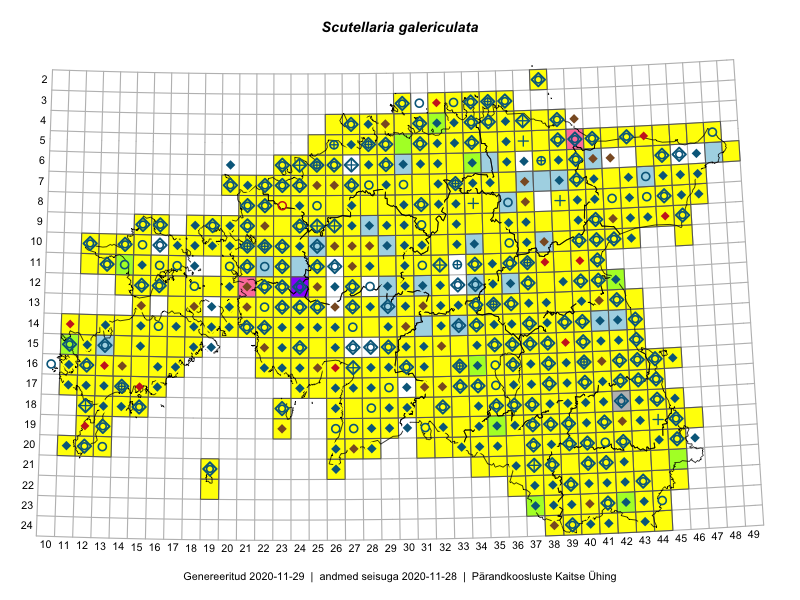

Scutellaria galericulata — harilik tihashein
Lamiaceae :: Scutellaria galericulata L. (2022)

Kaart põhineb 4636 kirjel:
vaatlusi 1773
herbaareksemplare 249
PKÜ kirjeid1 482
ELFi kirjeid2 2104
LVA kirjeid3 28
Taime kaasaegsed ja ajaloolised leiukohad asuvad 512 ruudus.
Tingmärgid ja leidudega ruutude arvud periooditi uues (u) ja 2005 andmestikus (v)
| █ | vahemik | u4 | v5 |
|---|---|---|---|
| █ | 2006–2020 | 488 | – |
| ◆/◇ | 1971–2005 | 379 | 372 |
| ○ | 1921–1970 | 185 | 20 |
| + | kuni 1920 | 27 | 0 |
| × | hävinud | – | 0 |
| ? | kaheldav | – | 0 |
| Ruut | Leidja(d) | Leiuaeg | Kirje |
|---|---|---|---|
| 08-29 | Toivo Sepp | 2020-09-17 | ELF: 2645 |
| 08-28;08-29 | Toivo Sepp | 2020-09-17 | ELF: 9875 |
| 09-29 | Toivo Sepp | 2020-09-11 | ELF: 9878 |
| 15-18 | Peedu Saar | 2020-09-11 | ruut/ala: Scutellaria galericulata L. |
| 16-15 | Ott Luuk, Meeli Mesipuu | 2020-09-11 | PKÜ: 21036 |
| 14-32 | Tiit Hallikma | 2020-09-10 | ELF: 24972 |
| 19-32 | Tiit Hallikma | 2020-09-07 | ELF: 22524 |
| 15-16 | Mari Reitalu, Sirje Azarov | 2020-09-07 | ruut/ala: Scutellaria galericulata L. |
| 16-14 | Mari Reitalu, Sirje Azarov | 2020-09-03 | ruut/ala: Scutellaria galericulata L. |
| 17-31 | Tiit Hallikma | 2020-09-01 | ELF: 24965 |
| 16-17 | Mari Reitalu, Sirje Azarov | 2020-08-31 | ruut/ala: Scutellaria galericulata L. |
| 14-22 | Peedu Saar, Toomas Kukk | 2020-08-30 | ruut/ala: Scutellaria galericulata L. |
| 15-22 | Meeli Mesipuu | 2020-08-30 | PKÜ: 21261 |
| 17-38 | Eerik Leibak | 2020-08-30 | ELF: 677 |
| 15-17 | Mari Reitalu, Sirje Azarov | 2020-08-27–2020-09-06 | ruut/ala: Scutellaria galericulata L. |
| 15-18 | Mari Reitalu, Sirje Azarov | 2020-08-27 | ruut/ala: Scutellaria galericulata L. |
| 10-36 | Peedu Saar | 2020-08-25 | ruut/ala: Scutellaria galericulata L. |
| 09-44 | Alar Soppe | 2020-08-25 | ELF: 20597 |
| 14-14 | Mari Reitalu, Sirje Azarov | 2020-08-24 | ruut/ala: Scutellaria galericulata L. |
| 08-45 | Alar Soppe | 2020-08-24 | ELF: 172 |
| 18-12 | Mari Reitalu, Sirje Azarov | 2020-08-23 | ruut/ala: Scutellaria galericulata L. |
| 17-33 | Peedu Saar | 2020-08-21 | ruut/ala: Scutellaria galericulata L. |
| 18-33 | Peedu Saar | 2020-08-21 | ruut/ala: Scutellaria galericulata L. |
| 19-33 | Tiit Hallikma | 2020-08-20 | ELF: 16536 |
| 14-16 | Mari Reitalu, Sirje Azarov | 2020-08-20 | ruut/ala: Scutellaria galericulata L. |
| 14-16 | Mari Reitalu, Sirje Azarov | 2020-08-19–2020-08-20 | ruut/ala: Scutellaria galericulata L. |
| 03-34 | Toomas Kukk, Ott Luuk, Kersti Tambets, Sten Mander, Kristine Fenske, Maie Itse | 2020-08-19 | ruut/ala: Scutellaria galericulata L. |
| 12-39 | Peedu Saar | 2020-08-19 | ruut/ala: Scutellaria galericulata L. |
| 19-37 | Nele Ingerpuu | 2020-08-19 | ELF: 479 |
| 19-37;19-38 | Nele Ingerpuu | 2020-08-19 | ELF: 481 |
| 19-36 | Meeli Mesipuu | 2020-08-19 | ruut/ala: Scutellaria galericulata L. |
| 19-35 | Meeli Mesipuu | 2020-08-19 | ruut/ala: Scutellaria galericulata L. |
| 17-33 | Meeli Mesipuu | 2020-08-19 | PKÜ: 20369 |
| 17-33;18-33 | Meeli Mesipuu | 2020-08-19 | PKÜ: 20370 |
| 21-39 | Eerik Leibak | 2020-08-19 | ELF: 14396 |
| 19-36 | Nele Ingerpuu | 2020-08-18 | ELF: 693 |
| 11-38 | Ulvi Selgis | 2020-08-17 | punkt: Scutellaria galericulata L. |
| 18-34 | Tiit Hallikma | 2020-08-17 | ELF: 19204 |
| 15-35 | Peedu Saar | 2020-08-17 | PKÜ: 20538 |
| 15-35 | Peedu Saar | 2020-08-17 | PKÜ: 20533 |
| 20-37 | Eerik Leibak | 2020-08-17 | ELF: 22709 |
| 18-38 | Avo Veermäe | 2020-08-17 | LVA: 921314590 |
| 18-38 | Nele Ingerpuu | 2020-08-14 | ELF: 10377 |
| 19-36 | Nele Ingerpuu | 2020-08-13 | ELF: 24893 |
| 19-36 | Nele Ingerpuu | 2020-08-12 | ELF: 1088 |
| 23-43 | Jaanus Paal, Taimi Paal | 2020-08-12 | ELF: 12331 |
| 13-18 | Mari Reitalu, Sirje Azarov | 2020-08-11–2020-08-12 | ruut/ala: Scutellaria galericulata L. |
| 21-42 | Silvia Pihu | 2020-08-11 | ELF: 24918 |
| 19-36 | Nele Ingerpuu | 2020-08-11 | ELF: 24839 |
| 14-16 | Meeli Mesipuu | 2020-08-11 | PKÜ: 20316 |
| 14-20 | Mari Reitalu, Sirje Azarov | 2020-08-11 | ruut/ala: Scutellaria galericulata L. |
| 15-35 | Peedu Saar | 2020-08-10–2020-08-17 | ruut/ala: Scutellaria galericulata L. |
| 13-39 | Ulvi Selgis, Enn Selgis | 2020-08-10 | punkt: Scutellaria galericulata L. |
| 15-35 | Peedu Saar | 2020-08-10 | PKÜ: 20564 |
| 15-35 | Peedu Saar | 2020-08-10 | PKÜ: 20572 |
| 15-35 | Peedu Saar | 2020-08-10 | PKÜ: 20573 |
| 07-30 | Eerik Leibak | 2020-08-10 | ELF: 1207 |
| 16-17 | Mari Reitalu, Sirje Azarov | 2020-08-08–2020-08-29 | ruut/ala: Scutellaria galericulata L. |
| 10-37 | Ulvi Selgis | 2020-08-08 | punkt: Scutellaria galericulata L. |
| 21-35 | Tiit Hallikma | 2020-08-08 | ELF: 16041 |
| 15-43 | Peedu Saar | 2020-08-08 | ruut/ala: Scutellaria galericulata L. |
| 12-15 | Peedu Saar, Ott Luuk | 2020-08-07 | ruut/ala: Scutellaria galericulata L. |
| 12-15 | Ott Luuk, Peedu Saar | 2020-08-07 | PKÜ: 20727 |
| 15-15 | Mari Reitalu, Sirje Azarov | 2020-08-07 | ruut/ala: Scutellaria galericulata L. |
| 22-41 | Toomas Kukk, Eerik Leibak | 2020-08-06 | ELF: 9942 |
| 11-17 | Peedu Saar | 2020-08-06 | ruut/ala: Scutellaria galericulata L. |
| 11-17 | Peedu Saar | 2020-08-06 | PKÜ: 20618 |
| 11-17 | Peedu Saar | 2020-08-06 | PKÜ: 20617 |
| 23-42;24-42 | Eerik Leibak | 2020-08-06 | ELF: 330 |
| 22-42 | Toomas Kukk, Eerik Leibak | 2020-08-05 | ruut/ala: Scutellaria galericulata L. |
| 22-42 | Toomas Kukk | 2020-08-05 | ELF: 9947 |
| 15-35 | Tiit Hallikma | 2020-08-05 | ELF: 1019 |
| 17-35 | Tiit Hallikma | 2020-08-05 | ELF: 18377 |
| 10-23 | Peedu Saar | 2020-08-05 | ruut/ala: Scutellaria galericulata L. |
| 10-23 | Ott Luuk | 2020-08-05 | ruut/ala: Scutellaria galericulata L. |
| 22-41;22-42 | Eerik Leibak | 2020-08-05 | ELF: 2975 |
| 14-39 | Peedu Saar | 2020-08-03 | ruut/ala: Scutellaria galericulata L. |
| 15-36 | Art Villem Adojaan, Amaranta Põld | 2020-07-29 | punkt: Scutellaria galericulata L. |
| 14-38 | Peedu Saar | 2020-07-28 | ruut/ala: Scutellaria galericulata L. |
| 17-44;18-44 | Eerik Leibak | 2020-07-28 | ELF: 402 |
| 16-44 | Helle Mäemets, Kadi Palmik-Das | 2020-07-27 | punkt: Scutellaria galericulata L. |
| 16-43 | Eerik Leibak | 2020-07-26 | ELF: 22158 |
| 16-17 | Mari Reitalu, Sirje Azarov, Anne Teigamägi | 2020-07-22 | ruut/ala: Scutellaria galericulata L. |
| 16-16 | Mari Reitalu, Sirje Azarov, Anne Teigamägi | 2020-07-22 | ruut/ala: Scutellaria galericulata L. |
| 15-36 | Art Villem Adojaan | 2020-07-22 | punkt: Scutellaria galericulata L. |
| 09-26 | Ott Luuk | 2020-07-21–2020-07-23 | ruut/ala: Scutellaria galericulata L. |
| 09-24 | Peedu Saar | 2020-07-21 | punkt: Scutellaria galericulata L. |
| 15-14 | Mari Reitalu, Sirje Azarov | 2020-07-21 | ruut/ala: Scutellaria galericulata L. |
| 19-39 | Jaanus Paal, Taimi Paal | 2020-07-21 | ELF: 14560 |
| 19-39 | Jaanus Paal, Taimi Paal | 2020-07-21 | ELF: 24874 |
| 04-35;04-36 | Jaan Spiegel | 2020-07-21 | ELF: 13775 |
| 03-35 | Jaan Spiegel | 2020-07-21 | ELF: 2640 |
| 20-38 | Jaanus Paal, Taimi Paal | 2020-07-20 | ELF: 24870 |
| 22-42 | Helle Mäemets, Kadi Palmik-Das | 2020-07-20 | punkt: Scutellaria galericulata L. |
| 05-36 | Jaan Spiegel | 2020-07-18 | ELF: 11984 |
| 12-39 | Ulvi Selgis | 2020-07-17 | punkt: Scutellaria galericulata L. |
| 18-41 | Silvia Pihu | 2020-07-16 | ELF: 14838 |
| 16-39 | Toomas Kukk, Peedu Saar, Art Villem Adojaan | 2020-07-15 | ruut/ala: Scutellaria galericulata L. |
| 07-36 | Jaan Spiegel | 2020-07-15 | ELF: 752 |
| 07-36 | Jaan Spiegel | 2020-07-15 | ELF: 24895 |
| 07-35 | Jaan Spiegel | 2020-07-15 | ELF: 10541 |
| 11-40 | Enn Selgis | 2020-07-12 | LVA: 1195515238 |
| 19-40 | Avo Veermäe | 2020-07-10 | LVA: 648751968 |
| 14-22 | Silvia Pihu | 2020-07-09 | ELF: 15962 |
| 13-22 | Silvia Pihu | 2020-07-09 | ELF: 20278 |
| 19-39 | Jaanus Paal, Taimi Paal | 2020-07-09 | ELF: 10909 |
| 22-42 | Eerik Leibak | 2020-07-09 | ELF: 24923 |
| 22-42 | Eerik Leibak | 2020-07-09 | ELF: 390 |
| 23-42 | Eerik Leibak | 2020-07-09 | ELF: 9940 |
| 23-42 | Eerik Leibak | 2020-07-09 | ELF: 9953 |
| 19-41 | Avo Veermäe | 2020-07-09 | LVA: 209127498 |
| 14-22 | Silvia Pihu | 2020-07-08 | ELF: 24909 |
| 14-21 | Silvia Pihu | 2020-07-08 | ELF: 40 |
| 19-39 | Jaanus Paal, Taimi Paal | 2020-07-08 | ELF: 13901 |
| 19-39 | Jaanus Paal, Taimi Paal | 2020-07-08 | ELF: 24865 |
| 20-45 | Toomas Kukk, Eerik Leibak | 2020-07-07 | ruut/ala: Scutellaria galericulata L. |
| 14-24 | Silvia Pihu | 2020-07-07 | ELF: 24907 |
| 16-15 | Mari Reitalu, Sirje Azarov, Anne Teigamägi | 2020-07-07 | ruut/ala: Scutellaria galericulata L. |
| 10-15 | Helle Mäemets, Kaire Torn | 2020-07-07 | punkt: Scutellaria galericulata L. |
| 12-14 | Helle Mäemets, Kaire Torn | 2020-07-06 | ruut/ala: Scutellaria galericulata L. |
| 19-38 | Mari Reitalu, Sirje Azarov, Riine Latserus | 2020-07-05 | ruut/ala: Scutellaria galericulata L. |
| 19-37 | Mari Reitalu, Sirje Azarov, Riine Latserus | 2020-07-04 | ruut/ala: Scutellaria galericulata L. |
| 19-39 | Jaanus Paal, Taimi Paal | 2020-07-04 | ELF: 24861 |
| 17-15 | Peedu Saar | 2020-07-03 | PKÜ: 21195 |
| 17-11 | Meeli Mesipuu | 2020-07-03 | PKÜ: 20185 |
| 17-11 | Meeli Mesipuu | 2020-07-03 | PKÜ: 20186 |
| 17-11 | Meeli Mesipuu | 2020-07-03 | PKÜ: 20187 |
| 17-11 | Meeli Mesipuu | 2020-07-03 | PKÜ: 20188 |
| 17-11 | Meeli Mesipuu | 2020-07-03 | PKÜ: 20190 |
| 09-27 | Eerik Leibak | 2020-07-03 | ELF: 9919 |
| 08-26 | Eerik Leibak | 2020-07-03 | ELF: 24880 |
| 20-12 | Peedu Saar | 2020-07-02 | PKÜ: 20547 |
| 20-12 | Peedu Saar | 2020-07-02 | PKÜ: 20552 |
| 19-12 | Peedu Saar | 2020-07-02 | PKÜ: 20557 |
| 17-11 | Ott Luuk, Rein Kalamees | 2020-07-02 | PKÜ: 21181 |
| 16-15 | Mari Reitalu, Sirje Azarov | 2020-07-02 | ruut/ala: Scutellaria galericulata L. |
| 19-39 | Jaanus Paal, Taimi Paal | 2020-07-02 | ELF: 9976 |
| 19-39 | Jaanus Paal, Taimi Paal | 2020-07-02 | ELF: 9973 |
| 19-39 | Jaanus Paal, Taimi Paal | 2020-07-02 | ELF: 9970 |
| 09-26;09-27 | Eerik Leibak | 2020-07-02 | ELF: 9913 |
| 09-26 | Eerik Leibak | 2020-07-02 | ELF: 24877 |
| 12-37 | Ulvi Selgis | 2020-07-01 | punkt: Scutellaria galericulata L. |
| 17-11 | Peedu Saar | 2020-07-01 | PKÜ: 20477 |
| 17-11 | Meeli Mesipuu | 2020-07-01 | PKÜ: 21112 |
| 17-15 | Toomas Kukk | 2020-06-30 | PKÜ: 20563 |
| 16-14 | Triin Reitalu | 2020-06-26 | punkt: Scutellaria galericulata L. |
| 10-26 | Thea Kull | 2020-06-26 | ruut/ala: Scutellaria galericulata L. |
| 04-33 | Rein Kalamees | 2020-06-26 | PKÜ: 20239 |
| 12-23 | Ott Luuk, Meeli Mesipuu | 2020-06-18 | PKÜ: 21144 |
| 12-22 | Ott Luuk, Meeli Mesipuu | 2020-06-17 | PKÜ: 20868 |
| 04-33 | Peedu Saar | 2020-06-10 | PKÜ: 20354 |
| 05-34 | Ott Luuk, Rein Kalamees | 2020-06-08 | PKÜ: 20270 |
| 10-28 | Kalev Tihkan | 2020-06-06 | punkt: Scutellaria galericulata L. |
| 16-40 | Thea Kull | 2020-05-29–2020-07-03 | ruut/ala: Scutellaria galericulata L. |
| 10-23 | Tõnu Ploompuu | 2019-10-01 | ELF: 198 |
| 10-23 | Tõnu Ploompuu | 2019-10-01 | ELF: 213 |
| 10-23 | Tõnu Ploompuu | 2019-10-01 | ELF: 7777 |
| 10-23 | Tõnu Ploompuu | 2019-10-01 | ELF: 7779 |
| 10-23 | Tõnu Ploompuu | 2019-10-01 | ELF: 7780 |
| 09-31 | Toivo Sepp | 2019-09-29 | ELF: 1066 |
| 16-14 | Mari Reitalu, Sirje Azarov | 2019-09-26 | ELF: 83 |
| 14-25 | Maili Lehtpuu | 2019-09-21 | punkt: Scutellaria galericulata L. |
| 17-13 | Mari Reitalu, Triin Reitalu | 2019-09-20 | ruut/ala: Scutellaria galericulata L. |
| 10-21 | Ott Luuk | 2019-09-19 | ruut/ala: Scutellaria galericulata L. |
| 10-19 | Peedu Saar, Toomas Kukk | 2019-09-18 | ruut/ala: Scutellaria galericulata L. |
| 10-20 | Ott Luuk | 2019-09-18 | ruut/ala: Scutellaria galericulata L. |
| 09-20 | Ott Luuk | 2019-09-18 | ruut/ala: Scutellaria galericulata L. |
| 09-19 | Toomas Kukk, Peedu Saar | 2019-09-17 | ruut/ala: Scutellaria galericulata L. |
| 09-19 | Toomas Kukk, Peedu Saar | 2019-09-17 | ELF: 13732 |
| 09-19 | Toomas Kukk, Peedu Saar | 2019-09-17 | ELF: 13733 |
| 09-18 | Ott Luuk | 2019-09-17 | ruut/ala: Scutellaria galericulata L. |
| 07-45 | Thea Kull, Toomas Kukk | 2019-09-12 | ruut/ala: Scutellaria galericulata L. |
| 05-48 | Peedu Saar, Timo Luhamäe | 2019-09-12 | ruut/ala: Scutellaria galericulata L. |
| 07-43 | Meeli Mesipuu, Ott Luuk | 2019-09-12 | ruut/ala: Scutellaria galericulata L. |
| 09-46 | Peedu Saar, Timo Luhamäe | 2019-09-11 | ruut/ala: Scutellaria galericulata L. |
| 05-44 | Meeli Mesipuu, Ott Luuk | 2019-09-11 | ruut/ala: Scutellaria galericulata L. |
| 10-39 | Toomas Kukk, Thea Kull | 2019-09-10 | ruut/ala: Scutellaria galericulata L. |
| 10-40 | Toomas Kukk, Thea Kull | 2019-09-10 | ruut/ala: Scutellaria galericulata L. |
| 08-41 | Peedu Saar, Timo Luhamäe | 2019-09-10 | ruut/ala: Scutellaria galericulata L. |
| 16-33 | Maili Lehtpuu | 2019-09-10 | punkt: Scutellaria galericulata L. |
| 09-22 | Ott Luuk | 2019-09-04 | ELF: 24833 |
| 14-14 | Mari Reitalu, Sirje Azarov, Anne Teigamägi | 2019-09-04 | ruut/ala: Scutellaria galericulata L. |
| 09-22 | Ott Luuk | 2019-09-03–2019-09-04 | ruut/ala: Scutellaria galericulata L. |
| 14-32 | Meeli Mesipuu, Timo Luhamäe | 2019-08-29 | ruut/ala: Scutellaria galericulata L. |
| 15-32 | Mari Reitalu, Thea Kull, Martin Tikk | 2019-08-29 | ruut/ala: Scutellaria galericulata L. |
| 16-31 | Toomas Kukk, Peedu Saar, Martin Tikk | 2019-08-28 | ruut/ala: Scutellaria galericulata L. |
| 16-30 | Peedu Saar, Martin Tikk, Toomas Kukk | 2019-08-28 | ruut/ala: Scutellaria galericulata L. |
| 14-30 | Ott Luuk, Eerik Leibak | 2019-08-28 | ruut/ala: Scutellaria galericulata L. |
| 15-31 | Meeli Mesipuu, Timo Luhamäe | 2019-08-28 | ruut/ala: Scutellaria galericulata L. |
| 15-30 | Meeli Mesipuu, Timo Luhamäe | 2019-08-28 | ruut/ala: Scutellaria galericulata L. |
| 13-30 | Mari Reitalu, Thea Kull | 2019-08-28 | ruut/ala: Scutellaria galericulata L. |
| 19-41 | Thea Kull, Mari Reitalu | 2019-08-27 | ruut/ala: Scutellaria galericulata L. |
| 17-35 | Peedu Saar, Martin Tikk, Toomas Kukk | 2019-08-27 | ruut/ala: Scutellaria galericulata L. |
| 17-32 | Peedu Saar, Martin Tikk, Toomas Kukk | 2019-08-27 | ruut/ala: Scutellaria galericulata L. |
| 15-35 | Meeli Mesipuu, Timo Luhamäe | 2019-08-27 | ruut/ala: Scutellaria galericulata L. |
| 16-33 | Mari Reitalu, Thea Kull | 2019-08-27 | ruut/ala: Scutellaria galericulata L. |
| 13-28 | Maili Lehtpuu | 2019-08-22 | punkt: Scutellaria galericulata L. |
| 20-44 | Maili Lehtpuu | 2019-08-22 | punkt: Scutellaria galericulata L. |
| 22-41 | Maili Lehtpuu | 2019-08-22 | punkt: Scutellaria galericulata L. |
| 18-44 | Peedu Saar, Ott Luuk | 2019-08-21 | ruut/ala: Scutellaria galericulata L. |
| 15-16 | Martin Silts | 2019-08-19 | LVA: -320129092 |
| 17-13 | Mari Reitalu, Sirje Azarov | 2019-08-19 | ELF: 23 |
| 17-13 | Mari Reitalu, Sirje Azarov | 2019-08-19 | ELF: 24784 |
| 13-25 | Thea Kull | 2019-08-18 | ruut/ala: Scutellaria galericulata L. |
| 13-25 | Thea Kull | 2019-08-18 | ELF: 9920 |
| 09-24 | Peedu Saar | 2019-08-17 | ELF: 267 |
| 07-45 | Maili Lehtpuu | 2019-08-17 | punkt: Scutellaria galericulata L. |
| 07-21 | Peedu Saar | 2019-08-15 | ELF: 2617 |
| 07-21 | Peedu Saar | 2019-08-15 | ELF: 3269 |
| 08-21;09-21 | Peedu Saar | 2019-08-15 | ELF: 21047 |
| 07-21 | Peedu Saar | 2019-08-15 | ELF: 24821 |
| 16-13 | Mari Reitalu, Sirje Azarov | 2019-08-15 | ELF: 21 |
| 20-33 | Maili Lehtpuu | 2019-08-14 | punkt: Scutellaria galericulata L. |
| 11-36 | Peedu Saar | 2019-08-10 | ruut/ala: Scutellaria galericulata L. |
| 16-12 | Sirje Azarov, Mari Reitalu | 2019-08-09 | ELF: 53 |
| 09-40 | Rein Kalamees, Toomas Kukk | 2019-08-09 | ruut/ala: Scutellaria galericulata L. |
| 16-12 | Mari Reitalu, Sirje Azarov | 2019-08-09 | ELF: 50 |
| 10-35 | Peedu Saar, Timo Luhamäe | 2019-08-08 | ruut/ala: Scutellaria galericulata L. |
| 07-33 | Ott Luuk, Jaak-Albert Metsoja | 2019-08-08 | ruut/ala: Scutellaria galericulata L. |
| 04-35 | Meeli Mesipuu | 2019-08-08 | ruut/ala: Scutellaria galericulata L. |
| 06-36 | Peedu Saar, Timo Luhamäe | 2019-08-07 | ruut/ala: Scutellaria galericulata L. |
| 06-36 | Peedu Saar, Timo Luhamäe | 2019-08-07 | punkt: Scutellaria galericulata L. |
| 05-36 | Peedu Saar, Timo Luhamäe | 2019-08-07 | ruut/ala: Scutellaria galericulata L. |
| 03-32 | Ott Luuk, Jaak-Albert Metsoja | 2019-08-07 | ruut/ala: Scutellaria galericulata L. |
| 03-33 | Ott Luuk, Jaak-Albert Metsoja | 2019-08-07 | ruut/ala: Scutellaria galericulata L. |
| 04-33 | Ott Luuk, Jaak-Albert Metsoja | 2019-08-07 | ruut/ala: Scutellaria galericulata L. |
| 04-36 | Meeli Mesipuu | 2019-08-06–2019-08-07 | ruut/ala: Scutellaria galericulata L. |
| 19-41 | Thea Kull | 2019-08-06 | ruut/ala: Scutellaria galericulata L. |
| 03-34 | Rein Kalamees, Toomas Kukk | 2019-08-06 | ruut/ala: Scutellaria galericulata L. |
| 04-34 | Rein Kalamees, Toomas Kukk | 2019-08-06 | ruut/ala: Scutellaria galericulata L. |
| 05-31 | Peedu Saar, Timo Luhamäe | 2019-08-06 | ruut/ala: Scutellaria galericulata L. |
| 04-31 | Peedu Saar, Timo Luhamäe | 2019-08-06 | ruut/ala: Scutellaria galericulata L. |
| 04-30 | Peedu Saar, Timo Luhamäe | 2019-08-06 | ruut/ala: Scutellaria galericulata L. |
| 05-38 | Ott Luuk, Jaak-Albert Metsoja | 2019-08-06 | ruut/ala: Scutellaria galericulata L. |
| 04-38 | Ott Luuk, Jaak-Albert Metsoja | 2019-08-06 | ruut/ala: Scutellaria galericulata L. |
| 04-39 | Ott Luuk, Jaak-Albert Metsoja | 2019-08-06 | ruut/ala: Scutellaria galericulata L. |
| 02-38 | Meeli Mesipuu | 2019-08-06 | ruut/ala: Scutellaria galericulata L. |
| 16-12 | Sirje Azarov, Mari Reitalu | 2019-08-05 | ELF: 56 |
| 05-32 | Rein Kalamees, Toomas Kukk | 2019-08-05 | ruut/ala: Scutellaria galericulata L. |
| 04-32 | Rein Kalamees, Toomas Kukk | 2019-08-05 | ruut/ala: Scutellaria galericulata L. |
| 05-33 | Peedu Saar, Timo Luhamäe | 2019-08-05 | ruut/ala: Scutellaria galericulata L. |
| 07-36 | Ott Luuk, Jaak-Albert Metsoja | 2019-08-05 | ruut/ala: Scutellaria galericulata L. |
| 12-30 | Toivo Sepp | 2019-08-03 | ELF: 2347 |
| 18-45 | Helle Mäemets, Kadi Palmik-Das | 2019-08-02 | punkt: Scutellaria galericulata L. |
| 22-39 | Toomas Kukk, Peedu Saar | 2019-08-01 | ruut/ala: Scutellaria galericulata L. |
| 20-39 | Peedu Saar, Toomas Kukk | 2019-08-01 | ruut/ala: Scutellaria galericulata L. |
| 10-32 | Ott Luuk | 2019-07-31 | ruut/ala: Scutellaria galericulata L. |
| 12-38 | Peedu Saar | 2019-07-30 | ruut/ala: Scutellaria galericulata L. |
| 08-21 | Peedu Saar | 2019-07-26 | ruut/ala: Scutellaria galericulata L. |
| 07-21 | Peedu Saar | 2019-07-26 | ELF: 179 |
| 08-21 | Peedu Saar | 2019-07-26 | ELF: 180 |
| 08-21 | Peedu Saar | 2019-07-26 | ELF: 2000 |
| 08-21 | Peedu Saar | 2019-07-26 | ELF: 21028 |
| 18-39 | Thea Kull | 2019-07-25 | ruut/ala: Scutellaria galericulata L. |
| 09-31 | Ott Luuk, Toivo Sepp | 2019-07-25 | ruut/ala: Scutellaria galericulata L. |
| 08-32;09-32 | Toivo Sepp, Ott Luuk | 2019-07-24 | ELF: 1414 |
| 07-22 | Peedu Saar | 2019-07-24 | ruut/ala: Scutellaria galericulata L. |
| 07-22 | Peedu Saar | 2019-07-24 | ELF: 183 |
| 11-30 | Toivo Sepp, Ott Luuk | 2019-07-23 | ELF: 20378 |
| 08-22 | Peedu Saar | 2019-07-23 | ruut/ala: Scutellaria galericulata L. |
| 08-22 | Peedu Saar | 2019-07-23 | ELF: 189 |
| 11-30 | Ott Luuk, Toivo Sepp | 2019-07-23 | ruut/ala: Scutellaria galericulata L. |
| 17-38 | Meeli Mesipuu | 2019-07-23 | ruut/ala: Scutellaria galericulata L. |
| 17-38 | Meeli Mesipuu | 2019-07-23 | ruut/ala: Scutellaria galericulata L. |
| 17-33 | Maili Lehtpuu | 2019-07-23 | punkt: Scutellaria galericulata L. |
| 11-21 | Tõnu Ploompuu, Eliko Kõiv | 2019-07-21 | ELF: 204 |
| 11-22 | Tõnu Ploompuu, Eliko Kõiv | 2019-07-21 | ELF: 231 |
| 10-24 | Tõnu Ploompuu, Eliko Kõiv | 2019-07-20 | ELF: 9869 |
| 10-24;11-24 | Tõnu Ploompuu, Eliko Kõiv | 2019-07-20 | ELF: 24787 |
| 16-12 | Sirje Azarov | 2019-07-19 | ELF: 9928 |
| 17-13 | Sirje Azarov, Mari Reitalu | 2019-07-18 | ELF: 5311 |
| 17-13 | Mari Reitalu, Sirje Azarov | 2019-07-18 | ruut/ala: Scutellaria galericulata L. |
| 18-13 | Mari Reitalu, Sirje Azarov | 2019-07-18 | ELF: 9930 |
| 18-34 | Maili Lehtpuu | 2019-07-18 | punkt: Scutellaria galericulata L. |
| 16-40 | Meeli Mesipuu | 2019-07-17 | ruut/ala: Scutellaria galericulata L. |
| 23-40 | Martin Küttim, Marko Vainu | 2019-07-16–2019-07-17 | ELF: 15245 |
| 19-36 | Ott Luuk, Peedu Saar | 2019-07-16 | ruut/ala: Scutellaria galericulata L. |
| 18-36 | Ott Luuk, Peedu Saar | 2019-07-16 | ruut/ala: Scutellaria galericulata L. |
| 18-36 | Peedu Saar, Ott Luuk | 2019-07-15 | ruut/ala: Scutellaria galericulata L. |
| 17-38 | Peedu Saar, Ott Luuk | 2019-07-15 | ruut/ala: Scutellaria galericulata L. |
| 08-27 | Eerik Leibak | 2019-07-14 | ELF: 868 |
| 03-32 | Rein Kalamees | 2019-07-13 | ruut/ala: Scutellaria galericulata L. |
| 23-41 | Toomas Kukk, Indrek Tammekänd | 2019-07-12 | ruut/ala: Scutellaria galericulata L. |
| 17-39 | Thea Kull | 2019-07-12 | ruut/ala: Scutellaria galericulata L. |
| 24-39 | Peedu Saar, Timo Luhamäe | 2019-07-12 | ruut/ala: Scutellaria galericulata L. |
| 23-38 | Peedu Saar, Timo Luhamäe | 2019-07-12 | ruut/ala: Scutellaria galericulata L. |
| 19-40 | Meeli Mesipuu | 2019-07-12 | ruut/ala: Scutellaria galericulata L. |
| 19-42 | Meeli Mesipuu | 2019-07-12 | ruut/ala: Scutellaria galericulata L. |
| 19-38 | Thea Kull | 2019-07-11 | ruut/ala: Scutellaria galericulata L. |
| 23-39 | Peedu Saar, Timo Luhamäe | 2019-07-11 | ruut/ala: Scutellaria galericulata L. |
| 23-37 | Peedu Saar, Timo Luhamäe | 2019-07-11 | ruut/ala: Scutellaria galericulata L. |
| 23-44 | Ott Luuk, Tiit Hallikma | 2019-07-11 | ruut/ala: Scutellaria galericulata L. |
| 24-43 | Ott Luuk, Tiit Hallikma | 2019-07-11 | ruut/ala: Scutellaria galericulata L. |
| 19-41 | Meeli Mesipuu | 2019-07-11 | ruut/ala: Scutellaria galericulata L. |
| 19-12 | Mari Reitalu, Sirje Azarov | 2019-07-11 | ELF: 7 |
| 20-12 | Mari Reitalu, Sirje Azarov | 2019-07-11 | ELF: 24781 |
| 21-41 | Toomas Kukk, Indrek Tammekänd | 2019-07-10 | ruut/ala: Scutellaria galericulata L. |
| 19-39 | Thea Kull | 2019-07-10 | ruut/ala: Scutellaria galericulata L. |
| 22-38 | Peedu Saar, Timo Luhamäe | 2019-07-10 | ruut/ala: Scutellaria galericulata L. |
| 18-41 | Meeli Mesipuu | 2019-07-10 | ruut/ala: Scutellaria galericulata L. |
| 19-41 | Meeli Mesipuu | 2019-07-10 | punkt: Scutellaria galericulata L. |
| 20-40 | Toomas Kukk, Indrek Tammekänd | 2019-07-09 | ruut/ala: Scutellaria galericulata L. |
| 20-41 | Toomas Kukk, Indrek Tammekänd | 2019-07-09 | ruut/ala: Scutellaria galericulata L. |
| 20-35 | Peedu Saar, Timo Luhamäe | 2019-07-09 | ruut/ala: Scutellaria galericulata L. |
| 20-36 | Peedu Saar, Timo Luhamäe | 2019-07-09 | ruut/ala: Scutellaria galericulata L. |
| 20-43 | Ott Luuk, Tiit Hallikma | 2019-07-09 | ruut/ala: Scutellaria galericulata L. |
| 20-44 | Ott Luuk, Tiit Hallikma | 2019-07-09 | ruut/ala: Scutellaria galericulata L. |
| 19-35 | Siiri Kõljalg | 2019-07-07 | HSSK20091: Scutellaria galericulata L. |
| 15-15 | Toomas Kukk, Eerik Leibak | 2019-07-05 | ruut/ala: Scutellaria galericulata L. |
| 11-13 | Toomas Kukk | 2019-07-04 | ruut/ala: Scutellaria galericulata L. |
| 10-13 | Toomas Kukk | 2019-07-04 | ruut/ala: Scutellaria galericulata L. |
| 10-13 | Toomas Kukk | 2019-07-04 | ELF: 24698 |
| 13-40 | Peedu Saar, Ott Luuk | 2019-07-04 | ruut/ala: Scutellaria galericulata L. |
| 13-40 | Peedu Saar, Ott Luuk | 2019-07-04 | ruut/ala: Scutellaria galericulata L. |
| 11-41 | Peedu Saar, Ott Luuk | 2019-07-04 | ruut/ala: Scutellaria galericulata L. |
| 10-42 | Peedu Saar, Ott Luuk | 2019-07-04 | ruut/ala: Scutellaria galericulata L. |
| 15-40 | Ott Luuk, Peedu Saar | 2019-07-04 | punkt: Scutellaria galericulata L. |
| 10-41 | Ott Luuk, Peedu Saar | 2019-07-04 | ruut/ala: Scutellaria galericulata L. |
| 17-11 | Helle Mäemets, Kaire Torn | 2019-07-04 | punkt: Scutellaria galericulata L. |
| 17-11 | Helle Mäemets | 2019-07-04 | punkt: Scutellaria galericulata L. |
| 20-12 | Sirje Azarov, Mari Reitalu | 2019-07-03 | ELF: 2827 |
| 20-12 | Sirje Azarov, Mari Reitalu | 2019-07-03 | ELF: 13383 |
| 20-12 | Sirje Azarov, Mari Reitalu | 2019-07-03 | ELF: 13409 |
| 20-12 | Sirje Azarov, Mari Reitalu | 2019-07-03 | ELF: 24780 |
| 14-39 | Ott Luuk, Kaili Kattai | 2019-07-03 | ruut/ala: Scutellaria galericulata L. |
| 11-16 | Eerik Leibak | 2019-07-03 | ruut/ala: Scutellaria galericulata L. |
| 11-15 | Toomas Kukk | 2019-07-02 | ruut/ala: Scutellaria galericulata L. |
| 05-28 | Meeli Mesipuu | 2019-06-30 | ruut/ala: Scutellaria galericulata L. |
| 13-40 | Ulvi Selgis | 2019-06-29 | LVA: -1017266680 |
| 24-39 | Thea Kull | 2019-06-29 | punkt: Scutellaria galericulata L. |
| 15-12 | Mari Reitalu | 2019-06-27 | ELF: 108 |
| 15-11 | Mari Reitalu | 2019-06-27 | ELF: 125 |
| 17-39 | Avo Veermäe | 2019-06-22 | LVA: 2072501642 |
| 18-38 | Meeli Mesipuu | 2019-06-20 | ruut/ala: Scutellaria galericulata L. |
| 14-11 | Mari Reitalu | 2019-06-20 | ruut/ala: Scutellaria galericulata L. |
| 14-11 | Mari Reitalu | 2019-06-20 | ELF: 2894 |
| 17-40 | Meeli Mesipuu | 2019-06-19 | ruut/ala: Scutellaria galericulata L. |
| 15-40 | Thea Kull | 2019-06-17 | ruut/ala: Scutellaria galericulata L. |
| 15-42 | Peedu Saar | 2019-06-15 | ruut/ala: Scutellaria galericulata L. |
| 16-40 | Thea Kull | 2019-06-14 | ruut/ala: Scutellaria galericulata L. |
| 10-28 | Ott Luuk | 2019-06-14 | punkt: Scutellaria galericulata L. |
| 20-45 | Meeli Mets, Marili Slavski | 2019-06-14 | punkt: Scutellaria galericulata L. |
| 22-39 | Helen Kivisild | 2019-06-14 | punkt: Scutellaria galericulata L. |
| 16-40 | Aivi Kasik, Martin Tikk, Weralda Lakeman, Thea Kull | 2019-06-14 | punkt: Scutellaria galericulata L. |
| 16-40 | Aivi Kasik, Martin Tikk, Thea Kull, Weralda Lakeman | 2019-06-14 | punkt: Scutellaria galericulata L. |
| 08-37 | Ott Luuk, Peedu Saar | 2019-06-12 | ruut/ala: Scutellaria galericulata L. |
| 05-33 | Ott Luuk, Peedu Saar | 2019-06-11 | ruut/ala: Scutellaria galericulata L. |
| 11-37 | Ott Luuk, Peedu Saar | 2019-06-10 | ruut/ala: Scutellaria galericulata L. |
| 16-45 | Ott Luuk | 2019-06-07 | ruut/ala: Scutellaria galericulata L. |
| 17-15 | Meeli Mesipuu | 2019-06-04 | ruut/ala: Scutellaria galericulata L. |
| 15-18 | Meeli Mesipuu | 2019-06-03 | ruut/ala: Scutellaria galericulata L. |
| 10-13 | Toomas Kukk, Indrek Tammekänd | 2019-06-02 | ruut/ala: Scutellaria galericulata L. |
| 10-14 | Toomas Kukk, Indrek Tammekänd | 2019-06-02 | ruut/ala: Scutellaria galericulata L. |
| 16-28 | Indrek Tammekänd | 2019-05-29–2019-08-23 | ruut/ala: Scutellaria galericulata L. |
| 17-24 | Peedu Saar | 2018-09-20 | ruut/ala: Scutellaria galericulata L. |
| 10-25 | Tõnu Ploompuu, Marko Vainu | 2018-09-07 | ELF: 2028 |
| 10-25 | Tõnu Ploompuu, Marko Vainu | 2018-09-07 | ELF: 24608 |
| 09-22 | Tõnu Ploompuu, Laura Paju, Helen Valts, Marko Vainu | 2018-09-06 | ELF: 21059 |
| 09-22 | Tõnu Ploompuu, Laura Paju, Helen Valts, Marko Vainu | 2018-09-06 | ELF: 24605 |
| 18-40 | Toomas Hirse | 2018-09-06 | ELF: 24629 |
| 09-25 | Ott Luuk, Thea Kull | 2018-09-06 | ruut/ala: Scutellaria galericulata L. |
| 05-41 | Peedu Saar, Toomas Kukk | 2018-09-03 | ruut/ala: Scutellaria galericulata L. |
| 14-23 | Indrek Tammekänd | 2018-09-03 | ELF: 3100 |
| 11-37 | Maili Lehtpuu | 2018-08-31 | punkt: Scutellaria galericulata L. |
| 16-16 | Toomas Kukk, Tiit Hallikma | 2018-08-30 | ruut/ala: Scutellaria galericulata L. |
| 12-19 | Toomas Kukk, Tiit Hallikma | 2018-08-30 | ruut/ala: Scutellaria galericulata L. |
| 08-22 | Maili Lehtpuu | 2018-08-30 | punkt: Scutellaria galericulata L. |
| 10-14 | Maili Lehtpuu | 2018-08-29 | punkt: Scutellaria galericulata L. |
| 11-15 | Maili Lehtpuu | 2018-08-29 | punkt: Scutellaria galericulata L. |
| 12-29 | Indrek Tammekänd | 2018-08-29 | ELF: 1260 |
| 19-39 | Toomas Hirse | 2018-08-28 | ELF: 13905 |
| 10-32 | Ott Luuk | 2018-08-28 | ruut/ala: Scutellaria galericulata L. |
| 19-45 | Toomas Kukk, Timo Luhamäe, Eerik Leibak | 2018-08-27 | ELF: 582 |
| 19-45 | Toomas Kukk, Eerik Leibak, Timo Luhamäe | 2018-08-27 | ruut/ala: Scutellaria galericulata L. |
| 10-30 | Ott Luuk, Toivo Sepp | 2018-08-27 | ELF: 20390 |
| 14-40 | Liisa Oks | 2018-08-26 | LVA: 552529466 |
| 14-37 | Peedu Saar | 2018-08-23 | ruut/ala: Scutellaria galericulata L. |
| 10-32 | Meeli Mesipuu | 2018-08-23 | ruut/ala: Scutellaria galericulata L. |
| 18-12 | Mari Reitalu, Sirje Azarov | 2018-08-23 | ELF: 24037 |
| 10-22 | Tõnu Ploompuu, Laura Paju | 2018-08-22 | ELF: 203 |
| 19-39 | Toomas Hirse | 2018-08-22 | ELF: 13892 |
| 19-38 | Toomas Hirse | 2018-08-22 | ELF: 23548 |
| 08-22 | Tõnu Ploompuu, Priit Kukk | 2018-08-21 | ELF: 2610 |
| 16-23 | Indrek Tammekänd | 2018-08-21 | ELF: 24521 |
| 17-38 | Toomas Hirse | 2018-08-18 | ELF: 24613 |
| 17-38 | Toomas Hirse | 2018-08-18 | ELF: 24614 |
| 10-22 | Tõnu Ploompuu | 2018-08-16 | ELF: 24599 |
| 11-29 | Peedu Saar, Toomas Kukk, Ott Luuk, Kersti Tambets, Sten Mander | 2018-08-16 | ruut/ala: Scutellaria galericulata L. |
| 10-22 | Tõnu Ploompuu | 2018-08-14 | ELF: 277 |
| 11-21 | Tõnu Ploompuu, Priit Kukk | 2018-08-13 | ELF: 234 |
| 11-20 | Tõnu Ploompuu, Priit Kukk | 2018-08-13 | ELF: 2656 |
| 11-37 | Helle Mäemets, Kadi Palmik-Das | 2018-08-12 | punkt: Scutellaria galericulata L. |
| 05-44 | Indrek Tammekänd | 2018-08-10–2018-08-11 | ruut/ala: Scutellaria galericulata L. |
| 04-33 | Peedu Saar, Toomas Kukk | 2018-08-08 | ruut/ala: Scutellaria galericulata L. |
| 06-31 | Peedu Saar, Toomas Kukk | 2018-08-07 | ruut/ala: Scutellaria galericulata L. |
| 20-45 | Helle Mäemets, Kadi Palmik-Das | 2018-08-07 | punkt: Scutellaria galericulata L. |
| 18-45 | Helle Mäemets, Kadi Palmik-Das | 2018-08-07 | punkt: Scutellaria galericulata L. |
| 16-43 | Peedu Saar | 2018-08-06 | ruut/ala: Scutellaria galericulata L. |
| 12-24 | Tõnu Ploompuu, Mart Tartlan, Helen Valts, Tanel Pihelgas | 2018-08-03 | ELF: 2389 |
| 12-23 | Tõnu Ploompuu, Mart Tartlan, Helen Valts, Tanel Pihelgas | 2018-08-03 | ELF: 24592 |
| 20-33 | Peedu Saar | 2018-08-03 | ruut/ala: Scutellaria galericulata L. |
| 17-33 | Peedu Saar | 2018-08-03 | ruut/ala: Scutellaria galericulata L. |
| 19-32 | Peedu Saar | 2018-08-03 | ELF: 2182 |
| 13-27;13-28 | Indrek Tammekänd | 2018-08-02 | ELF: 1222 |
| 15-43 | Peedu Saar | 2018-07-31 | ruut/ala: Scutellaria galericulata L. |
| 15-43 | Peedu Saar | 2018-07-31 | ELF: 2287 |
| 15-43 | Peedu Saar | 2018-07-31 | ELF: 24653 |
| 15-43 | Peedu Saar | 2018-07-31 | ELF: 24654 |
| 14-25 | Indrek Tammekänd | 2018-07-30 | ELF: 9991 |
| 14-25 | Indrek Tammekänd | 2018-07-30 | ELF: 9992 |
| 14-25 | Indrek Tammekänd | 2018-07-30 | ELF: 20243 |
| 14-25 | Indrek Tammekänd | 2018-07-30 | ELF: 24582 |
| 22-38 | Maili Lehtpuu | 2018-07-27 | punkt: Scutellaria galericulata L. |
| 19-38 | Maili Lehtpuu | 2018-07-27 | punkt: Scutellaria galericulata L. |
| 22-39 | Maili Lehtpuu | 2018-07-27 | punkt: Scutellaria galericulata L. |
| 05-36 | Maili Lehtpuu | 2018-07-25 | punkt: Scutellaria galericulata L. |
| 06-40 | Maili Lehtpuu | 2018-07-25 | punkt: Scutellaria galericulata L. |
| 17-13 | Mari Reitalu, Sirje Azarov | 2018-07-23 | ELF: 5316 |
| 17-13 | Mari Reitalu, Sirje Azarov | 2018-07-23 | ELF: 6151 |
| 15-42 | Peedu Saar | 2018-07-20 | ruut/ala: Scutellaria galericulata L. |
| 15-43 | Peedu Saar | 2018-07-20 | ruut/ala: Scutellaria galericulata L. |
| 15-43 | Peedu Saar | 2018-07-20 | ELF: 3026 |
| 22-42 | Toomas Kukk | 2018-07-18 | ruut/ala: Scutellaria galericulata L. |
| 10-22 | Meeli Mesipuu | 2018-07-18 | ruut/ala: Scutellaria galericulata L. |
| 15-14 | Maili Lehtpuu | 2018-07-18 | punkt: Scutellaria galericulata L. |
| 08-44 | Peedu Saar | 2018-07-17 | ruut/ala: Scutellaria galericulata L. |
| 17-14 | Maili Lehtpuu | 2018-07-17 | punkt: Scutellaria galericulata L. |
| 17-13 | Maili Lehtpuu | 2018-07-17 | punkt: Scutellaria galericulata L. |
| 23-38 | Eerik Leibak | 2018-07-16 | ELF: 24673 |
| 10-18 | Toomas Kukk, Meeli Mesipuu | 2018-07-11 | ruut/ala: Scutellaria galericulata L. |
| 11-37 | Helle Mäemets, Kadi Palmik | 2018-07-11 | ruut/ala: Scutellaria galericulata L. |
| 19-12 | Mari Reitalu, Sirje Azarov | 2018-07-10 | ELF: 1276 |
| 20-12 | Mari Reitalu, Sirje Azarov | 2018-07-10 | ELF: 2877 |
| 20-12 | Mari Reitalu, Sirje Azarov | 2018-07-10 | ELF: 13405 |
| 05-36 | Alar Soppe | 2018-07-09 | ELF: 11990 |
| 11-40 | Ulvi Selgis | 2018-07-08 | ruut/ala: Scutellaria galericulata L. |
| 07-35 | Thea Kull, Katrin Kaldma | 2018-07-07 | ELF: 24559 |
| 07-35 | Thea Kull, Katrin Kaldma | 2018-07-07 | ELF: 24560 |
| 09-36 | Thea Kull | 2018-07-05 | ELF: 806 |
| 06-23 | Peedu Saar | 2018-07-05 | ruut/ala: Scutellaria galericulata L. |
| 06-23 | Ott Luuk, Meeli Mesipuu, Jaak-Albert Metsoja, Mari Metsoja, Peedu Saar | 2018-07-05 | ruut/ala: Scutellaria galericulata L. |
| 06-23 | Ott Luuk, Meeli Mesipuu, Jaak-Albert Metsoja, Mari Metsoja | 2018-07-05 | ruut/ala: Scutellaria galericulata L. |
| 06-23 | Ott Luuk, Meeli Mesipuu, Jaak-Albert Metsoja, Mari Metsoja, Peedu Saar | 2018-07-04–2018-07-06 | ruut/ala: Scutellaria galericulata L. |
| 06-23 | Peedu Saar | 2018-07-04 | ruut/ala: Scutellaria galericulata L. |
| 13-40 | Maili Lehtpuu | 2018-07-03 | punkt: Scutellaria galericulata L. |
| 07-36 | Avo Veermäe | 2018-07-03 | LVA: 1496269492 |
| 09-27 | Mari Reitalu, Sirje Azarov | 2018-07-01 | ruut/ala: Scutellaria galericulata L. |
| 17-39 | Avo Veermäe | 2018-06-30 | LVA: 100039908 |
| 21-38 | Eerik Leibak | 2018-06-27 | ELF: 10001 |
| 20-39 | Eerik Leibak | 2018-06-27 | ELF: 12230 |
| 20-38;20-39 | Eerik Leibak | 2018-06-27 | ELF: 22665 |
| 07-37 | Alar Soppe | 2018-06-26 | ELF: 750 |
| 12-27 | Ranno Puumets | 2018-06-24 | ruut/ala: Scutellaria galericulata L. |
| 11-37 | Peedu Saar, Toomas Kukk | 2018-06-22 | ruut/ala: Scutellaria galericulata L. |
| 12-37 | Ulvi Selgis, Enn Selgis | 2018-06-21 | ruut/ala: Scutellaria galericulata L. |
| 12-37 | Enn Selgis | 2018-06-21 | LVA: 497242130 |
| 22-38 | Tiina Ploom | 2018-06-16 | punkt: Scutellaria galericulata L. |
| 10-12 | Liis Soonik | 2018-06-15 | punkt: Scutellaria galericulata L. |
| 20-39 | Ilmar Uibopuu | 2018-06-15 | LVA: -1360864478 |
| 12-22 | Trinus Haitjema | 2018-06-12 | punkt: Scutellaria galericulata L. |
| 12-18 | Toomas Kukk, Ilmar Uibopuu, Mari Reitalu | 2018-05-27 | ruut/ala: Scutellaria galericulata L. |
| 11-37 | Indrek Tammekänd, Jaak Tammekänd, Alar Soppe, Margus Pensa | 2018-05-26 | ruut/ala: Scutellaria galericulata L. |
| 03-30 | Peedu Saar | 2017-09-29 | ruut/ala: Scutellaria galericulata L. |
| 16-23 | Indrek Tammekänd | 2017-09-17 | ruut/ala: Scutellaria galericulata L. |
| 16-22 | Indrek Tammekänd | 2017-09-17 | ruut/ala: Scutellaria galericulata L. |
| 12-16 | Peedu Saar, Ott Luuk | 2017-09-15 | ruut/ala: Scutellaria galericulata L. |
| 11-29 | Ott Luuk, Peedu Saar | 2017-09-15 | ruut/ala: Scutellaria galericulata L. |
| 10-14 | Peedu Saar, Ott Luuk | 2017-09-14 | ruut/ala: Scutellaria galericulata L. |
| 10-15 | Ott Luuk, Peedu Saar | 2017-09-14 | ruut/ala: Scutellaria galericulata L. |
| 10-13 | Ott Luuk, Peedu Saar | 2017-09-14 | ruut/ala: Scutellaria galericulata L. |
| 11-14 | Ott Luuk, Peedu Saar | 2017-09-13 | ruut/ala: Scutellaria galericulata L. |
| 11-13 | Toomas Kukk, Indrek Tammekänd | 2017-09-12 | ruut/ala: Scutellaria galericulata L. |
| 10-12 | Toomas Kukk, Indrek Tammekänd | 2017-09-12 | ruut/ala: Scutellaria galericulata L. |
| 23-44 | Maili Lehtpuu | 2017-09-12 | punkt: Scutellaria galericulata L. |
| 12-17 | Toomas Kukk, Indrek Tammekänd | 2017-09-11 | ruut/ala: Scutellaria galericulata L. |
| 14-26 | Indrek Tammekänd | 2017-09-04 | ruut/ala: Scutellaria galericulata L. |
| 14-23 | Kaili Kattai, Helen Toom | 2017-09-02 | punkt: Scutellaria galericulata L. |
| 14-23 | Kaili Kattai, Helen Toom | 2017-09-02 | punkt: Scutellaria galericulata L. |
| 17-31 | Ott Luuk, Toomas Kukk, Sten Mander, Kersti Tambets, Timo Luhamäe | 2017-08-29 | ruut/ala: Scutellaria galericulata L. |
| 18-32 | Maili Lehtpuu | 2017-08-29 | punkt: Scutellaria galericulata L. |
| 12-41 | Ott Luuk, Peedu Saar | 2017-08-23 | ruut/ala: Scutellaria galericulata L. |
| 15-37 | Peedu Saar, Susanna Vain | 2017-08-22 | ruut/ala: Scutellaria galericulata L. |
| 14-43 | Peedu Saar, Ott Luuk | 2017-08-21 | ruut/ala: Scutellaria galericulata L. |
| 14-37 | Indrek Tammekänd | 2017-08-17–2017-08-18 | ruut/ala: Scutellaria galericulata L. |
| 24-43 | Maili Lehtpuu | 2017-08-17 | punkt: Scutellaria galericulata L. |
| 20-44 | Maili Lehtpuu | 2017-08-17 | punkt: Scutellaria galericulata L. |
| 15-38 | Indrek Tammekänd | 2017-08-17 | ruut/ala: Scutellaria galericulata L. |
| 10-15 | Helle Mäemets, Maila Moor | 2017-08-17 | punkt: Scutellaria galericulata L. |
| 17-38 | Maili Lehtpuu | 2017-08-16 | punkt: Scutellaria galericulata L. |
| 14-36 | Indrek Tammekänd | 2017-08-16 | ruut/ala: Scutellaria galericulata L. |
| 14-36 | Meeli Mesipuu, Helen Toom | 2017-08-15 | ruut/ala: Scutellaria galericulata L. |
| 14-37 | Meeli Mesipuu, Helen Toom | 2017-08-14 | ruut/ala: Scutellaria galericulata L. |
| 14-27 | Ott Luuk, Indrek Tammekänd | 2017-08-11 | ruut/ala: Scutellaria galericulata L. |
| 09-24 | Mari Reitalu, Eerik Leibak | 2017-08-11 | ruut/ala: Scutellaria galericulata L. |
| 09-24 | Mari Reitalu, Eerik Leibak | 2017-08-11 | ELF: 24041 |
| 14-29 | Ilmar Uibopuu, Toomas Kukk | 2017-08-11 | ruut/ala: Scutellaria galericulata L. |
| 15-29 | Ilmar Uibopuu, Toomas Kukk | 2017-08-11 | ruut/ala: Scutellaria galericulata L. |
| 05-35 | Tõnu Feldmann, Katrit Karus | 2017-08-10 | ruut/ala: Scutellaria galericulata L. |
| 11-25 | Toomas Kukk, Eerik Leibak | 2017-08-10 | ruut/ala: Scutellaria galericulata L. |
| 05-26 | Peedu Saar, Timo Luhamäe | 2017-08-10 | ruut/ala: Scutellaria galericulata L. |
| 11-20 | Ott Luuk, Ilmar Uibopuu | 2017-08-10 | ruut/ala: Scutellaria galericulata L. |
| 07-23 | Mari Reitalu, Indrek Tammekänd | 2017-08-10 | ruut/ala: Scutellaria galericulata L. |
| 04-36 | Katrit Karus, Tõnu Feldmann | 2017-08-10 | ruut/ala: Scutellaria galericulata L. |
| 04-37 | Katrit Karus, Tõnu Feldmann | 2017-08-10 | ruut/ala: Scutellaria galericulata L. |
| 05-34 | Katrit Karus, Tõnu Feldmann | 2017-08-10 | ruut/ala: Scutellaria galericulata L. |
| 11-21 | Ilmar Uibopuu, Ott Luuk | 2017-08-10 | ruut/ala: Scutellaria galericulata L. |
| 05-27 | Ranno Puumets | 2017-08-09 | ruut/ala: Scutellaria galericulata L. |
| 12-30 | Meeli Mesipuu, Indrek Tammekänd | 2017-08-09 | ruut/ala: Scutellaria galericulata L. |
| 08-26 | Toomas Kukk, Ilmar Uibopuu, Kadri Kuusksalu | 2017-08-08 | ruut/ala: Scutellaria galericulata L. |
| 10-28 | Thea Kull, Ott Luuk | 2017-08-08 | ruut/ala: Scutellaria galericulata L. |
| 07-27 | Peedu Saar, Timo Luhamäe | 2017-08-08 | ruut/ala: Scutellaria galericulata L. |
| 11-28 | Ott Luuk, Thea Kull | 2017-08-08 | ruut/ala: Scutellaria galericulata L. |
| 09-26 | Meeli Mesipuu, Indrek Tammekänd | 2017-08-08 | ruut/ala: Scutellaria galericulata L. |
| 13-37 | Toomas Kukk, Ilmar Uibopuu | 2017-08-07 | ruut/ala: Scutellaria galericulata L. |
| 14-34 | Peedu Saar, Timo Luhamäe | 2017-08-07 | ruut/ala: Scutellaria galericulata L. |
| 12-32 | Ott Luuk, Thea Kull | 2017-08-07 | ruut/ala: Scutellaria galericulata L. |
| 11-25 | Meeli Mesipuu | 2017-08-03 | punkt: Scutellaria galericulata L. |
| 08-28 | Helle Mäemets, Kadi Palmik | 2017-08-03 | ruut/ala: Scutellaria galericulata L. |
| 19-44 | Helle Mäemets, Kadi Palmik | 2017-08-02 | ruut/ala: Scutellaria galericulata L. |
| 16-39 | Thea Kull, Ott Luuk | 2017-08-01 | ruut/ala: Scutellaria galericulata L. |
| 16-37 | Ott Luuk, Thea Kull | 2017-08-01 | ruut/ala: Scutellaria galericulata L. |
| 20-39 | Ilmar Uibopuu | 2017-08-01 | ruut/ala: Scutellaria galericulata L. |
| 22-44 | Helle Mäemets, Kadi Palmik | 2017-08-01 | ruut/ala: Scutellaria galericulata L. |
| 22-43 | Helle Mäemets, Kadi Palmik | 2017-08-01 | ruut/ala: Scutellaria galericulata L. |
| 07-24 | Toomas Kukk, Ilmar Uibopuu | 2017-07-30 | ruut/ala: Scutellaria galericulata L. |
| 07-22 | Toomas Kukk, Ilmar Uibopuu | 2017-07-29 | ruut/ala: Scutellaria galericulata L. |
| 08-22 | Toomas Kukk, Ilmar Uibopuu | 2017-07-29 | ruut/ala: Scutellaria galericulata L. |
| 07-21 | Toomas Kukk, Ilmar Uibopuu | 2017-07-28 | ruut/ala: Scutellaria galericulata L. |
| 21-36 | Peedu Saar, Ott Luuk | 2017-07-28 | ruut/ala: Scutellaria galericulata L. |
| 22-36 | Ott Luuk, Peedu Saar | 2017-07-28 | ruut/ala: Scutellaria galericulata L. |
| 17-40 | Avo Veermäe | 2017-07-28 | LVA: 1874329104 |
| 06-23 | Toomas Kukk | 2017-07-27 | ruut/ala: Scutellaria galericulata L. |
| 23-39 | Peedu Saar, Ott Luuk | 2017-07-27 | ruut/ala: Scutellaria galericulata L. |
| 22-39 | Ott Luuk, Peedu Saar | 2017-07-27 | ruut/ala: Scutellaria galericulata L. |
| 06-23 | Ilmar Uibopuu, Kadri Kuusksalu | 2017-07-27 | ruut/ala: Scutellaria galericulata L. |
| 06-24 | Ilmar Uibopuu, Kadri Kuusksalu | 2017-07-27 | ruut/ala: Scutellaria galericulata L. |
| 06-23 | Toomas Kukk, Ilmar Uibopuu, Kadri Kuusksalu | 2017-07-26 | ruut/ala: Scutellaria galericulata L. |
| 14-39 | Peedu Saar | 2017-07-26 | ruut/ala: Scutellaria galericulata L. |
| 15-43 | Helle Mäemets, Kadi Palmik | 2017-07-26 | punkt: Scutellaria galericulata L. |
| 14-43 | Helle Mäemets, Kadi Palmik | 2017-07-26 | punkt: Scutellaria galericulata L. |
| 16-23 | unknown | 2017-07-25 | punkt: Scutellaria galericulata L. |
| 19-38 | Peedu Saar, Ott Luuk | 2017-07-25 | ruut/ala: Scutellaria galericulata L. |
| 20-38 | Ott Luuk, Peedu Saar | 2017-07-25 | ruut/ala: Scutellaria galericulata L. |
| 15-23 | Maili Lehtpuu | 2017-07-25 | punkt: Scutellaria galericulata L. |
| 20-45 | Helle Mäemets, Kadi Palmik | 2017-07-25 | punkt: Scutellaria galericulata L. |
| 05-31 | Rein Kalamees | 2017-07-24 | ruut/ala: Scutellaria galericulata L. |
| 12-42 | Peedu Saar | 2017-07-24 | ruut/ala: Scutellaria galericulata L. |
| 12-42 | Peedu Saar | 2017-07-24 | TAA0141274: Scutellaria galericulata L. |
| 20-41 | Avo Veermäe | 2017-07-24 | LVA: -1281926120 |
| 17-26 | Indrek Tammekänd | 2017-07-23 | ruut/ala: Scutellaria galericulata L. |
| 20-39 | Triin Reitalu, Ansis Blaus | 2017-07-22 | punkt: Scutellaria galericulata L. |
| 20-39 | Triin Reitalu, Ansis Blaus | 2017-07-22 | punkt: Scutellaria galericulata L. |
| 20-39 | Ilmar Uibopuu | 2017-07-21–2017-07-24 | ruut/ala: Scutellaria galericulata L. |
| 20-38 | Triin Reitalu, Ansis Blaus | 2017-07-21 | punkt: Scutellaria galericulata L. |
| 06-31 | Peedu Saar, Ott Luuk | 2017-07-21 | ruut/ala: Scutellaria galericulata L. |
| 19-38 | Triin Reitalu, Ansis Blaus | 2017-07-20 | punkt: Scutellaria galericulata L. |
| 04-27 | Peedu Saar | 2017-07-20 | ruut/ala: Scutellaria galericulata L. |
| 04-26 | Ott Luuk | 2017-07-20 | ruut/ala: Scutellaria galericulata L. |
| 19-42 | Avo Veermäe | 2017-07-20 | LVA: -2046626306 |
| 08-40 | Peedu Saar, Ott Luuk | 2017-07-18 | ruut/ala: Scutellaria galericulata L. |
| 22-38 | Triin Reitalu, Ansis Blaus | 2017-07-17 | punkt: Scutellaria galericulata L. |
| 22-38 | Triin Reitalu, Ansis Blaus | 2017-07-17 | punkt: Scutellaria galericulata L. |
| 08-25 | Helle Mäemets, Kadi Palmik | 2017-07-16 | ruut/ala: Scutellaria galericulata L. |
| 08-26 | Helle Mäemets, Kadi Palmik | 2017-07-16 | ruut/ala: Scutellaria galericulata L. |
| 08-26 | Helle Mäemets, Kadi Palmik | 2017-07-16 | ruut/ala: Scutellaria galericulata L. |
| 18-42 | Avo Veermäe | 2017-07-16 | LVA: -1946442226 |
| 21-40 | Maret Kaljulaid, Kadri Kuusksalu, Ilmar Uibopuu | 2017-07-15 | LVA: 1972221936 |
| 07-22 | Helle Mäemets, Kadi Palmik-Das | 2017-07-15 | punkt: Scutellaria galericulata L. |
| 07-21 | Helle Mäemets, Kadi Palmik | 2017-07-15 | ruut/ala: Scutellaria galericulata L. |
| 07-22 | Helle Mäemets, Kadi Palmik | 2017-07-15 | ruut/ala: Scutellaria galericulata L. |
| 21-39 | Ilmar Uibopuu | 2017-07-14 | ruut/ala: Scutellaria galericulata L. |
| 18-23 | Mari Reitalu, Sirje Azarov, Ester Valdvee, Triin Reitalu | 2017-07-11–2017-07-13 | ruut/ala: Scutellaria galericulata L. |
| 18-42 | Avo Veermäe | 2017-07-11 | LVA: -607364780 |
| 16-40 | Peedu Saar | 2017-07-10–2017-07-11 | ruut/ala: Scutellaria galericulata L. |
| 22-41 | Maili Lehtpuu | 2017-07-10 | punkt: Scutellaria galericulata L. |
| 18-37 | Helle Mäemets, Kadi Palmik | 2017-07-10 | ruut/ala: Scutellaria galericulata L. |
| 18-39 | Avo Veermäe | 2017-07-09 | LVA: 1269325922 |
| 18-39 | Maili Lehtpuu | 2017-07-07 | punkt: Scutellaria galericulata L. |
| 21-38 | Helle Mäemets, Kadi Palmik | 2017-07-07 | ruut/ala: Scutellaria galericulata L. |
| 19-37 | Helle Mäemets, Kadi Palmik | 2017-07-07 | ruut/ala: Scutellaria galericulata L. |
| 19-37 | Helle Mäemets, Kadi Palmik | 2017-07-07 | ruut/ala: Scutellaria galericulata L. |
| 08-45 | Tõnu Feldmann, Katrit Karus | 2017-07-06 | ruut/ala: Scutellaria galericulata L. |
| 08-45 | Tõnu Feldmann, Katrit Karus | 2017-07-06 | ruut/ala: Scutellaria galericulata L. |
| 15-18 | Heete Ausmeel, Triin Edovald, Evelin Laanest, Ilmar Uibopuu, Marko Vainu | 2017-07-06 | LVA: -1433186370 |
| 08-29 | Tõnu Feldmann, Katrit Karus | 2017-07-05 | ruut/ala: Scutellaria galericulata L. |
| 08-33 | Tõnu Feldmann, Katrit Karus | 2017-07-05 | ruut/ala: Scutellaria galericulata L. |
| 10-32 | Katrit Karus, Tõnu Feldmann | 2017-07-05 | ruut/ala: Scutellaria galericulata L. |
| 18-29 | Indrek Tammekänd | 2017-07-05 | ruut/ala: Scutellaria galericulata L. |
| 17-40 | Helle Mäemets, Kadi Palmik-Das | 2017-07-05 | punkt: Scutellaria galericulata L. |
| 18-40 | Helle Mäemets, Kadi Palmik-Das | 2017-07-05 | punkt: Scutellaria galericulata L. |
| 18-40 | Helle Mäemets, Kadi Palmik | 2017-07-05 | ruut/ala: Scutellaria galericulata L. |
| 18-40 | Helle Mäemets, Kadi Palmik | 2017-07-05 | ruut/ala: Scutellaria galericulata L. |
| 17-40 | Helle Mäemets, Kadi Palmik | 2017-07-05 | ruut/ala: Scutellaria galericulata L. |
| 17-40 | Helle Mäemets, Kadi Palmik | 2017-07-05 | ruut/ala: Scutellaria galericulata L. |
| 18-39 | Avo Veermäe | 2017-07-05 | LVA: -327226252 |
| 15-41 | Ott Luuk, Peedu Saar | 2017-07-04 | ruut/ala: Scutellaria galericulata L. |
| 11-39 | Katrit Karus, Tõnu Feldmann | 2017-07-04 | ruut/ala: Scutellaria galericulata L. |
| 16-41 | Peedu Saar, Ott Luuk | 2017-07-03–2017-07-04 | ruut/ala: Scutellaria galericulata L. |
| 16-34 | Tõnu Feldmann, Katrit Karus | 2017-07-03 | TAA0144436: Scutellaria galericulata L. |
| 10-33 | Katrit Karus, Tõnu Feldmann | 2017-07-03 | ruut/ala: Scutellaria galericulata L. |
| 18-33 | Helle Mäemets, Kadi Palmik | 2017-07-03 | ruut/ala: Scutellaria galericulata L. |
| 18-32 | Helle Mäemets, Kadi Palmik | 2017-07-03 | ruut/ala: Scutellaria galericulata L. |
| 18-32 | Helle Mäemets, Kadi Palmik | 2017-07-03 | punkt: Scutellaria galericulata L. |
| 18-28 | Helle Mäemets, Kadi Palmik | 2017-06-28 | ruut/ala: Scutellaria galericulata L. |
| 16-36 | Ott Luuk, Thea Kull | 2017-06-21 | ruut/ala: Scutellaria galericulata L. |
| 15-37 | Meeli Mesipuu | 2017-06-21 | punkt: Scutellaria galericulata L. |
| 14-35 | Peedu Saar, Ott Luuk | 2017-06-20 | ruut/ala: Scutellaria galericulata L. |
| 14-37 | Thea Kull, Meeli Mesipuu | 2017-06-19 | ruut/ala: Scutellaria galericulata L. |
| 18-30 | Helle Mäemets, Kadi Palmik | 2017-06-17 | ruut/ala: Scutellaria galericulata L. |
| 18-30 | Helle Mäemets, Kadi Palmik | 2017-06-17 | ruut/ala: Scutellaria galericulata L. |
| 18-30 | Helle Mäemets, Kadi Palmik | 2017-06-17 | punkt: Scutellaria galericulata L. |
| 12-18 | Toomas Kukk, Peeter Pärn | 2017-06-15 | ruut/ala: Scutellaria galericulata L. |
| 12-18 | Peedu Saar, Ilmar Uibopuu | 2017-06-15 | ruut/ala: Scutellaria galericulata L. |
| 14-11 | Peedu Saar, Ott Luuk | 2016-10-07 | ruut/ala: Scutellaria galericulata L. |
| 19-12 | Ott Luuk, Peedu Saar | 2016-10-07 | ruut/ala: Scutellaria galericulata L. |
| 15-11 | Meeli Mesipuu, Toomas Kukk, Mari Reitalu | 2016-10-07 | ruut/ala: Scutellaria galericulata L. |
| 08-32 | Ott Luuk, Peedu Saar | 2016-09-28 | ruut/ala: Scutellaria galericulata L. |
| 21-34 | Peedu Saar, Ott Luuk | 2016-09-22 | ruut/ala: Scutellaria galericulata L. |
| 19-23 | Ott Luuk, Peedu Saar | 2016-09-21 | ruut/ala: Scutellaria galericulata L. |
| 18-23 | Ott Luuk, Peedu Saar | 2016-09-21 | ruut/ala: Scutellaria galericulata L. |
| 09-19 | Meeli Mesipuu, Ott Luuk | 2016-09-16 | ruut/ala: Scutellaria galericulata L. |
| 10-19 | Ott Luuk, Meeli Mesipuu | 2016-09-15 | ruut/ala: Scutellaria galericulata L. |
| 06-33 | Peedu Saar, Toomas Kukk | 2016-09-14 | ruut/ala: Scutellaria galericulata L. |
| 05-43 | Peedu Saar, Toomas Kukk | 2016-09-13 | ruut/ala: Scutellaria galericulata L. |
| 22-19 | Ott Luuk, Meeli Mesipuu | 2016-09-10–2016-09-11 | ruut/ala: Scutellaria galericulata L. |
| 21-19 | Meeli Mesipuu, Ott Luuk | 2016-09-10 | ruut/ala: Scutellaria galericulata L. |
| 06-32 | Toomas Kukk, Peedu Saar | 2016-09-08 | ruut/ala: Scutellaria galericulata L. |
| 09-31 | Peedu Saar, Ott Luuk | 2016-09-07 | ruut/ala: Scutellaria galericulata L. |
| 09-30 | Ott Luuk, Peedu Saar | 2016-09-06–2016-09-07 | ruut/ala: Scutellaria galericulata L. |
| 16-17 | Peedu Saar, Ott Luuk | 2016-09-01 | ruut/ala: Scutellaria galericulata L. |
| 04-31 | Sander Laherand, Toomas Kukk | 2016-08-31 | ruut/ala: Scutellaria galericulata L. |
| 09-46 | Meeli Mesipuu, Karin Kikas | 2016-08-31 | ruut/ala: Scutellaria galericulata L. |
| 10-46 | Meeli Mesipuu, Karin Kikas | 2016-08-31 | ruut/ala: Scutellaria galericulata L. |
| 18-15 | Peedu Saar | 2016-08-30 | ruut/ala: Scutellaria galericulata L. |
| 18-14 | Ott Luuk | 2016-08-30 | ruut/ala: Scutellaria galericulata L. |
| 06-29 | Sander Laherand, Toomas Kukk | 2016-08-29 | ruut/ala: Scutellaria galericulata L. |
| 17-44 | Peedu Saar | 2016-08-24 | ruut/ala: Scutellaria galericulata L. |
| 20-36 | Thea Kull, Ott Luuk | 2016-08-23 | ruut/ala: Scutellaria galericulata L. |
| 18-38 | Ott Luuk, Thea Kull | 2016-08-23 | ruut/ala: Scutellaria galericulata L. |
| 23-44 | Peedu Saar, Karin Kikas | 2016-08-19 | ruut/ala: Scutellaria galericulata L. |
| 22-45 | Peedu Saar, Karin Kikas | 2016-08-18 | ruut/ala: Scutellaria galericulata L. |
| 21-44 | Peedu Saar, Karin Kikas | 2016-08-18 | ruut/ala: Scutellaria galericulata L. |
| 14-20 | Mari Reitalu, Sirje Azarov | 2016-08-17 | ruut/ala: Scutellaria galericulata L. |
| 15-17 | Peedu Saar, Toomas Kukk | 2016-08-13 | ruut/ala: Scutellaria galericulata L. |
| 15-14 | Maret Gerz, Peedu Saar | 2016-08-12 | ruut/ala: Scutellaria galericulata L. |
| 08-22 | Maili Lehtpuu | 2016-08-12 | punkt: Scutellaria galericulata L. |
| 17-14 | Toomas Kukk, Meeli Mesipuu, Johannes Kõdar | 2016-08-11 | ruut/ala: Scutellaria galericulata L. |
| 14-15 | Peedu Saar, Maret Gerz | 2016-08-11 | ruut/ala: Scutellaria galericulata L. |
| 04-39 | Ott Luuk, Kersti Tambets, Ülle Jõgar, Janika Sammasto, Sten Mander | 2016-08-11 | ruut/ala: Scutellaria galericulata L. |
| 12-15 | Toomas Kukk, Meeli Mesipuu | 2016-08-10 | ruut/ala: Scutellaria galericulata L. |
| 11-13 | Thea Kull, Peedu Saar | 2016-08-10 | ruut/ala: Scutellaria galericulata L. |
| 10-12 | Sander Laherand, Maret Gerz, Nele Jõessar | 2016-08-10 | ruut/ala: Scutellaria galericulata L. |
| 11-12 | Peedu Saar, Thea Kull | 2016-08-10 | ruut/ala: Scutellaria galericulata L. |
| 08-47 | Ott Luuk, Kersti Tambets, Janika Sammasto, Ülle Jõgar, Sten Mander | 2016-08-10 | ruut/ala: Scutellaria galericulata L. |
| 09-44 | Ott Luuk, Kersti Tambets, Janika Sammasto, Ülle Jõgar, Sten Mander | 2016-08-10 | ruut/ala: Scutellaria galericulata L. |
| 10-13 | Maret Gerz, Sander Laherand | 2016-08-10 | ruut/ala: Scutellaria galericulata L. |
| 05-36 | Maili Lehtpuu | 2016-08-10 | punkt: Scutellaria galericulata L. |
| 06-40 | Maili Lehtpuu | 2016-08-10 | punkt: Scutellaria galericulata L. |
| 10-15 | Toomas Kukk, Sander Laherand, Nele Jõessar | 2016-08-09 | ruut/ala: Scutellaria galericulata L. |
| 11-15 | Thea Kull, Peedu Saar | 2016-08-09 | ruut/ala: Scutellaria galericulata L. |
| 11-14 | Peedu Saar, Thea Kull | 2016-08-09 | ruut/ala: Scutellaria galericulata L. |
| 09-38 | Ott Luuk, Eerik Leibak | 2016-08-08 | ruut/ala: Scutellaria galericulata L. |
| 20-12 | Mari Reitalu, Sirje Azarov | 2016-08-08 | ruut/ala: Scutellaria galericulata L. |
| 20-13 | Mari Reitalu, Sirje Azarov | 2016-08-08 | ruut/ala: Scutellaria galericulata L. |
| 13-40 | Helle Mäemets, Maila Moor | 2016-08-08 | punkt: Scutellaria galericulata L. |
| 20-43 | Peedu Saar, Thea Kull | 2016-08-05 | ruut/ala: Scutellaria galericulata L. |
| 09-42 | Ott Luuk, Eerik Leibak | 2016-08-05 | ruut/ala: Scutellaria galericulata L. |
| 09-41 | Ott Luuk, Eerik Leibak | 2016-08-05 | ruut/ala: Scutellaria galericulata L. |
| 19-38 | Maili Lehtpuu | 2016-08-05 | punkt: Scutellaria galericulata L. |
| 22-39 | Maili Lehtpuu | 2016-08-05 | punkt: Scutellaria galericulata L. |
| 22-42 | Thea Kull, Peedu Saar | 2016-08-04 | ruut/ala: Scutellaria galericulata L. |
| 22-43 | Peedu Saar, Thea Kull | 2016-08-04 | ruut/ala: Scutellaria galericulata L. |
| 10-41 | Ott Luuk, Eerik Leibak | 2016-08-04 | ruut/ala: Scutellaria galericulata L. |
| 10-42 | Ott Luuk, Eerik Leibak | 2016-08-04 | ruut/ala: Scutellaria galericulata L. |
| 20-45 | Helle Mäemets, Kadi Palmik | 2016-08-04 | punkt: Scutellaria galericulata L. |
| 16-44 | Helle Mäemets, Kadi Palmik | 2016-08-04 | punkt: Scutellaria galericulata L. |
| 10-39 | Ott Luuk, Eerik Leibak | 2016-08-03 | ruut/ala: Scutellaria galericulata L. |
| 15-43 | Helle Mäemets, Kadi Palmik | 2016-08-02 | punkt: Scutellaria galericulata L. |
| 14-43 | Helle Mäemets, Kadi Palmik | 2016-08-02 | punkt: Scutellaria galericulata L. |
| 18-13 | Mari Reitalu, Sirje Azarov | 2016-07-31 | ruut/ala: Scutellaria galericulata L. |
| 19-13 | Mari Reitalu, Sirje Azarov | 2016-07-31 | ruut/ala: Scutellaria galericulata L. |
| 07-40 | Toomas Kukk, Tiit Hallikma | 2016-07-29 | ruut/ala: Scutellaria galericulata L. |
| 08-42 | Peedu Saar, Timo Luhamäe | 2016-07-29 | ruut/ala: Scutellaria galericulata L. |
| 08-39 | Meeli Mesipuu, Liina Oja | 2016-07-29 | ruut/ala: Scutellaria galericulata L. |
| 17-41 | Kersti Püssa, Rein Kalamees | 2016-07-29 | ruut/ala: Scutellaria galericulata L. |
| 15-36 | Karin Kaljund, Kaire Lanno | 2016-07-29 | ruut/ala: Scutellaria galericulata L. |
| 09-43 | Hannes Pehlak, Ott Luuk | 2016-07-29 | ruut/ala: Scutellaria galericulata L. |
| 10-43 | Hannes Pehlak, Ott Luuk | 2016-07-29 | ruut/ala: Scutellaria galericulata L. |
| 06-40 | Sander Laherand, Peedu Saar | 2016-07-28 | ruut/ala: Scutellaria galericulata L. |
| 05-39 | Ott Luuk, Tiit Hallikma | 2016-07-28 | ruut/ala: Scutellaria galericulata L. |
| 04-33 | Meeli Mesipuu, Timo Luhamäe | 2016-07-28 | ruut/ala: Scutellaria galericulata L. |
| 03-32 | Meeli Mesipuu, Timo Luhamäe | 2016-07-28 | ruut/ala: Scutellaria galericulata L. |
| 05-38 | Hannes Pehlak, Toomas Kukk, Susanna Vain | 2016-07-28 | ruut/ala: Scutellaria galericulata L. |
| 04-39 | Hannes Pehlak, Toomas Kukk, Susanna Vain | 2016-07-28 | ruut/ala: Scutellaria galericulata L. |
| 05-36 | Tõnu Ploompuu, Eerik Leibak | 2016-07-27 | ruut/ala: Scutellaria galericulata L. |
| 05-37 | Tõnu Ploompuu, Eerik Leibak | 2016-07-27 | ruut/ala: Scutellaria galericulata L. |
| 07-35 | Toomas Kukk, Sander Laherand, Nele Jõessar | 2016-07-27 | ruut/ala: Scutellaria galericulata L. |
| 05-35 | Peedu Saar, Liina Oja, Susanna Vain | 2016-07-27 | ruut/ala: Scutellaria galericulata L. |
| 05-34 | Ott Luuk, Hannes Pehlak | 2016-07-27 | ruut/ala: Scutellaria galericulata L. |
| 16-41 | Kersti Püssa, Rein Kalamees | 2016-07-27 | ruut/ala: Scutellaria galericulata L. |
| 18-23 | Karin Kaljund, Kaire Lanno, Indrek Melts | 2016-07-27 | ruut/ala: Scutellaria galericulata L. |
| 22-39 | Helle Mäemets, Margit Malleus | 2016-07-27 | punkt: Scutellaria galericulata L. |
| 22-39 | Helle Mäemets, Margit Malleus | 2016-07-27 | punkt: Scutellaria galericulata L. |
| 08-27 | Erkki Otsman, Sergei Smirnov | 2016-07-27 | ruut/ala: Scutellaria galericulata L. |
| 05-42 | Tiit Hallikma, Tõnu Ploompuu | 2016-07-26 | ruut/ala: Scutellaria galericulata L. |
| 05-41 | Tiit Hallikma, Tõnu Ploompuu | 2016-07-26 | ruut/ala: Scutellaria galericulata L. |
| 04-38 | Thea Kull, Susanna Vain, Eerik Leibak | 2016-07-26 | ruut/ala: Scutellaria galericulata L. |
| 04-37 | Thea Kull, Eerik Leibak, Susanna Vain | 2016-07-26 | ruut/ala: Scutellaria galericulata L. |
| 04-35 | Sander Laherand, Ott Luuk, Nele Jõessar | 2016-07-26 | ruut/ala: Scutellaria galericulata L. |
| 04-32 | Peedu Saar, Timo Luhamäe | 2016-07-26 | ruut/ala: Scutellaria galericulata L. |
| 03-33 | Peedu Saar, Timo Luhamäe | 2016-07-26 | ruut/ala: Scutellaria galericulata L. |
| 04-36 | Meeli Mesipuu, Liina Oja | 2016-07-26 | ruut/ala: Scutellaria galericulata L. |
| 03-36 | Meeli Mesipuu, Liina Oja | 2016-07-26 | ruut/ala: Scutellaria galericulata L. |
| 03-34 | Hannes Pehlak, Toomas Kukk | 2016-07-26 | ruut/ala: Scutellaria galericulata L. |
| 04-34 | Hannes Pehlak, Toomas Kukk | 2016-07-26 | ruut/ala: Scutellaria galericulata L. |
| 09-35 | Toomas Kukk, Tiit Hallikma | 2016-07-25 | ruut/ala: Scutellaria galericulata L. |
| 06-39 | Thea Kull, Hannes Pehlak | 2016-07-25 | ruut/ala: Scutellaria galericulata L. |
| 04-28 | Sander Laherand, Tõnu Ploompuu, Nele Jõessar | 2016-07-25 | ruut/ala: Scutellaria galericulata L. |
| 09-34 | Ott Luuk, Eerik Leibak | 2016-07-25 | ruut/ala: Scutellaria galericulata L. |
| 09-33 | Ott Luuk, Eerik Leibak | 2016-07-25 | ruut/ala: Scutellaria galericulata L. |
| 11-36 | Meeli Mesipuu, Timo Luhamäe | 2016-07-25 | ruut/ala: Scutellaria galericulata L. |
| 15-37 | Karin Kaljund, Kaire Lanno | 2016-07-25 | ruut/ala: Scutellaria galericulata L. |
| 10-30 | Erkki Otsman, Sergei Smirnov | 2016-07-25 | ruut/ala: Scutellaria galericulata L. |
| 18-38 | Helle Mäemets, Mall Värva | 2016-07-24 | punkt: Scutellaria galericulata L. |
| 08-31 | Erkki Otsman, Sergei Smirnov | 2016-07-24 | ruut/ala: Scutellaria galericulata L. |
| 14-37 | Eeva-Maria Jeletsky, Tarmo Niitla | 2016-07-23 | ruut/ala: Scutellaria galericulata L. |
| 13-36 | Toomas Kukk, Raivo Kalle | 2016-07-22 | ruut/ala: Scutellaria galericulata L. |
| 14-34 | Thea Kull, Tiit Hallikma | 2016-07-22 | ruut/ala: Scutellaria galericulata L. |
| 12-35 | Ott Luuk, Hannes Pehlak | 2016-07-22 | ruut/ala: Scutellaria galericulata L. |
| 13-35 | Ott Luuk, Hannes Pehlak | 2016-07-22 | ruut/ala: Scutellaria galericulata L. |
| 07-31 | Erkki Otsman, Sergei Smirnov | 2016-07-22 | ruut/ala: Scutellaria galericulata L. |
| 13-30 | Tõnu Ploompuu, Hannes Pehlak, Marko Veinbergs | 2016-07-21 | ruut/ala: Scutellaria galericulata L. |
| 13-32 | Thea Kull, Raivo Kalle, Susanna Vain | 2016-07-21 | ruut/ala: Scutellaria galericulata L. |
| 15-30 | Sirje Azarov, Meeli Mesipuu | 2016-07-21 | ruut/ala: Scutellaria galericulata L. |
| 18-37 | Rein Kalamees, Kersti Püssa | 2016-07-21 | ruut/ala: Scutellaria galericulata L. |
| 11-34 | Peedu Saar, Timo Luhamäe | 2016-07-21 | ruut/ala: Scutellaria galericulata L. |
| 11-35 | Peedu Saar, Timo Luhamäe | 2016-07-21 | ruut/ala: Scutellaria galericulata L. |
| 13-33 | Ott Luuk, Indrek Tammekänd | 2016-07-21 | ruut/ala: Scutellaria galericulata L. |
| 13-31 | Oliver Parrest, Toivo Sepp | 2016-07-21 | ruut/ala: Scutellaria galericulata L. |
| 15-31 | Meeli Mesipuu, Sirje Azarov | 2016-07-21 | ruut/ala: Scutellaria galericulata L. |
| 15-29 | Elle Rajandu, Tiit Hallikma | 2016-07-21 | ruut/ala: Scutellaria galericulata L. |
| 17-32 | Toomas Kukk, Eerik Leibak | 2016-07-20 | ruut/ala: Scutellaria galericulata L. |
| 16-29 | Thea Kull, Hannes Pehlak | 2016-07-20 | ruut/ala: Scutellaria galericulata L. |
| 17-36 | Rein Kalamees, Kersti Püssa | 2016-07-20 | ruut/ala: Scutellaria galericulata L. |
| 16-28 | Ott Luuk, Liina Oja | 2016-07-20 | ruut/ala: Scutellaria galericulata L. |
| 17-35 | Meeli Mesipuu, Toivo Sepp, Susanna Vain | 2016-07-20 | ruut/ala: Scutellaria galericulata L. |
| 18-35 | Mari Metsoja, Peedu Saar | 2016-07-20 | ruut/ala: Scutellaria galericulata L. |
| 18-36 | Mari Metsoja, Peedu Saar | 2016-07-20 | ruut/ala: Scutellaria galericulata L. |
| 15-38 | Kaire Lanno, Karin Kaljund | 2016-07-20 | ruut/ala: Scutellaria galericulata L. |
| 16-35 | Jaak-Albert Metsoja, Lena Neuenkamp, Sirje Azarov | 2016-07-20 | ruut/ala: Scutellaria galericulata L. |
| 16-30 | Hannes Pehlak, Thea Kull | 2016-07-20 | ruut/ala: Scutellaria galericulata L. |
| 16-32 | Elle Rajandu, Indrek Tammekänd | 2016-07-20 | ruut/ala: Scutellaria galericulata L. |
| 17-29 | Aat Sarv, Raivo Kalle | 2016-07-20 | ruut/ala: Scutellaria galericulata L. |
| 18-29 | Aat Sarv, Raivo Kalle | 2016-07-20 | ruut/ala: Scutellaria galericulata L. |
| 18-31 | Toomas Kukk, Hannes Pehlak | 2016-07-19 | ruut/ala: Scutellaria galericulata L. |
| 18-34 | Thea Kull, Indrek Tammekänd | 2016-07-19 | ruut/ala: Scutellaria galericulata L. |
| 18-33 | Thea Kull, Indrek Tammekänd | 2016-07-19 | ruut/ala: Scutellaria galericulata L. |
| 19-35 | Sirje Azarov, Peedu Saar | 2016-07-19 | ruut/ala: Scutellaria galericulata L. |
| 19-34 | Peedu Saar, Sirje Azarov | 2016-07-19 | ruut/ala: Scutellaria galericulata L. |
| 18-30 | Ott Luuk, Raivo Kalle, Susanna Vain | 2016-07-19 | ruut/ala: Scutellaria galericulata L. |
| 19-31 | Meeli Mesipuu, Mari Metsoja | 2016-07-19 | ruut/ala: Scutellaria galericulata L. |
| 20-31 | Mari Metsoja, Meeli Mesipuu | 2016-07-19 | ruut/ala: Scutellaria galericulata L. |
| 15-39 | Kaire Lanno, Karin Kaljund | 2016-07-19 | ruut/ala: Scutellaria galericulata L. |
| 20-39 | Ilmar Uibopuu | 2016-07-19 | LVA: 2135656450 |
| 20-27 | Aat Sarv, Eerik Leibak | 2016-07-19 | ruut/ala: Scutellaria galericulata L. |
| 21-34 | Toomas Kukk, Susanna Vain, Raivo Kalle | 2016-07-18 | ruut/ala: Scutellaria galericulata L. |
| 21-35 | Toomas Kukk, Susanna Vain, Raivo Kalle | 2016-07-18 | ruut/ala: Scutellaria galericulata L. |
| 08-31 | Toivo Sepp, Peedu Saar | 2016-07-18 | ruut/ala: Scutellaria galericulata L. |
| 20-35 | Thea Kull, Eerik Leibak | 2016-07-18 | ruut/ala: Scutellaria galericulata L. |
| 20-34 | Thea Kull, Eerik Leibak | 2016-07-18 | ruut/ala: Scutellaria galericulata L. |
| 20-26 | Sirje Azarov, Indrek Tammekänd | 2016-07-18 | ruut/ala: Scutellaria galericulata L. |
| 21-26 | Sirje Azarov, Indrek Tammekänd | 2016-07-18 | ruut/ala: Scutellaria galericulata L. |
| 19-27 | Ott Luuk, Hannes Pehlak | 2016-07-18 | ruut/ala: Scutellaria galericulata L. |
| 20-33 | Liina Oja, Elle Rajandu | 2016-07-18 | ruut/ala: Scutellaria galericulata L. |
| 15-40 | Kaire Lanno, Karin Kaljund | 2016-07-18 | ruut/ala: Scutellaria galericulata L. |
| 20-32 | Jaak-Albert Metsoja, Mari Metsoja, Lena Neuenkamp | 2016-07-18 | ruut/ala: Scutellaria galericulata L. |
| 19-32 | Jaak-Albert Metsoja, Mari Metsoja, Lena Neuenkamp | 2016-07-18 | ruut/ala: Scutellaria galericulata L. |
| 21-39 | Ilmar Uibopuu | 2016-07-18 | LVA: 172157784 |
| 14-24 | Aat Sarv, Oliver Parrest | 2016-07-18 | ruut/ala: Scutellaria galericulata L. |
| 15-24 | Aat Sarv, Oliver Parrest | 2016-07-18 | ruut/ala: Scutellaria galericulata L. |
| 20-33 | Maili Lehtpuu | 2016-07-15 | punkt: Scutellaria galericulata L. |
| 07-28 | Erkki Otsman, Sergei Smirnov | 2016-07-15 | ruut/ala: Scutellaria galericulata L. |
| 10-17 | Eeva-Maria Jeletsky, Tarmo Niitla | 2016-07-14 | ruut/ala: Scutellaria galericulata L. |
| 10-18 | Eeva-Maria Jeletsky, Tarmo Niitla | 2016-07-14 | ruut/ala: Scutellaria galericulata L. |
| 07-46 | Mare Leis | 2016-07-12 | punkt: Scutellaria galericulata L. |
| 09-37 | Mari Reitalu, Triin Reitalu | 2016-07-11 | ruut/ala: Scutellaria galericulata L. |
| 14-25 | Toomas Kukk, Oliver Parrest | 2016-07-08 | ruut/ala: Scutellaria galericulata L. |
| 15-25 | Toomas Kukk, Oliver Parrest | 2016-07-08 | ruut/ala: Scutellaria galericulata L. |
| 14-28 | Thea Kull, Tiit Hallikma | 2016-07-08 | ruut/ala: Scutellaria galericulata L. |
| 13-28 | Thea Kull, Tiit Hallikma | 2016-07-08 | ruut/ala: Scutellaria galericulata L. |
| 08-29 | Sander Laherand, Rein Kalamees | 2016-07-08 | ruut/ala: Scutellaria galericulata L. |
| 07-29 | Rein Kalamees, Sander Laherand | 2016-07-08 | ruut/ala: Scutellaria galericulata L. |
| 12-20 | Rein Kalamees, Liina Oja | 2016-07-08 | ruut/ala: Scutellaria galericulata L. |
| 13-27 | Peedu Saar, Timo Luhamäe | 2016-07-08 | ruut/ala: Scutellaria galericulata L. |
| 14-26 | Maret Gerz, Liina Oja | 2016-07-08 | ruut/ala: Scutellaria galericulata L. |
| 09-24 | Jaak-Albert Metsoja, Mari Metsoja | 2016-07-08 | ruut/ala: Scutellaria galericulata L. |
| 07-23 | Aat Sarv, Helle Mäemets, Mari Reitalu, Sirje Azarov | 2016-07-08 | ruut/ala: Scutellaria galericulata L. |
| 08-23 | Aat Sarv, Helle Mäemets | 2016-07-08 | ruut/ala: Scutellaria galericulata L. |
| 07-22 | Mari Reitalu, Eerik Leibak | 2016-07-07–2016-07-10 | ruut/ala: Scutellaria galericulata L. |
| 08-21 | Tiit Hallikma, Tõnu Ploompuu | 2016-07-07 | ruut/ala: Scutellaria galericulata L. |
| 06-24 | Thea Kull, Helle Mäemets | 2016-07-07 | ruut/ala: Scutellaria galericulata L. |
| 10-19 | Rein Kalamees, Liina Oja | 2016-07-07 | ruut/ala: Scutellaria galericulata L. |
| 10-20 | Peedu Saar, Timo Luhamäe | 2016-07-07 | ruut/ala: Scutellaria galericulata L. |
| 09-20 | Peedu Saar, Timo Luhamäe | 2016-07-07 | ruut/ala: Scutellaria galericulata L. |
| 07-21 | Meeli Mesipuu | 2016-07-07 | ruut/ala: Scutellaria galericulata L. |
| 11-21 | Aat Sarv, Maret Gerz | 2016-07-07 | ruut/ala: Scutellaria galericulata L. |
| 09-29 | Toomas Kukk, Sander Laherand | 2016-07-06 | ruut/ala: Scutellaria galericulata L. |
| 17-25 | Tiit Hallikma, Tõnu Ploompuu | 2016-07-06 | ruut/ala: Scutellaria galericulata L. |
| 09-26 | Thea Kull, Oliver Parrest | 2016-07-06 | ruut/ala: Scutellaria galericulata L. |
| 10-27 | Peedu Saar, Timo Luhamäe, Johannes Kõdar | 2016-07-06 | ruut/ala: Scutellaria galericulata L. |
| 10-26 | Meeli Mesipuu, Sirje Azarov | 2016-07-06 | ruut/ala: Scutellaria galericulata L. |
| 09-22 | Jaak-Albert Metsoja, Mari Metsoja | 2016-07-06 | ruut/ala: Scutellaria galericulata L. |
| 10-24 | Helle Mäemets, Tiina Elvisto | 2016-07-06 | ruut/ala: Scutellaria galericulata L. |
| 11-23 | Aat Sarv, Maret Gerz | 2016-07-06 | ruut/ala: Scutellaria galericulata L. |
| 10-23 | Aat Sarv, Maret Gerz | 2016-07-06 | ruut/ala: Scutellaria galericulata L. |
| 06-25 | Toomas Kukk, Sander Laherand | 2016-07-05 | ruut/ala: Scutellaria galericulata L. |
| 14-23 | Thea Kull, Eerik Leibak | 2016-07-05 | ruut/ala: Scutellaria galericulata L. |
| 13-23 | Thea Kull, Eerik Leibak | 2016-07-05 | ruut/ala: Scutellaria galericulata L. |
| 05-25 | Sander Laherand, Toomas Kukk | 2016-07-05 | ruut/ala: Scutellaria galericulata L. |
| 13-24 | Peedu Saar, Timo Luhamäe, Johannes Kõdar | 2016-07-05 | ruut/ala: Scutellaria galericulata L. |
| 12-25 | Meeli Mesipuu, Sirje Azarov | 2016-07-05 | ruut/ala: Scutellaria galericulata L. |
| 19-40 | Maili Lehtpuu | 2016-07-05 | punkt: Scutellaria galericulata L. |
| 17-28 | Indrek Tammekänd | 2016-07-05 | ruut/ala: Scutellaria galericulata L. |
| 13-22 | Aat Sarv, Maret Gerz | 2016-07-05 | ruut/ala: Scutellaria galericulata L. |
| 16-25 | Thea Kull, Helle Mäemets | 2016-07-04 | ruut/ala: Scutellaria galericulata L. |
| 07-30 | Rein Kalamees, Liina Oja | 2016-07-04 | ruut/ala: Scutellaria galericulata L. |
| 08-30 | Rein Kalamees, Liina Oja | 2016-07-04 | ruut/ala: Scutellaria galericulata L. |
| 16-23 | Peedu Saar, Timo Luhamäe, Johannes Kõdar | 2016-07-04 | ruut/ala: Scutellaria galericulata L. |
| 16-22 | Peedu Saar, Timo Luhamäe, Johannes Kõdar | 2016-07-04 | ruut/ala: Scutellaria galericulata L. |
| 15-22 | Meeli Mesipuu, Sirje Azarov | 2016-07-04 | ruut/ala: Scutellaria galericulata L. |
| 14-21 | Mari Reitalu, Oliver Parrest | 2016-07-04 | ruut/ala: Scutellaria galericulata L. |
| 14-22 | Mari Reitalu, Oliver Parrest | 2016-07-04 | ruut/ala: Scutellaria galericulata L. |
| 13-40 | Maili Lehtpuu | 2016-07-04 | punkt: Scutellaria galericulata L. |
| 07-26 | Jaak-Albert Metsoja, Mari Metsoja | 2016-07-04 | ruut/ala: Scutellaria galericulata L. |
| 08-26 | Jaak-Albert Metsoja, Mari Metsoja | 2016-07-04 | ruut/ala: Scutellaria galericulata L. |
| 16-24 | Helle Mäemets, Thea Kull | 2016-07-04 | ruut/ala: Scutellaria galericulata L. |
| 15-26 | Aat Sarv, Maret Gerz | 2016-07-04 | ruut/ala: Scutellaria galericulata L. |
| 16-26 | Aat Sarv, Maret Gerz | 2016-07-04 | ruut/ala: Scutellaria galericulata L. |
| 11-27 | Ranno Puumets | 2016-07-02 | ruut/ala: Scutellaria galericulata L. |
| 08-23 | Jaak-Albert Metsoja, Mari Metsoja | 2016-07-02 | ruut/ala: Scutellaria galericulata L. |
| 19-28 | Indrek Tammekänd | 2016-07-02 | ruut/ala: Scutellaria galericulata L. |
| 19-28 | Indrek Tammekänd | 2016-07-02 | ruut/ala: Scutellaria galericulata L. |
| 08-32 | Rein Kalamees, Kersti Püssa | 2016-07-01 | ruut/ala: Scutellaria galericulata L. |
| 14-39 | Karin Kikas, Elle Rajandu | 2016-07-01 | ruut/ala: Scutellaria galericulata L. |
| 07-20 | Jaak-Albert Metsoja, Mari Metsoja | 2016-07-01 | ruut/ala: Scutellaria galericulata L. |
| 10-36 | Karin Kikas, Elle Rajandu | 2016-06-30 | ruut/ala: Scutellaria galericulata L. |
| 15-42 | Karin Kikas, Elle Rajandu | 2016-06-30 | ruut/ala: Scutellaria galericulata L. |
| 19-34 | Ilmar Uibopuu | 2016-06-30 | LVA: -1823258518 |
| 10-43 | Rein Kalamees, Kersti Püssa | 2016-06-29 | ruut/ala: Scutellaria galericulata L. |
| 09-43 | Rein Kalamees, Kersti Püssa | 2016-06-29 | ruut/ala: Scutellaria galericulata L. |
| 14-19 | Meeli Mesipuu | 2016-06-29 | ruut/ala: Scutellaria galericulata L. |
| 19-26 | Indrek Tammekänd | 2016-06-29 | ruut/ala: Scutellaria galericulata L. |
| 05-26 | Erkki Otsman, Sergei Smirnov | 2016-06-29 | ruut/ala: Scutellaria galericulata L. |
| 10-46 | Rein Kalamees, Kersti Püssa | 2016-06-28 | ruut/ala: Scutellaria galericulata L. |
| 16-15 | Meeli Mesipuu | 2016-06-28 | ruut/ala: Scutellaria galericulata L. |
| 06-36 | Karin Kikas, Elle Rajandu | 2016-06-28 | ruut/ala: Scutellaria galericulata L. |
| 07-36 | Karin Kikas, Elle Rajandu | 2016-06-27 | ruut/ala: Scutellaria galericulata L. |
| 12-39 | Eeva-Maria Jeletsky, Tarmo Niitla | 2016-06-26 | ruut/ala: Scutellaria galericulata L. |
| 07-32 | Rein Kalamees, Kersti Püssa | 2016-06-23 | ruut/ala: Scutellaria galericulata L. |
| 13-25 | Thea Kull | 2016-06-22 | ruut/ala: Scutellaria galericulata L. |
| 14-23 | Erkki Otsman, Sergei Smirnov | 2016-06-22 | ruut/ala: Scutellaria galericulata L. |
| 14-25 | Thea Kull | 2016-06-21 | ruut/ala: Scutellaria galericulata L. |
| 14-24 | Thea Kull | 2016-06-21 | ruut/ala: Scutellaria galericulata L. |
| 14-30 | Indrek Tammekänd, Marja-Liisa Meriste | 2016-06-21 | ruut/ala: Scutellaria galericulata L. |
| 14-38 | Kai Rünk, Ülle Jõgar, Illi Tarmu | 2016-06-20 | ruut/ala: Scutellaria galericulata L. |
| 06-28 | Mari Reitalu, Olev Abner, Ester Valdvee, Tõnu Ploompuu | 2016-06-18 | ruut/ala: Scutellaria galericulata L. |
| 24-39 | Indrek Tammekänd | 2016-06-18 | ruut/ala: Scutellaria galericulata L. |
| 19-45 | Toomas Kukk, Tiit Hallikma | 2016-06-17 | ruut/ala: Scutellaria galericulata L. |
| 18-45 | Toomas Kukk, Tiit Hallikma | 2016-06-17 | ruut/ala: Scutellaria galericulata L. |
| 19-43 | Sander Laherand, Ott Luuk | 2016-06-17 | ruut/ala: Scutellaria galericulata L. |
| 19-42 | Ott Luuk, Sander Laherand | 2016-06-17 | ruut/ala: Scutellaria galericulata L. |
| 21-43 | Meeli Mesipuu, Timo Luhamäe | 2016-06-17 | ruut/ala: Scutellaria galericulata L. |
| 18-44 | Maret Gerz, Liina Oja | 2016-06-17 | ruut/ala: Scutellaria galericulata L. |
| 18-43 | Maret Gerz, Liina Oja | 2016-06-17 | ruut/ala: Scutellaria galericulata L. |
| 22-40 | Toomas Kukk, Tiit Hallikma | 2016-06-16 | ruut/ala: Scutellaria galericulata L. |
| 20-42 | Tarmo Niitla, Peedu Saar | 2016-06-16 | ruut/ala: Scutellaria galericulata L. |
| 21-42 | Sander Laherand, Ott Luuk | 2016-06-16 | ruut/ala: Scutellaria galericulata L. |
| 22-38 | Rein Kalamees, Eerik Leibak | 2016-06-16 | ruut/ala: Scutellaria galericulata L. |
| 20-41 | Peedu Saar, Tarmo Niitla | 2016-06-16 | ruut/ala: Scutellaria galericulata L. |
| 21-41 | Ott Luuk, Sander Laherand | 2016-06-16 | ruut/ala: Scutellaria galericulata L. |
| 22-39 | Meeli Mesipuu, Timo Luhamäe | 2016-06-16 | ruut/ala: Scutellaria galericulata L. |
| 23-39 | Meeli Mesipuu, Timo Luhamäe | 2016-06-16 | ruut/ala: Scutellaria galericulata L. |
| 23-39 | Meeli Mesipuu, Timo Luhamäe | 2016-06-16 | ruut/ala: Scutellaria galericulata L. |
| 19-37 | Maret Gerz, Liina Oja | 2016-06-16 | ruut/ala: Scutellaria galericulata L. |
| 05-47 | Erkki Otsman, Sergei Smirnov | 2016-06-16 | ruut/ala: Scutellaria galericulata L. |
| 22-42 | Toomas Kukk, Tiit Hallikma, Johannes Kõdar | 2016-06-15 | ruut/ala: Scutellaria galericulata L. |
| 19-44 | Tarmo Niitla, Peedu Saar | 2016-06-15 | ruut/ala: Scutellaria galericulata L. |
| 23-44 | Rein Kalamees, Eerik Leibak | 2016-06-15 | ruut/ala: Scutellaria galericulata L. |
| 24-44 | Rein Kalamees, Eerik Leibak | 2016-06-15 | ruut/ala: Scutellaria galericulata L. |
| 24-41 | Ott Luuk, Sander Laherand, Susanna Vain | 2016-06-15 | ruut/ala: Scutellaria galericulata L. |
| 23-43 | Meeli Mesipuu, Timo Luhamäe | 2016-06-15 | ruut/ala: Scutellaria galericulata L. |
| 23-37 | Maret Gerz, Liina Oja | 2016-06-15 | ruut/ala: Scutellaria galericulata L. |
| 20-36 | Tarmo Niitla, Peedu Saar | 2016-06-14 | ruut/ala: Scutellaria galericulata L. |
| 23-42 | Rein Kalamees, Eerik Leibak | 2016-06-14 | ruut/ala: Scutellaria galericulata L. |
| 24-42 | Rein Kalamees, Eerik Leibak | 2016-06-14 | ruut/ala: Scutellaria galericulata L. |
| 19-36 | Peedu Saar, Tarmo Niitla | 2016-06-14 | ruut/ala: Scutellaria galericulata L. |
| 24-40 | Ott Luuk, Sander Laherand, Susanna Vain | 2016-06-14 | ruut/ala: Scutellaria galericulata L. |
| 16-40 | Kai Rünk, Ülle Jõgar, Illi Tarmu | 2016-06-14 | ruut/ala: Scutellaria galericulata L. |
| 19-46 | Jaak-Albert Metsoja, Mari Metsoja | 2016-06-14 | ruut/ala: Scutellaria galericulata L. |
| 17-43 | Rein Kalamees, Eerik Leibak | 2016-06-13 | ruut/ala: Scutellaria galericulata L. |
| 16-43 | Rein Kalamees, Eerik Leibak | 2016-06-13 | ruut/ala: Scutellaria galericulata L. |
| 19-39 | Peedu Saar, Tarmo Niitla | 2016-06-13 | ruut/ala: Scutellaria galericulata L. |
| 18-41 | Ott Luuk, Sander Laherand, Susanna Vain | 2016-06-13 | ruut/ala: Scutellaria galericulata L. |
| 19-41 | Ott Luuk, Sander Laherand, Susanna Vain | 2016-06-13 | ruut/ala: Scutellaria galericulata L. |
| 19-38 | Meeli Mesipuu, Timo Luhamäe | 2016-06-13 | ruut/ala: Scutellaria galericulata L. |
| 18-38 | Meeli Mesipuu, Timo Luhamäe | 2016-06-13 | ruut/ala: Scutellaria galericulata L. |
| 16-11 | Mari Reitalu, Triin Reitalu | 2016-06-13 | ruut/ala: Scutellaria galericulata L. |
| 16-44 | Maret Gerz, Liina Oja | 2016-06-13 | ruut/ala: Scutellaria galericulata L. |
| 17-44 | Maret Gerz, Liina Oja | 2016-06-13 | ruut/ala: Scutellaria galericulata L. |
| 18-27 | Peedu Saar, Ott Luuk | 2016-06-10 | ruut/ala: Scutellaria galericulata L. |
| 18-26 | Ott Luuk, Peedu Saar | 2016-06-10 | ruut/ala: Scutellaria galericulata L. |
| 13-43 | Kai Rünk, Ülle Jõgar, Illi Tarmu | 2016-06-10 | ruut/ala: Scutellaria galericulata L. |
| 17-14 | Meeli Mesipuu | 2015-10-15 | PKÜ: 19673 |
| 22-38 | Peedu Saar | 2015-10-01–2015-10-02 | ruut/ala: Scutellaria galericulata L. |
| 22-41 | Peedu Saar, Ott Luuk | 2015-09-24 | PKÜ: 18408 |
| 23-42 | Peedu Saar, Ott Luuk | 2015-09-24 | PKÜ: 18409 |
| 21-44 | Peedu Saar, Ott Luuk | 2015-09-23 | PKÜ: 18407 |
| 17-11;17-12 | Peedu Saar | 2015-09-16 | PKÜ: 18508 |
| 17-11 | Ott Luuk | 2015-09-16 | PKÜ: 18516 |
| 17-11 | Ott Luuk | 2015-09-16 | PKÜ: 18515 |
| 15-11 | Meeli Mesipuu | 2015-09-15 | PKÜ: 18879 |
| 16-17 | Peedu Saar, Ott Luuk | 2015-09-14 | PKÜ: 18278 |
| 16-17 | Peedu Saar, Ott Luuk | 2015-09-14 | PKÜ: 18280 |
| 16-17 | Peedu Saar, Ott Luuk | 2015-09-14 | PKÜ: 18281 |
| 15-18 | Ott Luuk, Peedu Saar | 2015-09-14 | PKÜ: 18262 |
| 15-18 | Ott Luuk, Peedu Saar | 2015-09-14 | PKÜ: 18264 |
| 14-19 | Meeli Mesipuu | 2015-09-13 | PKÜ: 19866 |
| 06-34 | Rein Kalamees, Kersti Püssa | 2015-09-11 | ruut/ala: Scutellaria galericulata L. |
| 15-18 | Ott Luuk, Tiit Hallikma | 2015-09-11 | PKÜ: 18538 |
| 15-18 | Ott Luuk, Tiit Hallikma | 2015-09-10 | PKÜ: 18551 |
| 14-18 | Meeli Mesipuu | 2015-09-10 | PKÜ: 20044 |
| 15-18 | Tiit Hallikma, Ott Luuk | 2015-09-09 | PKÜ: 18588 |
| 15-18 | Tiit Hallikma, Ott Luuk | 2015-09-08 | PKÜ: 18571 |
| 16-17 | Peedu Saar | 2015-09-08 | PKÜ: 18339 |
| 16-17 | Peedu Saar | 2015-09-07–2015-09-11 | ruut/ala: Scutellaria galericulata L. |
| 03-30;04-30 | Peedu Saar, Ott Luuk | 2015-09-03 | PKÜ: 19982 |
| 03-30 | Ott Luuk, Peedu Saar | 2015-09-03 | ruut/ala: Scutellaria galericulata L. |
| 04-36 | Rein Kalamees, Kersti Püssa | 2015-09-02 | ruut/ala: Scutellaria galericulata L. |
| 04-32 | Rein Kalamees, Kersti Püssa | 2015-08-31 | ruut/ala: Scutellaria galericulata L. |
| 12-21 | Peedu Saar, Ott Luuk | 2015-08-27 | PKÜ: 19783 |
| 12-21 | Peedu Saar, Ott Luuk | 2015-08-27 | PKÜ: 19784 |
| 12-23 | Thea Kull, Eerik Leibak | 2015-08-26 | ruut/ala: Scutellaria galericulata L. |
| 12-23 | Thea Kull, Eerik Leibak | 2015-08-26 | PKÜ: 19810 |
| 12-20 | Meeli Mesipuu, Maret Gerz | 2015-08-26 | PKÜ: 19795 |
| 03-35 | Rein Kalamees, Kersti Püssa | 2015-08-25 | ruut/ala: Scutellaria galericulata L. |
| 12-22 | Peedu Saar, Ott Luuk | 2015-08-25 | PKÜ: 20057 |
| 12-22 | Peedu Saar, Ott Luuk | 2015-08-25 | PKÜ: 20056 |
| 12-22 | Peedu Saar, Ott Luuk | 2015-08-25 | PKÜ: 20054 |
| 12-22 | Peedu Saar, Ott Luuk | 2015-08-25 | PKÜ: 20058 |
| 12-20 | Meeli Mesipuu, Maret Gerz | 2015-08-25 | ruut/ala: Scutellaria galericulata L. |
| 12-20 | Meeli Mesipuu, Maret Gerz | 2015-08-25 | PKÜ: 18640 |
| 12-22 | Peedu Saar, Ott Luuk | 2015-08-24 | PKÜ: 18232 |
| 12-22 | Ott Luuk, Peedu Saar | 2015-08-24 | ruut/ala: Scutellaria galericulata L. |
| 11-41 | Peedu Saar | 2015-08-22 | ruut/ala: Scutellaria galericulata L. |
| 20-27 | Indrek Tammekänd | 2015-08-22 | ruut/ala: Scutellaria galericulata L. |
| 10-21 | Tõnu Ploompuu | 2015-08-21–2015-08-23 | ruut/ala: Scutellaria galericulata L. |
| 10-30 | Toivo Sepp, Ott Luuk | 2015-08-21 | ruut/ala: Scutellaria galericulata L. |
| 04-35 | Maili Lehtpuu | 2015-08-21 | punkt: Scutellaria galericulata L. |
| 11-29 | Ott Luuk, Toivo Sepp | 2015-08-20 | ruut/ala: Scutellaria galericulata L. |
| 19-45 | Thea Kull, Meeli Mesipuu | 2015-08-19 | ruut/ala: Scutellaria galericulata L. |
| 22-38 | Kadi Palmik, Helle Mäemets | 2015-08-19 | ruut/ala: Scutellaria galericulata L. |
| 11-32 | Ott Luuk, Toivo Sepp | 2015-08-18–2015-08-19 | ruut/ala: Scutellaria galericulata L. |
| 09-24 | Tõnu Ploompuu, Sirje Lagle | 2015-08-18 | ruut/ala: Scutellaria galericulata L. |
| 08-24 | Sirje Lagle, Tõnu Ploompuu | 2015-08-18 | ruut/ala: Scutellaria galericulata L. |
| 11-39 | Peedu Saar, Eerik Leibak | 2015-08-18 | ruut/ala: Scutellaria galericulata L. |
| 09-32 | Ott Luuk, Toivo Sepp | 2015-08-18 | ruut/ala: Scutellaria galericulata L. |
| 19-12 | Oliver Parrest | 2015-08-18 | ruut/ala: Scutellaria galericulata L. |
| 09-25 | Meelis Muuga, Tõnu Ploompuu | 2015-08-17 | ruut/ala: Scutellaria galericulata L. |
| 08-25 | Meelis Muuga, Tõnu Ploompuu | 2015-08-17 | ruut/ala: Scutellaria galericulata L. |
| 11-41 | Ulvi Selgis | 2015-08-16 | punkt: Scutellaria galericulata L. |
| 11-41 | Ulvi Selgis | 2015-08-16 | LVA: -1189502066 |
| 12-40 | Peedu Saar, Eerik Leibak | 2015-08-16 | ruut/ala: Scutellaria galericulata L. |
| 16-22 | Maret Gerz, Leena Gerz | 2015-08-16 | ruut/ala: Scutellaria galericulata L. |
| 05-36 | Rein Kalamees, Kersti Püssa | 2015-08-15 | ruut/ala: Scutellaria galericulata L. |
| 20-13 | Oliver Parrest | 2015-08-15 | ruut/ala: Scutellaria galericulata L. |
| 15-23 | Maret Gerz, Leena Gerz | 2015-08-15 | ruut/ala: Scutellaria galericulata L. |
| 15-22 | Maret Gerz, Leena Gerz | 2015-08-15 | ruut/ala: Scutellaria galericulata L. |
| 13-42 | Meeli Mesipuu, Thea Kull | 2015-08-14 | ruut/ala: Scutellaria galericulata L. |
| 14-13 | Mari Reitalu, Triin Reitalu | 2015-08-14 | ruut/ala: Scutellaria galericulata L. |
| 17-34 | Kadi Palmik, Helle Mäemets | 2015-08-14 | ruut/ala: Scutellaria galericulata L. |
| 15-33 | Kadi Palmik, Helle Mäemets | 2015-08-14 | ruut/ala: Scutellaria galericulata L. |
| 24-42 | Peedu Saar, Ott Luuk | 2015-08-13 | ruut/ala: Scutellaria galericulata L. |
| 24-44 | Ott Luuk, Peedu Saar | 2015-08-13 | ruut/ala: Scutellaria galericulata L. |
| 18-40 | Kadi Palmik, Helle Mäemets | 2015-08-13 | ruut/ala: Scutellaria galericulata L. |
| 18-41 | Kadi Palmik, Helle Mäemets | 2015-08-13 | ruut/ala: Scutellaria galericulata L. |
| 11-21 | Hanna-Eliisa Luts, Tõnu Ploompuu | 2015-08-13 | ruut/ala: Scutellaria galericulata L. |
| 10-17 | Toomas Kukk, Eerik Leibak | 2015-08-12 | ruut/ala: Scutellaria galericulata L. |
| 19-44 | Thea Kull, Meeli Mesipuu | 2015-08-12 | ruut/ala: Scutellaria galericulata L. |
| 16-43 | Thea Kull, Meeli Mesipuu | 2015-08-12 | ruut/ala: Scutellaria galericulata L. |
| 23-42 | Peedu Saar, Ott Luuk | 2015-08-12 | ruut/ala: Scutellaria galericulata L. |
| 23-43 | Ott Luuk, Peedu Saar | 2015-08-12 | ruut/ala: Scutellaria galericulata L. |
| 17-13 | Mari Reitalu, Oliver Parrest | 2015-08-12 | ruut/ala: Scutellaria galericulata L. |
| 04-29 | Kadi-Liis Kesler, Tiina Elvisto | 2015-08-12 | ruut/ala: Scutellaria galericulata L. |
| 19-38 | Eeva-Maria Jeletsky, Tarmo Niitla | 2015-08-12 | ruut/ala: Scutellaria galericulata L. |
| 09-15 | Toomas Kukk, Eerik Leibak | 2015-08-11 | ruut/ala: Scutellaria galericulata L. |
| 09-16 | Toomas Kukk, Eerik Leibak | 2015-08-11 | ruut/ala: Scutellaria galericulata L. |
| 13-41 | Peedu Saar | 2015-08-11 | ruut/ala: Scutellaria galericulata L. |
| 20-37 | Eeva-Maria Jeletsky, Tarmo Niitla | 2015-08-11 | ruut/ala: Scutellaria galericulata L. |
| 20-38 | Eeva-Maria Jeletsky, Tarmo Niitla | 2015-08-11 | ruut/ala: Scutellaria galericulata L. |
| 21-38 | Eeva-Maria Jeletsky, Tarmo Niitla | 2015-08-11 | ruut/ala: Scutellaria galericulata L. |
| 13-22 | Kirsi Loide, Marje Loide | 2015-08-10–2015-08-13 | ruut/ala: Scutellaria galericulata L. |
| 22-38 | Vivika Väli, Kaili Kattai | 2015-08-10 | ruut/ala: Scutellaria galericulata L. |
| 13-15 | Toomas Kukk, Eerik Leibak | 2015-08-10 | ruut/ala: Scutellaria galericulata L. |
| 13-40 | Peedu Saar | 2015-08-10 | ruut/ala: Scutellaria galericulata L. |
| 15-24 | Maret Gerz, Leena Gerz | 2015-08-10 | ruut/ala: Scutellaria galericulata L. |
| 19-37 | Eeva-Maria Jeletsky, Tarmo Niitla | 2015-08-10 | ruut/ala: Scutellaria galericulata L. |
| 20-37 | Eeva-Maria Jeletsky, Tarmo Niitla | 2015-08-10 | ruut/ala: Scutellaria galericulata L. |
| 04-28 | Tiina Elvisto, Maria Ksenofontov | 2015-08-09 | ruut/ala: Scutellaria galericulata L. |
| 16-24 | Maret Gerz, Leena Gerz | 2015-08-09 | ruut/ala: Scutellaria galericulata L. |
| 15-25 | Maret Gerz, Leena Gerz | 2015-08-08 | ruut/ala: Scutellaria galericulata L. |
| 17-25 | Maret Gerz, Leena Gerz | 2015-08-08 | ruut/ala: Scutellaria galericulata L. |
| 14-38 | Thea Kull | 2015-08-07 | ruut/ala: Scutellaria galericulata L. |
| 07-36 | Katrit Karus, Tõnu Feldmann | 2015-08-07 | ruut/ala: Scutellaria galericulata L. |
| 07-36 | Katrit Karus, Tõnu Feldmann | 2015-08-07 | ruut/ala: Scutellaria galericulata L. |
| 07-34 | Katrit Karus, Tõnu Feldmann | 2015-08-07 | ruut/ala: Scutellaria galericulata L. |
| 07-33 | Katrit Karus, Tõnu Feldmann | 2015-08-07 | ruut/ala: Scutellaria galericulata L. |
| 07-33 | Katrit Karus, Tõnu Feldmann | 2015-08-07 | ruut/ala: Scutellaria galericulata L. |
| 09-33 | Katrit Karus, Tõnu Feldmann | 2015-08-06 | ruut/ala: Scutellaria galericulata L. |
| 19-43 | Vivika Väli, Ülo Väli | 2015-08-05 | ruut/ala: Scutellaria galericulata L. |
| 17-11 | Mari Reitalu, Triin Reitalu | 2015-08-05 | ruut/ala: Scutellaria galericulata L. |
| 22-40 | Eeva-Maria Jeletsky, Tarmo Niitla | 2015-08-05 | ruut/ala: Scutellaria galericulata L. |
| 23-40 | Eeva-Maria Jeletsky, Tarmo Niitla | 2015-08-05 | ruut/ala: Scutellaria galericulata L. |
| 14-36 | Peedu Saar | 2015-08-04 | ruut/ala: Scutellaria galericulata L. |
| 06-32 | Katrit Karus, Tõnu Feldmann | 2015-08-04 | ruut/ala: Scutellaria galericulata L. |
| 05-31 | Katrit Karus, Tõnu Feldmann | 2015-08-04 | ruut/ala: Scutellaria galericulata L. |
| 05-31 | Katrit Karus, Tõnu Feldmann | 2015-08-04 | ruut/ala: Scutellaria galericulata L. |
| 20-44 | Herdis Fridolin | 2015-08-04 | ruut/ala: Scutellaria galericulata L. |
| 11-23 | Hanna-Eliisa Luts, Marian Hiie, Tõnu Ploompuu | 2015-08-04 | ruut/ala: Scutellaria galericulata L. |
| 23-40 | Eeva-Maria Jeletsky, Tarmo Niitla | 2015-08-04 | ruut/ala: Scutellaria galericulata L. |
| 24-41 | Eeva-Maria Jeletsky, Tarmo Niitla | 2015-08-04 | ruut/ala: Scutellaria galericulata L. |
| 10-32 | Ott Luuk | 2015-08-03–2015-08-10 | ruut/ala: Scutellaria galericulata L. |
| 13-39 | Thea Kull | 2015-08-03 | ruut/ala: Scutellaria galericulata L. |
| 14-32 | Katrit Karus, Tõnu Feldmann | 2015-08-03 | ruut/ala: Scutellaria galericulata L. |
| 13-34 | Katrit Karus, Tõnu Feldmann | 2015-08-03 | ruut/ala: Scutellaria galericulata L. |
| 18-12 | Mari Reitalu, Sirje Azarov, Oliver Parrest | 2015-08-02 | ruut/ala: Scutellaria galericulata L. |
| 21-40 | Malle Leht | 2015-08-02 | ruut/ala: Scutellaria galericulata L. |
| 15-23 | Indrek Tammekänd, Irja Tammekänd | 2015-08-02 | ruut/ala: Scutellaria galericulata L. |
| 17-13 | Mari Reitalu | 2015-08-01 | ruut/ala: Scutellaria galericulata L. |
| 18-41 | Vivika Väli, Ülo Väli | 2015-07-31 | ruut/ala: Scutellaria galericulata L. |
| 16-32 | Tõnu Feldmann, Katrit Karus | 2015-07-31 | ruut/ala: Scutellaria galericulata L. |
| 06-24 | Mari Metsoja, Jaak-Albert Metsoja | 2015-07-31 | ruut/ala: Scutellaria galericulata L. |
| 16-29 | Indrek Tammekänd | 2015-07-31 | ruut/ala: Scutellaria galericulata L. |
| 20-34 | Tõnu Feldmann, Katrit Karus | 2015-07-30 | ruut/ala: Scutellaria galericulata L. |
| 19-33 | Tõnu Feldmann, Katrit Karus | 2015-07-30 | ruut/ala: Scutellaria galericulata L. |
| 15-42 | Peedu Saar, Eerik Leibak | 2015-07-30 | ruut/ala: Scutellaria galericulata L. |
| 15-34 | Maria Abakumova, Helle Mäemets | 2015-07-30 | ruut/ala: Scutellaria galericulata L. |
| 16-33 | Katrit Karus, Tõnu Feldmann | 2015-07-30 | ruut/ala: Scutellaria galericulata L. |
| 05-46 | Kadi-Liis Kesler, Tiina Elvisto | 2015-07-30 | ruut/ala: Scutellaria galericulata L. |
| 09-35 | Jana-Maria Habicht, Ester Valdvee, Kirke Pilvik, Anu Nurk | 2015-07-30 | ruut/ala: Scutellaria galericulata L. |
| 19-42 | Kirsi Loide, Marje Loide | 2015-07-29–2015-07-30 | ruut/ala: Scutellaria galericulata L. |
| 16-44 | Toomas Kukk, Eerik Leibak | 2015-07-29 | ruut/ala: Scutellaria galericulata L. |
| 06-26 | Mari Metsoja, Jaak-Albert Metsoja | 2015-07-29 | ruut/ala: Scutellaria galericulata L. |
| 13-42 | Katrit Karus, Tõnu Feldmann | 2015-07-29 | ruut/ala: Scutellaria galericulata L. |
| 10-42 | Kai Rünk, Ülle Jõgar, Illi Tarmu | 2015-07-29 | ruut/ala: Scutellaria galericulata L. |
| 09-36 | Herdis Fridolin | 2015-07-29 | ruut/ala: Scutellaria galericulata L. |
| 21-44 | Tõnu Feldmann, Katrit Karus | 2015-07-28 | ruut/ala: Scutellaria galericulata L. |
| 20-39 | Malle Leht, Raivo Leht | 2015-07-28 | ruut/ala: Scutellaria galericulata L. |
| 18-26 | Indrek Tammekänd | 2015-07-28 | ruut/ala: Scutellaria galericulata L. |
| 11-25 | Hanna-Eliisa Luts, Tõnu Ploompuu | 2015-07-28 | ruut/ala: Scutellaria galericulata L. |
| 20-40 | Malle Leht, Raivo Leht | 2015-07-27–2015-07-30 | ruut/ala: Scutellaria galericulata L. |
| 17-42 | Kirsi Loide, Marje Loide | 2015-07-27–2015-07-28 | ruut/ala: Scutellaria galericulata L. |
| 20-42 | Vivika Väli, Ülo Väli | 2015-07-27 | ruut/ala: Scutellaria galericulata L. |
| 19-45 | Tõnu Feldmann, Katrit Karus | 2015-07-27 | ruut/ala: Scutellaria galericulata L. |
| 11-35 | Ott Luuk, Peedu Saar | 2015-07-27 | ruut/ala: Scutellaria galericulata L. |
| 16-13 | Mari Reitalu, Oliver Parrest | 2015-07-27 | ruut/ala: Scutellaria galericulata L. |
| 20-45 | Katrit Karus, Tõnu Feldmann | 2015-07-27 | ruut/ala: Scutellaria galericulata L. |
| 20-45 | Katrit Karus, Tõnu Feldmann | 2015-07-27 | ruut/ala: Scutellaria galericulata L. |
| 19-33 | Katrit Karus, Tõnu Feldmann | 2015-07-27 | ruut/ala: Scutellaria galericulata L. |
| 10-40 | Kai Rünk, Ülle Jõgar, Illi Tarmu | 2015-07-27 | ruut/ala: Scutellaria galericulata L. |
| 20-45 | Helle Mäemets, Kadi Palmik | 2015-07-27 | punkt: Scutellaria galericulata L. |
| 18-45 | Helle Mäemets, Kadi Palmik | 2015-07-27 | punkt: Scutellaria galericulata L. |
| 21-42 | Vivika Väli, Ülo Väli | 2015-07-26 | ruut/ala: Scutellaria galericulata L. |
| 21-39 | Eeva-Maria Jeletsky, Tarmo Niitla | 2015-07-26 | ruut/ala: Scutellaria galericulata L. |
| 22-39 | Eeva-Maria Jeletsky, Tarmo Niitla | 2015-07-25 | ruut/ala: Scutellaria galericulata L. |
| 23-39 | Eeva-Maria Jeletsky, Tarmo Niitla | 2015-07-25 | ruut/ala: Scutellaria galericulata L. |
| 11-36 | Ülle Jõgar, Illi Tarmu, Kai Rünk | 2015-07-24 | ruut/ala: Scutellaria galericulata L. |
| 08-43 | Thea Kull, Eerik Leibak | 2015-07-24 | ruut/ala: Scutellaria galericulata L. |
| 09-45 | Peedu Saar, Liina Oja | 2015-07-24 | ruut/ala: Scutellaria galericulata L. |
| 09-44 | Ott Luuk, Hannes Pehlak | 2015-07-24 | ruut/ala: Scutellaria galericulata L. |
| 05-41 | Meeli Mesipuu, Timo Luhamäe | 2015-07-24 | ruut/ala: Scutellaria galericulata L. |
| 18-34 | Maria Abakumova | 2015-07-24 | ruut/ala: Scutellaria galericulata L. |
| 06-40 | Mari Metsoja, Jaak-Albert Metsoja | 2015-07-24 | ruut/ala: Scutellaria galericulata L. |
| 15-18 | Karin Kikas, Elle Rajandu | 2015-07-24 | ruut/ala: Scutellaria galericulata L. |
| 12-41 | Kadi Palmik, Helle Mäemets | 2015-07-24 | ruut/ala: Scutellaria galericulata L. |
| 22-39 | Eeva-Maria Jeletsky, Tarmo Niitla | 2015-07-24 | ruut/ala: Scutellaria galericulata L. |
| 23-39 | Eeva-Maria Jeletsky, Tarmo Niitla | 2015-07-24 | ruut/ala: Scutellaria galericulata L. |
| 12-37 | Ülle Jõgar, Illi Tarmu, K. Rünk | 2015-07-23 | ruut/ala: Scutellaria galericulata L. |
| 07-41 | Tiit Hallikma, Toomas Kukk | 2015-07-23 | ruut/ala: Scutellaria galericulata L. |
| 07-40 | Ott Luuk, Hannes Pehlak | 2015-07-23 | ruut/ala: Scutellaria galericulata L. |
| 05-48 | Meeli Mesipuu, Timo Luhamäe | 2015-07-23 | ruut/ala: Scutellaria galericulata L. |
| 07-42 | Mari Metsoja, Jaak-Albert Metsoja | 2015-07-23 | ruut/ala: Scutellaria galericulata L. |
| 15-14 | Karin Kikas, Elle Rajandu | 2015-07-23 | ruut/ala: Scutellaria galericulata L. |
| 17-12 | Mari Reitalu, Triin Reitalu | 2015-07-22–2015-07-31 | ruut/ala: Scutellaria galericulata L. |
| 14-40 | Erkki Otsman, Sergei Smirnov | 2015-07-22–2015-07-23 | ruut/ala: Scutellaria galericulata L. |
| 05-42 | Thea Kull, Eerik Leibak | 2015-07-22 | ruut/ala: Scutellaria galericulata L. |
| 08-45 | Peedu Saar, Liina Oja | 2015-07-22 | ruut/ala: Scutellaria galericulata L. |
| 07-45 | Ott Luuk, Hannes Pehlak | 2015-07-22 | ruut/ala: Scutellaria galericulata L. |
| 07-43 | Meeli Mesipuu, Timo Luhamäe | 2015-07-22 | ruut/ala: Scutellaria galericulata L. |
| 17-14 | Karin Kikas, Elle Rajandu | 2015-07-22 | ruut/ala: Scutellaria galericulata L. |
| 17-15 | Karin Kikas, Elle Rajandu | 2015-07-22 | ruut/ala: Scutellaria galericulata L. |
| 13-28 | Indrek Tammekänd, Kadri Hänni, Tuuli Teppo | 2015-07-22 | ruut/ala: Scutellaria galericulata L. |
| 18-28 | Indrek Tammekänd, Raivo Endrekson | 2015-07-21–2015-09-10 | ruut/ala: Scutellaria galericulata L. |
| 14-18 | Karin Kikas, Elle Rajandu | 2015-07-21–2015-07-24 | ruut/ala: Scutellaria galericulata L. |
| 15-17 | Karin Kikas, Elle Rajandu | 2015-07-21–2015-07-24 | ruut/ala: Scutellaria galericulata L. |
| 14-39 | Erkki Otsman, Sergei Smirnov | 2015-07-21–2015-07-23 | ruut/ala: Scutellaria galericulata L. |
| 05-45 | Tiit Hallikma, Toomas Kukk | 2015-07-21 | ruut/ala: Scutellaria galericulata L. |
| 07-47 | Thea Kull, Eerik Leibak | 2015-07-21 | ruut/ala: Scutellaria galericulata L. |
| 06-44 | Peedu Saar, Liina Oja | 2015-07-21 | ruut/ala: Scutellaria galericulata L. |
| 06-49 | Ott Luuk, Hannes Pehlak | 2015-07-21 | ruut/ala: Scutellaria galericulata L. |
| 08-46 | Meeli Mesipuu, Timo Luhamäe | 2015-07-21 | ruut/ala: Scutellaria galericulata L. |
| 08-47 | Meeli Mesipuu, Timo Luhamäe | 2015-07-21 | ruut/ala: Scutellaria galericulata L. |
| 14-13 | Mari Reitalu, Oliver Parrest | 2015-07-21 | ruut/ala: Scutellaria galericulata L. |
| 15-12 | Mari Reitalu, Oliver Parrest | 2015-07-21 | ruut/ala: Scutellaria galericulata L. |
| 09-35 | Kadi Palmik, Helle Mäemets | 2015-07-21 | ruut/ala: Scutellaria galericulata L. |
| 09-35 | Helle Mäemets, Kadi Palmik-Das | 2015-07-21 | punkt: Scutellaria galericulata L. |
| 03-30 | Kadi-Liis Kesler, Maria Ksenofontov | 2015-07-20–2015-07-21 | ruut/ala: Scutellaria galericulata L. |
| 06-45 | Thea Kull, Eerik Leibak | 2015-07-20 | ruut/ala: Scutellaria galericulata L. |
| 08-44 | Peedu Saar, Liina Oja | 2015-07-20 | ruut/ala: Scutellaria galericulata L. |
| 08-41 | Ott Luuk, Meeli Mesipuu | 2015-07-20 | ruut/ala: Scutellaria galericulata L. |
| 16-12 | Mari Reitalu, Triin Reitalu | 2015-07-20 | ruut/ala: Scutellaria galericulata L. |
| 07-34 | Jana-Maria Habicht, Ester Valdvee | 2015-07-20 | ruut/ala: Scutellaria galericulata L. |
| 18-27 | Indrek Tammekänd | 2015-07-19–2015-09-10 | ruut/ala: Scutellaria galericulata L. |
| 20-11 | Mari Reitalu, Triin Reitalu | 2015-07-19 | ruut/ala: Scutellaria galericulata L. |
| 10-24 | Hanna-Eliisa Luts, Tõnu Ploompuu, Anna-Grete Rebane | 2015-07-19 | ruut/ala: Scutellaria galericulata L. |
| 16-26 | Meeli Mesipuu | 2015-07-18 | ruut/ala: Scutellaria galericulata L. |
| 07-25 | Erkki Otsman, Sergei Smirnov | 2015-07-17–2015-07-19 | ruut/ala: Scutellaria galericulata L. |
| 11-14 | Kaie Eha | 2015-07-17 | TALL C008743: Scutellaria galericulata L. |
| 22-38 | Eeva-Maria Jeletsky, Tarmo Niitla | 2015-07-17 | ruut/ala: Scutellaria galericulata L. |
| 20-45 | Rein Kalamees, Kersti Püssa | 2015-07-16 | ruut/ala: Scutellaria galericulata L. |
| 15-11 | Mari Reitalu, Oliver Parrest | 2015-07-16 | ruut/ala: Scutellaria galericulata L. |
| 09-23 | Hanna-Eliisa Luts, Tõnu Ploompuu | 2015-07-16 | ruut/ala: Scutellaria galericulata L. |
| 23-37 | Eeva-Maria Jeletsky, Tarmo Niitla | 2015-07-16 | ruut/ala: Scutellaria galericulata L. |
| 24-38 | Eeva-Maria Jeletsky, Tarmo Niitla | 2015-07-16 | ruut/ala: Scutellaria galericulata L. |
| 15-39 | Peedu Saar | 2015-07-15 | ruut/ala: Scutellaria galericulata L. |
| 18-13 | Oliver Parrest | 2015-07-15 | ruut/ala: Scutellaria galericulata L. |
| 22-38 | Eeva-Maria Jeletsky, Tarmo Niitla | 2015-07-15 | ruut/ala: Scutellaria galericulata L. |
| 08-35 | Jana-Maria Habicht, Ester Valdvee, Kirke Pilvik | 2015-07-14–2015-07-26 | ruut/ala: Scutellaria galericulata L. |
| 18-43 | Vivika Väli, Ülo Väli | 2015-07-14 | ruut/ala: Scutellaria galericulata L. |
| 15-38 | Peedu Saar | 2015-07-14 | ruut/ala: Scutellaria galericulata L. |
| 19-27 | Meeli Mesipuu, Indrek Tammekänd | 2015-07-14 | ruut/ala: Scutellaria galericulata L. |
| 14-11 | Mari Reitalu, Oliver Parrest | 2015-07-14 | ruut/ala: Scutellaria galericulata L. |
| 15-12 | Mari Reitalu, Oliver Parrest | 2015-07-14 | ruut/ala: Scutellaria galericulata L. |
| 14-12 | Mari Reitalu, Oliver Parrest | 2015-07-14 | ruut/ala: Scutellaria galericulata L. |
| 09-21 | Kadi-Liis Kesler, Tõnu Ploompuu | 2015-07-14 | ruut/ala: Scutellaria galericulata L. |
| 20-34 | Silvia Pihu, Illi Tarmu | 2015-07-13 | ruut/ala: Scutellaria galericulata L. |
| 13-20 | Meeli Mesipuu | 2015-07-13 | ruut/ala: Scutellaria galericulata L. |
| 05-29 | Erkki Otsman, Sergei Smirnov | 2015-07-12–2015-07-13 | ruut/ala: Scutellaria galericulata L. |
| 20-33 | Silvia Pihu, Illi Tarmu | 2015-07-12 | ruut/ala: Scutellaria galericulata L. |
| 10-31 | Ott Luuk, Toivo Sepp | 2015-07-12 | ruut/ala: Scutellaria galericulata L. |
| 11-31 | Ott Luuk, Toivo Sepp | 2015-07-12 | ruut/ala: Scutellaria galericulata L. |
| 11-37 | Maili Lehtpuu | 2015-07-12 | punkt: Scutellaria galericulata L. |
| 19-34 | Silvia Pihu, Illi Tarmu | 2015-07-11 | punkt: Scutellaria galericulata L. |
| 14-19 | Meeli Mesipuu | 2015-07-11 | ruut/ala: Scutellaria galericulata L. |
| 18-33 | Maria Abakumova, Tiit Hallikma | 2015-07-11 | ruut/ala: Scutellaria galericulata L. |
| 19-32 | Maria Abakumova, Tiit Hallikma | 2015-07-11 | ruut/ala: Scutellaria galericulata L. |
| 14-16 | Meeli Mesipuu | 2015-07-10 | ruut/ala: Scutellaria galericulata L. |
| 18-39 | Malle Leht | 2015-07-09–2015-07-19 | ruut/ala: Scutellaria galericulata L. |
| 14-19 | Meeli Mesipuu | 2015-07-09 | PKÜ: 19947 |
| 17-32 | Maria Abakumova, Tiit Hallikma | 2015-07-09 | ruut/ala: Scutellaria galericulata L. |
| 19-29 | Indrek Tammekänd | 2015-07-09 | ruut/ala: Scutellaria galericulata L. |
| 07-46 | Eerik Leibak, Uudo Timm | 2015-07-09 | ruut/ala: Scutellaria galericulata L. |
| 13-17 | Meeli Mesipuu, Kadri Tali | 2015-07-08 | ruut/ala: Scutellaria galericulata L. |
| 14-17 | Meeli Mesipuu, Kadri Tali | 2015-07-08 | ruut/ala: Scutellaria galericulata L. |
| 19-39 | Malle Leht | 2015-07-08 | ruut/ala: Scutellaria galericulata L. |
| 05-27 | Erkki Otsman, Sergei Smirnov | 2015-07-08 | ruut/ala: Scutellaria galericulata L. |
| 16-40 | Thea Kull | 2015-07-07 | ruut/ala: Scutellaria galericulata L. |
| 14-43 | Thea Kull, Eerik Leibak | 2015-07-06 | ruut/ala: Scutellaria galericulata L. |
| 15-43 | Thea Kull, Eerik Leibak | 2015-07-06 | ruut/ala: Scutellaria galericulata L. |
| 16-17 | Meeli Mesipuu, Kadri Tali | 2015-07-06 | ruut/ala: Scutellaria galericulata L. |
| 15-36 | Helle Mäemets, Mare Leis | 2015-07-06 | ruut/ala: Scutellaria galericulata L. |
| 16-42 | Thea Kull, Eerik Leibak | 2015-07-05 | ruut/ala: Scutellaria galericulata L. |
| 17-43 | Thea Kull, Eerik Leibak | 2015-07-05 | ruut/ala: Scutellaria galericulata L. |
| 16-36 | Helle Mäemets, Mare Leis, Jaak-Albert Metsoja | 2015-07-05 | ruut/ala: Scutellaria galericulata L. |
| 15-37 | Helle Mäemets | 2015-07-05 | ruut/ala: Scutellaria galericulata L. |
| 18-45 | Peedu Saar | 2015-07-04 | ruut/ala: Scutellaria galericulata L. |
| 18-44 | Peedu Saar | 2015-07-04 | ruut/ala: Scutellaria galericulata L. |
| 13-38 | Ülle Jõgar, Illi Tarmu, Kai Rünk | 2015-07-03 | ruut/ala: Scutellaria galericulata L. |
| 16-39 | Thea Kull, Eerik Leibak | 2015-07-03 | ruut/ala: Scutellaria galericulata L. |
| 16-38 | Thea Kull, Eerik Leibak | 2015-07-03 | ruut/ala: Scutellaria galericulata L. |
| 17-34 | Maria Abakumova, Helle Mäemets | 2015-07-03 | ruut/ala: Scutellaria galericulata L. |
| 08-33 | Erkki Otsman, Sergei Smirnov | 2015-07-02–2015-07-03 | ruut/ala: Scutellaria galericulata L. |
| 21-19 | Silvia Pihu | 2015-07-01 | ruut/ala: Scutellaria galericulata L. |
| 19-13 | Oliver Parrest | 2015-07-01 | ruut/ala: Scutellaria galericulata L. |
| 14-32 | Maria Abakumova, Helle Mäemets | 2015-07-01 | ruut/ala: Scutellaria galericulata L. |
| 09-33 | Erkki Otsman, Sergei Smirnov | 2015-07-01 | ruut/ala: Scutellaria galericulata L. |
| 16-33 | Maria Abakumova | 2015-06-30 | ruut/ala: Scutellaria galericulata L. |
| 08-34 | Jana-Maria Habicht, Ester Valdvee | 2015-06-28–2015-07-26 | ruut/ala: Scutellaria galericulata L. |
| 21-37 | Silvia Pihu | 2015-06-28 | ruut/ala: Scutellaria galericulata L. |
| 16-12 | Mari Reitalu | 2015-06-28 | ruut/ala: Scutellaria galericulata L. |
| 19-41 | Vivika Väli, Ülo Väli | 2015-06-26 | ruut/ala: Scutellaria galericulata L. |
| 12-15 | Eeva-Maria Jeletsky, Tarmo Niitla | 2015-06-26 | ruut/ala: Scutellaria galericulata L. |
| 09-20 | Kadi-Liis Kesler | 2015-06-25–2015-10-11 | ruut/ala: Scutellaria galericulata L. |
| 13-18 | Meeli Mesipuu, Kadri Tali | 2015-06-25 | ruut/ala: Scutellaria galericulata L. |
| 17-36 | Helle Mäemets, Mare Leis, Malle Timm | 2015-06-25 | ruut/ala: Scutellaria galericulata L. |
| 18-36 | Helle Mäemets, Mare Leis | 2015-06-24 | ruut/ala: Scutellaria galericulata L. |
| 16-42 | Peedu Saar | 2015-06-22 | ruut/ala: Scutellaria galericulata L. |
| 18-37 | Helle Mäemets, Mare Leis | 2015-06-22 | ruut/ala: Scutellaria galericulata L. |
| 16-37 | Helle Mäemets, Mare Leis | 2015-06-22 | ruut/ala: Scutellaria galericulata L. |
| 15-41 | Thea Kull | 2015-06-21–2015-07-28 | ruut/ala: Scutellaria galericulata L. |
| 17-28 | Indrek Tammekänd | 2015-06-20–2015-08-24 | ruut/ala: Scutellaria galericulata L. |
| 17-40 | Thea Kull, Peedu Saar | 2015-06-19 | ruut/ala: Scutellaria galericulata L. |
| 17-41 | Thea Kull, Peedu Saar | 2015-06-19 | ruut/ala: Scutellaria galericulata L. |
| 17-12 | Mari Reitalu | 2015-06-19 | ruut/ala: Scutellaria galericulata L. |
| 17-38 | Thea Kull, Peedu Saar | 2015-06-17 | ruut/ala: Scutellaria galericulata L. |
| 11-17 | Eeva-Maria Jeletsky, Tarmo Niitla | 2015-06-17 | ruut/ala: Scutellaria galericulata L. |
| 16-12 | Mari Reitalu | 2015-06-16 | ruut/ala: Scutellaria galericulata L. |
| 15-40 | Thea Kull | 2015-06-15 | ruut/ala: Scutellaria galericulata L. |
| 10-13 | Thea Kull | 2015-06-14 | ruut/ala: Scutellaria galericulata L. |
| 19-35 | Ott Luuk, Hannes Pehlak | 2015-06-12 | ruut/ala: Scutellaria galericulata L. |
| 17-27 | Indrek Tammekänd, Eike Tammekänd, Raivo Endrekson | 2015-06-10–2015-09-01 | ruut/ala: Scutellaria galericulata L. |
| 14-29 | Ott Luuk, Hannes Pehlak | 2015-06-10 | ruut/ala: Scutellaria galericulata L. |
| 06-28 | Tõnu Ploompuu | 2015-06-06 | ruut/ala: Scutellaria galericulata L. |
| 09-39 | Karin Kikas, Elle Rajandu | 2015-06-01–2015-08-14 | ruut/ala: Scutellaria galericulata L. |
| 19-28 | Indrek Tammekänd | 2015-05-25–2015-07-13 | ruut/ala: Scutellaria galericulata L. |
| 08-22 | Marju Erit | 2015-05-24–2015-07-29 | ruut/ala: Scutellaria galericulata L. |
| 08-22 | Marju Erit | 2015-05-24–2015-07-29 | ruut/ala: Scutellaria galericulata L. |
| 18-38 | Ülle Jõgar, Illi Tarmu, Kai Rünk | 2015-05-19 | ruut/ala: Scutellaria galericulata L. |
| 16-27 | Indrek Tammekänd | 2015-05-13–2015-09-15 | ruut/ala: Scutellaria galericulata L. |
| 20-28 | Indrek Tammekänd | 2015-05-10–2015-07-04 | ruut/ala: Scutellaria galericulata L. |
| 14-18 | Kadri Tali | 2015-05-04 | ruut/ala: Scutellaria galericulata L. |
| 07-22 | Marju Erit | 2015-05-01–2015-08-20 | ruut/ala: Scutellaria galericulata L. |
| 17-37 | Kadri Tali | 2015-05-01 | ruut/ala: Scutellaria galericulata L. |
| 15-23 | Indrek Tammekänd | 2015-04-06–2015-07-15 | ruut/ala: Scutellaria galericulata L. |
| 17-12 | Mari Reitalu | 2014-08-31 | ruut/ala: Scutellaria galericulata L. |
| 14-43 | Maili Lehtpuu | 2014-08-23 | punkt: Scutellaria galericulata L. |
| 07-43;08-43 | Jaanus Paal | 2014-08-21 | ELF: 24243 |
| 20-11 | Mari Reitalu, Triin Reitalu | 2014-08-15–2014-08-17 | ruut/ala: Scutellaria galericulata L. |
| 13-43 | Meeli Mesipuu, Thea Kull | 2014-08-14 | ruut/ala: Scutellaria galericulata L. |
| 14-37 | Meeli Mesipuu, Peedu Saar | 2014-08-14 | ruut/ala: Scutellaria galericulata L. |
| 09-33 | Peedu Saar, Ott Luuk | 2014-08-05 | ruut/ala: Scutellaria galericulata L. |
| 07-44 | Elle Rajandu | 2014-07-31 | ELF: 24405 |
| 20-45 | Toomas Kukk, Timo Luhamäe, Kersti Tambets, Sten Mander, Janika Sammasto | 2014-07-30 | ruut/ala: Scutellaria galericulata L. |
| 07-44 | Elle Rajandu | 2014-07-30 | ELF: 24401 |
| 19-45 | Toomas Kukk, Timo Luhamäe, Kersti Tambets, Sten Mander, Janika Sammasto | 2014-07-29 | ruut/ala: Scutellaria galericulata L. |
| 18-45 | Toomas Kukk, Kersti Tambets, Sten Mander, Janika Sammasto, Timo Luhamäe | 2014-07-29 | ruut/ala: Scutellaria galericulata L. |
| 10-20 | Ott Luuk, Peedu Saar | 2014-07-29 | ruut/ala: Scutellaria galericulata L. |
| 10-20 | Ott Luuk, Peedu Saar | 2014-07-29 | PKÜ: 18097 |
| 18-38 | Toomas Kukk, Peedu Saar, Mall Värva, Sander Laherand | 2014-07-27 | ruut/ala: Scutellaria galericulata L. |
| 08-47 | Thea Kull, Peedu Saar | 2014-07-26 | ruut/ala: Scutellaria galericulata L. |
| 20-45 | Helle Mäemets, Kadi Palmik | 2014-07-24 | punkt: Scutellaria galericulata L. |
| 17-24 | Meeli Mesipuu | 2014-07-22 | PKÜ: 18164 |
| 17-24 | Meeli Mesipuu | 2014-07-22 | PKÜ: 18162 |
| 20-44 | Maili Lehtpuu | 2014-07-22 | punkt: Scutellaria galericulata L. |
| 20-38 | Helle Mäemets, Kadi Palmik | 2014-07-18 | punkt: Scutellaria galericulata L. |
| 18-14 | Mari Reitalu, Triin Reitalu | 2014-07-17–2014-07-18 | ruut/ala: Scutellaria galericulata L. |
| 09-33 | Thea Kull | 2014-07-14 | ruut/ala: Scutellaria galericulata L. |
| 07-41 | Toomas Kukk, Peedu Saar | 2014-07-10 | ruut/ala: Scutellaria galericulata L. |
| 06-41 | Toomas Kukk, Peedu Saar | 2014-07-10 | ELF: 24118 |
| 07-43 | Jaanus Paal | 2014-07-09 | ELF: 24200 |
| 13-40 | Maili Lehtpuu | 2014-07-07 | punkt: Scutellaria galericulata L. |
| 06-34 | Leida Ojasoo | 2014-06-26 | TALL C011508: Scutellaria galericulata L. |
| 08-44 | Jaanus Paal, Elle Rajandu | 2014-06-26 | ELF: 24314 |
| 16-40 | Maret Gerz, Ott Luuk | 2014-06-25 | ruut/ala: Scutellaria galericulata L. |
| 09-26 | Thea Kull, Meeli Mesipuu, Eerik Leibak | 2014-06-11 | ruut/ala: Scutellaria galericulata L. |
| 09-26 | Meeli Mesipuu, Thea Kull, Meriliis Kotkas, Eerik Leibak | 2014-06-11 | ELF: 24044 |
| 24-39 | Toomas Kukk, Peedu Saar, Kersti Püssa, Rein Kalamees | 2014-06-09 | ruut/ala: Scutellaria galericulata L. |
| 24-39 | Maret Gerz, Jaak-Albert Metsoja, Ott Luuk, Toomas Kukk, Meeli Mesipuu, Thea Kull | 2014-06-09 | ruut/ala: Scutellaria galericulata L. |
| 20-45 | Helle Mäemets, Kadi Palmik | 2013-08-15 | punkt: Scutellaria galericulata L. |
| 24-38 | Meeli Mesipuu, Thea Kull | 2013-08-08 | punkt: Scutellaria galericulata L. |
| 07-26 | Toomas Hirse, Kristjan Tõnisson | 2013-08-07 | ELF: 24026 |
| 24-38 | Meeli Mesipuu, Thea Kull | 2013-08-07 | punkt: Scutellaria galericulata L. |
| 24-38 | Meeli Mesipuu, Thea Kull | 2013-08-07 | punkt: Scutellaria galericulata L. |
| 05-30 | Jana-Maria Habicht | 2013-08-07 | TAM0121288: Scutellaria galericulata L. |
| 08-27 | Toomas Hirse, Kaupo Kohv, Ants Animägi, Eerik Leibak | 2013-08-06 | ELF: 11439 |
| 09-21 | Uve Ramst | 2013-08-05 | punkt: Scutellaria galericulata L. |
| 16-42 | Kaire Lanno, Karin Kaljund | 2013-08-05 | punkt: Scutellaria galericulata L. |
| 18-32 | Katrit Karus, Tõnu Feldmann | 2013-08-02 | punkt: Scutellaria galericulata L. |
| 18-34 | Katrit Karus, Tõnu Feldmann | 2013-08-02 | punkt: Scutellaria galericulata L. |
| 15-23 | Katrit Karus, Tõnu Feldmann | 2013-07-31 | punkt: Scutellaria galericulata L. |
| 07-45 | Katrit Karus, Tõnu Feldmann | 2013-07-30 | punkt: Scutellaria galericulata L. |
| 07-45 | Katrit Karus, Tõnu Feldmann | 2013-07-30 | punkt: Scutellaria galericulata L. |
| 08-44 | Katrit Karus, Tõnu Feldmann | 2013-07-29 | punkt: Scutellaria galericulata L. |
| 08-44 | Katrit Karus, Tõnu Feldmann | 2013-07-29 | punkt: Scutellaria galericulata L. |
| 08-44 | Katrit Karus, Tõnu Feldmann | 2013-07-29 | punkt: Scutellaria galericulata L. |
| 07-45 | Katrit Karus, Tõnu Feldmann | 2013-07-29 | punkt: Scutellaria galericulata L. |
| 16-27 | Meeli Mesipuu | 2013-07-25 | PKÜ: 20096 |
| 16-27 | Meeli Mesipuu | 2013-07-25 | PKÜ: 20097 |
| 24-38 | Meeli Mesipuu, Thea Kull | 2013-07-20 | punkt: Scutellaria galericulata L. |
| 24-38 | Meeli Mesipuu, Thea Kull | 2013-07-20 | punkt: Scutellaria galericulata L. |
| 15-39 | Kaarin Parts, Eerik Leibak | 2013-07-17 | ELF: 24019 |
| 17-29 | Värdi Soomann | 2013-07-16 | LVA: 2051901778 |
| 15-42;16-42 | Kaarin Parts, Eerik Leibak | 2013-07-16 | ELF: 24014 |
| 15-42 | Kaarin Parts, Eerik Leibak | 2013-07-16 | ELF: 24015 |
| 20-33 | Katrit Karus, Tõnu Feldmann | 2013-07-10 | punkt: Scutellaria galericulata L. |
| 22-41 | Katrit Karus, Tõnu Feldmann | 2013-07-09 | punkt: Scutellaria galericulata L. |
| 22-39 | Katrit Karus, Tõnu Feldmann | 2013-07-09 | punkt: Scutellaria galericulata L. |
| 23-38 | Katrit Karus, Tõnu Feldmann | 2013-07-08 | punkt: Scutellaria galericulata L. |
| 18-44 | Katrit Karus, Tõnu Feldmann | 2013-07-06 | punkt: Scutellaria galericulata L. |
| 20-44 | Katrit Karus, Tõnu Feldmann | 2013-07-06 | punkt: Scutellaria galericulata L. |
| 19-39 | Katrit Karus, Tõnu Feldmann | 2013-07-05 | punkt: Scutellaria galericulata L. |
| 21-38 | Katrit Karus, Tõnu Feldmann | 2013-07-05 | punkt: Scutellaria galericulata L. |
| 19-39 | Katrit Karus, Tõnu Feldmann | 2013-07-05 | punkt: Scutellaria galericulata L. |
| 19-39 | Katrit Karus, Tõnu Feldmann | 2013-07-04 | punkt: Scutellaria galericulata L. |
| 19-38 | Katrit Karus, Tõnu Feldmann | 2013-07-04 | punkt: Scutellaria galericulata L. |
| 19-38 | Katrit Karus, Tõnu Feldmann | 2013-07-03 | punkt: Scutellaria galericulata L. |
| 19-38 | Katrit Karus, Tõnu Feldmann | 2013-07-02 | punkt: Scutellaria galericulata L. |
| 19-38 | Katrit Karus, Tõnu Feldmann | 2013-07-02 | punkt: Scutellaria galericulata L. |
| 19-38 | Katrit Karus, Tõnu Feldmann | 2013-07-02 | punkt: Scutellaria galericulata L. |
| 19-38 | Katrit Karus, Tõnu Feldmann | 2013-07-02 | punkt: Scutellaria galericulata L. |
| 04-32 | Jana-Maria Habicht | 2013-07-02 | TAM0121939: Scutellaria galericulata L. |
| 19-38 | Katrit Karus, Tõnu Feldmann | 2013-07-01 | punkt: Scutellaria galericulata L. |
| 19-38 | Katrit Karus, Tõnu Feldmann | 2013-07-01 | punkt: Scutellaria galericulata L. |
| 19-37 | Katrit Karus, Tõnu Feldmann | 2013-07-01 | punkt: Scutellaria galericulata L. |
| 14-21 | Toomas Kukk | 2013-06-29 | ruut/ala: Scutellaria galericulata L. |
| 19-38 | Katrit Karus, Tõnu Feldmann | 2013-06-21 | punkt: Scutellaria galericulata L. |
| 20-38 | Katrit Karus, Tõnu Feldmann | 2013-06-21 | punkt: Scutellaria galericulata L. |
| 18-38 | Katrit Karus, Tõnu Feldmann | 2013-06-21 | punkt: Scutellaria galericulata L. |
| 20-38 | Katrit Karus, Tõnu Feldmann | 2013-06-21 | punkt: Scutellaria galericulata L. |
| 18-39 | Katrit Karus, Tõnu Feldmann | 2013-06-20 | punkt: Scutellaria galericulata L. |
| 18-38 | Katrit Karus, Tõnu Feldmann | 2013-06-20 | punkt: Scutellaria galericulata L. |
| 18-38 | Katrit Karus, Tõnu Feldmann | 2013-06-20 | punkt: Scutellaria galericulata L. |
| 20-38 | Katrit Karus, Tõnu Feldmann | 2013-06-20 | punkt: Scutellaria galericulata L. |
| 18-38 | Katrit Karus, Tõnu Feldmann | 2013-06-20 | punkt: Scutellaria galericulata L. |
| 18-39 | Katrit Karus, Tõnu Feldmann | 2013-06-19 | punkt: Scutellaria galericulata L. |
| 18-38 | Katrit Karus, Tõnu Feldmann | 2013-06-19 | punkt: Scutellaria galericulata L. |
| 11-40 | Alar Soppe | 2012-09-11 | ELF: 23385 |
| 15-43 | Peedu Saar | 2012-09-05 | ELF: 23912 |
| 15-43 | Peedu Saar | 2012-09-05 | ELF: 23909 |
| 15-12 | Mari Reitalu | 2012-09-04 | ELF: 24000 |
| 15-11;16-11 | Mari Reitalu | 2012-09-04 | ELF: 1310 |
| 16-44 | Peedu Saar | 2012-09-03 | ELF: 15160 |
| 16-44 | Peedu Saar | 2012-09-03 | ELF: 15161 |
| 09-24 | Tõnu Ploompuu, Nele Otsmann | 2012-08-31 | ELF: 22945 |
| 14-32 | Peedu Saar | 2012-08-29 | ELF: 23904 |
| 13-34 | Peedu Saar | 2012-08-26 | ELF: 23898 |
| 14-35 | Peedu Saar | 2012-08-26 | ELF: 2166 |
| 20-37 | Helen Toom, Eerik Leibak | 2012-08-26 | ELF: 1262 |
| 20-37 | Helen Toom, Eerik Leibak | 2012-08-26 | ELF: 23820 |
| 15-13 | Mari Reitalu | 2012-08-24 | ELF: 23990 |
| 15-13 | Mari Reitalu | 2012-08-23 | ELF: 23983 |
| 14-13 | Mari Reitalu | 2012-08-22 | ELF: 23980 |
| 14-13 | Mari Reitalu | 2012-08-22 | ELF: 23981 |
| 14-13 | Mari Reitalu | 2012-08-22 | ELF: 23982 |
| 15-13 | Mari Reitalu | 2012-08-21 | ELF: 23985 |
| 17-13 | Sirje Azarov | 2012-08-19 | ELF: 23025 |
| 14-11 | Mari Reitalu | 2012-08-18 | ELF: 23977 |
| 18-44 | Helle Mäemets, Kadi Palmik, Lilian Freiberg | 2012-08-17 | punkt: Scutellaria galericulata L. |
| 09-36 | Eerik Leibak | 2012-08-15 | ELF: 23419 |
| 19-44 | Eerik Leibak | 2012-08-12 | ELF: 23194 |
| 19-44 | Eerik Leibak | 2012-08-12 | ELF: 23197 |
| 15-18 | Sirje Azarov | 2012-08-10 | ELF: 2240 |
| 15-18 | Sirje Azarov | 2012-08-10 | ELF: 23960 |
| 19-33 | Peedu Saar | 2012-08-08 | ELF: 23123 |
| 18-32 | Peedu Saar | 2012-08-08 | ELF: 23121 |
| 19-35 | Peedu Saar | 2012-08-07 | ELF: 2752 |
| 05-29 | Katrit Karus, Tõnu Feldmann | 2012-08-07 | punkt: Scutellaria galericulata L. |
| 13-25 | Indrek Tammekänd | 2012-08-07 | ELF: 23938 |
| 13-25 | Indrek Tammekänd | 2012-08-07 | ELF: 23940 |
| 13-21 | Eerik Leibak | 2012-08-07 | ELF: 23066 |
| 09-21 | Katrit Karus, Tõnu Feldmann | 2012-08-06 | punkt: Scutellaria galericulata L. |
| 16-12 | Mari Reitalu | 2012-08-05 | ELF: 23968 |
| 10-14 | Katrit Karus, Tõnu Feldmann | 2012-08-05 | punkt: Scutellaria galericulata L. |
| 18-13 | Eerik Leibak | 2012-08-05 | ELF: 23807 |
| 17-14 | Katrit Karus, Tõnu Feldmann | 2012-08-04 | punkt: Scutellaria galericulata L. |
| 21-35 | Katrit Karus, Tõnu Feldmann | 2012-08-03 | punkt: Scutellaria galericulata L. |
| 21-35 | Katrit Karus, Tõnu Feldmann | 2012-08-03 | punkt: Scutellaria galericulata L. |
| 16-43 | Katrit Karus, Tõnu Feldmann | 2012-08-03 | punkt: Scutellaria galericulata L. |
| 20-35 | Katrit Karus, Tõnu Feldmann | 2012-08-03 | punkt: Scutellaria galericulata L. |
| 16-42 | Katrit Karus, Tõnu Feldmann | 2012-08-03 | punkt: Scutellaria galericulata L. |
| 18-27 | Indrek Tammekänd | 2012-08-03 | ELF: 23476 |
| 16-43 | Katrit Karus, Tõnu Feldmann | 2012-08-02 | punkt: Scutellaria galericulata L. |
| 16-43 | Katrit Karus, Tõnu Feldmann | 2012-08-02 | punkt: Scutellaria galericulata L. |
| 10-23 | Tõnu Ploompuu | 2012-08 | ELF: 23534 |
| 10-23 | Tõnu Ploompuu | 2012-08 | ELF: 23533 |
| 24-41 | Katrit Karus, Tõnu Feldmann | 2012-07-31 | punkt: Scutellaria galericulata L. |
| 23-43 | Katrit Karus, Tõnu Feldmann | 2012-07-31 | punkt: Scutellaria galericulata L. |
| 19-38 | Peedu Saar | 2012-07-30 | ELF: 23346 |
| 18-38 | Peedu Saar | 2012-07-30 | ELF: 23209 |
| 18-38 | Peedu Saar | 2012-07-30 | ELF: 23207 |
| 18-38 | Peedu Saar | 2012-07-30 | ELF: 23303 |
| 18-38 | Peedu Saar | 2012-07-30 | ELF: 22736 |
| 15-34 | Katrit Karus, Tõnu Feldmann | 2012-07-27 | punkt: Scutellaria galericulata L. |
| 20-36 | Peedu Saar | 2012-07-26 | ELF: 20136 |
| 19-37 | Peedu Saar | 2012-07-26 | ELF: 22769 |
| 14-25 | Katrit Karus, Tõnu Feldmann | 2012-07-26 | punkt: Scutellaria galericulata L. |
| 17-38 | Peedu Saar | 2012-07-25 | ELF: 23888 |
| 17-38 | Peedu Saar | 2012-07-25 | ELF: 23201 |
| 18-38 | Peedu Saar | 2012-07-25 | ELF: 23199 |
| 18-38 | Peedu Saar | 2012-07-25 | ELF: 23317 |
| 19-34 | Katrit Karus, Tõnu Feldmann | 2012-07-25 | punkt: Scutellaria galericulata L. |
| 17-38 | Katrit Karus, Tõnu Feldmann | 2012-07-24 | punkt: Scutellaria galericulata L. |
| 20-44 | Eerik Leibak | 2012-07-21 | ELF: 23402 |
| 19-45 | Eerik Leibak | 2012-07-21 | ELF: 23791 |
| 19-45 | Eerik Leibak | 2012-07-21 | ELF: 23792 |
| 19-45 | Eerik Leibak | 2012-07-21 | ELF: 23793 |
| 04-35 | Katrit Karus, Tõnu Feldmann | 2012-07-20 | punkt: Scutellaria galericulata L. |
| 06-40 | Katrit Karus, Tõnu Feldmann | 2012-07-20 | punkt: Scutellaria galericulata L. |
| 08-44 | Alar Soppe | 2012-07-20 | ELF: 23013 |
| 16-38 | Katrit Karus, Tõnu Feldmann | 2012-07-19 | punkt: Scutellaria galericulata L. |
| 24-42 | Katrit Karus, Tõnu Feldmann | 2012-07-18 | punkt: Scutellaria galericulata L. |
| 23-42 | Katrit Karus, Tõnu Feldmann | 2012-07-18 | punkt: Scutellaria galericulata L. |
| 23-42 | Katrit Karus, Tõnu Feldmann | 2012-07-18 | punkt: Scutellaria galericulata L. |
| 20-42 | Eerik Leibak | 2012-07-18 | ELF: 23439 |
| 16-44 | Helle Mäemets, Kadi Palmik, Lilian Freiberg | 2012-07-17 | punkt: Scutellaria galericulata L. |
| 23-42 | Eerik Leibak | 2012-07-17 | ELF: 23185 |
| 22-37 | Katrit Karus, Tõnu Feldmann | 2012-07-16 | punkt: Scutellaria galericulata L. |
| 21-38 | Katrit Karus, Tõnu Feldmann | 2012-07-16 | punkt: Scutellaria galericulata L. |
| 20-45 | Helle Mäemets, Kadi Palmik, Lilian Freiberg | 2012-07-16 | punkt: Scutellaria galericulata L. |
| 19-45 | Helle Mäemets, Kadi Palmik, Lilian Freiberg | 2012-07-16 | punkt: Scutellaria galericulata L. |
| 09-29 | Toivo Sepp | 2012-07-12 | ELF: 23251 |
| 23-43 | Katrit Karus, Tõnu Feldmann | 2012-07-11 | punkt: Scutellaria galericulata L. |
| 20-42 | Helle Mäemets | 2012-07-11 | punkt: Scutellaria galericulata L. |
| 20-36 | Katrit Karus, Tõnu Feldmann | 2012-07-09 | punkt: Scutellaria galericulata L. |
| 20-35 | Katrit Karus, Tõnu Feldmann | 2012-07-09 | punkt: Scutellaria galericulata L. |
| 19-36 | Katrit Karus, Tõnu Feldmann | 2012-07-09 | punkt: Scutellaria galericulata L. |
| 22-41 | Katrit Karus, Tõnu Feldmann | 2012-07-07 | punkt: Scutellaria galericulata L. |
| 19-43 | Katrit Karus, Tõnu Feldmann | 2012-07-07 | punkt: Scutellaria galericulata L. |
| 19-43 | Katrit Karus, Tõnu Feldmann | 2012-07-07 | punkt: Scutellaria galericulata L. |
| 21-39 | Katrit Karus, Tõnu Feldmann | 2012-07-06 | punkt: Scutellaria galericulata L. |
| 20-39 | Katrit Karus, Tõnu Feldmann | 2012-07-06 | punkt: Scutellaria galericulata L. |
| 20-39 | Katrit Karus, Tõnu Feldmann | 2012-07-05 | punkt: Scutellaria galericulata L. |
| 20-39 | Katrit Karus, Tõnu Feldmann | 2012-07-05 | punkt: Scutellaria galericulata L. |
| 19-40 | Katrit Karus, Tõnu Feldmann | 2012-07-03 | punkt: Scutellaria galericulata L. |
| 19-40 | Katrit Karus, Tõnu Feldmann | 2012-07-03 | punkt: Scutellaria galericulata L. |
| 18-42 | Eerik Leibak | 2012-07-03 | ELF: 23493 |
| 18-42 | Eerik Leibak | 2012-07-03 | ELF: 23494 |
| 18-42 | Eerik Leibak | 2012-07-03 | ELF: 23495 |
| 14-17 | Sirje Azarov | 2012-06-28 | ELF: 1277 |
| 11-23 | Eerik Leibak | 2012-06-27 | ELF: 2419 |
| 12-24 | Eerik Leibak | 2012-06-27 | ELF: 23252 |
| 14-17 | Sirje Azarov | 2012-06-26 | ELF: 23949 |
| 22-38 | Eerik Leibak | 2012-06-20 | ELF: 23397 |
| 21-37 | Eerik Leibak | 2012-06-20 | ELF: 2336 |
| 20-38 | Peedu Saar | 2012-06-07 | ELF: 22673 |
| 18-40 | Peedu Saar | 2012-06-07 | ELF: 23884 |
| 18-40 | Peedu Saar | 2012-06-05 | ELF: 23150 |
| 18-40 | Peedu Saar | 2012-06-05 | ELF: 23152 |
| 18-40 | Peedu Saar | 2012-06-05 | ELF: 23151 |
| 18-40 | Peedu Saar | 2012-06-05 | ELF: 22618 |
| 19-38 | Eerik Leibak | 2011-10-09 | ELF: 23368 |
| 18-36 | Ott Luuk, Peedu Saar | 2011-09-27 | ELF: 23709 |
| 18-36 | Ott Luuk, Peedu Saar | 2011-09-27 | ELF: 23710 |
| 18-36 | Ott Luuk, Peedu Saar | 2011-09-27 | ELF: 23711 |
| 19-35 | Toomas Kukk, Eerik Leibak | 2011-09-21 | ELF: 23625 |
| 17-36 | Peedu Saar, Ott Luuk | 2011-09-21 | ELF: 23690 |
| 19-35 | Toomas Kukk, Eerik Leibak | 2011-09-20 | ELF: 23641 |
| 19-35 | Toomas Kukk, Eerik Leibak | 2011-09-20 | ELF: 23645 |
| 19-35 | Toomas Kukk, Eerik Leibak | 2011-09-20 | ELF: 23646 |
| 19-35 | Toomas Kukk, Eerik Leibak | 2011-09-20 | ELF: 23648 |
| 17-36 | Peedu Saar, Ott Luuk | 2011-09-20 | ELF: 23670 |
| 15-41 | Eerik Leibak | 2011-09-18 | ELF: 23609 |
| 03-34 | Ott Luuk, Peedu Saar | 2011-09-16 | PKÜ: 17290 |
| 03-35 | Ott Luuk, Peedu Saar | 2011-09-15 | PKÜ: 17321 |
| 03-35 | Ott Luuk, Peedu Saar | 2011-09-15 | PKÜ: 17314 |
| 03-35 | Ott Luuk, Peedu Saar | 2011-09-15 | PKÜ: 17313 |
| 17-36 | Ott Luuk, Peedu Saar | 2011-09-12 | ELF: 23652 |
| 17-36 | Ott Luuk, Peedu Saar | 2011-09-12 | ELF: 23664 |
| 15-41 | Thea Kull, Eerik Leibak | 2011-09-11 | ELF: 23594 |
| 15-41 | Thea Kull, Eerik Leibak | 2011-09-11 | ELF: 23601 |
| 15-41 | Thea Kull, Eerik Leibak | 2011-09-11 | ELF: 23602 |
| 04-34 | Peedu Saar, Ott Luuk | 2011-09-07 | PKÜ: 17235 |
| 03-34 | Ott Luuk, Peedu Saar | 2011-09-07 | PKÜ: 17243 |
| 03-34 | Ott Luuk, Peedu Saar | 2011-09-07 | PKÜ: 17237 |
| 03-34 | Meeli Mesipuu | 2011-09-07 | PKÜ: 16981 |
| 04-34 | Peedu Saar, Ott Luuk | 2011-09-06 | PKÜ: 17225 |
| 04-34 | Peedu Saar, Ott Luuk | 2011-09-06 | PKÜ: 17266 |
| 04-34 | Ott Luuk, Peedu Saar | 2011-09-06 | PKÜ: 17230 |
| 03-34 | Meeli Mesipuu | 2011-09-06 | PKÜ: 16959 |
| 05-35 | Peedu Saar, Ott Luuk | 2011-09-05 | PKÜ: 17247 |
| 23-42 | Helle Mäemets | 2011-09-05 | punkt: Scutellaria galericulata L. |
| 23-42 | Helle Mäemets | 2011-09-05 | punkt: Scutellaria galericulata L. |
| 04-35 | Meeli Mesipuu | 2011-08-31 | PKÜ: 17038 |
| 08-32 | Helle Mäemets, Reet Laugaste | 2011-08-31 | punkt: Scutellaria galericulata L. |
| 07-33 | Helle Mäemets, Reet Laugaste | 2011-08-30 | punkt: Scutellaria galericulata L. |
| 03-34 | Meeli Mesipuu, Thea Kull | 2011-08-28 | PKÜ: 17031 |
| 03-34 | Meeli Mesipuu, Thea Kull | 2011-08-28 | PKÜ: 17029 |
| 15-41 | Thea Kull, Eerik Leibak | 2011-08-25 | ELF: 23553 |
| 15-42 | Katrit Karus, Tõnu Feldmann | 2011-08-22 | punkt: Scutellaria galericulata L. |
| 23-42 | Helle Mäemets, Vahur Mäemets | 2011-08-22 | punkt: Scutellaria galericulata L. |
| 23-42 | Helle Mäemets | 2011-08-22 | TAA2004077: Scutellaria galericulata L. |
| 23-43 | Helle Mäemets, Vahur Mäemets | 2011-08-19 | punkt: Scutellaria galericulata L. |
| 19-38 | Eerik Leibak | 2011-08-18 | ELF: 23139 |
| 04-36 | Meeli Mesipuu | 2011-08-17 | PKÜ: 17090 |
| 04-36 | Meeli Mesipuu | 2011-08-17 | PKÜ: 17091 |
| 23-43 | Helle Mäemets, Laura Mäemets | 2011-08-17 | punkt: Scutellaria galericulata L. |
| 04-36 | Meeli Mesipuu | 2011-08-16 | PKÜ: 17085 |
| 23-44 | Helle Mäemets, Laura Mäemets | 2011-08-16 | punkt: Scutellaria galericulata L. |
| 04-37 | Meeli Mesipuu | 2011-08-15 | PKÜ: 17056 |
| 04-37 | Meeli Mesipuu | 2011-08-15 | PKÜ: 17051 |
| 04-36 | Meeli Mesipuu | 2011-08-15 | PKÜ: 17055 |
| 15-12 | Mari Reitalu | 2011-08-15 | punkt: Scutellaria galericulata L. |
| 19-38 | Eerik Leibak | 2011-08-10 | ELF: 23143 |
| 19-38 | Eerik Leibak | 2011-08-10 | ELF: 23145 |
| 04-35 | Peedu Saar, Ott Luuk | 2011-08-05 | PKÜ: 16908 |
| 04-36 | Peedu Saar, Ott Luuk | 2011-08-04 | PKÜ: 16873 |
| 20-45 | Helle Mäemets, Kadi Palmik | 2011-08-02 | punkt: Scutellaria galericulata L. |
| 18-45 | Helle Mäemets, Kadi Palmik | 2011-08-02 | punkt: Scutellaria galericulata L. |
| 11-41 | Helle Mäemets, Kadi Palmik | 2011-08-01 | punkt: Scutellaria galericulata L. |
| 04-35 | Meeli Mesipuu | 2011-07-28 | PKÜ: 17159 |
| 07-20 | Anneli Palo | 2011-07-26 | ELF: 22941 |
| 04-34 | Ott Luuk, Peedu Saar | 2011-07-25 | PKÜ: 16820 |
| 04-34 | Ott Luuk, Peedu Saar | 2011-07-25 | PKÜ: 16843 |
| 05-34 | Ott Luuk, Peedu Saar | 2011-07-24 | PKÜ: 16842 |
| 04-35 | Ott Luuk, Peedu Saar | 2011-07-23 | PKÜ: 16836 |
| 10-19 | Katrit Karus, Tõnu Feldmann | 2011-07-21 | punkt: Scutellaria galericulata L. |
| 22-42 | Helle Mäemets | 2011-07-21 | punkt: Scutellaria galericulata L. |
| 22-42 | Helle Mäemets | 2011-07-21 | punkt: Scutellaria galericulata L. |
| 22-42 | Helle Mäemets | 2011-07-21 | punkt: Scutellaria galericulata L. |
| 22-42 | Helle Mäemets, Jaanus Tanilsoo | 2011-07-20 | punkt: Scutellaria galericulata L. |
| 22-42 | Helle Mäemets, Jaanus Tanilsoo | 2011-07-20 | punkt: Scutellaria galericulata L. |
| 23-42 | Helle Mäemets | 2011-07-20 | punkt: Scutellaria galericulata L. |
| 20-42 | Helle Mäemets, Margit Turb | 2011-07-19 | punkt: Scutellaria galericulata L. |
| 08-22 | Helle Mäemets, Heino Lepik | 2011-07-19 | punkt: Scutellaria galericulata L. |
| 20-42 | Helle Mäemets | 2011-07-19 | punkt: Scutellaria galericulata L. |
| 20-43 | Helle Mäemets | 2011-07-19 | punkt: Scutellaria galericulata L. |
| 19-37 | Eerik Leibak | 2011-07-18 | ELF: 23277 |
| 18-39 | Katrit Karus, Tõnu Feldmann | 2011-07-15 | punkt: Scutellaria galericulata L. |
| 04-35 | Meeli Mesipuu | 2011-07-14 | PKÜ: 17182 |
| 17-42 | Katrit Karus, Tõnu Feldmann | 2011-07-13 | punkt: Scutellaria galericulata L. |
| 17-42 | Katrit Karus, Tõnu Feldmann | 2011-07-13 | punkt: Scutellaria galericulata L. |
| 23-38 | Helle Mäemets, Vahur Mäemets | 2011-07-13 | punkt: Scutellaria galericulata L. |
| 23-37 | Helle Mäemets | 2011-07-13 | TAA2004123: Scutellaria galericulata L. |
| 04-35 | Meeli Mesipuu | 2011-07-11 | PKÜ: 17145 |
| 19-40 | Katrit Karus, Tõnu Feldmann | 2011-07-11 | punkt: Scutellaria galericulata L. |
| 21-44 | Helle Mäemets, Vahur Mäemets | 2011-07-11 | punkt: Scutellaria galericulata L. |
| 14-13 | Mari Reitalu | 2011-07-09 | ruut/ala: Scutellaria galericulata L. |
| 11-37 | Katrit Karus, Tõnu Feldmann | 2011-07-08 | punkt: Scutellaria galericulata L. |
| 13-40 | Katrit Karus, Tõnu Feldmann | 2011-07-07 | punkt: Scutellaria galericulata L. |
| 19-45 | Jaanus Paal | 2011-07-07 | ELF: 23156 |
| 04-35 | Meeli Mesipuu | 2011-07-06 | PKÜ: 17133 |
| 04-35 | Meeli Mesipuu | 2011-07-06 | PKÜ: 17130 |
| 04-35 | Meeli Mesipuu | 2011-07-06 | PKÜ: 17129 |
| 19-45 | Jaanus Paal | 2011-07-05 | ELF: 584 |
| 19-45 | Jaanus Paal | 2011-07-05 | ELF: 23314 |
| 19-45 | Jaanus Paal | 2011-07-05 | ELF: 23312 |
| 19-45 | Jaanus Paal | 2011-07-05 | ELF: 23312 |
| 19-45 | Jaanus Paal | 2011-07-05 | ELF: 23312 |
| 19-45 | Jaanus Paal | 2011-07-05 | ELF: 23313 |
| 19-45 | Jaanus Paal | 2011-07-05 | ELF: 23315 |
| 19-37 | Eerik Leibak | 2011-07-05 | ELF: 22809 |
| 04-35 | Helle Mäemets, Katrin Jürgens | 2011-07-03 | punkt: Scutellaria galericulata L. |
| 20-38 | Eerik Leibak | 2011-07-02 | ELF: 23334 |
| 21-45 | J.-M. Habicht | 2011-07-01 | TAM0028657: Scutellaria galericulata L. |
| 04-36 | Meeli Mesipuu | 2011-06-28 | PKÜ: 17112 |
| 04-35;04-36 | Meeli Mesipuu | 2011-06-27 | PKÜ: 17109 |
| 15-24 | Indrek Tammekänd | 2011-06-25 | ELF: 23085 |
| 15-24 | Indrek Tammekänd | 2011-06-25 | ELF: 2549 |
| 20-39 | Ilmar Uibopuu | 2011-06-01 | LVA: -885751403 |
| 14-37 | Jaan Luig | 2011 | punkt: Scutellaria galericulata L. |
| 15-23;15-24 | Marika Kose | 2010-11-07 | ELF: 21643 |
| 16-24 | Marika Kose | 2010-11-07 | ELF: 21647 |
| 16-23 | Marika Kose | 2010-11-06 | ELF: 21649 |
| 13-27 | Karin Kikas, Martti Rohusaar | 2010-10-30 | ELF: 19022 |
| 11-23 | Tõnu Ploompuu | 2010-10-29 | ELF: 17901 |
| 07-38;07-39 | Jaan Spiegel | 2010-10-26 | ELF: 17650 |
| 07-38 | Jaan Spiegel | 2010-10-26 | ELF: 17651 |
| 18-23 | Marika Kose, Ülle Valgi | 2010-10-23 | ELF: 21619 |
| 16-24 | Marika Kose, Ülle Valgi | 2010-10-22 | ELF: 21640 |
| 07-39 | Jaan Spiegel | 2010-10-19 | ELF: 17643 |
| 07-39 | Jaan Spiegel | 2010-10-18 | ELF: 17641 |
| 17-39 | Silvia Pihu | 2010-10-17 | ELF: 17241 |
| 17-39 | Silvia Pihu | 2010-10-17 | ELF: 17248 |
| 16-24 | Marika Kose | 2010-10-16 | ELF: 2365 |
| 16-24 | Marika Kose | 2010-10-16 | ELF: 21626 |
| 16-24 | Marika Kose | 2010-10-16 | ELF: 21627 |
| 04-38 | Jaan Spiegel | 2010-10-13 | ELF: 17591 |
| 06-38 | Jaan Spiegel | 2010-10-13 | ELF: 17634 |
| 06-39 | Jaan Spiegel | 2010-10-10 | ELF: 2833 |
| 17-39 | Silvia Pihu | 2010-10-09 | ELF: 17231 |
| 15-42;15-43 | Thea Kull, Helen Toom | 2010-10-06 | ELF: 22146 |
| 15-43;16-43 | Thea Kull, Helen Toom | 2010-10-06 | ELF: 22149 |
| 15-42;15-43 | Ott Luuk | 2010-10-06 | ELF: 22143 |
| 05-38 | Jaan Spiegel | 2010-10-06 | ELF: 17615 |
| 10-23 | Tõnu Ploompuu | 2010-10-05 | ELF: 17879 |
| 05-38 | Jaan Spiegel | 2010-10-05 | ELF: 17608 |
| 14-41 | Meelis Sepp | 2010-10-04 | ELF: 17024 |
| 04-36 | Jaan Spiegel | 2010-10-04 | ELF: 17595 |
| 04-36 | Jaan Spiegel | 2010-10-04 | ELF: 17630 |
| 17-39 | Silvia Pihu | 2010-10-03 | ELF: 17222 |
| 13-18 | Meeli Mesipuu | 2010-10-03 | ELF: 18201 |
| 13-18 | Meeli Mesipuu | 2010-10-03 | ELF: 18202 |
| 16-13 | Mari Reitalu | 2010-10-03 | ELF: 17185 |
| 14-42;14-43 | Kaupo Kohv | 2010-10-03 | ELF: 2376 |
| 15-43 | Kaupo Kohv | 2010-10-03 | ELF: 19994 |
| 18-39 | Silvia Pihu | 2010-10-02 | ELF: 18194 |
| 16-13 | Mari Reitalu | 2010-10-02 | ELF: 17179 |
| 16-13 | Mari Reitalu | 2010-10-02 | ELF: 17183 |
| 16-13 | Mari Reitalu | 2010-10-02 | ELF: 17184 |
| 20-36 | Kertu Lõhmus, Maarja Kukk | 2010-10-02 | ELF: 18492 |
| 15-42 | Kaupo Kohv | 2010-10-02 | ELF: 5163 |
| 14-41 | Meelis Sepp | 2010-10-01 | ELF: 17013 |
| 14-41 | Meelis Sepp | 2010-10-01 | ELF: 17021 |
| 16-13 | Mari Reitalu | 2010-10-01 | ELF: 17144 |
| 20-36 | Kertu Lõhmus, Maarja Kukk | 2010-10-01 | ELF: 18483 |
| 07-21 | Kaupo Kohv | 2010-10-01 | ELF: 20004 |
| 07-22 | Kaupo Kohv | 2010-10-01 | ELF: 20008 |
| 18-39 | Silvia Pihu | 2010-09-29 | ELF: 18183 |
| 17-39;18-39 | Silvia Pihu | 2010-09-29 | ELF: 18187 |
| 14-42 | Meelis Sepp | 2010-09-29 | ELF: 17006 |
| 10-39 | Alar Soppe | 2010-09-27 | ELF: 17760 |
| 12-39 | Alar Soppe | 2010-09-27 | ELF: 17784 |
| 16-12 | Mari Reitalu | 2010-09-26 | ELF: 17106 |
| 16-12 | Mari Reitalu | 2010-09-26 | ELF: 17107 |
| 16-12 | Mari Reitalu | 2010-09-26 | ELF: 17115 |
| 09-33;10-33 | Indrek Hiiesalu, Liina Remm | 2010-09-26 | ELF: 3441 |
| 18-39 | Silvia Pihu | 2010-09-25 | ELF: 18167 |
| 18-39 | Silvia Pihu | 2010-09-25 | ELF: 18173 |
| 18-39 | Silvia Pihu | 2010-09-25 | ELF: 18174 |
| 19-37 | Peedu Saar | 2010-09-25 | ELF: 18106 |
| 19-37 | Peedu Saar | 2010-09-25 | ELF: 18111 |
| 19-37 | Peedu Saar | 2010-09-25 | ELF: 18112 |
| 19-12 | Oliver Parrest | 2010-09-25 | ELF: 16759 |
| 15-42 | Kaupo Kohv | 2010-09-25 | ELF: 19988 |
| 09-34 | Indrek Hiiesalu | 2010-09-25 | ELF: 18964 |
| 09-34 | Indrek Hiiesalu | 2010-09-25 | ELF: 18965 |
| 17-33;18-33 | Toivo Sepp | 2010-09-24 | ELF: 22323 |
| 19-37 | Peedu Saar | 2010-09-24 | ELF: 18093 |
| 19-37 | Peedu Saar | 2010-09-24 | ELF: 18100 |
| 19-37 | Peedu Saar | 2010-09-24 | ELF: 18101 |
| 19-37 | Peedu Saar | 2010-09-24 | ELF: 18104 |
| 13-42;13-43 | Meelis Sepp | 2010-09-24 | ELF: 16991 |
| 13-43 | Meelis Sepp | 2010-09-24 | ELF: 16992 |
| 14-42 | Meelis Sepp | 2010-09-24 | ELF: 17000 |
| 23-38 | Eerik Leibak | 2010-09-24 | ELF: 19854 |
| 13-42;13-43 | Meelis Sepp | 2010-09-23 | ELF: 16986 |
| 13-42 | Meelis Sepp | 2010-09-23 | ELF: 16987 |
| 13-42 | Meelis Sepp | 2010-09-23 | ELF: 16989 |
| 13-42 | Meelis Sepp | 2010-09-23 | ELF: 16990 |
| 22-39 | Eerik Leibak | 2010-09-23 | ELF: 19939 |
| 22-39 | Eerik Leibak | 2010-09-23 | ELF: 19940 |
| 18-36 | Alar Soppe | 2010-09-23 | ELF: 18380 |
| 18-35;18-36 | Alar Soppe | 2010-09-23 | ELF: 18382 |
| 22-39 | Toomas Kukk, Eerik Leibak | 2010-09-22 | ELF: 19934 |
| 05-34;06-34 | Peedu Saar | 2010-09-22 | ELF: 18128 |
| 15-13 | Mari Reitalu, Elo Hermann | 2010-09-22 | ELF: 17160 |
| 22-38;22-39 | Eerik Leibak | 2010-09-22 | ELF: 19906 |
| 16-35;17-35 | Alar Soppe | 2010-09-22 | ELF: 18370 |
| 16-35;17-35 | Alar Soppe | 2010-09-22 | ELF: 18371 |
| 17-35 | Alar Soppe | 2010-09-22 | ELF: 18377 |
| 22-39 | Toomas Kukk, Eerik Leibak | 2010-09-21 | ELF: 19928 |
| 22-39 | Toomas Kukk, Eerik Leibak | 2010-09-21 | ELF: 19930 |
| 15-12 | Mari Reitalu, Elo Hermann | 2010-09-21 | ELF: 17062 |
| 15-12 | Mari Reitalu, Elo Hermann | 2010-09-21 | ELF: 19544 |
| 23-38 | Toomas Kukk | 2010-09-20 | ELF: 2374 |
| 23-38 | Toomas Kukk | 2010-09-20 | ELF: 19847 |
| 15-36 | Kairi Sepp, Sille Tammik | 2010-09-20 | ELF: 19444 |
| 15-36 | Kairi Sepp, Sille Tammik | 2010-09-20 | ELF: 19447 |
| 19-12 | Oliver Parrest | 2010-09-19 | ELF: 16749 |
| 19-12 | Oliver Parrest | 2010-09-19 | ELF: 16751 |
| 19-12 | Oliver Parrest | 2010-09-19 | ELF: 16752 |
| 19-12 | Oliver Parrest | 2010-09-19 | ELF: 16753 |
| 09-33 | Indrek Hiiesalu | 2010-09-19 | ELF: 18976 |
| 09-33 | Indrek Hiiesalu | 2010-09-19 | ELF: 18977 |
| 09-33 | Indrek Hiiesalu | 2010-09-19 | ELF: 18978 |
| 19-12 | Oliver Parrest | 2010-09-18 | ELF: 16746 |
| 19-12 | Oliver Parrest | 2010-09-18 | ELF: 16747 |
| 20-32;20-33 | Margit Turb, Tarmo Evestus | 2010-09-18 | ELF: 20112 |
| 09-29 | Toivo Sepp | 2010-09-17 | ELF: 20533 |
| 09-29 | Toivo Sepp | 2010-09-17 | ELF: 20536 |
| 20-33 | Silver Sisask | 2010-09-17 | ELF: 21821 |
| 20-33 | Silver Sisask | 2010-09-17 | ELF: 21823 |
| 20-33 | Silver Sisask | 2010-09-17 | ELF: 21826 |
| 18-13 | Oliver Parrest | 2010-09-17 | ELF: 16737 |
| 18-13 | Oliver Parrest | 2010-09-17 | ELF: 16739 |
| 18-13 | Oliver Parrest | 2010-09-17 | ELF: 16740 |
| 16-12 | Mari Reitalu | 2010-09-17 | ELF: 17099 |
| 06-24 | Liis Multer | 2010-09-17 | ELF: 21361 |
| 06-30 | Kuldar Pärn | 2010-09-17 | ELF: 21416 |
| 06-30 | Kuldar Pärn | 2010-09-17 | ELF: 21417 |
| 19-33 | Kertu Lõhmus, Maarja Kukk | 2010-09-17 | ELF: 16532 |
| 19-33 | Kertu Lõhmus, Maarja Kukk | 2010-09-17 | ELF: 16533 |
| 19-33 | Kertu Lõhmus, Maarja Kukk | 2010-09-17 | ELF: 16534 |
| 19-33 | Kertu Lõhmus, Maarja Kukk | 2010-09-17 | ELF: 16536 |
| 19-33 | Kertu Lõhmus, Maarja Kukk | 2010-09-17 | ELF: 16537 |
| 19-33 | Kertu Lõhmus, Maarja Kukk | 2010-09-17 | ELF: 16540 |
| 15-37 | Kairi Sepp, Sille Tammik | 2010-09-17 | ELF: 19440 |
| 15-36 | Kairi Sepp, Sille Tammik | 2010-09-17 | ELF: 19441 |
| 09-28 | Toivo Sepp | 2010-09-16 | ELF: 20532 |
| 15-16 | Sirje Azarov | 2010-09-16 | ELF: 16667 |
| 19-32 | Margit Turb, Tarmo Evestus | 2010-09-16 | ELF: 20103 |
| 20-33 | Margit Turb, Tarmo Evestus | 2010-09-16 | ELF: 20111 |
| 16-25 | Indrek Tammekänd | 2010-09-16 | ELF: 21634 |
| 10-33 | Daniel Savka, Ardo Aamer | 2010-09-16 | ELF: 19758 |
| 15-12 | Mari Reitalu | 2010-09-15 | ELF: 17063 |
| 15-12 | Mari Reitalu | 2010-09-15 | ELF: 19533 |
| 13-34 | Eike Vunk | 2010-09-15 | ELF: 22406 |
| 13-34 | Eike Vunk | 2010-09-15 | ELF: 22408 |
| 18-34 | Alar Soppe | 2010-09-15 | ELF: 18328 |
| 22-41 | Peedu Saar | 2010-09-14 | ELF: 18114 |
| 22-41 | Peedu Saar | 2010-09-14 | ELF: 18123 |
| 15-12 | Mari Reitalu | 2010-09-14 | ELF: 19519 |
| 15-12 | Mari Reitalu | 2010-09-14 | ELF: 19523 |
| 15-12 | Mari Reitalu | 2010-09-14 | ELF: 19524 |
| 19-41 | Liina Remm | 2010-09-14 | ELF: 17220 |
| 19-41 | Liina Remm | 2010-09-14 | ELF: 17221 |
| 16-42 | Ott Luuk, Peedu Saar | 2010-09-13 | ELF: 19819 |
| 16-42 | Ott Luuk, Peedu Saar | 2010-09-13 | ELF: 19821 |
| 16-42 | Ott Luuk, Peedu Saar | 2010-09-13 | ELF: 19822 |
| 04-39 | Jaan Spiegel | 2010-09-13 | ELF: 17594 |
| 19-33 | Kai Koppel | 2010-09-11 | ELF: 19212 |
| 11-37 | Kai Kimmel | 2010-09-11 | ELF: 20269 |
| 14-15 | Daniel Savka, Ardo Aamer | 2010-09-11 | ELF: 19671 |
| 23-42 | Meelis Sepp | 2010-09-10 | ELF: 15284 |
| 23-42 | Meelis Sepp | 2010-09-10 | ELF: 15285 |
| 23-42 | Meelis Sepp | 2010-09-10 | ELF: 15288 |
| 23-42 | Meelis Sepp | 2010-09-10 | ELF: 15291 |
| 23-42 | Meelis Sepp | 2010-09-10 | ELF: 15295 |
| 22-42;23-42 | Meelis Sepp | 2010-09-10 | ELF: 15297 |
| 16-12 | Mari Reitalu | 2010-09-10 | ELF: 19509 |
| 19-41 | Liina Remm | 2010-09-10 | ELF: 17218 |
| 19-41 | Liina Remm | 2010-09-10 | ELF: 1790 |
| 06-30 | Kuldar Pärn | 2010-09-10 | ELF: 21414 |
| 18-33 | Kertu Lõhmus, Maarja Kukk | 2010-09-10 | ELF: 16506 |
| 18-33 | Kertu Lõhmus, Maarja Kukk | 2010-09-10 | ELF: 16509 |
| 19-33 | Kertu Lõhmus, Maarja Kukk | 2010-09-10 | ELF: 16515 |
| 22-44 | Kairi Sepp, Sille Tammik | 2010-09-10 | ELF: 19324 |
| 18-34 | Kai Koppel | 2010-09-10 | ELF: 19205 |
| 18-34 | Kai Koppel | 2010-09-10 | ELF: 19206 |
| 18-34 | Kai Koppel | 2010-09-10 | ELF: 19207 |
| 23-39 | Eerik Leibak | 2010-09-10 | ELF: 19874 |
| 23-39 | Eerik Leibak | 2010-09-10 | ELF: 19875 |
| 23-39 | Eerik Leibak | 2010-09-10 | ELF: 19877 |
| 16-40 | Ott Luuk, Peedu Saar | 2010-09-09 | ELF: 19801 |
| 23-43 | Meelis Sepp | 2010-09-09 | ELF: 15277 |
| 23-42 | Meelis Sepp | 2010-09-09 | ELF: 15279 |
| 23-42 | Meelis Sepp | 2010-09-09 | ELF: 15280 |
| 23-42 | Meelis Sepp | 2010-09-09 | ELF: 15281 |
| 23-42 | Meelis Sepp | 2010-09-09 | ELF: 15283 |
| 15-12 | Mari Reitalu | 2010-09-09 | ELF: 16492 |
| 18-33 | Kertu Lõhmus, Maarja Kukk | 2010-09-09 | ELF: 16501 |
| 05-37 | Jaan Spiegel | 2010-09-09 | ELF: 17584 |
| 04-37 | Jaan Spiegel | 2010-09-09 | ELF: 3043 |
| 23-39 | Eerik Leibak | 2010-09-09 | ELF: 19869 |
| 23-39 | Eerik Leibak | 2010-09-09 | ELF: 19870 |
| 23-39 | Eerik Leibak | 2010-09-09 | ELF: 19872 |
| 14-15 | Daniel Savka, Ardo Aamer | 2010-09-09 | ELF: 19627 |
| 09-29 | Toivo Sepp | 2010-09-08 | ELF: 20527 |
| 18-13 | Oliver Parrest | 2010-09-08 | ELF: 16730 |
| 18-13 | Oliver Parrest | 2010-09-08 | ELF: 16731 |
| 18-13 | Oliver Parrest | 2010-09-08 | ELF: 16732 |
| 23-43 | Meelis Sepp | 2010-09-08 | ELF: 15271 |
| 23-43 | Meelis Sepp | 2010-09-08 | ELF: 15272 |
| 23-42 | Meelis Sepp | 2010-09-08 | ELF: 15273 |
| 23-42 | Meelis Sepp | 2010-09-08 | ELF: 15274 |
| 23-42 | Meelis Sepp | 2010-09-08 | ELF: 15275 |
| 23-42 | Meelis Sepp | 2010-09-08 | ELF: 15276 |
| 16-12 | Mari Reitalu | 2010-09-08 | ELF: 16482 |
| 16-12 | Mari Reitalu | 2010-09-08 | ELF: 19501 |
| 16-12 | Mari Reitalu | 2010-09-08 | ELF: 19508 |
| 22-39 | Eerik Leibak | 2010-09-08 | ELF: 19923 |
| 19-35 | Alar Soppe | 2010-09-08 | ELF: 16161 |
| 23-42 | Raili Hansen, Eva-Stina Kerner | 2010-09-07 | ELF: 15703 |
| 16-40 | Ott Luuk, Peedu Saar | 2010-09-07 | ELF: 19787 |
| 16-40 | Ott Luuk, Peedu Saar | 2010-09-07 | ELF: 19789 |
| 22-43 | Meelis Sepp | 2010-09-07 | ELF: 15251 |
| 23-43 | Meelis Sepp | 2010-09-07 | ELF: 15254 |
| 23-43 | Meelis Sepp | 2010-09-07 | ELF: 15255 |
| 23-43 | Meelis Sepp | 2010-09-07 | ELF: 15256 |
| 23-43 | Meelis Sepp | 2010-09-07 | ELF: 15257 |
| 23-43 | Meelis Sepp | 2010-09-07 | ELF: 15258 |
| 23-43 | Meelis Sepp | 2010-09-07 | ELF: 15260 |
| 23-43 | Meelis Sepp | 2010-09-07 | ELF: 15261 |
| 20-35 | Alar Soppe | 2010-09-07 | ELF: 16143 |
| 20-35 | Alar Soppe | 2010-09-07 | ELF: 16147 |
| 20-35 | Alar Soppe | 2010-09-07 | ELF: 16152 |
| 19-35 | Alar Soppe | 2010-09-07 | ELF: 16172 |
| 23-42 | Raili Hansen, Eva-Stina Kerner | 2010-09-06 | ELF: 15685 |
| 23-42 | Raili Hansen, Eva-Stina Kerner | 2010-09-06 | ELF: 15686 |
| 23-42 | Raili Hansen, Eva-Stina Kerner | 2010-09-06 | ELF: 15692 |
| 16-41 | Ott Luuk, Peedu Saar | 2010-09-06 | ELF: 19799 |
| 15-41;16-41 | Ott Luuk, Peedu Saar | 2010-09-06 | ELF: 19800 |
| 16-42 | Ott Luuk, Peedu Saar | 2010-09-06 | ELF: 19836 |
| 15-12;16-12 | Mari Reitalu | 2010-09-06 | ELF: 16479 |
| 14-42 | Kaupo Kohv | 2010-09-06 | ELF: 19980 |
| 22-43 | Kairi Sepp, Sille Tammik | 2010-09-06 | ELF: 19353 |
| 22-43 | Kairi Sepp, Sille Tammik | 2010-09-06 | ELF: 19354 |
| 22-43 | Kairi Sepp, Sille Tammik | 2010-09-06 | ELF: 19355 |
| 22-44 | Kairi Sepp, Sille Tammik | 2010-09-06 | ELF: 19356 |
| 09-33 | Indrek Hiiesalu | 2010-09-06 | ELF: 18956 |
| 09-33 | Indrek Hiiesalu | 2010-09-06 | ELF: 18957 |
| 20-36 | Alar Soppe | 2010-09-06 | ELF: 16133 |
| 20-36 | Alar Soppe | 2010-09-06 | ELF: 16134 |
| 20-35 | Alar Soppe | 2010-09-06 | ELF: 16135 |
| 20-36 | Alar Soppe | 2010-09-06 | ELF: 16140 |
| 20-35 | Alar Soppe | 2010-09-06 | ELF: 16158 |
| 08-21 | Karin Kaja | 2010-09-05 | ELF: 21008 |
| 09-33 | Indrek Hiiesalu | 2010-09-05 | ELF: 18987 |
| 17-43 | Helle Kaasik, Marko Kaasik | 2010-09-05 | ELF: 15704 |
| 18-44 | Helle Kaasik, Marko Kaasik | 2010-09-05 | ELF: 15709 |
| 18-44 | Helle Kaasik, Marko Kaasik | 2010-09-05 | ELF: 15710 |
| 14-22 | Heidi Öövel, Tiit Hallikma | 2010-09-05 | ELF: 15983 |
| 15-13 | Daniel Savka, Ardo Aamer | 2010-09-05 | ELF: 19571 |
| 15-14 | Daniel Savka, Ardo Aamer | 2010-09-05 | ELF: 19575 |
| 15-14 | Daniel Savka, Ardo Aamer | 2010-09-05 | ELF: 19576 |
| 19-36 | Peedu Saar | 2010-09-04 | ELF: 18087 |
| 19-36 | Peedu Saar | 2010-09-04 | ELF: 18088 |
| 19-36 | Peedu Saar | 2010-09-04 | ELF: 18091 |
| 19-36 | Peedu Saar | 2010-09-04 | ELF: 18092 |
| 19-41 | Liina Remm | 2010-09-04 | ELF: 17212 |
| 14-22 | Heidi Öövel, Tiit Hallikma | 2010-09-04 | ELF: 15975 |
| 23-40 | Meelis Sepp, Siim Nettan | 2010-09-03 | ELF: 15238 |
| 23-40 | Meelis Sepp, Siim Nettan | 2010-09-03 | ELF: 15239 |
| 23-40 | Meelis Sepp, Siim Nettan | 2010-09-03 | ELF: 15240 |
| 14-21 | Heidi Öövel, Tiit Hallikma | 2010-09-03 | ELF: 15968 |
| 22-40 | Meelis Sepp, Siim Nettan | 2010-09-02 | ELF: 15235 |
| 06-25 | Liis Multer | 2010-09-02 | ELF: 21352 |
| 06-25 | Liis Multer | 2010-09-02 | ELF: 21355 |
| 06-25 | Liis Multer | 2010-09-02 | ELF: 21357 |
| 22-43 | Kairi Sepp, Sille Tammik | 2010-09-02 | ELF: 19348 |
| 14-21 | Heidi Öövel, Tiit Hallikma | 2010-09-02 | ELF: 9998 |
| 15-39 | Ott Luuk, Peedu Saar | 2010-09-01 | ELF: 19776 |
| 15-39 | Ott Luuk, Peedu Saar | 2010-09-01 | ELF: 19777 |
| 15-39 | Ott Luuk, Peedu Saar | 2010-09-01 | ELF: 19778 |
| 17-13 | Oliver Parrest | 2010-09-01 | ELF: 16728 |
| 22-40 | Meelis Sepp, Siim Nettan | 2010-09-01 | ELF: 15215 |
| 22-40 | Meelis Sepp, Siim Nettan | 2010-09-01 | ELF: 15217 |
| 21-40;22-40 | Meelis Sepp, Siim Nettan | 2010-09-01 | ELF: 15220 |
| 21-40 | Meelis Sepp, Siim Nettan | 2010-09-01 | ELF: 15221 |
| 13-28 | Meelis Leivits | 2010-09-01 | ELF: 21814 |
| 19-32 | Maria Knüpffer | 2010-09-01 | ELF: 2182 |
| 19-32 | Maria Knüpffer | 2010-09-01 | ELF: 22522 |
| 19-32 | Maria Knüpffer | 2010-09-01 | ELF: 22524 |
| 15-11 | Mari Reitalu | 2010-09-01 | ELF: 16456 |
| 15-11 | Mari Reitalu | 2010-09-01 | ELF: 16457 |
| 08-33 | Indrek Hiiesalu | 2010-09-01 | ELF: 18995 |
| 08-33 | Indrek Hiiesalu | 2010-09-01 | ELF: 19001 |
| 14-22 | Heidi Öövel, Tiit Hallikma | 2010-09-01 | ELF: 15961 |
| 04-33 | Daniel Savka, Ardo Aamer | 2010-09-01 | ELF: 19714 |
| 11-28 | Toivo Sepp | 2010-08-31 | ELF: 20520 |
| 11-28 | Toivo Sepp | 2010-08-31 | ELF: 20521 |
| 16-40 | Ott Luuk, Peedu Saar | 2010-08-31 | ELF: 19785 |
| 16-40 | Ott Luuk, Peedu Saar | 2010-08-31 | ELF: 19786 |
| 22-42 | Meelis Sepp, Siim Nettan | 2010-08-31 | ELF: 15210 |
| 22-42 | Meelis Sepp, Siim Nettan | 2010-08-31 | ELF: 15212 |
| 22-42 | Meelis Sepp, Siim Nettan | 2010-08-31 | ELF: 15213 |
| 07-22 | Liis Multer, Teisi Lindvest | 2010-08-31 | ELF: 21147 |
| 20-34 | Alar Soppe | 2010-08-31 | ELF: 16089 |
| 10-21 | Tõnu Ploompuu | 2010-08-30 | ELF: 17863 |
| 08-22 | Liis Multer, Teisi Lindvest | 2010-08-30 | ELF: 21103 |
| 06-31 | Kuldar Pärn | 2010-08-30 | ELF: 21429 |
| 22-43 | Kairi Sepp, Sille Tammik | 2010-08-30 | ELF: 19331 |
| 22-43 | Kairi Sepp, Sille Tammik | 2010-08-30 | ELF: 19342 |
| 22-44 | Kairi Sepp, Sille Tammik | 2010-08-30 | ELF: 19346 |
| 09-33 | Indrek Hiiesalu | 2010-08-30 | ELF: 18954 |
| 15-17 | Sirje Azarov | 2010-08-29 | ELF: 16635 |
| 15-17;16-17 | Sirje Azarov | 2010-08-28 | ELF: 16619 |
| 14-39 | Raili Hansen, Eva-Stina Kerner | 2010-08-28 | ELF: 3008 |
| 14-39 | Raili Hansen, Eva-Stina Kerner | 2010-08-28 | ELF: 15641 |
| 14-39 | Raili Hansen, Eva-Stina Kerner | 2010-08-28 | ELF: 15642 |
| 14-39 | Raili Hansen, Eva-Stina Kerner | 2010-08-28 | ELF: 15643 |
| 14-39 | Raili Hansen, Eva-Stina Kerner | 2010-08-28 | ELF: 15644 |
| 14-39 | Raili Hansen, Eva-Stina Kerner | 2010-08-28 | ELF: 15645 |
| 19-36 | Peedu Saar | 2010-08-28 | ELF: 18079 |
| 19-36 | Peedu Saar | 2010-08-28 | ELF: 18081 |
| 19-36 | Peedu Saar | 2010-08-28 | ELF: 18082 |
| 19-36 | Peedu Saar | 2010-08-28 | ELF: 18084 |
| 17-13 | Oliver Parrest | 2010-08-28 | ELF: 16727 |
| 22-42 | Meelis Sepp | 2010-08-28 | ELF: 15186 |
| 09-36 | Indrek Hiiesalu | 2010-08-28 | ELF: 18845 |
| 14-32 | Eike Vunk, Indrek Tammekänd | 2010-08-28 | ELF: 22411 |
| 24-38 | Tiit Hallikma, Heidi Öövel | 2010-08-27 | ELF: 14809 |
| 24-38 | Tiit Hallikma, Heidi Öövel | 2010-08-27 | ELF: 14811 |
| 22-44 | Kairi Sepp, Sille Tammik | 2010-08-27 | ELF: 19322 |
| 22-44 | Kairi Sepp, Sille Tammik | 2010-08-27 | ELF: 19326 |
| 22-44 | Kairi Sepp, Sille Tammik | 2010-08-27 | ELF: 19327 |
| 22-44 | Kairi Sepp, Sille Tammik | 2010-08-27 | ELF: 19328 |
| 22-44 | Kairi Sepp, Sille Tammik | 2010-08-27 | ELF: 19329 |
| 22-44 | Kairi Sepp, Sille Tammik | 2010-08-27 | ELF: 19330 |
| 09-25 | Egle Puusepp, Helena Tammik | 2010-08-27 | ELF: 21253 |
| 19-34 | Alar Soppe | 2010-08-27 | ELF: 16053 |
| 19-34 | Alar Soppe | 2010-08-27 | ELF: 16055 |
| 23-38 | Tiit Hallikma, Heidi Öövel | 2010-08-26 | ELF: 14800 |
| 24-38 | Tiit Hallikma, Heidi Öövel | 2010-08-26 | ELF: 14807 |
| 16-41 | Ott Luuk, Peedu Saar | 2010-08-26 | ELF: 19831 |
| 22-42 | Meelis Sepp | 2010-08-26 | ELF: 15192 |
| 22-42 | Meelis Sepp | 2010-08-26 | ELF: 15193 |
| 22-42 | Meelis Sepp | 2010-08-26 | ELF: 15195 |
| 22-42 | Meelis Sepp | 2010-08-26 | ELF: 15196 |
| 22-42 | Meelis Sepp | 2010-08-26 | ELF: 15198 |
| 22-42 | Meelis Sepp | 2010-08-26 | ELF: 15201 |
| 22-42 | Meelis Sepp | 2010-08-26 | ELF: 15202 |
| 22-44 | Kairi Sepp, Sille Tammik | 2010-08-26 | ELF: 19316 |
| 09-37 | Jaan Spiegel | 2010-08-26 | ELF: 17558 |
| 19-34 | Alar Soppe | 2010-08-26 | ELF: 16061 |
| 19-35 | Alar Soppe | 2010-08-26 | ELF: 16065 |
| 19-35 | Alar Soppe | 2010-08-26 | ELF: 16066 |
| 24-39 | Tiit Hallikma, Heidi Öövel | 2010-08-25 | ELF: 14803 |
| 16-45 | Ott Luuk, Peedu Saar | 2010-08-25 | ELF: 19838 |
| 22-42 | Meelis Sepp | 2010-08-25 | ELF: 15181 |
| 22-42 | Meelis Sepp | 2010-08-25 | ELF: 15184 |
| 22-42 | Meelis Sepp | 2010-08-25 | ELF: 15185 |
| 07-22 | Liis Multer | 2010-08-25 | ELF: 21142 |
| 09-37 | Jaan Spiegel | 2010-08-25 | ELF: 17554 |
| 09-37 | Jaan Spiegel | 2010-08-25 | ELF: 17555 |
| 21-35 | Alar Soppe | 2010-08-25 | ELF: 16042 |
| 21-35 | Alar Soppe | 2010-08-25 | ELF: 16044 |
| 21-35 | Alar Soppe | 2010-08-25 | ELF: 16046 |
| 05-48 | Triin Tekko | 2010-08-24 | ELF: 15424 |
| 05-48 | Triin Tekko | 2010-08-24 | ELF: 15425 |
| 05-48 | Triin Tekko | 2010-08-24 | ELF: 15426 |
| 10-31 | Toivo Sepp | 2010-08-24 | ELF: 20500 |
| 16-45 | Ott Luuk, Peedu Saar | 2010-08-24 | ELF: 2630 |
| 16-45 | Ott Luuk, Peedu Saar | 2010-08-24 | ELF: 19840 |
| 17-13 | Oliver Parrest | 2010-08-24 | ELF: 16723 |
| 22-40 | Meelis Sepp | 2010-08-24 | ELF: 15170 |
| 22-40 | Meelis Sepp | 2010-08-24 | ELF: 15171 |
| 22-40 | Meelis Sepp | 2010-08-24 | ELF: 15172 |
| 22-40 | Meelis Sepp | 2010-08-24 | ELF: 15173 |
| 22-40 | Meelis Sepp | 2010-08-24 | ELF: 15174 |
| 22-40 | Meelis Sepp | 2010-08-24 | ELF: 15176 |
| 22-40 | Meelis Sepp | 2010-08-24 | ELF: 15178 |
| 14-14 | Katre Halliko, Urmo Saar | 2010-08-24 | ELF: 15925 |
| 22-44 | Kairi Sepp, Sille Tammik | 2010-08-24 | ELF: 19306 |
| 15-18 | Kadri Tali, Uku-Laur Tali | 2010-08-24 | ELF: 18659 |
| 06-45 | Triin Tekko | 2010-08-23 | ELF: 4182 |
| 06-45 | Triin Tekko | 2010-08-23 | ELF: 15405 |
| 05-47 | Triin Tekko | 2010-08-23 | ELF: 15421 |
| 05-47;05-48 | Triin Tekko | 2010-08-23 | ELF: 15422 |
| 05-48 | Triin Tekko | 2010-08-23 | ELF: 15423 |
| 05-33 | Silver Sisask | 2010-08-23 | ELF: 21918 |
| 16-41 | Ott Luuk, Peedu Saar | 2010-08-23 | ELF: 19824 |
| 16-41 | Ott Luuk, Peedu Saar | 2010-08-23 | ELF: 19826 |
| 16-41 | Ott Luuk, Peedu Saar | 2010-08-23 | ELF: 19827 |
| 16-32 | Maria Knüpffer | 2010-08-23 | ELF: 2681 |
| 17-32 | Maria Knüpffer | 2010-08-23 | ELF: 3640 |
| 17-32;17-33 | Maria Knüpffer | 2010-08-23 | ELF: 22459 |
| 14-11 | Mari Reitalu | 2010-08-23 | ELF: 16445 |
| 22-43 | Kai Koppel | 2010-08-23 | ELF: 19194 |
| 09-36 | Jaan Spiegel | 2010-08-23 | ELF: 17551 |
| 21-35 | Alar Soppe | 2010-08-23 | ELF: 16034 |
| 05-47 | Triin Tekko | 2010-08-22 | ELF: 15420 |
| 05-48 | Triin Tekko | 2010-08-22 | ELF: 15427 |
| 05-48 | Triin Tekko | 2010-08-22 | ELF: 15428 |
| 05-48 | Triin Tekko | 2010-08-22 | ELF: 15429 |
| 05-48 | Triin Tekko | 2010-08-22 | ELF: 15430 |
| 05-48 | Triin Tekko | 2010-08-22 | ELF: 15431 |
| 05-30 | Kuldar Pärn | 2010-08-22 | ELF: 21430 |
| 05-30;05-31 | Kuldar Pärn | 2010-08-22 | ELF: 21431 |
| 05-33 | Kuldar Pärn | 2010-08-22 | ELF: 21464 |
| 05-33 | Kuldar Pärn | 2010-08-22 | ELF: 21465 |
| 05-33 | Kuldar Pärn | 2010-08-22 | ELF: 21467 |
| 05-33 | Kuldar Pärn | 2010-08-22 | ELF: 21468 |
| 10-34 | Indrek Hiiesalu | 2010-08-22 | ELF: 18828 |
| 10-34 | Indrek Hiiesalu | 2010-08-22 | ELF: 18829 |
| 14-32 | Eike Vunk | 2010-08-22 | ELF: 2022 |
| 14-31 | Eike Vunk | 2010-08-22 | ELF: 22413 |
| 10-21;11-21 | Tõnu Ploompuu | 2010-08-21 | ELF: 17865 |
| 11-21 | Tõnu Ploompuu | 2010-08-21 | ELF: 17866 |
| 05-48 | Triin Tekko | 2010-08-21 | ELF: 15414 |
| 05-48 | Triin Tekko | 2010-08-21 | ELF: 15415 |
| 19-12 | Eerik Leibak | 2010-08-21 | ELF: 16869 |
| 19-12 | Eerik Leibak | 2010-08-21 | ELF: 16870 |
| 19-12 | Eerik Leibak | 2010-08-21 | ELF: 16872 |
| 10-22 | Tõnu Ploompuu | 2010-08-20 | ELF: 17856 |
| 18-39 | Silvia Pihu | 2010-08-20 | ELF: 18153 |
| 17-39;18-39 | Silvia Pihu | 2010-08-20 | ELF: 18161 |
| 20-36 | Peedu Saar | 2010-08-20 | ELF: 18140 |
| 20-36 | Peedu Saar | 2010-08-20 | ELF: 18142 |
| 20-36 | Peedu Saar | 2010-08-20 | ELF: 18143 |
| 20-36 | Peedu Saar | 2010-08-20 | ELF: 18145 |
| 20-36 | Peedu Saar | 2010-08-20 | ELF: 18149 |
| 14-41 | Kaupo Kohv | 2010-08-20 | ELF: 19971 |
| 22-43 | Kai Koppel | 2010-08-20 | ELF: 19180 |
| 21-43 | Kai Koppel | 2010-08-20 | ELF: 19202 |
| 21-43 | Kai Koppel | 2010-08-20 | ELF: 19203 |
| 09-36 | Jaan Spiegel | 2010-08-20 | ELF: 17548 |
| 08-33 | Indrek Hiiesalu | 2010-08-20 | ELF: 18944 |
| 20-12 | Eerik Leibak | 2010-08-20 | ELF: 16836 |
| 20-12 | Eerik Leibak | 2010-08-20 | ELF: 16839 |
| 20-36 | Daniel Savka, Ardo Aamer | 2010-08-20 | ELF: 15365 |
| 08-36 | Anne Palm | 2010-08-20 | ELF: 19476 |
| 15-11 | Mari Reitalu | 2010-08-19 | ELF: 16431 |
| 15-11 | Mari Reitalu | 2010-08-19 | ELF: 16435 |
| 08-23 | Liis Multer, Kuldar Pärn | 2010-08-19 | ELF: 21122 |
| 08-23 | Liis Multer, Kuldar Pärn | 2010-08-19 | ELF: 21123 |
| 08-23 | Liis Multer, Kuldar Pärn | 2010-08-19 | ELF: 21124 |
| 09-37 | Jaan Spiegel | 2010-08-19 | ELF: 17545 |
| 08-33 | Indrek Hiiesalu | 2010-08-19 | ELF: 18940 |
| 08-33 | Indrek Hiiesalu | 2010-08-19 | ELF: 18941 |
| 20-12 | Eerik Leibak | 2010-08-19 | ELF: 16827 |
| 19-36 | Daniel Savka, Ardo Aamer | 2010-08-19 | ELF: 5396 |
| 19-36 | Daniel Savka, Ardo Aamer | 2010-08-19 | ELF: 15354 |
| 19-36 | Daniel Savka, Ardo Aamer | 2010-08-19 | ELF: 15356 |
| 18-36 | Daniel Savka, Ardo Aamer | 2010-08-19 | ELF: 15358 |
| 18-36 | Daniel Savka, Ardo Aamer | 2010-08-19 | ELF: 15359 |
| 19-36 | Daniel Savka, Ardo Aamer | 2010-08-19 | ELF: 15360 |
| 08-29 | Silver Sisask, Robert Laanpere | 2010-08-18 | ELF: 22929 |
| 08-29;09-29 | Silver Sisask, Robert Laanpere | 2010-08-18 | ELF: 22931 |
| 15-40 | Peedu Saar | 2010-08-18 | ELF: 18074 |
| 15-40 | Peedu Saar | 2010-08-18 | ELF: 18076 |
| 15-11 | Mari Reitalu | 2010-08-18 | ELF: 16398 |
| 15-11 | Mari Reitalu | 2010-08-18 | ELF: 16399 |
| 15-11 | Mari Reitalu | 2010-08-18 | ELF: 16403 |
| 22-43 | Kai Koppel | 2010-08-18 | ELF: 19177 |
| 22-43 | Kai Koppel | 2010-08-18 | ELF: 19178 |
| 09-32;09-33 | Indrek Hiiesalu | 2010-08-18 | ELF: 18951 |
| 20-12 | Eerik Leibak | 2010-08-18 | ELF: 16813 |
| 20-12 | Eerik Leibak | 2010-08-18 | ELF: 16849 |
| 20-12 | Eerik Leibak | 2010-08-18 | ELF: 16850 |
| 20-12 | Eerik Leibak | 2010-08-18 | ELF: 16852 |
| 20-12 | Eerik Leibak | 2010-08-18 | ELF: 9870 |
| 21-40 | Daniel Savka, Ardo Aamer | 2010-08-18 | ELF: 17539 |
| 21-36 | Alar Soppe | 2010-08-18 | ELF: 16013 |
| 21-36 | Alar Soppe | 2010-08-18 | ELF: 16014 |
| 21-36 | Alar Soppe | 2010-08-18 | ELF: 16015 |
| 21-36 | Alar Soppe | 2010-08-18 | ELF: 16021 |
| 21-36 | Alar Soppe | 2010-08-18 | ELF: 16028 |
| 21-35;21-36 | Alar Soppe | 2010-08-18 | ELF: 16030 |
| 12-34 | Silver Sisask, Robert Laanpere | 2010-08-17 | ELF: 21944 |
| 12-34 | Silver Sisask, Robert Laanpere | 2010-08-17 | ELF: 21945 |
| 20-36 | Riinu Ots | 2010-08-17 | ELF: 20132 |
| 16-40 | Ott Luuk, Peedu Saar | 2010-08-17 | ELF: 19816 |
| 16-40;16-41 | Ott Luuk, Peedu Saar | 2010-08-17 | ELF: 19817 |
| 16-40 | Ott Luuk, Peedu Saar | 2010-08-17 | ELF: 19818 |
| 15-11 | Mari Reitalu | 2010-08-17 | ELF: 16424 |
| 15-11 | Mari Reitalu | 2010-08-17 | ELF: 16426 |
| 07-22 | Liis Multer, Kuldar Pärn | 2010-08-17 | ELF: 21136 |
| 14-14 | Katre Halliko, Laine Opp | 2010-08-17 | ELF: 15929 |
| 14-14 | Katre Halliko | 2010-08-17 | ELF: 15931 |
| 22-43 | Kai Koppel | 2010-08-17 | ELF: 19168 |
| 22-43 | Kai Koppel | 2010-08-17 | ELF: 19169 |
| 22-43 | Kai Koppel | 2010-08-17 | ELF: 19170 |
| 15-18 | Kadri Tali, Uku-Laur Tali | 2010-08-17 | ELF: 18635 |
| 19-12 | Eerik Leibak | 2010-08-17 | ELF: 16867 |
| 24-42 | Daniel Savka, Ardo Aamer | 2010-08-17 | ELF: 17530 |
| 20-35 | Alar Soppe | 2010-08-17 | ELF: 15988 |
| 20-34 | Alar Soppe | 2010-08-17 | ELF: 16008 |
| 20-35 | Alar Soppe | 2010-08-17 | ELF: 16009 |
| 20-35 | Alar Soppe | 2010-08-17 | ELF: 16010 |
| 16-32;16-33 | Triin Tekko | 2010-08-16 | ELF: 19436 |
| 13-24 | Tiit Hallikma | 2010-08-16 | ELF: 15952 |
| 17-42;17-43 | Thea Kull | 2010-08-16 | ELF: 15122 |
| 17-42 | Thea Kull | 2010-08-16 | ELF: 15124 |
| 17-42 | Thea Kull | 2010-08-16 | ELF: 15125 |
| 15-43;16-43;16-44 | Thea Kull | 2010-08-16 | ELF: 15144 |
| 12-34 | Silver Sisask, Robert Laanpere | 2010-08-16 | ELF: 21931 |
| 13-34 | Silver Sisask, Robert Laanpere | 2010-08-16 | ELF: 21933 |
| 15-12 | Mari Reitalu | 2010-08-16 | ELF: 16408 |
| 22-39 | Kai Koppel | 2010-08-16 | ELF: 19159 |
| 22-39 | Kai Koppel | 2010-08-16 | ELF: 19163 |
| 22-39 | Kai Koppel | 2010-08-16 | ELF: 19165 |
| 20-12 | Eerik Leibak | 2010-08-16 | ELF: 16803 |
| 20-12 | Eerik Leibak | 2010-08-16 | ELF: 16809 |
| 24-42 | Daniel Savka, Ardo Aamer | 2010-08-16 | ELF: 17524 |
| 20-35 | Alar Soppe | 2010-08-16 | ELF: 15991 |
| 20-35 | Alar Soppe | 2010-08-16 | ELF: 15994 |
| 20-35 | Alar Soppe | 2010-08-16 | ELF: 16001 |
| 20-35 | Alar Soppe | 2010-08-16 | ELF: 2739 |
| 18-40 | Silvia Pihu, Raul Pihu | 2010-08-15 | ELF: 15113 |
| 22-39 | Kai Koppel | 2010-08-15 | ELF: 19154 |
| 20-12 | Eerik Leibak | 2010-08-15 | ELF: 16796 |
| 24-42 | Daniel Savka, Ardo Aamer | 2010-08-15 | ELF: 17519 |
| 24-42 | Daniel Savka, Ardo Aamer | 2010-08-15 | ELF: 5184 |
| 15-32 | Triin Tekko | 2010-08-14 | ELF: 19414 |
| 11-41 | Peedu Saar | 2010-08-14 | ELF: 18056 |
| 11-41 | Peedu Saar | 2010-08-14 | ELF: 18057 |
| 11-41 | Peedu Saar | 2010-08-14 | ELF: 18058 |
| 12-41 | Peedu Saar | 2010-08-14 | ELF: 18060 |
| 14-41 | Kaupo Kohv | 2010-08-14 | ELF: 19961 |
| 14-41 | Kaupo Kohv | 2010-08-14 | ELF: 19963 |
| 22-39 | Kai Koppel | 2010-08-14 | ELF: 19146 |
| 22-39 | Kai Koppel | 2010-08-14 | ELF: 19150 |
| 23-42 | Daniel Savka, Ardo Aamer | 2010-08-14 | ELF: 17498 |
| 23-42 | Daniel Savka, Ardo Aamer | 2010-08-14 | ELF: 17499 |
| 23-42 | Daniel Savka, Ardo Aamer | 2010-08-14 | ELF: 17501 |
| 23-42 | Daniel Savka, Ardo Aamer | 2010-08-14 | ELF: 17504 |
| 23-42 | Daniel Savka, Ardo Aamer | 2010-08-14 | ELF: 17507 |
| 15-32 | Triin Tekko | 2010-08-13 | ELF: 19413 |
| 16-41 | Ott Luuk, Peedu Saar | 2010-08-13 | ELF: 19815 |
| 23-42 | Daniel Savka, Ardo Aamer | 2010-08-13 | ELF: 17483 |
| 23-42 | Daniel Savka, Ardo Aamer | 2010-08-13 | ELF: 17487 |
| 23-42 | Daniel Savka, Ardo Aamer | 2010-08-13 | ELF: 17488 |
| 23-42 | Daniel Savka, Ardo Aamer | 2010-08-13 | ELF: 17489 |
| 23-42 | Daniel Savka, Ardo Aamer | 2010-08-13 | ELF: 17492 |
| 08-35 | Anne Palm | 2010-08-13 | ELF: 19470 |
| 19-35 | Alar Soppe | 2010-08-13 | ELF: 15045 |
| 19-35 | Alar Soppe | 2010-08-13 | ELF: 15046 |
| 19-35 | Alar Soppe | 2010-08-13 | ELF: 15053 |
| 19-35 | Alar Soppe | 2010-08-13 | ELF: 15054 |
| 19-35 | Alar Soppe | 2010-08-13 | ELF: 15055 |
| 19-35 | Alar Soppe | 2010-08-13 | ELF: 15056 |
| 19-35 | Alar Soppe | 2010-08-13 | ELF: 15057 |
| 15-32 | Triin Tekko | 2010-08-12 | ELF: 19412 |
| 15-32 | Triin Tekko | 2010-08-12 | ELF: 2102 |
| 08-29 | Silver Sisask, Robert Laanpere | 2010-08-12 | ELF: 22915 |
| 17-13 | Oliver Parrest | 2010-08-12 | ELF: 16721 |
| 15-29 | Maria Knüpffer | 2010-08-12 | ELF: 21813 |
| 07-24;08-24 | Eerik Leibak | 2010-08-12 | ELF: 15777 |
| 07-24 | Eerik Leibak | 2010-08-12 | ELF: 15779 |
| 23-42 | Daniel Savka, Ardo Aamer | 2010-08-12 | ELF: 17477 |
| 23-42 | Daniel Savka, Ardo Aamer | 2010-08-12 | ELF: 17478 |
| 23-42 | Daniel Savka, Ardo Aamer | 2010-08-12 | ELF: 17480 |
| 08-35 | Anne Palm | 2010-08-12 | ELF: 1350 |
| 19-35 | Alar Soppe | 2010-08-12 | ELF: 15032 |
| 19-35 | Alar Soppe | 2010-08-12 | ELF: 15033 |
| 19-35 | Alar Soppe | 2010-08-12 | ELF: 15035 |
| 19-35 | Alar Soppe | 2010-08-12 | ELF: 15036 |
| 19-35 | Alar Soppe | 2010-08-12 | ELF: 15040 |
| 19-35 | Alar Soppe | 2010-08-12 | ELF: 15041 |
| 19-35 | Alar Soppe | 2010-08-12 | ELF: 15048 |
| 15-34 | Triin Tekko | 2010-08-11 | ELF: 19405 |
| 15-33;15-34;16-33 | Triin Tekko | 2010-08-11 | ELF: 2934 |
| 23-41 | Tiit Hallikma | 2010-08-11 | ELF: 14788 |
| 16-43 | Thea Kull | 2010-08-11 | ELF: 15133 |
| 16-43 | Thea Kull | 2010-08-11 | ELF: 15135 |
| 19-41 | Maris Kelner, Allar Annusver | 2010-08-11 | ELF: 15579 |
| 16-33 | Maria Knüpffer | 2010-08-11 | ELF: 22588 |
| 16-33 | Maria Knüpffer | 2010-08-11 | ELF: 22589 |
| 14-14 | Katre Halliko, Urmo Saar | 2010-08-11 | ELF: 15922 |
| 14-14 | Katre Halliko, Urmo Saar | 2010-08-11 | ELF: 15923 |
| 21-39 | Kai Koppel | 2010-08-11 | ELF: 12174 |
| 08-32 | Indrek Hiiesalu | 2010-08-11 | ELF: 18911 |
| 08-24 | Eerik Leibak | 2010-08-11 | ELF: 15767 |
| 08-24 | Eerik Leibak | 2010-08-11 | ELF: 15768 |
| 07-24;08-24 | Eerik Leibak | 2010-08-11 | ELF: 15773 |
| 08-35 | Anne Palm | 2010-08-11 | ELF: 19462 |
| 08-35 | Anne Palm | 2010-08-11 | ELF: 19463 |
| 20-36 | Alar Soppe | 2010-08-11 | ELF: 15024 |
| 20-36 | Alar Soppe | 2010-08-11 | ELF: 15026 |
| 20-36 | Alar Soppe | 2010-08-11 | ELF: 15027 |
| 20-36 | Alar Soppe | 2010-08-11 | ELF: 15029 |
| 20-36 | Alar Soppe | 2010-08-11 | ELF: 15030 |
| 15-34 | Triin Tekko | 2010-08-10 | ELF: 19398 |
| 15-34 | Triin Tekko | 2010-08-10 | ELF: 19399 |
| 15-34 | Triin Tekko | 2010-08-10 | ELF: 19400 |
| 09-29 | Toivo Sepp | 2010-08-10 | ELF: 20529 |
| 08-29 | Silver Sisask, Robert Laanpere | 2010-08-10 | ELF: 21982 |
| 08-29 | Silver Sisask, Robert Laanpere | 2010-08-10 | ELF: 21983 |
| 17-33 | Maria Knüpffer | 2010-08-10 | ELF: 3608 |
| 17-11 | Mari Reitalu | 2010-08-10 | ELF: 16314 |
| 21-39 | Kai Koppel | 2010-08-10 | ELF: 19129 |
| 21-39 | Kai Koppel | 2010-08-10 | ELF: 19131 |
| 14-32 | Eike Vunk | 2010-08-10 | ELF: 22424 |
| 14-36 | Eerik Leibak | 2010-08-10 | ELF: 16881 |
| 20-36 | Alar Soppe | 2010-08-10 | ELF: 14998 |
| 20-36;21-36 | Alar Soppe | 2010-08-10 | ELF: 15002 |
| 20-36 | Alar Soppe | 2010-08-10 | ELF: 15004 |
| 20-35 | Alar Soppe | 2010-08-10 | ELF: 15018 |
| 20-36 | Alar Soppe | 2010-08-10 | ELF: 15019 |
| 20-35 | Alar Soppe | 2010-08-10 | ELF: 15021 |
| 15-34 | Triin Tekko | 2010-08-09 | ELF: 19391 |
| 15-34 | Triin Tekko | 2010-08-09 | ELF: 19393 |
| 15-34 | Triin Tekko | 2010-08-09 | ELF: 19395 |
| 15-34 | Triin Tekko | 2010-08-09 | ELF: 19396 |
| 15-34 | Triin Tekko | 2010-08-09 | ELF: 19397 |
| 17-41 | Maarja Kukk, Kertu Lõhmus, Tiina Orason | 2010-08-09 | ELF: 18479 |
| 06-23 | Liis Multer, Kuldar Pärn | 2010-08-09 | ELF: 21391 |
| 06-23 | Liis Multer, Kuldar Pärn | 2010-08-09 | ELF: 21394 |
| 06-23 | Liis Multer, Kuldar Pärn | 2010-08-09 | ELF: 21397 |
| 06-23 | Liis Multer, Kuldar Pärn | 2010-08-09 | ELF: 21399 |
| 17-41 | Kertu Lõhmus, Tiina Orason | 2010-08-09 | ELF: 18474 |
| 18-28 | Indrek Tammekänd | 2010-08-09 | ELF: 21489 |
| 14-34 | Triin Tekko | 2010-08-08 | ELF: 19386 |
| 14-34 | Triin Tekko | 2010-08-08 | ELF: 19387 |
| 14-34 | Triin Tekko | 2010-08-08 | ELF: 19389 |
| 17-16 | Sirje Azarov | 2010-08-08 | ELF: 16608 |
| 17-41 | Maarja Kukk | 2010-08-08 | ELF: 18475 |
| 06-23 | Liis Multer, Kuldar Pärn | 2010-08-08 | ELF: 21379 |
| 06-23 | Helena Tammik, Egle Puusepp | 2010-08-08 | ELF: 21389 |
| 14-34 | Triin Tekko | 2010-08-07 | ELF: 19383 |
| 16-40 | Maarja Kukk | 2010-08-07 | ELF: 19814 |
| 06-33 | Vallo Valdmann, Ene Valdmann | 2010-08-06 | ELF: 22171 |
| 14-32 | Eike Vunk | 2010-08-06 | ELF: 22419 |
| 14-32 | Eike Vunk | 2010-08-06 | ELF: 22422 |
| 21-35 | Alar Soppe | 2010-08-06 | ELF: 14957 |
| 21-35 | Alar Soppe | 2010-08-06 | ELF: 14975 |
| 21-35 | Alar Soppe | 2010-08-06 | ELF: 14976 |
| 21-36 | Alar Soppe | 2010-08-06 | ELF: 15008 |
| 21-36 | Alar Soppe | 2010-08-06 | ELF: 15009 |
| 21-36 | Alar Soppe | 2010-08-06 | ELF: 15012 |
| 21-36 | Alar Soppe | 2010-08-06 | ELF: 15014 |
| 11-14 | Ülo Väli | 2010-08-05 | ELF: 17799 |
| 22-41 | Meelis Sepp | 2010-08-05 | ELF: 16967 |
| 22-42 | Meelis Sepp | 2010-08-05 | ELF: 16969 |
| 22-42 | Meelis Sepp | 2010-08-05 | ELF: 16970 |
| 22-42 | Meelis Sepp | 2010-08-05 | ELF: 16971 |
| 22-41 | Meelis Sepp | 2010-08-05 | ELF: 16973 |
| 22-41 | Meelis Sepp | 2010-08-05 | ELF: 16974 |
| 22-42 | Meelis Sepp | 2010-08-05 | ELF: 16977 |
| 22-41 | Meelis Sepp | 2010-08-05 | ELF: 16979 |
| 16-11 | Mari Reitalu | 2010-08-05 | ELF: 4358 |
| 20-35 | Alar Soppe | 2010-08-05 | ELF: 14985 |
| 20-35 | Alar Soppe | 2010-08-05 | ELF: 14986 |
| 20-35 | Alar Soppe | 2010-08-05 | ELF: 14987 |
| 20-35 | Alar Soppe | 2010-08-05 | ELF: 14996 |
| 21-35 | Alar Soppe | 2010-08-05 | ELF: 15005 |
| 10-21 | Tõnu Ploompuu | 2010-08-04 | ELF: 17850 |
| 19-36 | Peedu Saar | 2010-08-04 | ELF: 18089 |
| 22-41 | Meelis Sepp | 2010-08-04 | ELF: 16954 |
| 22-41;22-42 | Meelis Sepp | 2010-08-04 | ELF: 16956 |
| 22-41 | Meelis Sepp | 2010-08-04 | ELF: 16957 |
| 22-41 | Meelis Sepp | 2010-08-04 | ELF: 16959 |
| 22-41 | Meelis Sepp | 2010-08-04 | ELF: 16961 |
| 22-42 | Meelis Sepp | 2010-08-04 | ELF: 16963 |
| 22-41 | Meelis Sepp | 2010-08-04 | ELF: 2199 |
| 21-45 | Kairi Sepp, Sille Tammik | 2010-08-04 | ELF: 19288 |
| 10-34 | Indrek Hiiesalu | 2010-08-04 | ELF: 18841 |
| 20-35 | Alar Soppe | 2010-08-04 | ELF: 14970 |
| 20-35 | Alar Soppe | 2010-08-04 | ELF: 14972 |
| 20-35;21-35 | Alar Soppe | 2010-08-04 | ELF: 14974 |
| 21-35 | Alar Soppe | 2010-08-04 | ELF: 14978 |
| 20-35 | Alar Soppe | 2010-08-04 | ELF: 14988 |
| 08-29;08-30 | Silver Sisask, Robert Laanpere | 2010-08-03 | ELF: 21968 |
| 04-34 | Ott Luuk, Peedu Saar | 2010-08-03 | PKÜ: 16478 |
| 04-34 | Ott Luuk, Peedu Saar | 2010-08-03 | PKÜ: 16477 |
| 04-34 | Ott Luuk, Peedu Saar | 2010-08-03 | PKÜ: 16479 |
| 04-34 | Ott Luuk, Peedu Saar | 2010-08-03 | PKÜ: 16482 |
| 22-41 | Meelis Sepp | 2010-08-03 | ELF: 16945 |
| 22-41 | Meelis Sepp | 2010-08-03 | ELF: 16949 |
| 22-41 | Meelis Sepp | 2010-08-03 | ELF: 16952 |
| 21-45 | Maris Kelner, Allar Annusver | 2010-08-03 | ELF: 15493 |
| 17-33 | Maria Knüpffer | 2010-08-03 | ELF: 22472 |
| 17-34 | Maria Knüpffer | 2010-08-03 | ELF: 22566 |
| 03-33 | Maarja Kukk, Kertu Lõhmus | 2010-08-03 | PKÜ: 16469 |
| 10-34 | Indrek Hiiesalu | 2010-08-03 | ELF: 18836 |
| 10-34 | Indrek Hiiesalu | 2010-08-03 | ELF: 18837 |
| 10-34 | Indrek Hiiesalu | 2010-08-03 | ELF: 18838 |
| 21-35 | Alar Soppe | 2010-08-03 | ELF: 2290 |
| 21-35 | Alar Soppe | 2010-08-03 | ELF: 14954 |
| 21-35 | Alar Soppe | 2010-08-03 | ELF: 14959 |
| 21-35 | Alar Soppe | 2010-08-03 | ELF: 14963 |
| 21-35 | Alar Soppe | 2010-08-03 | ELF: 14964 |
| 21-35 | Alar Soppe | 2010-08-03 | ELF: 14965 |
| 21-35 | Alar Soppe | 2010-08-03 | ELF: 14967 |
| 21-35 | Alar Soppe | 2010-08-03 | ELF: 14969 |
| 04-34 | Ott Luuk, Peedu Saar | 2010-08-02 | PKÜ: 16475 |
| 22-41 | Meelis Sepp | 2010-08-02 | ELF: 16924 |
| 22-41 | Meelis Sepp | 2010-08-02 | ELF: 16929 |
| 22-41 | Meelis Sepp | 2010-08-02 | ELF: 16931 |
| 22-41 | Meelis Sepp | 2010-08-02 | ELF: 16933 |
| 04-33 | Maarja Kukk, Kertu Lõhmus | 2010-08-02 | PKÜ: 16463 |
| 04-34 | Jaak-Albert Metsoja, Mari Metsoja | 2010-08-02 | PKÜ: 16505 |
| 13-23 | Heidi Öövel, Mihkel Tiido | 2010-08-02 | ELF: 18296 |
| 21-35 | Alar Soppe | 2010-08-02 | ELF: 14944 |
| 14-11 | Mari Reitalu | 2010-08-01 | ELF: 16381 |
| 08-46 | Helle Kaasik, Marko Kaasik, Laila Kaasik | 2010-08-01 | ELF: 20765 |
| 14-21 | Heidi Öövel, Mihkel Tiido | 2010-08-01 | ELF: 18309 |
| 14-21 | Heidi Öövel, Mihkel Tiido | 2010-08-01 | ELF: 2543 |
| 16-42 | Peedu Saar | 2010-07-31 | ELF: 18067 |
| 08-33 | Indrek Hiiesalu | 2010-07-31 | ELF: 18897 |
| 13-21;14-21 | Heidi Öövel, Mihkel Tiido | 2010-07-31 | ELF: 18305 |
| 14-21 | Heidi Öövel, Mihkel Tiido | 2010-07-31 | ELF: 18306 |
| 08-34;08-35 | Anne Palm | 2010-07-31 | ELF: 2663 |
| 08-35 | Anne Palm | 2010-07-31 | ELF: 14785 |
| 15-12 | Mari Reitalu | 2010-07-30 | ELF: 17059 |
| 19-44;19-45;20-45 | Kairi Sepp, Sille Tammik | 2010-07-30 | ELF: 19254 |
| 19-45 | Kairi Sepp, Sille Tammik | 2010-07-30 | ELF: 19255 |
| 22-42 | Kai Koppel, Jaana Luik | 2010-07-30 | ELF: 20082 |
| 07-33 | Indrek Hiiesalu | 2010-07-30 | ELF: 18866 |
| 13-21 | Heidi Öövel, Mihkel Tiido | 2010-07-30 | ELF: 18301 |
| 15-40 | Ott Luuk, Peedu Saar | 2010-07-29 | ELF: 19784 |
| 15-12;15-13 | Mari Reitalu | 2010-07-29 | ELF: 17050 |
| 22-43 | Kai Koppel, Jaana Luik | 2010-07-29 | ELF: 20075 |
| 07-33 | Indrek Hiiesalu | 2010-07-29 | ELF: 18889 |
| 06-40 | Alar Soppe | 2010-07-29 | ELF: 17668 |
| 07-40 | Alar Soppe | 2010-07-29 | ELF: 17669 |
| 23-39 | Tiit Hallikma | 2010-07-28 | ELF: 14736 |
| 19-41 | Maris Kelner, Allar Annusver | 2010-07-28 | ELF: 15562 |
| 19-44 | Kairi Sepp, Sille Tammik | 2010-07-28 | ELF: 19239 |
| 19-44;19-45 | Kairi Sepp, Sille Tammik | 2010-07-28 | ELF: 19241 |
| 19-44;19-45 | Kairi Sepp, Sille Tammik | 2010-07-28 | ELF: 19242 |
| 19-45 | Kairi Sepp, Sille Tammik | 2010-07-28 | ELF: 19245 |
| 22-42;22-43 | Kai Koppel, Jaana Luik | 2010-07-28 | ELF: 2385 |
| 22-43 | Kai Koppel, Jaana Luik | 2010-07-28 | ELF: 20072 |
| 22-43 | Kai Koppel, Jaana Luik | 2010-07-28 | ELF: 20074 |
| 16-17 | Kadri Tali | 2010-07-28 | ELF: 18643 |
| 07-33 | Indrek Hiiesalu | 2010-07-28 | ELF: 18887 |
| 07-33 | Indrek Hiiesalu | 2010-07-28 | ELF: 2094 |
| 20-12 | Eerik Leibak | 2010-07-28 | ELF: 16790 |
| 07-35 | Anne Palm | 2010-07-28 | ELF: 14769 |
| 07-35 | Anne Palm | 2010-07-28 | ELF: 14777 |
| 15-39 | Ott Luuk, Peedu Saar | 2010-07-27 | ELF: 19771 |
| 15-39 | Ott Luuk, Peedu Saar | 2010-07-27 | ELF: 19773 |
| 20-39;20-40 | Maris Kelner, Allar Annusver | 2010-07-27 | ELF: 15554 |
| 17-13 | Katrit Karus, Tõnu Feldmann | 2010-07-27 | punkt: Scutellaria galericulata L. |
| 19-45 | Kairi Sepp, Sille Tammik | 2010-07-27 | ELF: 19229 |
| 19-45 | Kairi Sepp, Sille Tammik | 2010-07-27 | ELF: 19235 |
| 19-45 | Kairi Sepp, Sille Tammik | 2010-07-27 | ELF: 19237 |
| 22-42 | Kai Koppel, Jaana Luik | 2010-07-27 | ELF: 20065 |
| 22-42 | Kai Koppel, Jaana Luik | 2010-07-27 | ELF: 20068 |
| 07-33 | Indrek Hiiesalu | 2010-07-27 | ELF: 18880 |
| 07-33 | Indrek Hiiesalu | 2010-07-27 | ELF: 18885 |
| 14-14 | Eerik Leibak, Katre Halliko | 2010-07-27 | ELF: 15787 |
| 10-40 | Alar Soppe | 2010-07-27 | ELF: 17739 |
| 10-40 | Alar Soppe | 2010-07-27 | ELF: 17740 |
| 14-33 | Triin Tekko | 2010-07-26 | ELF: 19373 |
| 14-33 | Triin Tekko | 2010-07-26 | ELF: 19374 |
| 14-33 | Triin Tekko | 2010-07-26 | ELF: 5243 |
| 23-40 | Tiit Hallikma | 2010-07-26 | ELF: 14725 |
| 15-39 | Ott Luuk, Peedu Saar | 2010-07-26 | ELF: 19766 |
| 15-39 | Ott Luuk, Peedu Saar | 2010-07-26 | ELF: 19768 |
| 18-33 | Maria Knüpffer, Mariliis Võsu | 2010-07-26 | ELF: 22470 |
| 17-14 | Katrit Karus, Tõnu Feldmann | 2010-07-26 | punkt: Scutellaria galericulata L. |
| 19-12;20-12 | Eerik Leibak, Vilge Lahtmets | 2010-07-26 | ELF: 16780 |
| 20-12 | Eerik Leibak | 2010-07-26 | ELF: 16782 |
| 20-12 | Eerik Leibak | 2010-07-26 | ELF: 16784 |
| 20-12 | Eerik Leibak | 2010-07-26 | ELF: 16786 |
| 20-12 | Eerik Leibak | 2010-07-26 | ELF: 16787 |
| 10-17 | Daniel Savka, Ardo Aamer | 2010-07-26 | ELF: 18805 |
| 07-35 | Anne Palm | 2010-07-26 | ELF: 14776 |
| 14-17 | Uku-Laur Tali, Kadri Tali | 2010-07-25 | ELF: 2181 |
| 15-34 | Triin Tekko | 2010-07-25 | ELF: 19367 |
| 14-34 | Triin Tekko | 2010-07-24 | ELF: 19380 |
| 13-32 | Mari Uudelt, Helen Liiva | 2010-07-24 | ELF: 22386 |
| 08-25 | Egle Puusepp, Egert Puusepp | 2010-07-24 | ELF: 21203 |
| 15-13 | Rein Nellis, Raul Melsas | 2010-07-23 | ELF: 20953 |
| 16-33 | Maria Knüpffer | 2010-07-23 | ELF: 22543 |
| 17-12 | Mari Reitalu | 2010-07-23 | ELF: 16340 |
| 22-42 | Kai Koppel | 2010-07-23 | ELF: 20056 |
| 22-42 | Kai Koppel | 2010-07-23 | ELF: 20059 |
| 22-42 | Kai Koppel | 2010-07-23 | ELF: 20062 |
| 07-33 | Indrek Hiiesalu | 2010-07-23 | ELF: 18878 |
| 07-33 | Indrek Hiiesalu | 2010-07-23 | ELF: 18879 |
| 07-45 | Helle Mäemets, Gerda Ratasepp | 2010-07-23 | punkt: Scutellaria galericulata L. |
| 11-15 | Daniel Savka, Ardo Aamer | 2010-07-23 | ELF: 18762 |
| 23-40 | Tiit Hallikma | 2010-07-22 | ELF: 14721 |
| 22-41 | Meelis Sepp, Mark Zirk | 2010-07-22 | ELF: 16914 |
| 22-41 | Meelis Sepp, Mark Zirk | 2010-07-22 | ELF: 16915 |
| 22-41 | Meelis Sepp, Mark Zirk | 2010-07-22 | ELF: 16917 |
| 22-41 | Meelis Sepp, Mark Zirk | 2010-07-22 | ELF: 16918 |
| 22-41 | Meelis Sepp, Mark Zirk | 2010-07-22 | ELF: 16919 |
| 22-41 | Meelis Sepp, Mark Zirk | 2010-07-22 | ELF: 16920 |
| 22-41 | Meelis Sepp | 2010-07-22 | ELF: 16913 |
| 18-32 | Meelis Leivits | 2010-07-22 | ELF: 2638 |
| 18-40 | Kairi Sepp, Sille Tammik | 2010-07-22 | ELF: 14922 |
| 18-40 | Kairi Sepp, Sille Tammik | 2010-07-22 | ELF: 14942 |
| 18-40 | Kairi Sepp, Sille Tammik | 2010-07-22 | ELF: 14943 |
| 07-33 | Indrek Hiiesalu | 2010-07-22 | ELF: 18872 |
| 07-33 | Indrek Hiiesalu | 2010-07-22 | ELF: 18874 |
| 07-33 | Indrek Hiiesalu | 2010-07-22 | ELF: 18877 |
| 06-25 | Eerik Leibak | 2010-07-22 | ELF: 15733 |
| 07-24;08-24 | Eerik Leibak | 2010-07-22 | ELF: 15756 |
| 22-41;22-42 | Meelis Sepp | 2010-07-21 | ELF: 16909 |
| 22-41 | Meelis Sepp | 2010-07-21 | ELF: 2981 |
| 09-46 | Marko Kaasik | 2010-07-21 | ELF: 20863 |
| 18-34 | Katrit Karus, Tõnu Feldmann | 2010-07-21 | punkt: Scutellaria galericulata L. |
| 07-33 | Indrek Hiiesalu | 2010-07-21 | ELF: 18864 |
| 07-33 | Indrek Hiiesalu | 2010-07-21 | ELF: 18865 |
| 07-33 | Indrek Hiiesalu | 2010-07-21 | ELF: 18868 |
| 07-33 | Indrek Hiiesalu | 2010-07-21 | ELF: 18869 |
| 07-33 | Indrek Hiiesalu | 2010-07-21 | ELF: 18870 |
| 09-46 | Helle Kaasik, Laila Kaasik | 2010-07-21 | ELF: 20864 |
| 09-46 | Helle Kaasik, Laila Kaasik | 2010-07-21 | ELF: 20866 |
| 11-17 | Daniel Savka, Ardo Aamer | 2010-07-21 | ELF: 18733 |
| 10-17;11-17 | Daniel Savka, Ardo Aamer | 2010-07-21 | ELF: 18736 |
| 09-45 | Alar Soppe | 2010-07-21 | ELF: 17731 |
| 24-39 | Tiit Hallikma | 2010-07-20 | ELF: 14714 |
| 14-33 | Mari Uudelt | 2010-07-20 | ELF: 22392 |
| 14-33 | Mari Uudelt | 2010-07-20 | ELF: 22393 |
| 06-29 | Kuldar Pärn, Liis Multer | 2010-07-20 | ELF: 15303 |
| 07-33 | Indrek Hiiesalu | 2010-07-20 | ELF: 18860 |
| 07-33 | Indrek Hiiesalu | 2010-07-20 | ELF: 18861 |
| 07-33 | Indrek Hiiesalu | 2010-07-20 | ELF: 18862 |
| 07-33 | Indrek Hiiesalu | 2010-07-20 | ELF: 18863 |
| 09-46 | Helle Kaasik, Marko Kaasik, Laila Kaasik | 2010-07-20 | ELF: 20848 |
| 09-46 | Helle Kaasik, Laila Kaasik | 2010-07-20 | ELF: 20859 |
| 11-16;11-17 | Daniel Savka, Ardo Aamer | 2010-07-20 | ELF: 18720 |
| 24-39 | Tiit Hallikma | 2010-07-19 | ELF: 14707 |
| 15-13 | Rein Nellis, Raul Melsas | 2010-07-19 | ELF: 20915 |
| 16-42 | Ott Luuk, Peedu Saar | 2010-07-19 | ELF: 19833 |
| 16-42 | Ott Luuk, Peedu Saar | 2010-07-19 | ELF: 19834 |
| 16-42 | Ott Luuk, Peedu Saar | 2010-07-19 | ELF: 19835 |
| 17-12 | Mari Reitalu | 2010-07-19 | ELF: 16280 |
| 18-40 | Kairi Sepp, Sille Tammik | 2010-07-19 | ELF: 14930 |
| 18-40 | Kairi Sepp, Sille Tammik | 2010-07-19 | ELF: 14932 |
| 18-40 | Kairi Sepp, Sille Tammik | 2010-07-19 | ELF: 14933 |
| 09-45;09-46 | Helle Kaasik, Marko Kaasik, Laila Kaasik | 2010-07-19 | ELF: 2954 |
| 09-46 | Helle Kaasik, Marko Kaasik, Laila Kaasik | 2010-07-19 | ELF: 20845 |
| 09-46 | Helle Kaasik, Marko Kaasik, Laila Kaasik | 2010-07-19 | ELF: 20847 |
| 10-15 | Daniel Savka, Ardo Aamer | 2010-07-19 | ELF: 18715 |
| 23-42 | Raili Hansen, Eva-Stina Kerner | 2010-07-18 | ELF: 15678 |
| 23-42 | Raili Hansen, Eva-Stina Kerner | 2010-07-18 | ELF: 15680 |
| 23-42 | Raili Hansen, Eva-Stina Kerner | 2010-07-18 | ELF: 15682 |
| 22-36 | Riinu Ots | 2010-07-17 | ELF: 20123 |
| 18-40 | Kairi Sepp, Sille Tammik | 2010-07-17 | ELF: 14908 |
| 07-33 | Indrek Hiiesalu | 2010-07-17 | ELF: 18857 |
| 07-25 | Egle Puusepp, Madis Avi | 2010-07-17 | ELF: 21180 |
| 10-12 | Daniel Savka, Ardo Aamer | 2010-07-17 | ELF: 18687 |
| 10-12 | Daniel Savka, Ardo Aamer | 2010-07-17 | ELF: 18690 |
| 10-12 | Daniel Savka, Ardo Aamer | 2010-07-17 | ELF: 18691 |
| 10-13 | Daniel Savka, Ardo Aamer | 2010-07-17 | ELF: 18695 |
| 10-22 | Tõnu Ploompuu | 2010-07-16 | ELF: 17844 |
| 10-22 | Tõnu Ploompuu | 2010-07-16 | ELF: 2036 |
| 22-42 | Kai Koppel, Jaana Luik | 2010-07-16 | ELF: 20046 |
| 07-25 | Eerik Leibak | 2010-07-16 | ELF: 15750 |
| 07-25 | Eerik Leibak | 2010-07-16 | ELF: 15751 |
| 07-25;08-25 | Eerik Leibak | 2010-07-16 | ELF: 15752 |
| 10-12 | Daniel Savka, Ardo Aamer | 2010-07-16 | ELF: 18666 |
| 10-12 | Daniel Savka, Ardo Aamer | 2010-07-16 | ELF: 18671 |
| 10-12 | Daniel Savka, Ardo Aamer | 2010-07-16 | ELF: 18672 |
| 10-12 | Daniel Savka, Ardo Aamer | 2010-07-16 | ELF: 18674 |
| 10-12 | Daniel Savka, Ardo Aamer | 2010-07-16 | ELF: 18675 |
| 10-12 | Daniel Savka, Ardo Aamer | 2010-07-16 | ELF: 18679 |
| 18-35 | Alar Soppe | 2010-07-16 | ELF: 18055 |
| 10-22 | Tõnu Ploompuu | 2010-07-15 | ELF: 17843 |
| 17-44 | Thea Kull | 2010-07-15 | ELF: 1889 |
| 17-44 | Thea Kull | 2010-07-15 | ELF: 15167 |
| 17-44 | Thea Kull | 2010-07-15 | ELF: 15168 |
| 19-39 | Margit Turb, Tarmo Evestus | 2010-07-15 | ELF: 20095 |
| 11-13 | Liis Keerberg | 2010-07-15 | ELF: 15441 |
| 11-12;11-13 | Liis Keerberg | 2010-07-15 | ELF: 15442 |
| 11-13 | Liis Keerberg | 2010-07-15 | ELF: 15445 |
| 18-40 | Kairi Sepp, Sille Tammik | 2010-07-15 | ELF: 14918 |
| 18-40 | Kairi Sepp, Sille Tammik | 2010-07-15 | ELF: 14927 |
| 18-40 | Kairi Sepp, Sille Tammik | 2010-07-15 | ELF: 14928 |
| 18-40 | Kairi Sepp, Sille Tammik | 2010-07-15 | ELF: 14929 |
| 22-42 | Kai Koppel, Jaana Luik | 2010-07-15 | ELF: 20040 |
| 22-42 | Kai Koppel, Jaana Luik | 2010-07-15 | ELF: 20042 |
| 22-42 | Kai Koppel, Jaana Luik | 2010-07-15 | ELF: 20043 |
| 08-33 | Indrek Hiiesalu | 2010-07-15 | ELF: 14442 |
| 08-33 | Indrek Hiiesalu | 2010-07-15 | ELF: 14443 |
| 22-39 | Gerda Ratasepp | 2010-07-15 | punkt: Scutellaria galericulata L. |
| 06-26 | Eerik Leibak | 2010-07-15 | ELF: 15735 |
| 19-36 | Alar Soppe | 2010-07-15 | ELF: 18035 |
| 20-36 | Alar Soppe | 2010-07-15 | ELF: 18039 |
| 20-36 | Alar Soppe | 2010-07-15 | ELF: 18040 |
| 20-36 | Alar Soppe | 2010-07-15 | ELF: 18042 |
| 20-36 | Alar Soppe | 2010-07-15 | ELF: 18043 |
| 20-36 | Alar Soppe | 2010-07-15 | ELF: 18045 |
| 10-13 | Liis Keerberg | 2010-07-14 | ELF: 15438 |
| 18-40 | Kairi Sepp, Sille Tammik | 2010-07-14 | ELF: 14911 |
| 18-40 | Kairi Sepp, Sille Tammik | 2010-07-14 | ELF: 14913 |
| 18-40 | Kairi Sepp, Sille Tammik | 2010-07-14 | ELF: 14916 |
| 22-42 | Kai Koppel, Jaana Luik | 2010-07-14 | ELF: 20038 |
| 19-35 | Alar Soppe | 2010-07-14 | ELF: 18022 |
| 23-41 | Meelis Sepp | 2010-07-13 | ELF: 18441 |
| 23-41 | Meelis Sepp | 2010-07-13 | ELF: 18442 |
| 23-41 | Meelis Sepp | 2010-07-13 | ELF: 18451 |
| 18-40 | Kairi Sepp, Sille Tammik | 2010-07-13 | ELF: 14899 |
| 18-40 | Kairi Sepp, Sille Tammik | 2010-07-13 | ELF: 14901 |
| 18-40 | Kairi Sepp, Sille Tammik | 2010-07-13 | ELF: 14902 |
| 18-40 | Kairi Sepp, Sille Tammik | 2010-07-13 | ELF: 14903 |
| 18-40 | Kairi Sepp, Sille Tammik | 2010-07-13 | ELF: 14904 |
| 18-40 | Kairi Sepp, Sille Tammik | 2010-07-13 | ELF: 14905 |
| 18-40 | Kairi Sepp, Sille Tammik | 2010-07-13 | ELF: 14906 |
| 22-42 | Kai Koppel, Jaana Luik | 2010-07-13 | ELF: 20031 |
| 07-33;08-33 | Indrek Hiiesalu | 2010-07-13 | ELF: 14431 |
| 18-35 | Alar Soppe | 2010-07-13 | ELF: 18013 |
| 04-33 | Ott Luuk, Jaak-Albert Metsoja | 2010-07-12 | PKÜ: 16262 |
| 05-34 | Ott Luuk, Jaak-Albert Metsoja | 2010-07-12 | PKÜ: 16431 |
| 04-33 | Meeli Mesipuu, Thea Kull | 2010-07-12 | PKÜ: 16246 |
| 04-33 | Meeli Mesipuu, Thea Kull | 2010-07-12 | PKÜ: 16249 |
| 19-38 | Margit Turb, Tarmo Evestus | 2010-07-12 | ELF: 13868 |
| 19-38 | Margit Turb, Tarmo Evestus | 2010-07-12 | ELF: 20099 |
| 09-27 | Luule Linamäe, Meeli Jänes | 2010-07-12 | ELF: 20673 |
| 09-27 | Luule Linamäe, Meeli Jänes | 2010-07-12 | ELF: 20675 |
| 22-42 | Kai Koppel, Jaana Luik | 2010-07-12 | ELF: 20023 |
| 22-42 | Kai Koppel, Jaana Luik | 2010-07-12 | ELF: 20025 |
| 18-36 | Alar Soppe | 2010-07-12 | ELF: 18003 |
| 18-36 | Alar Soppe | 2010-07-12 | ELF: 18004 |
| 18-36 | Alar Soppe | 2010-07-12 | ELF: 18006 |
| 18-36 | Alar Soppe | 2010-07-12 | ELF: 18009 |
| 05-34 | Peedu Saar, Maarja Kukk | 2010-07-11 | PKÜ: 16254 |
| 04-34 | Peedu Saar, Maarja Kukk | 2010-07-11 | PKÜ: 16235 |
| 04-34 | Peedu Saar, Maarja Kukk | 2010-07-11 | PKÜ: 16236 |
| 05-34 | Ott Luuk, Thea Kull | 2010-07-11 | PKÜ: 16131 |
| 05-34 | Meeli Mesipuu | 2010-07-11 | PKÜ: 16154 |
| 09-15 | Liina Remm | 2010-07-11 | ELF: 17256 |
| 07-33 | Indrek Hiiesalu, Maireet Müür | 2010-07-11 | ELF: 14426 |
| 07-33 | Indrek Hiiesalu, Maireet Müür | 2010-07-11 | ELF: 14427 |
| 07-32 | Indrek Hiiesalu | 2010-07-11 | ELF: 11496 |
| 05-34 | Ott Luuk, Thea Kull | 2010-07-10 | PKÜ: 16186 |
| 05-34 | Ott Luuk, Thea Kull | 2010-07-10 | PKÜ: 16195 |
| 05-34 | Jaak-Albert Metsoja, Mari Metsoja | 2010-07-10 | PKÜ: 16429 |
| 04-33 | Jaak-Albert Metsoja, Mari Metsoja | 2010-07-10 | PKÜ: 16372 |
| 15-37 | Ülo Väli | 2010-07-09 | ELF: 22130 |
| 09-30 | Toivo Sepp, Jaak Tamboom | 2010-07-09 | ELF: 20447 |
| 16-43 | Thea Kull | 2010-07-09 | ELF: 15127 |
| 16-43 | Thea Kull | 2010-07-09 | ELF: 15128 |
| 16-43 | Thea Kull | 2010-07-09 | ELF: 15129 |
| 09-26 | Reet Merenäkk, Talvi Jusilo | 2010-07-09 | ELF: 19497 |
| 09-16 | Liina Remm | 2010-07-09 | ELF: 17287 |
| 18-40 | Kairi Sepp, Sille Tammik | 2010-07-09 | ELF: 14887 |
| 18-40 | Kairi Sepp, Sille Tammik | 2010-07-09 | ELF: 14889 |
| 18-40 | Kairi Sepp, Sille Tammik | 2010-07-09 | ELF: 14893 |
| 15-25 | Indrek Tammekänd | 2010-07-09 | ELF: 21595 |
| 08-33 | Indrek Hiiesalu | 2010-07-09 | ELF: 14439 |
| 08-33 | Indrek Hiiesalu | 2010-07-09 | ELF: 14440 |
| 09-40 | Alar Soppe | 2010-07-09 | ELF: 17732 |
| 09-40 | Alar Soppe | 2010-07-09 | ELF: 17733 |
| 10-40 | Alar Soppe | 2010-07-09 | ELF: 17745 |
| 09-30 | Toivo Sepp | 2010-07-08 | ELF: 2270 |
| 09-30 | Toivo Sepp | 2010-07-08 | ELF: 20454 |
| 09-30 | Toivo Sepp | 2010-07-08 | ELF: 20455 |
| 09-30 | Toivo Sepp | 2010-07-08 | ELF: 20457 |
| 09-15 | Liina Remm | 2010-07-08 | ELF: 17262 |
| 09-15 | Liina Remm | 2010-07-08 | ELF: 17264 |
| 18-40 | Kairi Sepp, Sille Tammik | 2010-07-08 | ELF: 14875 |
| 18-40 | Kairi Sepp, Sille Tammik | 2010-07-08 | ELF: 14877 |
| 18-40 | Kairi Sepp, Sille Tammik | 2010-07-08 | ELF: 14882 |
| 14-23 | Indrek Tammekänd | 2010-07-08 | ELF: 21562 |
| 14-23 | Indrek Tammekänd | 2010-07-08 | ELF: 21564 |
| 08-35 | Anne Palm | 2010-07-08 | ELF: 14780 |
| 08-35 | Anne Palm | 2010-07-08 | ELF: 14781 |
| 09-30 | Toivo Sepp | 2010-07-07 | ELF: 20451 |
| 05-33 | Teisi Lindvest, Liis Multer | 2010-07-07 | ELF: 21457 |
| 22-42 | Merit Mandel | 2010-07-07 | ELF: 14512 |
| 06-40 | Katrit Karus, Tõnu Feldmann | 2010-07-07 | punkt: Scutellaria galericulata L. |
| 18-40 | Kairi Sepp, Sille Tammik | 2010-07-07 | ELF: 14872 |
| 18-41 | Kairi Sepp, Sille Tammik | 2010-07-07 | ELF: 14874 |
| 21-39 | Kai Koppel, Jaana Luik | 2010-07-07 | ELF: 14398 |
| 07-33;08-33 | Indrek Hiiesalu | 2010-07-07 | ELF: 14435 |
| 07-33;08-33 | Indrek Hiiesalu | 2010-07-07 | ELF: 14436 |
| 05-33 | Teisi Lindvest, Liis Multer | 2010-07-06 | ELF: 21453 |
| 05-33 | Teisi Lindvest, Liis Multer | 2010-07-06 | ELF: 21456 |
| 14-25 | Maria Knüpffer, Meelis Leivits | 2010-07-06 | ELF: 21787 |
| 18-40 | Kairi Sepp, Sille Tammik | 2010-07-06 | ELF: 14863 |
| 18-40 | Kairi Sepp, Sille Tammik | 2010-07-06 | ELF: 14866 |
| 18-40 | Kairi Sepp, Sille Tammik | 2010-07-06 | ELF: 14868 |
| 18-40 | Kairi Sepp, Sille Tammik | 2010-07-06 | ELF: 14871 |
| 17-44 | Thea Kull | 2010-07-05 | ELF: 15166 |
| 13-39 | Katrit Karus, Tõnu Feldmann | 2010-07-05 | punkt: Scutellaria galericulata L. |
| 23-43 | Daniel Savka, Ardo Aamer | 2010-07-05 | ELF: 14760 |
| 24-42 | Daniel Savka, Ardo Aamer | 2010-07-05 | ELF: 17448 |
| 08-35 | Anne Palm | 2010-07-05 | ELF: 19461 |
| 05-34 | Meeli Mesipuu, Thea Kull | 2010-07-04 | PKÜ: 16434 |
| 09-45 | Helle Kaasik, Marko Kaasik, Laila Kaasik | 2010-07-04 | ELF: 20824 |
| 23-43 | Daniel Savka, Ardo Aamer | 2010-07-04 | ELF: 14758 |
| 13-29 | Reet Merenäkk, Luule Linamäe, Meeli Jänes | 2010-07-03 | ELF: 20736 |
| 13-29 | Reet Merenäkk, Luule Linamäe, Meeli Jänes | 2010-07-03 | ELF: 20737 |
| 05-34 | Ott Luuk, Peedu Saar | 2010-07-03 | PKÜ: 16328 |
| 04-33 | Jaak-Albert Metsoja, Mari Metsoja | 2010-07-03 | PKÜ: 16395 |
| 04-33 | Jaak-Albert Metsoja, Mari Metsoja | 2010-07-03 | PKÜ: 16394 |
| 04-33 | Jaak-Albert Metsoja, Mari Metsoja | 2010-07-03 | PKÜ: 16400 |
| 15-11 | J.-M. Habicht | 2010-07-03 | TAM0020990: Scutellaria galericulata L. |
| 09-45 | Helle Kaasik, Marko Kaasik, Laila Kaasik | 2010-07-03 | ELF: 20819 |
| 09-45 | Helle Kaasik, Marko Kaasik, Laila Kaasik | 2010-07-03 | ELF: 20820 |
| 23-42 | Daniel Savka, Ardo Aamer | 2010-07-03 | ELF: 14739 |
| 23-42 | Daniel Savka, Ardo Aamer | 2010-07-03 | ELF: 14740 |
| 23-42 | Daniel Savka, Ardo Aamer | 2010-07-03 | ELF: 14747 |
| 08-35 | Anne Palm | 2010-07-03 | ELF: 14763 |
| 11-27;11-28 | Reet Merenäkk, Luule Linamäe, Meeli Jänes, Talvi Jusilo | 2010-07-02 | ELF: 20714 |
| 11-28 | Reet Merenäkk, Luule Linamäe, Meeli Jänes, Talvi Jusilo | 2010-07-02 | ELF: 20716 |
| 11-28 | Reet Merenäkk, Luule Linamäe, Meeli Jänes, Talvi Jusilo | 2010-07-02 | ELF: 20743 |
| 11-29 | Reet Merenäkk, Luule Linamäe, Meeli Jänes | 2010-07-02 | ELF: 20746 |
| 23-42 | Raili Hansen, Eva-Stina Kerner | 2010-07-02 | ELF: 15662 |
| 05-34 | Ott Luuk, Peedu Saar | 2010-07-02 | PKÜ: 16327 |
| 19-42 | Maris Kelner, Allar Annusver | 2010-07-02 | ELF: 15452 |
| 19-42 | Maris Kelner, Allar Annusver | 2010-07-02 | ELF: 15453 |
| 18-44 | Katrit Karus, Tõnu Feldmann | 2010-07-02 | punkt: Scutellaria galericulata L. |
| 20-44 | Katrit Karus, Tõnu Feldmann | 2010-07-02 | punkt: Scutellaria galericulata L. |
| 18-40 | Kairi Sepp, Sille Tammik | 2010-07-02 | ELF: 14850 |
| 18-40 | Kairi Sepp, Sille Tammik | 2010-07-02 | ELF: 14852 |
| 18-40 | Kairi Sepp, Sille Tammik | 2010-07-02 | ELF: 14854 |
| 18-40 | Kairi Sepp, Sille Tammik | 2010-07-02 | ELF: 14855 |
| 18-40 | Kairi Sepp, Sille Tammik | 2010-07-02 | ELF: 14857 |
| 18-40 | Kairi Sepp, Sille Tammik | 2010-07-02 | ELF: 14859 |
| 21-39;21-40 | Kai Koppel, Jaana Luik | 2010-07-02 | ELF: 2252 |
| 21-39 | Kai Koppel, Jaana Luik | 2010-07-02 | ELF: 14387 |
| 21-39 | Kai Koppel, Jaana Luik | 2010-07-02 | ELF: 14389 |
| 21-39 | Kai Koppel, Jaana Luik | 2010-07-02 | ELF: 14390 |
| 23-43 | Daniel Savka, Ardo Aamer | 2010-07-02 | ELF: 17441 |
| 23-43 | Daniel Savka, Ardo Aamer | 2010-07-02 | ELF: 17445 |
| 23-43 | Daniel Savka, Ardo Aamer | 2010-07-02 | ELF: 17446 |
| 23-43 | Daniel Savka, Ardo Aamer | 2010-07-02 | ELF: 17447 |
| 09-30 | Toivo Sepp | 2010-07-01 | ELF: 20438 |
| 09-30 | Toivo Sepp | 2010-07-01 | ELF: 20442 |
| 09-30 | Toivo Sepp | 2010-07-01 | ELF: 20443 |
| 09-30 | Toivo Sepp | 2010-07-01 | ELF: 20444 |
| 23-42 | Raili Hansen, Eva-Stina Kerner | 2010-07-01 | ELF: 15654 |
| 23-42 | Raili Hansen, Eva-Stina Kerner | 2010-07-01 | ELF: 15656 |
| 23-42 | Raili Hansen, Eva-Stina Kerner | 2010-07-01 | ELF: 15659 |
| 17-32 | Meelis Leivits | 2010-07-01 | ELF: 22484 |
| 21-40 | Kai Koppel, Jaana Luik | 2010-07-01 | ELF: 14381 |
| 08-35 | Anne Palm | 2010-07-01 | ELF: 14765 |
| 09-45 | Alar Soppe | 2010-07-01 | ELF: 17715 |
| 09-45 | Alar Soppe | 2010-07-01 | ELF: 17716 |
| 09-45 | Alar Soppe | 2010-07-01 | ELF: 17717 |
| 09-45 | Alar Soppe | 2010-07-01 | ELF: 17718 |
| 09-45 | Alar Soppe | 2010-07-01 | ELF: 17725 |
| 09-30 | Toivo Sepp | 2010-06-30 | ELF: 20433 |
| 09-30 | Toivo Sepp | 2010-06-30 | ELF: 20434 |
| 09-30 | Toivo Sepp | 2010-06-30 | ELF: 20435 |
| 09-30 | Toivo Sepp | 2010-06-30 | ELF: 20437 |
| 17-31;17-32 | Meelis Leivits | 2010-06-30 | ELF: 22481 |
| 16-31;16-32 | Maria Knüpffer | 2010-06-30 | ELF: 22447 |
| 18-39 | Margit Turb, Tarmo Evestus | 2010-06-30 | ELF: 20091 |
| 22-41 | Katrit Karus, Tõnu Feldmann | 2010-06-30 | punkt: Scutellaria galericulata L. |
| 22-44 | Jaanus Paal | 2010-06-30 | ELF: 14316 |
| 22-44 | Jaanus Paal | 2010-06-30 | ELF: 14318 |
| 09-35 | Indrek Hiiesalu | 2010-06-30 | ELF: 14421 |
| 23-42 | Daniel Savka, Ardo Aamer | 2010-06-30 | ELF: 17429 |
| 23-42 | Daniel Savka, Ardo Aamer | 2010-06-30 | ELF: 17430 |
| 23-42;23-43 | Daniel Savka, Ardo Aamer | 2010-06-30 | ELF: 17431 |
| 23-43 | Daniel Savka, Ardo Aamer | 2010-06-30 | ELF: 17432 |
| 07-39 | Alar Soppe | 2010-06-30 | ELF: 17674 |
| 07-39 | Alar Soppe | 2010-06-30 | ELF: 17675 |
| 23-41 | Meelis Sepp | 2010-06-29 | ELF: 18430 |
| 23-41 | Meelis Sepp | 2010-06-29 | ELF: 18431 |
| 23-41 | Meelis Sepp | 2010-06-29 | ELF: 18437 |
| 23-41 | Meelis Sepp | 2010-06-29 | ELF: 18438 |
| 23-41 | Meelis Sepp | 2010-06-29 | ELF: 18439 |
| 18-31 | Meelis Leivits | 2010-06-29 | ELF: 22487 |
| 20-44 | Maris Kelner, Allar Annusver | 2010-06-29 | ELF: 14114 |
| 20-44 | Maris Kelner, Allar Annusver | 2010-06-29 | ELF: 14116 |
| 19-44 | Maris Kelner, Allar Annusver | 2010-06-29 | ELF: 14120 |
| 24-43 | Jaanus Paal | 2010-06-29 | ELF: 14269 |
| 24-43 | Jaanus Paal | 2010-06-29 | ELF: 14288 |
| 07-33 | Indrek Hiiesalu | 2010-06-29 | ELF: 14412 |
| 07-33 | Indrek Hiiesalu | 2010-06-29 | ELF: 14413 |
| 07-34 | Indrek Hiiesalu | 2010-06-29 | ELF: 14420 |
| 23-42 | Daniel Savka, Ardo Aamer | 2010-06-29 | ELF: 17414 |
| 23-42 | Daniel Savka, Ardo Aamer | 2010-06-29 | ELF: 17416 |
| 23-42 | Daniel Savka, Ardo Aamer | 2010-06-29 | ELF: 17419 |
| 23-42 | Daniel Savka, Ardo Aamer | 2010-06-29 | ELF: 17422 |
| 09-30 | Toivo Sepp | 2010-06-28 | ELF: 20431 |
| 23-42 | Merit Mandel | 2010-06-28 | ELF: 2013 |
| 23-42 | Merit Mandel | 2010-06-28 | ELF: 14506 |
| 23-42 | Merit Mandel | 2010-06-28 | ELF: 14511 |
| 23-41 | Meelis Sepp | 2010-06-28 | ELF: 18426 |
| 18-30;18-31 | Meelis Leivits | 2010-06-28 | ELF: 22497 |
| 20-43 | Maris Kelner, Allar Annusver | 2010-06-28 | ELF: 14100 |
| 17-11 | Mari Reitalu | 2010-06-28 | ELF: 16323 |
| 17-11 | Mari Reitalu | 2010-06-28 | ELF: 16328 |
| 17-11 | Mari Reitalu | 2010-06-28 | ELF: 16330 |
| 19-38 | Margit Turb, Tarmo Evestus | 2010-06-28 | ELF: 20085 |
| 19-38 | Margit Turb, Tarmo Evestus | 2010-06-28 | ELF: 20086 |
| 19-38 | Margit Turb, Tarmo Evestus | 2010-06-28 | ELF: 20088 |
| 17-36 | Katrit Karus, Tõnu Feldmann | 2010-06-28 | punkt: Scutellaria galericulata L. |
| 19-34 | Katrit Karus, Tõnu Feldmann | 2010-06-28 | punkt: Scutellaria galericulata L. |
| 23-44 | Jaanus Paal | 2010-06-28 | ELF: 14267 |
| 07-33 | Indrek Hiiesalu | 2010-06-28 | ELF: 14411 |
| 13-31 | Hannes Sirkel | 2010-06-28 | ELF: 14658 |
| 13-31 | Hannes Sirkel | 2010-06-28 | ELF: 14659 |
| 13-31 | Hannes Sirkel | 2010-06-28 | ELF: 14660 |
| 13-31 | Hannes Sirkel | 2010-06-28 | ELF: 14662 |
| 12-31 | Hannes Sirkel | 2010-06-28 | ELF: 14666 |
| 12-31 | Hannes Sirkel | 2010-06-28 | ELF: 14667 |
| 23-42 | Daniel Savka, Ardo Aamer | 2010-06-28 | ELF: 17406 |
| 23-42 | Daniel Savka, Ardo Aamer | 2010-06-28 | ELF: 17412 |
| 23-42 | Daniel Savka, Ardo Aamer | 2010-06-28 | ELF: 17413 |
| 18-33 | Toivo Sepp | 2010-06-27 | ELF: 2787 |
| 18-33 | Toivo Sepp | 2010-06-27 | ELF: 22309 |
| 17-40 | Silvia Pihu, Raul Pihu | 2010-06-27 | ELF: 15101 |
| 17-40 | Silvia Pihu | 2010-06-27 | ELF: 15102 |
| 17-40 | Silvia Pihu | 2010-06-27 | ELF: 15103 |
| 17-40 | Silvia Pihu | 2010-06-27 | ELF: 15104 |
| 17-40 | Silvia Pihu | 2010-06-27 | ELF: 15108 |
| 23-42 | Merit Mandel | 2010-06-27 | ELF: 14496 |
| 23-42 | Merit Mandel | 2010-06-27 | ELF: 14497 |
| 23-42 | Merit Mandel | 2010-06-27 | ELF: 14673 |
| 23-41 | Meelis Sepp, Liis Kuresoo | 2010-06-27 | ELF: 18414 |
| 23-41 | Meelis Sepp, Liis Kuresoo | 2010-06-27 | ELF: 18415 |
| 23-41 | Meelis Sepp, Liis Kuresoo | 2010-06-27 | ELF: 18418 |
| 23-41 | Meelis Sepp, Liis Kuresoo | 2010-06-27 | ELF: 18419 |
| 17-11 | Mari Reitalu | 2010-06-27 | ELF: 16320 |
| 17-11 | Mari Reitalu | 2010-06-27 | ELF: 16321 |
| 23-44 | Jaanus Paal | 2010-06-27 | ELF: 14207 |
| 23-43 | Jaanus Paal | 2010-06-27 | ELF: 14210 |
| 07-33 | Indrek Hiiesalu | 2010-06-27 | ELF: 14414 |
| 11-15 | Ülo Väli | 2010-06-26 | ELF: 10472 |
| 11-15 | Ülo Väli | 2010-06-26 | ELF: 10475 |
| 18-34 | Toivo Sepp | 2010-06-26 | ELF: 22303 |
| 18-34 | Toivo Sepp | 2010-06-26 | ELF: 22305 |
| 23-42 | Merit Mandel | 2010-06-26 | ELF: 14487 |
| 23-42 | Merit Mandel | 2010-06-26 | ELF: 14489 |
| 23-42 | Merit Mandel | 2010-06-26 | ELF: 14491 |
| 23-41 | Meelis Sepp, Liis Kuresoo | 2010-06-26 | ELF: 18410 |
| 21-40 | Kai Koppel | 2010-06-26 | ELF: 14378 |
| 12-15 | Ülo Väli | 2010-06-25 | ELF: 17839 |
| 16-42;17-42 | Thea Kull | 2010-06-25 | ELF: 2453 |
| 17-42 | Thea Kull | 2010-06-25 | ELF: 15121 |
| 15-30 | Maria Knüpffer, Dagmar Hoder | 2010-06-25 | ELF: 21509 |
| 16-41 | Katrit Karus, Tõnu Feldmann | 2010-06-25 | punkt: Scutellaria galericulata L. |
| 17-38 | Katrit Karus, Tõnu Feldmann | 2010-06-25 | punkt: Scutellaria galericulata L. |
| 18-42 | Kairi Sepp, Sille Tammik | 2010-06-25 | ELF: 14833 |
| 18-41 | Kairi Sepp, Sille Tammik | 2010-06-25 | ELF: 14838 |
| 21-40 | Kai Koppel | 2010-06-25 | ELF: 14375 |
| 04-33 | Kalle Sõber, Virve Sõber | 2010-06-23 | PKÜ: 16308 |
| 23-39 | Tiit Hallikma, Heidi Öövel | 2010-06-20 | ELF: 14700 |
| 05-47 | Triin Tekko, Anne Palm | 2010-06-19 | ELF: 15413 |
| 23-39 | Tiit Hallikma, Heidi Öövel | 2010-06-19 | ELF: 14693 |
| 08-44 | Triin Tekko, Anne Palm | 2010-06-18 | ELF: 15403 |
| 18-12 | Oliver Parrest | 2010-06-18 | ELF: 16705 |
| 17-12;18-12 | Oliver Parrest | 2010-06-18 | ELF: 16708 |
| 17-13 | Oliver Parrest | 2010-06-18 | ELF: 16713 |
| 14-36;15-36 | Ülo Väli | 2010-06-17 | ELF: 22049 |
| 17-40 | Silvia Pihu | 2010-06-17 | ELF: 15094 |
| 17-40 | Silvia Pihu | 2010-06-17 | ELF: 15096 |
| 17-40 | Silvia Pihu | 2010-06-17 | ELF: 15100 |
| 13-40 | Peedu Saar | 2010-06-17 | ELF: 18589 |
| 14-36 | Meelis Leivits | 2010-06-17 | ELF: 22044 |
| 22-39 | Heidi Öövel, Tiit Hallikma | 2010-06-17 | ELF: 10425 |
| 22-39 | Heidi Öövel, Tiit Hallikma | 2010-06-17 | ELF: 10427 |
| 24-43 | Jaanus Paal | 2010-06-16 | ELF: 14253 |
| 24-43 | Jaanus Paal | 2010-06-16 | ELF: 14299 |
| 15-23 | Indrek Tammekänd, Jaak Tammekänd | 2010-06-15 | ELF: 21557 |
| 17-40 | Silvia Pihu | 2010-06-14 | ELF: 15087 |
| 18-40 | Silvia Pihu | 2010-06-13 | ELF: 15073 |
| 18-33 | Toivo Sepp, Monika Suškevics | 2010-06-12 | ELF: 22293 |
| 11-31 | Toivo Sepp | 2010-06-10 | ELF: 20407 |
| 13-41 | Peedu Saar | 2010-06-09 | ELF: 18581 |
| 23-43 | Jaanus Paal | 2010-06-09 | ELF: 14131 |
| 15-37 | Indrek Tammekänd | 2010-06-09 | ELF: 22116 |
| 05-26 | Liina Remm, Aleksander Tukk | 2010-06-07 | ELF: 10485 |
| 05-26;06-26 | Liina Remm, Aleksander Tukk | 2010-06-07 | ELF: 10487 |
| 05-26 | Liina Remm, Aleksander Tukk | 2010-06-07 | ELF: 13937 |
| 16-12 | Mari Reitalu | 2010-06-06 | ELF: 16247 |
| 16-12 | Mari Reitalu | 2010-06-06 | ELF: 16250 |
| 16-12 | Mari Reitalu | 2010-06-06 | ELF: 16251 |
| 18-41 | Silvia Pihu, Raul Pihu | 2010-06-05 | ELF: 15061 |
| 06-25 | Liina Remm | 2010-06-05 | ELF: 10489 |
| 23-37 | Eerik Leibak | 2010-06-05 | ELF: 13985 |
| 23-37 | Eerik Leibak | 2010-06-05 | ELF: 13990 |
| 12-41 | Peedu Saar | 2010-06-01 | ELF: 18530 |
| 11-30 | Toivo Sepp | 2010-05-31 | ELF: 20378 |
| 06-33 | Vallo Valdmann, Ene Valdmann | 2010-05-06 | ELF: 22032 |
| 22-41 | Meelis Sepp | 2010-04-03 | ELF: 16951 |
| 22-40 | Meelis Sepp, Siim Nettan | 2010-04-01 | ELF: 15216 |
| 14-37 | Jaan Luig | 2010 | punkt: Scutellaria galericulata L. |
| 23-38 | Karin Kikas, Martti Rohusaar | 2009-11-11 | ELF: 13676 |
| 23-38 | Karin Kikas, Martti Rohusaar | 2009-11-10 | ELF: 13720 |
| 23-37 | Karin Kikas, Martti Rohusaar | 2009-11-10 | ELF: 13729 |
| 22-38 | Karin Kikas, Martti Rohusaar | 2009-10-6 | ELF: 10083 |
| 22-38 | Karin Kikas, Martti Rohusaar | 2009-10-22 | ELF: 13698 |
| 22-38 | Karin Kikas, Martti Rohusaar | 2009-10-21 | ELF: 13695 |
| 22-38 | Karin Kikas, Martti Rohusaar | 2009-10-20 | ELF: 13706 |
| 22-37 | Karin Kikas | 2009-10-19 | ELF: 11852 |
| 22-37 | Karin Kikas | 2009-10-18 | ELF: 11850 |
| 22-38 | Karin Kikas | 2009-10-16 | ELF: 11873 |
| 22-38 | Karin Kikas | 2009-10-16 | ELF: 11874 |
| 22-38 | Karin Kikas | 2009-10-16 | ELF: 11876 |
| 22-38 | Karin Kikas | 2009-10-16 | ELF: 11877 |
| 22-38 | Karin Kikas | 2009-10-16 | ELF: 11878 |
| 22-38 | Karin Kikas | 2009-10-16 | ELF: 11879 |
| 22-38 | Karin Kikas | 2009-10-16 | ELF: 11886 |
| 22-38 | Karin Kikas | 2009-10-15 | ELF: 11890 |
| 22-38 | Karin Kikas | 2009-10-14 | ELF: 11883 |
| 22-38 | Karin Kikas | 2009-10-14 | ELF: 11887 |
| 22-38 | Karin Kikas | 2009-10-14 | ELF: 11891 |
| 22-38 | Karin Kikas | 2009-10-14 | ELF: 11892 |
| 22-38 | Karin Kikas | 2009-10-14 | ELF: 11894 |
| 22-38 | Karin Kikas | 2009-10-13 | ELF: 11902 |
| 22-38 | Karin Kikas | 2009-10-13 | ELF: 11903 |
| 23-37 | Karin Kikas | 2009-10-12 | ELF: 13637 |
| 23-37;23-38 | Karin Kikas | 2009-10-12 | ELF: 13655 |
| 23-38 | Karin Kikas | 2009-10-12 | ELF: 13656 |
| 23-38 | Karin Kikas | 2009-10-12 | ELF: 13658 |
| 22-37 | Karin Kikas | 2009-10-11 | ELF: 11817 |
| 22-38 | Karin Kikas | 2009-10-11 | ELF: 13682 |
| 20-39 | Maris Kelner | 2009-10-10 | ELF: 11678 |
| 22-38 | Karin Kikas | 2009-10-10 | ELF: 11882 |
| 22-38 | Karin Kikas | 2009-10-10 | ELF: 11889 |
| 22-38 | Karin Kikas | 2009-10-10 | ELF: 13683 |
| 22-38 | Karin Kikas, Martti Rohusaar | 2009-10-07 | ELF: 10088 |
| 22-38 | Karin Kikas, Martti Rohusaar | 2009-10-07 | ELF: 10089 |
| 22-38 | Karin Kikas, Martti Rohusaar | 2009-10-07 | ELF: 10091 |
| 22-38 | Karin Kikas, Martti Rohusaar | 2009-10-07 | ELF: 10085 |
| 22-38 | Karin Kikas, Martti Rohusaar | 2009-10-06 | ELF: 10082 |
| 22-37;22-38 | Karin Kikas | 2009-10-05 | ELF: 13685 |
| 22-38 | Karin Kikas | 2009-10-05 | ELF: 13686 |
| 22-38 | Karin Kikas | 2009-10-05 | ELF: 13689 |
| 06-35 | Vallo Valdmann | 2009-10-03 | ELF: 10517 |
| 06-35 | Vallo Valdmann | 2009-10-03 | ELF: 10521 |
| 22-37 | Karin Kikas, Martti Rohusaar | 2009-10-03 | ELF: 11812 |
| 22-38 | Karin Kikas, Martti Rohusaar | 2009-10-03 | ELF: 11870 |
| 22-37 | Karin Kikas, Martti Rohumaa | 2009-10-03 | ELF: 12850 |
| 22-37 | Karin Kikas, Martti Rohumaa | 2009-10-03 | ELF: 12851 |
| 22-38 | Karin Kikas, Martti Rohusaar | 2009-10-02 | ELF: 12841 |
| 22-37 | Karin Kikas, Martti Rohusaar | 2009-10-02 | ELF: 12842 |
| 22-38 | Karin Kikas, Martti Rohusaar | 2009-10-02 | ELF: 12844 |
| 22-38 | Karin Kikas, Martti Rohusaar | 2009-10-02 | ELF: 12846 |
| 22-38 | Karin Kikas, Martti Rohusaar | 2009-10-02 | ELF: 12847 |
| 04-35 | Vallo Valdmann | 2009-10-01 | ELF: 11961 |
| 05-35 | Vallo Valdmann | 2009-10-01 | ELF: 11962 |
| 22-37 | Karin Kikas, Martti Rohusaar | 2009-10-01 | ELF: 11810 |
| 22-37 | Karin Kikas, Martti Rohusaar | 2009-10-01 | ELF: 11819 |
| 22-37 | Karin Kikas, Martti Rohusaar | 2009-10-01 | ELF: 11825 |
| 22-37 | Karin Kikas, Martti Rohusaar | 2009-10-01 | ELF: 11826 |
| 22-37 | Karin Kikas, Martti Rohusaar | 2009-09-30 | ELF: 11827 |
| 22-36 | Karin Kikas, Martti Rohusaar | 2009-09-30 | ELF: 11830 |
| 22-37 | Karin Kikas, Martti Rohusaar | 2009-09-30 | ELF: 11832 |
| 22-37 | Karin Kikas, Martti Rohusaar | 2009-09-30 | ELF: 11835 |
| 05-36 | Jaan Spiegel | 2009-09-29 | ELF: 13140 |
| 05-36 | Jaan Spiegel | 2009-09-29 | ELF: 13141 |
| 05-36 | Jaan Spiegel | 2009-09-29 | ELF: 13142 |
| 05-36 | Jaan Spiegel | 2009-09-29 | ELF: 13143 |
| 05-36 | Jaan Spiegel | 2009-09-29 | ELF: 13145 |
| 23-37 | Karin Kikas, Martti Rohusaar | 2009-09-28 | ELF: 13654 |
| 11-29 | Toivo Sepp | 2009-09-27 | ELF: 10313 |
| 22-38 | Karin Kikas, Martti Rohusaar | 2009-09-27 | ELF: 3009 |
| 22-38 | Karin Kikas, Martti Rohusaar | 2009-09-27 | ELF: 13638 |
| 21-38 | Karin Kikas, Martti Rohusaar | 2009-09-27 | ELF: 13639 |
| 22-38 | Karin Kikas, Martti Rohusaar | 2009-09-27 | ELF: 13642 |
| 22-38 | Karin Kikas, Martti Rohusaar | 2009-09-27 | ELF: 13645 |
| 22-38 | Karin Kikas, Martti Rohusaar | 2009-09-27 | ELF: 13649 |
| 22-38 | Karin Kikas, Martti Rohusaar | 2009-09-26 | ELF: 11898 |
| 22-38 | Karin Kikas, Martti Rohusaar | 2009-09-26 | ELF: 11899 |
| 22-38 | Karin Kikas, Martti Rohusaar | 2009-09-26 | ELF: 10070 |
| 22-38 | Karin Kikas, Martti Rohusaar | 2009-09-26 | ELF: 10071 |
| 22-38 | Karin Kikas, Martti Rohusaar | 2009-09-26 | ELF: 10074 |
| 22-38 | Karin Kikas, Martti Rohusaar | 2009-09-26 | ELF: 10079 |
| 24-40 | Kaupo Kohv | 2009-09-25 | ELF: 13239 |
| 23-37 | Karin Kikas, Martti Rohusaar | 2009-09-25 | ELF: 13627 |
| 23-37 | Karin Kikas, Martti Rohusaar | 2009-09-25 | ELF: 13650 |
| 17-13 | Mari Reitalu | 2009-09-24 | ELF: 11138 |
| 24-40 | Kaupo Kohv | 2009-09-24 | ELF: 13240 |
| 22-38 | Karin Kikas, Martti Rohusaar | 2009-09-24 | ELF: 11858 |
| 22-38 | Karin Kikas, Martti Rohusaar | 2009-09-24 | ELF: 11862 |
| 22-38 | Karin Kikas, Martti Rohusaar | 2009-09-24 | ELF: 11868 |
| 22-38 | Karin Kikas, Martti Rohusaar | 2009-09-24 | ELF: 11869 |
| 15-36 | Meeli Mesipuu, Jaak-Albert Metsoja | 2009-09-23 | PKÜ: 15970 |
| 23-37 | Karin Kikas, Martti Rohusaar | 2009-09-23 | ELF: 13662 |
| 05-36 | Jaan Spiegel | 2009-09-22 | ELF: 13132 |
| 05-36 | Jaan Spiegel | 2009-09-22 | ELF: 13133 |
| 16-13 | Mari Reitalu | 2009-09-21 | ELF: 11118 |
| 16-13 | Mari Reitalu | 2009-09-21 | ELF: 11121 |
| 21-38 | Karin Kikas, Martti Rohumaa | 2009-09-21 | ELF: 12853 |
| 21-38 | Karin Kikas, Martti Rohumaa | 2009-09-21 | ELF: 12854 |
| 21-38 | Karin Kikas, Martti Rohumaa | 2009-09-21 | ELF: 12855 |
| 21-37 | Karin Kikas, Martti Rohumaa | 2009-09-21 | ELF: 12858 |
| 06-35 | Vallo Valdmann | 2009-09-20 | ELF: 11982 |
| 16-42 | Meeli Mesipuu | 2009-09-20 | PKÜ: 15404 |
| 03-33 | Triin Tekko, Sirje Tekko | 2009-09-19 | ELF: 2424 |
| 03-33 | Triin Tekko, Sirje Tekko | 2009-09-19 | ELF: 13763 |
| 22-38 | Karin Kikas, Martti Rohusaar | 2009-09-19 | ELF: 10056 |
| 22-38 | Karin Kikas, Martti Rohusaar | 2009-09-19 | ELF: 10060 |
| 22-38 | Karin Kikas, Martti Rohusaar | 2009-09-19 | ELF: 10069 |
| 10-36;11-36 | Kertu Lõhmus, Maarja Kukk | 2009-09-18 | ELF: 12129 |
| 11-36 | Kertu Lõhmus, Maarja Kukk | 2009-09-18 | ELF: 12130 |
| 11-36 | Kertu Lõhmus, Maarja Kukk | 2009-09-18 | ELF: 12134 |
| 22-38 | Karin Kikas, Martti Rohusaar | 2009-09-18 | ELF: 10041 |
| 07-24 | Eerik Leibak | 2009-09-18 | ELF: 11721 |
| 07-24 | Eerik Leibak | 2009-09-18 | ELF: 11722 |
| 22-38 | Karin Kikas, Martti Rohusaar | 2009-09-17 | ELF: 10063 |
| 22-38 | Karin Kikas, Martti Rohusaar | 2009-09-17 | ELF: 10065 |
| 22-38 | Karin Kikas, Martti Rohusaar | 2009-09-17 | ELF: 10072 |
| 22-38 | Karin Kikas, Martti Rohusaar | 2009-09-17 | ELF: 10073 |
| 22-38 | Karin Kikas, Martti Rohusaar | 2009-09-17 | ELF: 10076 |
| 22-38 | Karin Kikas, Martti Rohusaar | 2009-09-17 | ELF: 10077 |
| 05-36 | Jaan Spiegel | 2009-09-17 | ELF: 13134 |
| 05-36 | Jaan Spiegel | 2009-09-17 | ELF: 13135 |
| 05-36 | Jaan Spiegel | 2009-09-17 | ELF: 13136 |
| 10-29 | Toivo Sepp | 2009-09-14 | ELF: 10357 |
| 18-23 | Meeli Mesipuu, Jaak-Albert Metsoja | 2009-09-14 | PKÜ: 15632 |
| 18-23 | Toomas Kukk, Ott Luuk | 2009-09-13 | PKÜ: 15614 |
| 09-29 | Toivo Sepp | 2009-09-13 | ELF: 10354 |
| 18-23 | Meeli Mesipuu, Jaak-Albert Metsoja | 2009-09-13 | PKÜ: 15623 |
| 10-36 | Kertu Lõhmus, Maarja Kukk | 2009-09-12 | ELF: 12112 |
| 11-36 | Kertu Lõhmus, Maarja Kukk | 2009-09-12 | ELF: 12116 |
| 17-12 | Mari Reitalu | 2009-09-11 | ELF: 11213 |
| 11-35 | Kertu Lõhmus, Maarja Kukk | 2009-09-11 | ELF: 12099 |
| 10-35;11-35 | Kertu Lõhmus, Maarja Kukk | 2009-09-11 | ELF: 12110 |
| 11-35 | Kertu Lõhmus, Maarja Kukk | 2009-09-11 | ELF: 12111 |
| 05-37 | Jaan Spiegel | 2009-09-11 | ELF: 13127 |
| 14-34 | Eerik Leibak | 2009-09-11 | ELF: 12798 |
| 14-34 | Eerik Leibak | 2009-09-11 | ELF: 12801 |
| 14-34 | Eerik Leibak | 2009-09-11 | ELF: 12815 |
| 10-28 | Toivo Sepp | 2009-09-10 | ELF: 10348 |
| 10-28 | Toivo Sepp | 2009-09-08 | ELF: 10341 |
| 10-28 | Toivo Sepp | 2009-09-08 | ELF: 10343 |
| 11-30 | Toivo Sepp | 2009-09-07 | ELF: 10339 |
| 18-36 | Meeli Mesipuu | 2009-09-07 | PKÜ: 16058 |
| 04-36 | Triin Tekko, Eleriin Tekko | 2009-09-06 | ELF: 13797 |
| 11-30 | Toivo Sepp | 2009-09-06 | ELF: 10338 |
| 12-35 | Kertu Lõhmus, Maarja Kukk | 2009-09-06 | ELF: 12092 |
| 04-36 | Triin Tekko, Eleriin Tekko | 2009-09-05 | ELF: 13793 |
| 12-35 | Kertu Lõhmus, Maarja Kukk | 2009-09-05 | ELF: 12079 |
| 12-35 | Kertu Lõhmus, Maarja Kukk | 2009-09-05 | ELF: 12080 |
| 12-35 | Kertu Lõhmus, Maarja Kukk | 2009-09-05 | ELF: 12081 |
| 12-35 | Kertu Lõhmus, Maarja Kukk | 2009-09-05 | ELF: 12082 |
| 12-35 | Kertu Lõhmus, Maarja Kukk | 2009-09-05 | ELF: 12083 |
| 12-35 | Kertu Lõhmus, Maarja Kukk | 2009-09-05 | ELF: 12084 |
| 11-36 | Kertu Lõhmus, Maarja Kukk | 2009-09-05 | ELF: 12085 |
| 11-35 | Kertu Lõhmus, Maarja Kukk | 2009-09-05 | ELF: 12086 |
| 07-37 | Jaan Spiegel | 2009-09-05 | ELF: 13110 |
| 12-34 | Kertu Lõhmus, Maarja Kukk | 2009-09-04 | ELF: 12071 |
| 12-35 | Kertu Lõhmus, Maarja Kukk | 2009-09-04 | ELF: 12072 |
| 03-36 | Meeli Mesipuu, Karin Kaljund | 2009-09-01 | PKÜ: 15472 |
| 03-36 | Meeli Mesipuu, Karin Kaljund | 2009-09-01 | PKÜ: 15475 |
| 20-44 | Heidi Öövel, Tõnu Laasi, Mihkel Tiido | 2009-09-01 | ELF: 12580 |
| 11-29 | Toivo Sepp | 2009-08-30 | ELF: 10329 |
| 11-35 | Kertu Lõhmus, Maarja Kukk | 2009-08-30 | ELF: 2985 |
| 07-36 | Jaan Spiegel | 2009-08-30 | ELF: 13130 |
| 03-36 | Triin Tekko, Eleriin Tekko | 2009-08-29 | ELF: 13787 |
| 03-36 | Triin Tekko, Eleriin Tekko | 2009-08-29 | ELF: 13791 |
| 04-33 | Meeli Mesipuu, Thea Kull | 2009-08-29 | PKÜ: 15433 |
| 04-33 | Triin Tekko, Eleriin Tekko | 2009-08-28 | ELF: 13749 |
| 04-33 | Triin Tekko, Eleriin Tekko | 2009-08-28 | ELF: 13750 |
| 11-29 | Toivo Sepp | 2009-08-28 | ELF: 10318 |
| 11-29 | Toivo Sepp | 2009-08-28 | ELF: 10319 |
| 11-29 | Toivo Sepp | 2009-08-28 | ELF: 10320 |
| 04-33;05-33 | Meeli Mesipuu, Thea Kull | 2009-08-28 | PKÜ: 15444 |
| 04-34 | Meeli Mesipuu, Thea Kull | 2009-08-28 | PKÜ: 15484 |
| 05-33 | Meeli Mesipuu, Thea Kull | 2009-08-28 | PKÜ: 15445 |
| 05-33 | Meeli Mesipuu, Thea Kull | 2009-08-28 | PKÜ: 15442 |
| 11-35 | Kertu Lõhmus, Maarja Kukk | 2009-08-28 | ELF: 12952 |
| 11-35 | Kertu Lõhmus, Maarja Kukk | 2009-08-28 | ELF: 12954 |
| 11-35 | Kertu Lõhmus, Maarja Kukk | 2009-08-28 | ELF: 12956 |
| 11-35 | Kertu Lõhmus, Maarja Kukk | 2009-08-28 | ELF: 12959 |
| 11-35 | Kertu Lõhmus, Maarja Kukk | 2009-08-28 | ELF: 12962 |
| 13-34 | Eerik Leibak | 2009-08-28 | ELF: 12821 |
| 13-36 | Kertu Lõhmus, Maarja Kukk | 2009-08-27 | ELF: 12941 |
| 13-36 | Kertu Lõhmus, Maarja Kukk | 2009-08-27 | ELF: 12942 |
| 13-36 | Kertu Lõhmus, Maarja Kukk | 2009-08-27 | ELF: 12946 |
| 11-35 | Kertu Lõhmus, Maarja Kukk | 2009-08-27 | ELF: 12948 |
| 11-35 | Kertu Lõhmus, Maarja Kukk | 2009-08-27 | ELF: 12951 |
| 20-39 | Maris Kelner | 2009-08-26 | ELF: 11677 |
| 17-15 | Mari Reitalu | 2009-08-26 | ELF: 11235 |
| 12-36 | Kertu Lõhmus, Maarja Kukk | 2009-08-26 | ELF: 12930 |
| 12-36 | Kertu Lõhmus, Maarja Kukk | 2009-08-26 | ELF: 12931 |
| 12-36 | Kertu Lõhmus, Maarja Kukk | 2009-08-26 | ELF: 12932 |
| 13-36 | Kertu Lõhmus, Maarja Kukk | 2009-08-26 | ELF: 12936 |
| 13-36 | Kertu Lõhmus, Maarja Kukk | 2009-08-26 | ELF: 12937 |
| 13-36 | Kertu Lõhmus, Maarja Kukk | 2009-08-26 | ELF: 12938 |
| 13-36 | Kertu Lõhmus, Maarja Kukk | 2009-08-26 | ELF: 12939 |
| 07-36 | Jaan Spiegel | 2009-08-26 | ELF: 13131 |
| 12-38 | Reeli Hansen, Raili Hansen | 2009-08-25 | ELF: 11008 |
| 12-36 | Kertu Lõhmus, Maarja Kukk | 2009-08-25 | ELF: 12916 |
| 12-36 | Kertu Lõhmus, Maarja Kukk | 2009-08-25 | ELF: 12917 |
| 12-37 | Kertu Lõhmus, Maarja Kukk | 2009-08-25 | ELF: 12921 |
| 12-36 | Kertu Lõhmus, Maarja Kukk | 2009-08-25 | ELF: 12923 |
| 12-36 | Kertu Lõhmus, Maarja Kukk | 2009-08-25 | ELF: 12926 |
| 22-38 | Karin Kikas, Martti Rohusaar | 2009-08-25 | ELF: 10050 |
| 22-38 | Karin Kikas, Martti Rohusaar | 2009-08-25 | ELF: 10051 |
| 22-38 | Karin Kikas, Martti Rohusaar | 2009-08-25 | ELF: 10053 |
| 22-38 | Karin Kikas, Martti Rohusaar | 2009-08-25 | ELF: 10057 |
| 05-34 | Vallo Valdmann | 2009-08-24 | ELF: 3011 |
| 12-36 | Kertu Lõhmus, Maarja Kukk | 2009-08-24 | ELF: 633 |
| 12-36 | Kertu Lõhmus, Maarja Kukk | 2009-08-24 | ELF: 12909 |
| 12-36 | Kertu Lõhmus, Maarja Kukk | 2009-08-24 | ELF: 12910 |
| 12-36 | Kertu Lõhmus, Maarja Kukk | 2009-08-24 | ELF: 12911 |
| 12-36 | Kertu Lõhmus, Maarja Kukk | 2009-08-24 | ELF: 12914 |
| 21-42 | Kai Koppel | 2009-08-24 | ELF: 11416 |
| 19-13 | Toomas Kukk | 2009-08-23 | ruut/ala: Scutellaria galericulata L. |
| 12-37 | Kertu Lõhmus, Maarja Kukk | 2009-08-23 | ELF: 12901 |
| 12-37 | Kertu Lõhmus, Maarja Kukk | 2009-08-23 | ELF: 12902 |
| 12-36 | Kertu Lõhmus, Maarja Kukk | 2009-08-23 | ELF: 12908 |
| 21-37 | Karin Kikas, Martti Rohusaar | 2009-08-23 | ELF: 10017 |
| 22-42 | Kai Koppel | 2009-08-23 | ELF: 11410 |
| 22-42 | Kai Koppel | 2009-08-23 | ELF: 11413 |
| 12-38 | Reeli Hansen, Raili Hansen | 2009-08-22 | ELF: 11018 |
| 10-19 | Meeli Mesipuu, Vivika Meltsov | 2009-08-22 | PKÜ: 15240 |
| 13-36 | Kertu Lõhmus, Maarja Kukk | 2009-08-22 | ELF: 12893 |
| 12-37 | Kertu Lõhmus, Maarja Kukk | 2009-08-22 | ELF: 12897 |
| 12-36 | Kertu Lõhmus, Maarja Kukk | 2009-08-22 | ELF: 12898 |
| 24-40;24-41 | Kaupo Kohv | 2009-08-22 | ELF: 13224 |
| 22-42 | Kai Koppel | 2009-08-22 | ELF: 11406 |
| 03-36;04-36 | Triin Tekko, Eleriin Tekko | 2009-08-21 | ELF: 13789 |
| 03-36 | Triin Tekko, Eleriin Tekko | 2009-08-21 | ELF: 13790 |
| 11-28 | Toivo Sepp | 2009-08-21 | ELF: 10312 |
| 13-37 | Reeli Hansen, Raili Hansen | 2009-08-21 | ELF: 11037 |
| 10-19 | Mikk Puurmann | 2009-08-21 | ELF: 13735 |
| 24-41 | Kaupo Kohv | 2009-08-21 | ELF: 13218 |
| 24-40 | Kaupo Kohv | 2009-08-21 | ELF: 13223 |
| 22-42 | Kai Koppel | 2009-08-21 | ELF: 11402 |
| 06-36 | Jaan Spiegel | 2009-08-21 | ELF: 13116 |
| 06-36 | Jaan Spiegel | 2009-08-21 | ELF: 13117 |
| 06-39 | Gerda Suurkivi | 2009-08-21 | ELF: 10810 |
| 06-39 | Gerda Suurkivi | 2009-08-21 | ELF: 10811 |
| 07-23 | Eerik Leibak | 2009-08-21 | ELF: 11740 |
| 07-23 | Eerik Leibak | 2009-08-21 | ELF: 11741 |
| 07-23 | Eerik Leibak | 2009-08-21 | ELF: 11742 |
| 11-29 | Toivo Sepp | 2009-08-20 | ELF: 10307 |
| 11-29 | Toivo Sepp | 2009-08-20 | ELF: 10308 |
| 21-42 | Kairi Sepp, Sille Tammik | 2009-08-20 | ELF: 12287 |
| 21-41 | Kairi Sepp, Sille Tammik | 2009-08-20 | ELF: 12292 |
| 22-42 | Kai Koppel | 2009-08-20 | ELF: 11396 |
| 07-23 | Eerik Leibak | 2009-08-20 | ELF: 11738 |
| 21-37 | Karin Kikas | 2009-08-18 | ELF: 10018 |
| 21-41 | Kairi Sepp, Sille Tammik | 2009-08-18 | ELF: 12280 |
| 21-41 | Kairi Sepp, Sille Tammik | 2009-08-18 | ELF: 12281 |
| 14-13;14-14 | Meeli Mesipuu | 2009-08-17 | PKÜ: 15365 |
| 14-14 | Meeli Mesipuu | 2009-08-17 | PKÜ: 15918 |
| 17-12 | Mari Reitalu | 2009-08-17 | ELF: 11184 |
| 20-39 | Kairi Sepp, Sille Tammik | 2009-08-17 | ELF: 12264 |
| 20-39 | Kairi Sepp, Sille Tammik | 2009-08-17 | ELF: 12265 |
| 20-39 | Kairi Sepp, Sille Tammik | 2009-08-17 | ELF: 12266 |
| 20-39 | Kairi Sepp, Sille Tammik | 2009-08-17 | ELF: 12267 |
| 20-40 | Kairi Sepp, Sille Tammik | 2009-08-17 | ELF: 12270 |
| 17-15 | Sirje Azarov | 2009-08-16 | ELF: 10168 |
| 17-15 | Sirje Azarov | 2009-08-16 | ELF: 10170 |
| 17-15 | Sirje Azarov | 2009-08-16 | ELF: 10171 |
| 17-15 | Sirje Azarov | 2009-08-16 | ELF: 10172 |
| 17-15 | Sirje Azarov | 2009-08-16 | ELF: 10173 |
| 22-42 | Kai Koppel | 2009-08-16 | ELF: 11394 |
| 03-35 | Triin Tekko, Eleriin Tekko | 2009-08-15 | ELF: 2640 |
| 13-37 | Reeli Hansen, Raili Hansen | 2009-08-15 | ELF: 11032 |
| 13-37 | Reeli Hansen, Raili Hansen | 2009-08-15 | ELF: 11033 |
| 10-38 | Kätrin Suurkivi | 2009-08-15 | ELF: 11302 |
| 22-42 | Kai Koppel | 2009-08-15 | ELF: 11389 |
| 05-36 | Jaan Spiegel | 2009-08-15 | ELF: 13154 |
| 19-36 | Eerik Leibak | 2009-08-15 | ELF: 12827 |
| 04-35 | Triin Tekko, Eleriin Tekko | 2009-08-14 | ELF: 13780 |
| 04-36 | Triin Tekko, Eleriin Tekko | 2009-08-14 | ELF: 13782 |
| 13-37 | Reeli Hansen, Raili Hansen | 2009-08-14 | ELF: 11031 |
| 20-39 | Maris Kelner | 2009-08-14 | ELF: 11659 |
| 04-36 | Triin Tekko, Eleriin Tekko | 2009-08-13 | ELF: 2060 |
| 04-36 | Triin Tekko, Eleriin Tekko | 2009-08-13 | ELF: 13777 |
| 20-39 | Kairi Sepp, Sille Tammik | 2009-08-13 | ELF: 12251 |
| 11-40 | Alar Soppe | 2009-08-13 | ELF: 13468 |
| 11-40 | Alar Soppe | 2009-08-13 | ELF: 13471 |
| 11-40 | Alar Soppe | 2009-08-13 | ELF: 13472 |
| 19-39 | Maris Kelner | 2009-08-12 | ELF: 11641 |
| 19-39 | Maris Kelner | 2009-08-12 | ELF: 11643 |
| 19-39 | Maris Kelner | 2009-08-12 | ELF: 11644 |
| 20-39 | Kairi Sepp, Sille Tammik | 2009-08-12 | ELF: 12232 |
| 20-38 | Eerik Leibak | 2009-08-12 | ELF: 12831 |
| 21-38 | Eerik Leibak | 2009-08-12 | ELF: 12837 |
| 20-38;21-38 | Eerik Leibak | 2009-08-12 | ELF: 12838 |
| 21-38 | Eerik Leibak | 2009-08-12 | ELF: 12839 |
| 04-35;04-36 | Triin Tekko, Eleriin Tekko | 2009-08-11 | ELF: 13775 |
| 04-36 | Triin Tekko, Eleriin Tekko | 2009-08-11 | ELF: 13776 |
| 19-39 | Maris Kelner | 2009-08-11 | ELF: 11632 |
| 19-39 | Maris Kelner | 2009-08-11 | ELF: 11637 |
| 19-39 | Maris Kelner | 2009-08-11 | ELF: 11638 |
| 20-39 | Kairi Sepp, Sille Tammik | 2009-08-11 | ELF: 12220 |
| 20-39 | Kairi Sepp, Sille Tammik | 2009-08-11 | ELF: 12227 |
| 10-41 | Alar Soppe | 2009-08-11 | ELF: 13483 |
| 09-42 | Marko Kaasik, Laila Kaasik, Helle Kaasik | 2009-08-10 | ELF: 10590 |
| 19-39 | Maris Kelner | 2009-08-10 | ELF: 11622 |
| 19-39 | Maris Kelner | 2009-08-10 | ELF: 11625 |
| 20-39 | Kairi Sepp, Sille Tammik | 2009-08-10 | ELF: 12204 |
| 20-39 | Kairi Sepp, Sille Tammik | 2009-08-10 | ELF: 12206 |
| 20-39 | Kairi Sepp, Sille Tammik | 2009-08-10 | ELF: 12213 |
| 06-48 | Eerik Leibak | 2009-08-10 | ELF: 13622 |
| 04-35 | Triin Tekko, Eleriin Tekko | 2009-08-09 | ELF: 13773 |
| 04-35 | Triin Tekko, Eleriin Tekko | 2009-08-09 | ELF: 13774 |
| 14-33 | Eike Vunk | 2009-08-09 | ELF: 2590 |
| 03-34 | Triin Tekko, Eleriin Tekko, Sirje Tekko | 2009-08-08 | ELF: 2479 |
| 04-36 | Triin Tekko, Eleriin Tekko, Sirje Tekko | 2009-08-08 | ELF: 13802 |
| 08-22 | R. Tischler | 2009-08-08 | punkt: Scutellaria galericulata L. |
| 08-22 | R. Tischler | 2009-08-07 | punkt: Scutellaria galericulata L. |
| 08-43 | Marko Kaasik, Helle Kaasik, Laila Kaasik | 2009-08-07 | ELF: 10571 |
| 17-41 | Maarja Kukk, Kertu Lõhmus | 2009-08-07 | ELF: 10982 |
| 13-42 | Kaupo Kohv | 2009-08-07 | ELF: 13207 |
| 13-42 | Kaupo Kohv | 2009-08-07 | ELF: 13210 |
| 13-42 | Kaupo Kohv | 2009-08-07 | ELF: 13211 |
| 22-43 | Kai Koppel | 2009-08-07 | ELF: 11384 |
| 22-43 | Kai Koppel | 2009-08-07 | ELF: 11385 |
| 20-45 | Tõnu Laasi, Mihkel Tiido | 2009-08-06 | ELF: 12560 |
| 15-40 | Ott Luuk, Jaak-Albert Metsoja | 2009-08-06 | ELF: 10954 |
| 20-45 | Mihkel Tiido, Tõnu Laasi | 2009-08-06 | ELF: 12559 |
| 21-39 | Kairi Sepp, Sille Tammik | 2009-08-06 | ELF: 12196 |
| 21-39 | Kairi Sepp, Sille Tammik | 2009-08-06 | ELF: 12197 |
| 20-39 | Kairi Sepp, Sille Tammik | 2009-08-06 | ELF: 12198 |
| 21-41;21-42 | Kai Koppel | 2009-08-06 | ELF: 11381 |
| 09-39 | Alar Soppe | 2009-08-06 | ELF: 13436 |
| 20-44 | Tõnu Laasi, Mihkel Tiido | 2009-08-05 | ELF: 12546 |
| 20-44 | Tõnu Laasi, Mihkel Tiido | 2009-08-05 | ELF: 12547 |
| 21-39 | Kairi Sepp, Sille Tammik | 2009-08-05 | ELF: 12184 |
| 21-39 | Kairi Sepp, Sille Tammik | 2009-08-05 | ELF: 12195 |
| 21-41 | Kai Koppel | 2009-08-05 | ELF: 11380 |
| 06-36 | Jaan Spiegel | 2009-08-05 | ELF: 13156 |
| 06-36 | Jaan Spiegel | 2009-08-05 | ELF: 13157 |
| 20-44 | Tõnu Laasi, Mihkel Tiido | 2009-08-04 | ELF: 12542 |
| 20-44 | Tõnu Laasi, Mihkel Tiido | 2009-08-04 | ELF: 12543 |
| 19-41 | Maris Kelner | 2009-08-04 | ELF: 11610 |
| 17-41 | Maarja Kukk, Kertu Lõhmus | 2009-08-04 | ELF: 10975 |
| 17-41 | Maarja Kukk, Kertu Lõhmus | 2009-08-04 | ELF: 10977 |
| 21-42 | Kai Koppel | 2009-08-04 | ELF: 11377 |
| 07-36 | Jaan Spiegel | 2009-08-04 | ELF: 13118 |
| 07-36 | Jaan Spiegel | 2009-08-04 | ELF: 13119 |
| 14-35 | Eerik Leibak | 2009-08-04 | ELF: 12794 |
| 04-36 | Triin Tekko, Eleriin Tekko | 2009-08-03 | ELF: 13804 |
| 10-30 | Toivo Sepp | 2009-08-03 | ELF: 12995 |
| 10-30 | Toivo Sepp | 2009-08-03 | ELF: 12996 |
| 21-42 | Kai Koppel | 2009-08-03 | ELF: 11375 |
| 20-45 | Helle Mäemets, Kadi Palmik | 2009-08-03 | punkt: Scutellaria galericulata L. |
| 16-44 | Helle Mäemets, Kadi Palmik | 2009-08-03 | punkt: Scutellaria galericulata L. |
| 19-39 | Maris Kelner | 2009-08-02 | ELF: 11614 |
| 19-39 | Maris Kelner | 2009-08-02 | ELF: 11616 |
| 16-27 | Katrin Vaher | 2009-08-02 | LVA: -428550417 |
| 04-36 | Triin Tekko, Eleriin Tekko | 2009-08-01 | ELF: 13799 |
| 23-41 | Meelis Sepp, Liis Kuresoo | 2009-07-31 | ELF: 13035 |
| 23-41 | Meelis Sepp, Liis Kuresoo | 2009-07-31 | ELF: 13042 |
| 18-14 | Meeli Mesipuu | 2009-07-31 | PKÜ: 15511 |
| 20-43 | Mihkel Tiido, Tõnu Laasi | 2009-07-30 | ELF: 12753 |
| 23-41;23-42 | Meelis Sepp, Liis Kuresoo | 2009-07-30 | ELF: 13020 |
| 23-42 | Meelis Sepp, Liis Kuresoo | 2009-07-30 | ELF: 13021 |
| 23-42 | Meelis Sepp, Liis Kuresoo | 2009-07-30 | ELF: 13022 |
| 23-42 | Meelis Sepp, Liis Kuresoo | 2009-07-30 | ELF: 13026 |
| 23-42 | Meelis Sepp, Liis Kuresoo | 2009-07-30 | ELF: 13029 |
| 23-42 | Meelis Sepp, Liis Kuresoo | 2009-07-30 | ELF: 13030 |
| 22-38 | Madli Linder, Eerik Absalon | 2009-07-30 | ELF: 10058 |
| 21-39 | Kairi Sepp, Sille Tammik | 2009-07-30 | ELF: 12182 |
| 14-22 | Jaanus Paal, Eli Fremstad | 2009-07-30 | ELF: 13368 |
| 20-42 | Tõnu Laasi, Mihkel Tiido | 2009-07-29 | ELF: 12747 |
| 04-34 | Triin Tekko, Eleriin Tekko | 2009-07-29 | ELF: 13769 |
| 04-34 | Triin Tekko, Eleriin Tekko | 2009-07-29 | ELF: 13770 |
| 15-40 | Toomas Kukk, Jaak-Albert Metsoja | 2009-07-29 | ELF: 10952 |
| 22-39 | Madli Linder, Eerik Absalon | 2009-07-29 | ELF: 19944 |
| 21-39 | Karin Kikas | 2009-07-29 | ELF: 10013 |
| 21-40 | Kairi Sepp, Sille Tammik | 2009-07-29 | ELF: 12155 |
| 21-40 | Kairi Sepp, Sille Tammik | 2009-07-29 | ELF: 12163 |
| 21-40 | Kairi Sepp, Sille Tammik | 2009-07-29 | ELF: 12164 |
| 14-22 | Jaanus Paal, Eli Fremstad | 2009-07-29 | ELF: 2580 |
| 07-23 | Eerik Leibak | 2009-07-29 | ELF: 11725 |
| 19-42 | Tõnu Laasi, Mihkel Tiido | 2009-07-28 | ELF: 2992 |
| 04-34 | Triin Tekko, Eleriin Tekko | 2009-07-28 | ELF: 13765 |
| 19-42 | Mihkel Tiido, Tõnu Laasi | 2009-07-28 | ELF: 12741 |
| 19-40 | Maris Kelner | 2009-07-28 | ELF: 11586 |
| 21-39 | Kairi Sepp, Sille Tammik | 2009-07-28 | ELF: 12146 |
| 21-39 | Kairi Sepp, Sille Tammik | 2009-07-28 | ELF: 12149 |
| 21-39 | Kairi Sepp, Sille Tammik | 2009-07-28 | ELF: 12150 |
| 06-32 | Gerda Ratasepp, Katrit Karus, Tõnu Feldmann | 2009-07-28 | punkt: Scutellaria galericulata L. |
| 21-38 | Karin Kikas | 2009-07-26 | ELF: 10021 |
| 18-36 | Liina Remm | 2009-07-25 | ELF: 12068 |
| 18-36 | Liina Remm | 2009-07-25 | ELF: 12069 |
| 15-29 | Indrek Tammekänd | 2009-07-25 | ELF: 13817 |
| 18-31 | Heidi Öövel | 2009-07-25 | ELF: 12639 |
| 10-30 | Toivo Sepp | 2009-07-24 | ELF: 12993 |
| 22-39 | Karin Kikas | 2009-07-24 | ELF: 10006 |
| 22-39 | Karin Kikas | 2009-07-24 | ELF: 10008 |
| 18-36;18-37 | Liina Remm | 2009-07-23 | ELF: 12065 |
| 18-36 | Liina Remm | 2009-07-23 | ELF: 12066 |
| 19-31 | Heidi Öövel, Mihkel Tiido | 2009-07-23 | ELF: 12637 |
| 10-42 | Alar Soppe | 2009-07-23 | ELF: 13478 |
| 10-42 | Alar Soppe | 2009-07-23 | ELF: 13480 |
| 23-43 | Jaanus Paal | 2009-07-22 | ELF: 12331 |
| 23-43 | Jaanus Paal | 2009-07-22 | ELF: 12340 |
| 23-44 | Jaanus Paal | 2009-07-22 | ELF: 12352 |
| 23-43 | Jaanus Paal | 2009-07-22 | ELF: 12385 |
| 18-31 | Heidi Öövel, Mihkel Tiido | 2009-07-22 | ELF: 12664 |
| 18-31 | Heidi Öövel, Mihkel Tiido | 2009-07-22 | ELF: 12665 |
| 18-31 | Heidi Öövel, Mihkel Tiido | 2009-07-22 | ELF: 12666 |
| 18-31 | Mihkel Tiido, Heidi Öövel | 2009-07-21 | ELF: 12663 |
| 19-40 | Maris Kelner | 2009-07-21 | ELF: 11569 |
| 23-43 | Jaanus Paal | 2009-07-21 | ELF: 12386 |
| 23-43 | Jaanus Paal | 2009-07-21 | ELF: 12388 |
| 23-43 | Jaanus Paal | 2009-07-21 | ELF: 12389 |
| 18-31 | Heidi Öövel, Mihkel Tiido | 2009-07-21 | ELF: 12660 |
| 18-31 | Heidi Öövel, Mihkel Tiido | 2009-07-21 | ELF: 12662 |
| 17-13 | Gerda Ratasepp, Katrit Karus, Tõnu Feldmann | 2009-07-21 | punkt: Scutellaria galericulata L. |
| 12-22 | Meeli Mesipuu | 2009-07-20 | PKÜ: 15277 |
| 09-41 | Marko Kaasik, Laila Kaasik, Helle Kaasik | 2009-07-20 | ELF: 10589 |
| 23-43 | Jaanus Paal | 2009-07-20 | ELF: 12418 |
| 23-43 | Jaanus Paal | 2009-07-20 | ELF: 12443 |
| 23-43 | Jaanus Paal | 2009-07-20 | ELF: 12450 |
| 23-43 | Jaanus Paal | 2009-07-20 | ELF: 12450 |
| 10-29 | Toivo Sepp | 2009-07-19 | ELF: 12982 |
| 10-29 | Toivo Sepp | 2009-07-19 | ELF: 12984 |
| 16-40 | Ott Luuk | 2009-07-19 | ELF: 10956 |
| 23-43 | Jaanus Paal | 2009-07-19 | ELF: 12457 |
| 23-43 | Jaanus Paal | 2009-07-19 | ELF: 12459 |
| 23-43 | Jaanus Paal | 2009-07-19 | ELF: 12460 |
| 14-32 | Eike Vunk | 2009-07-19 | ELF: 13089 |
| 17-38 | Liina Remm | 2009-07-18 | ELF: 12050 |
| 17-38 | Liina Remm | 2009-07-18 | ELF: 12051 |
| 23-43 | Jaanus Paal | 2009-07-18 | ELF: 12426 |
| 23-43 | Jaanus Paal | 2009-07-18 | ELF: 12440 |
| 23-43 | Jaanus Paal | 2009-07-18 | ELF: 12480 |
| 10-30 | Toivo Sepp | 2009-07-17 | ELF: 12978 |
| 17-38 | Maarja Kukk, Kertu Lõhmus | 2009-07-17 | ELF: 10968 |
| 17-38 | Maarja Kukk, Kertu Lõhmus | 2009-07-17 | ELF: 10972 |
| 17-38 | Maarja Kukk, Kertu Lõhmus | 2009-07-17 | ELF: 10974 |
| 17-38 | Liina Remm | 2009-07-17 | ELF: 12048 |
| 17-38 | Liina Remm | 2009-07-17 | ELF: 12049 |
| 23-43 | Jaanus Paal | 2009-07-17 | ELF: 12533 |
| 19-40 | Maris Kelner | 2009-07-16 | ELF: 11557 |
| 19-40 | Maris Kelner | 2009-07-16 | ELF: 11559 |
| 19-40 | Maris Kelner | 2009-07-16 | ELF: 11560 |
| 19-40 | Maris Kelner | 2009-07-16 | ELF: 11562 |
| 17-38 | Maarja Kukk, Kertu Lõhmus | 2009-07-16 | ELF: 10963 |
| 17-38 | Maarja Kukk, Kertu Lõhmus | 2009-07-16 | ELF: 10964 |
| 17-38 | Maarja Kukk, Kertu Lõhmus | 2009-07-16 | ELF: 10965 |
| 17-38 | Maarja Kukk, Kertu Lõhmus | 2009-07-16 | ELF: 10966 |
| 08-30 | Johannes Vind | 2009-07-16 | ELF: 11339 |
| 08-30 | Johannes Vind | 2009-07-16 | ELF: 11342 |
| 22-43 | Jaanus Paal | 2009-07-16 | ELF: 12514 |
| 10-39 | Alar Soppe | 2009-07-16 | ELF: 2371 |
| 10-39 | Alar Soppe | 2009-07-16 | ELF: 2429 |
| 12-24 | Kaili Kattai, Karin Kaljund | 2009-07-15 | PKÜ: 15217 |
| 10-13 | Elle Roosaluste | 2009-07-15 | ELF: 12003 |
| 12-24 | Thea Kull, Vivika Meltsov | 2009-07-14 | PKÜ: 15181 |
| 19-40 | Maris Kelner | 2009-07-14 | ELF: 11547 |
| 19-40 | Maris Kelner | 2009-07-14 | ELF: 11548 |
| 19-40 | Maris Kelner | 2009-07-14 | ELF: 11549 |
| 19-40 | Maris Kelner | 2009-07-14 | ELF: 11550 |
| 12-24 | Mare Leis, Meeli Mesipuu | 2009-07-14 | PKÜ: 15220 |
| 12-24 | Mare Leis, Meeli Mesipuu | 2009-07-14 | PKÜ: 15221 |
| 19-32 | Heidi Öövel, Mihkel Tiido | 2009-07-14 | ELF: 12651 |
| 19-32 | Heidi Öövel, Mihkel Tiido | 2009-07-14 | ELF: 12652 |
| 19-32 | Heidi Öövel, Mihkel Tiido | 2009-07-14 | ELF: 12653 |
| 12-24 | Vivika Meltsov, Mare Leis, Karin Kaljund | 2009-07-13 | PKÜ: 15190 |
| 04-35 | Katrit Karus, Tõnu Feldmann | 2009-07-13 | punkt: Scutellaria galericulata L. |
| 20-41 | Kai Koppel | 2009-07-13 | ELF: 11367 |
| 22-43 | Jaanus Paal | 2009-07-13 | ELF: 12483 |
| 22-43 | Jaanus Paal | 2009-07-13 | ELF: 12511 |
| 05-36 | Gerda Ratasepp, Katrit Karus, Tõnu Feldmann | 2009-07-13 | punkt: Scutellaria galericulata L. |
| 03-33 | Triin Tekko, Sirje Tekko, Eleriin Tekko | 2009-07-12 | ELF: 13759 |
| 03-33 | Triin Tekko, Sirje Tekko, Eleriin Tekko | 2009-07-12 | ELF: 13760 |
| 03-33 | Triin Tekko | 2009-07-12 | ELF: 13756 |
| 11-30 | Toivo Sepp | 2009-07-12 | ELF: 12972 |
| 10-25 | Thea Kull | 2009-07-12 | ELF: 11066 |
| 07-33 | Ott Luuk, Karin Kaljund | 2009-07-12 | PKÜ: 15793 |
| 07-32 | Ott Luuk, Karin Kaljund | 2009-07-12 | PKÜ: 15787 |
| 11-30 | Toivo Sepp | 2009-07-11 | ELF: 12971 |
| 09-25 | Thea Kull | 2009-07-11 | ELF: 11060 |
| 09-25 | Thea Kull | 2009-07-11 | ELF: 11062 |
| 07-33 | Ott Luuk, Karin Kaljund | 2009-07-11 | PKÜ: 15765 |
| 07-32 | Ott Luuk, Karin Kaljund | 2009-07-11 | PKÜ: 15773 |
| 07-32;07-33 | Meeli Mesipuu | 2009-07-11 | PKÜ: 15774 |
| 17-38 | Maarja Kukk, Kertu Lõhmus | 2009-07-11 | ELF: 10962 |
| 07-33 | Ott Luuk, Karin Kaljund | 2009-07-10 | PKÜ: 15790 |
| 07-33 | Ott Luuk, Karin Kaljund | 2009-07-10 | PKÜ: 15792 |
| 07-33 | Ott Luuk, Karin Kaljund | 2009-07-10 | PKÜ: 15791 |
| 15-31 | Meelis Leivits | 2009-07-10 | ELF: 13258 |
| 07-33 | Meeli Mesipuu | 2009-07-10 | PKÜ: 15796 |
| 08-43 | Marko Kaasik, Helle Kaasik | 2009-07-10 | ELF: 10570 |
| 15-39 | Maarja Kukk, Kertu Lõhmus | 2009-07-10 | ELF: 10960 |
| 15-39 | Maarja Kukk, Kertu Lõhmus | 2009-07-10 | ELF: 10961 |
| 11-37 | Katrit Karus, Tõnu Feldmann | 2009-07-10 | punkt: Scutellaria galericulata L. |
| 22-38 | Gerda Ratasepp, Katrit Karus, Tõnu Feldmann | 2009-07-10 | punkt: Scutellaria galericulata L. |
| 21-43 | Tõnu Laasi, Mihkel Tiido, Heidi Öövel | 2009-07-09 | ELF: 12737 |
| 21-43 | Mihkel Tiido, Tõnu Laasi, Heidi Öövel | 2009-07-09 | ELF: 12734 |
| 24-40 | Kaupo Kohv, Jüri-Ott Salm, Siim Kuresoo | 2009-07-09 | ELF: 13238 |
| 20-41 | Kai Koppel | 2009-07-09 | ELF: 11360 |
| 20-41 | Kai Koppel | 2009-07-09 | ELF: 11361 |
| 20-41 | Kai Koppel | 2009-07-09 | ELF: 11363 |
| 21-43 | Heidi Öövel, Tõnu Laasi, Mihkel Tiido | 2009-07-09 | ELF: 12735 |
| 21-43 | Heidi Öövel, Mihkel Tiido, Tõnu Laasi | 2009-07-09 | ELF: 12736 |
| 21-43 | Heidi Öövel, Mihkel Tiido, Tõnu Laasi | 2009-07-09 | ELF: 12740 |
| 21-44 | Mihkel Tiido, Tõnu Laasi | 2009-07-08 | ELF: 12727 |
| 21-44 | Meeli Mesipuu | 2009-07-08 | PKÜ: 16050 |
| 19-38 | Meeli Mesipuu | 2009-07-08 | PKÜ: 16052 |
| 19-40 | Maris Kelner | 2009-07-08 | ELF: 11540 |
| 19-40 | Maris Kelner | 2009-07-08 | ELF: 11544 |
| 06-36 | Jaan Spiegel | 2009-07-08 | ELF: 13128 |
| 07-20 | Toomas Kukk | 2009-07-07–2009-07-08 | ruut/ala: Scutellaria galericulata L. |
| 21-44 | Mihkel Tiido, Tõnu Laasi | 2009-07-07 | ELF: 12721 |
| 21-44 | Mihkel Tiido, Tõnu Laasi | 2009-07-07 | ELF: 12723 |
| 21-44 | Mihkel Tiido, Tõnu Laasi | 2009-07-07 | ELF: 12726 |
| 19-40 | Maris Kelner | 2009-07-07 | ELF: 11534 |
| 19-40 | Maris Kelner | 2009-07-07 | ELF: 11535 |
| 19-40 | Maris Kelner | 2009-07-07 | ELF: 11537 |
| 15-42 | Kaupo Kohv | 2009-07-07 | ELF: 13204 |
| 20-41 | Kai Koppel | 2009-07-07 | ELF: 11358 |
| 20-41 | Kai Koppel | 2009-07-07 | ELF: 11370 |
| 20-41 | Kai Koppel | 2009-07-07 | ELF: 11371 |
| 21-44 | Mihkel Tiido, Tõnu Laasi | 2009-07-06 | ELF: 12720 |
| 16-12 | Mari Reitalu | 2009-07-06 | ELF: 11280 |
| 16-40 | Maarja Kukk, Kertu Lõhmus | 2009-07-06 | ELF: 10957 |
| 16-40 | Maarja Kukk, Kertu Lõhmus | 2009-07-06 | ELF: 10958 |
| 23-38 | Katrit Karus, Tõnu Feldmann | 2009-07-06 | punkt: Scutellaria galericulata L. |
| 19-35 | Katrit Karus, Tõnu Feldmann | 2009-07-06 | punkt: Scutellaria galericulata L. |
| 19-40 | Maris Kelner | 2009-07-05 | ELF: 1999 |
| 21-39 | Kairi Sepp, Sille Tammik | 2009-07-05 | ELF: 12185 |
| 08-29 | Johannes Vind | 2009-07-05 | ELF: 11330 |
| 17-12 | Mari Reitalu | 2009-07-03 | ELF: 11271 |
| 15-42 | Kaupo Kohv | 2009-07-03 | ELF: 13203 |
| 23-42 | Meelis Sepp, Liis Kuresoo | 2009-07-02 | ELF: 13018 |
| 12-24 | Meeli Mesipuu, Thea Kull | 2009-07-02 | PKÜ: 15236 |
| 20-41 | Kai Koppel | 2009-07-02 | ELF: 11368 |
| 12-24 | Vivika Meltsov, Mare Leis | 2009-07-01 | PKÜ: 15196 |
| 12-24 | Vivika Meltsov, Mare Leis | 2009-07-01 | PKÜ: 15199 |
| 12-24 | Vivika Meltsov, Mare Leis | 2009-07-01 | PKÜ: 15200 |
| 12-24 | Vivika Meltsov, Mare Leis | 2009-07-01 | PKÜ: 15197 |
| 18-38 | Rein Kuresoo | 2009-07-01 | ELF: 10383 |
| 13-37 | Reeli Hansen, Raili Hansen | 2009-07-01 | ELF: 11025 |
| 23-41 | Meelis Sepp, Liis Kuresoo | 2009-07-01 | ELF: 13017 |
| 12-24 | Kaili Kattai, Karin Kaljund | 2009-07-01 | PKÜ: 15212 |
| 19-43 | Heidi Öövel, Mihkel Tiido, Tõnu Laasi | 2009-07-01 | ELF: 12710 |
| 18-38 | Rein Kuresoo | 2009-06-30 | ELF: 10380 |
| 12-24 | Meeli Mesipuu, Thea Kull | 2009-06-30 | PKÜ: 15230 |
| 12-24 | Kaili Kattai, Karin Kaljund | 2009-06-30 | PKÜ: 15209 |
| 12-24 | Kaili Kattai, Karin Kaljund | 2009-06-30 | PKÜ: 15211 |
| 18-43;19-43 | Heidi Öövel, Mihkel Tiido, Tõnu Laasi | 2009-06-30 | ELF: 5217 |
| 19-43 | Heidi Öövel, Mihkel Tiido, Tõnu Laasi | 2009-06-30 | ELF: 12704 |
| 12-24 | Vivika Meltsov, Mare Leis | 2009-06-29 | PKÜ: 15192 |
| 12-24 | Meeli Mesipuu, Thea Kull | 2009-06-29 | PKÜ: 15226 |
| 18-38 | Marko Kaasik, Helle Kaasik, Laila Kaasik | 2009-06-29 | ELF: 10647 |
| 18-38 | Marko Kaasik, Helle Kaasik, Laila Kaasik | 2009-06-29 | ELF: 10648 |
| 16-12 | Mari Reitalu | 2009-06-29 | ELF: 11257 |
| 16-12 | Mari Reitalu | 2009-06-29 | ELF: 11258 |
| 19-43 | Heidi Öövel, Mihkel Tiido, Tõnu Laasi | 2009-06-29 | ELF: 12701 |
| 18-38 | Marko Kaasik, Helle Kaasik, Laila Kaasik | 2009-06-28 | ELF: 10645 |
| 21-37 | Karin Kikas | 2009-06-28 | ELF: 10023 |
| 19-41 | Kai Koppel | 2009-06-28 | ELF: 11356 |
| 08-23 | Eerik Leibak | 2009-06-28 | ELF: 11760 |
| 08-23 | Eerik Leibak | 2009-06-28 | ELF: 11761 |
| 17-15 | Mari Reitalu | 2009-06-27 | ELF: 1494 |
| 17-15;17-16 | Mari Reitalu | 2009-06-27 | ELF: 4286 |
| 17-15 | Mari Reitalu | 2009-06-27 | ELF: 11220 |
| 17-15;17-16 | Mari Reitalu | 2009-06-27 | ELF: 11223 |
| 17-15 | Mari Reitalu | 2009-06-27 | ELF: 11225 |
| 17-15 | Mari Reitalu | 2009-06-27 | ELF: 11228 |
| 17-16 | Mari Reitalu, Reet Viira | 2009-06-26 | ELF: 1500 |
| 16-30 | Eike Vunk, Indrek Tammekänd | 2009-06-26 | ELF: 13815 |
| 17-16 | Mari Reitalu, Reet Viira | 2009-06-25 | ELF: 11217 |
| 17-16 | Mari Reitalu, Reet Viira | 2009-06-25 | ELF: 11219 |
| 17-16 | Mari Reitalu | 2009-06-25 | ruut/ala: Scutellaria galericulata L. |
| 13-36 | Kertu Lõhmus, Maarja Kukk | 2009-06-24 | ELF: 12885 |
| 14-35 | Kertu Lõhmus, Maarja Kukk | 2009-06-23 | ELF: 12877 |
| 13-36 | Kertu Lõhmus, Maarja Kukk | 2009-06-23 | ELF: 12878 |
| 13-35 | Kertu Lõhmus, Maarja Kukk | 2009-06-23 | ELF: 12884 |
| 17-38 | Marko Kaasik, Helle Kaasik | 2009-06-22 | ELF: 10631 |
| 17-38 | Marko Kaasik, Helle Kaasik | 2009-06-22 | ELF: 10633 |
| 18-39 | Silvia Pihu, Raul Pihu | 2009-06-20 | ELF: 10112 |
| 18-39 | Silvia Pihu, Raul Pihu | 2009-06-20 | ELF: 10113 |
| 17-38 | Marko Kaasik, Helle Kaasik | 2009-06-20 | ELF: 10624 |
| 17-38 | Liina Remm | 2009-06-20 | ELF: 12046 |
| 20-42 | Kai Koppel | 2009-06-20 | ELF: 11349 |
| 17-38 | Marko Kaasik, Helle Kaasik | 2009-06-19 | ELF: 10620 |
| 21-39 | Karin Kikas | 2009-06-19 | ELF: 10011 |
| 21-39 | Karin Kikas | 2009-06-19 | ELF: 10012 |
| 17-38 | Marko Kaasik, Helle Kaasik | 2009-06-16 | ELF: 10615 |
| 17-38 | Liina Remm | 2009-06-12 | ELF: 12042 |
| 17-38 | Liina Remm | 2009-06-12 | ELF: 12043 |
| 17-38 | Marko Kaasik, Helle Kaasik | 2009-06-11 | ELF: 10610 |
| 17-38 | Marko Kaasik, Helle Kaasik | 2009-06-11 | ELF: 10611 |
| 21-37 | Karin Kikas | 2009-06-06 | ELF: 10022 |
| 05-35 | Indrek Tammekänd | 2009-05-23 | ELF: 13812 |
| 15-13 | Mari Reitalu, Eerik Leibak | 2008-10-03 | ELF: 9841 |
| 18-13 | Mari Reitalu, Eerik Leibak | 2008-10-02 | ELF: 9834 |
| 18-13 | Mari Reitalu, Eerik Leibak | 2008-10-02 | ELF: 9835 |
| 18-13 | Mari Reitalu, Eerik Leibak | 2008-10-02 | ELF: 9837 |
| 23-37 | Meeli Mesipuu, Ott Luuk | 2008-09-08 | PKÜ: 14812 |
| 23-37 | Meeli Mesipuu, Ott Luuk | 2008-09-08 | PKÜ: 14811 |
| 13-24 | Elle Roosaluste | 2008-08-30 | PKÜ: 15135 |
| 13-24 | Elle Roosaluste | 2008-08-30 | PKÜ: 15131 |
| 12-22 | Meeli Mesipuu, Bert Holm | 2008-08-23 | PKÜ: 14766 |
| 15-34 | Eerik Leibak | 2008-08-19 | ELF: 9823 |
| 15-22 | Meeli Mesipuu, Ott Luuk | 2008-08-18 | PKÜ: 14746 |
| 13-40 | Katrit Karus, Tõnu Feldmann | 2008-08-18 | punkt: Scutellaria galericulata L. |
| 15-29 | Meeli Mesipuu, Jaak-Albert Metsoja | 2008-08-15 | PKÜ: 14817 |
| 15-30 | Meeli Mesipuu, Jaak-Albert Metsoja | 2008-08-15 | PKÜ: 14818 |
| 16-30 | Meeli Mesipuu, Jaak-Albert Metsoja | 2008-08-15 | PKÜ: 14816 |
| 21-43 | Gerda Ratasepp, Katrit Karus, Tõnu Feldmann | 2008-08-15 | punkt: Scutellaria galericulata L. |
| 23-43 | Katrit Karus, Tõnu Feldmann | 2008-08-14 | punkt: Scutellaria galericulata L. |
| 23-43 | Gerda Ratasepp, Katrit Karus, Tõnu Feldmann | 2008-08-14 | punkt: Scutellaria galericulata L. |
| 23-44 | Gerda Ratasepp, Katrit Karus, Tõnu Feldmann | 2008-08-14 | punkt: Scutellaria galericulata L. |
| 21-41 | Helle Mäemets, Gerda Ratasepp, Katrit Karus, Tõnu Feldmann | 2008-08-11 | punkt: Scutellaria galericulata L. |
| 15-39 | Meeli Mesipuu, Jaak-Albert Metsoja | 2008-08-08 | PKÜ: 14679 |
| 15-39 | Meeli Mesipuu, Jaak-Albert Metsoja | 2008-08-08 | PKÜ: 14678 |
| 15-39 | Meeli Mesipuu, Jaak-Albert Metsoja | 2008-08-08 | PKÜ: 14677 |
| 06-38 | Gerda Ratasepp, Katrit Karus, Tõnu Feldmann | 2008-08-07 | punkt: Scutellaria galericulata L. |
| 06-38 | Gerda Ratasepp, Katrit Karus, Tõnu Feldmann | 2008-08-07 | punkt: Scutellaria galericulata L. |
| 20-45 | Helle Mäemets, Kadi Palmik | 2008-08-05 | punkt: Scutellaria galericulata L. |
| 04-33 | Ott Luuk, Jaak-Albert Metsoja | 2008-07-31 | PKÜ: 14865 |
| 04-33 | Meeli Mesipuu | 2008-07-31 | PKÜ: 14842 |
| 04-33 | Meeli Mesipuu | 2008-07-31 | PKÜ: 14844 |
| 14-40 | Helle Mäemets | 2008-07-31 | punkt: Scutellaria galericulata L. |
| 03-34 | Ott Luuk, Jaak-Albert Metsoja | 2008-07-30 | PKÜ: 15002 |
| 03-34 | Ott Luuk, Jaak-Albert Metsoja | 2008-07-30 | PKÜ: 15003 |
| 03-34 | Meeli Mesipuu | 2008-07-30 | PKÜ: 15020 |
| 23-37 | J.-M. Habicht | 2008-07-30 | TAM0014661: Scutellaria galericulata L. |
| 14-25 | Gerda Ratasepp, Katrit Karus, Tõnu Feldmann | 2008-07-25 | punkt: Scutellaria galericulata L. |
| 18-38 | Meeli Mesipuu, Bert Holm | 2008-07-24 | PKÜ: 15111 |
| 15-14 | Katrit Karus, Tõnu Feldmann | 2008-07-24 | punkt: Scutellaria galericulata L. |
| 17-38 | Meeli Mesipuu, Bert Holm | 2008-07-23 | PKÜ: 15104 |
| 14-14 | Mari Reitalu | 2008-07-22 | ruut/ala: Scutellaria galericulata L. |
| 08-22 | Katrit Karus, Tõnu Feldmann | 2008-07-21 | punkt: Scutellaria galericulata L. |
| 05-33 | Katrit Karus, Tõnu Feldmann | 2008-07-18 | punkt: Scutellaria galericulata L. |
| 05-29 | Gerda Ratasepp, Katrit Karus, Tõnu Feldmann | 2008-07-16 | punkt: Scutellaria galericulata L. |
| 18-39 | Gerda Ratasepp, Katrit Karus, Tõnu Feldmann | 2008-07-11 | punkt: Scutellaria galericulata L. |
| 15-34 | Helle Mäemets, Gerda Ratasepp, Katrit Karus, Tõnu Feldmann | 2008-07-09 | punkt: Scutellaria galericulata L. |
| 13-21 | Mare Toom, I. Tool | 2008-07-08 | punkt: Scutellaria galericulata L. |
| 21-39 | Gerda Ratasepp, Katrit Karus, Tõnu Feldmann | 2008-07-07 | punkt: Scutellaria galericulata L. |
| 15-17 | Mari Reitalu | 2008-07-03 | ruut/ala: Scutellaria galericulata L. |
| 14-37 | Meeli Mesipuu, Bert Holm | 2008-07-02 | PKÜ: 15106 |
| 14-37 | Meeli Mesipuu, Bert Holm | 2008-07-02 | PKÜ: 15108 |
| 24-43 | Helle Mäemets, Gerda Ratasepp, Katrit Karus, Tõnu Feldmann | 2008-07-02 | punkt: Scutellaria galericulata L. |
| 15-39 | Meeli Mesipuu | 2008-07-01 | PKÜ: 15109 |
| 20-39 | Helle Mäemets, Gerda Ratasepp, Katrit Karus, Tõnu Feldmann | 2008-06-30 | punkt: Scutellaria galericulata L. |
| 03-33 | Vivika Meltsov, Ott Luuk | 2008-06-19 | PKÜ: 14998 |
| 03-32 | Meeli Mesipuu | 2008-06-19 | PKÜ: 14934 |
| 04-33 | Meeli Mesipuu, Maarja Kukk | 2008-06-16 | PKÜ: 14866 |
| 15-42 | Mare Toom | 2008 | ruut/ala: Scutellaria galericulata L. |
| 13-41 | Mare Toom | 2008 | ruut/ala: Scutellaria galericulata L. |
| 18-39 | Mare Toom | 2008 | ruut/ala: Scutellaria galericulata L. |
| 14-37 | Jaan Luig | 2008 | punkt: Scutellaria galericulata L. |
| 22-39 | Meeli Mesipuu, Thea Kull | 2007-09-26 | PKÜ: 14098 |
| 08-41 | Meeli Mesipuu, Mare Leis | 2007-09-23 | PKÜ: 13807 |
| 08-41 | Meeli Mesipuu, Mare Leis | 2007-09-23 | PKÜ: 13809 |
| 09-42 | Meeli Mesipuu, Mare Leis | 2007-09-23 | PKÜ: 13811 |
| 22-38;23-38;23-39 | Madli Linder, Eerik Absalon | 2007-09-22 | ELF: 7351 |
| 08-41 | Mare Leis, Vivika Meltsov | 2007-09-21 | PKÜ: 13798 |
| 22-39 | Madli Linder, Anneli Palo | 2007-09-17 | ELF: 23228 |
| 22-38 | Meeli Mesipuu | 2007-09-12 | PKÜ: 14047 |
| 23-39 | Madli Linder, Erik Absalon | 2007-09-09 | ELF: 23225 |
| 23-42 | Kaili Kattai, Vivika Meltsov | 2007-08-25 | PKÜ: 14437 |
| 08-41 | Meeli Mesipuu, Tsipe Aavik | 2007-08-23 | PKÜ: 14009 |
| 23-42 | Kaili Kattai, Vivika Meltsov | 2007-08-20 | PKÜ: 14457 |
| 23-42 | Kaili Kattai, Vivika Meltsov | 2007-08-17 | PKÜ: 14395 |
| 22-42;23-42 | Kaili Kattai, Vivika Meltsov | 2007-08-17 | PKÜ: 14392 |
| 22-42 | Kaili Kattai, Vivika Meltsov | 2007-08-17 | PKÜ: 14390 |
| 15-11 | Mari Reitalu | 2007-08-16 | ruut/ala: Scutellaria galericulata L. |
| 14-39 | Kertu Ird | 2007-08-16 | punkt: Scutellaria galericulata L. |
| 22-42 | Kaili Kattai, Vivika Meltsov | 2007-08-14 | PKÜ: 14553 |
| 22-42 | Kaili Kattai, Vivika Meltsov | 2007-08-13 | PKÜ: 14546 |
| 22-42 | Kaili Kattai, Vivika Meltsov | 2007-08-13 | PKÜ: 14537 |
| 22-42 | Kaili Kattai, Vivika Meltsov | 2007-08-13 | PKÜ: 14545 |
| 22-42 | Kaili Kattai, Vivika Meltsov | 2007-08-13 | PKÜ: 14547 |
| 20-45 | Helle Mäemets, Kadi Palmik | 2007-08-13 | punkt: Scutellaria galericulata L. |
| 05-47 | Meeli Mesipuu, Jaak-Albert Metsoja | 2007-08-04 | PKÜ: 14152 |
| 23-39 | Madli Linder, Tõnis Relvik | 2007-07-27 | ELF: 10418 |
| 19-39 | Helle Mäemets, Kertu Ird | 2007-07-24 | punkt: Scutellaria galericulata L. |
| 13-40 | Helle Mäemets, Anna Matvejeva, Kadi Palmik, Kertu Ird | 2007-07-20 | punkt: Scutellaria galericulata L. |
| 17-14 | Mari Reitalu | 2007-07-17 | ruut/ala: Scutellaria galericulata L. |
| 16-38 | Helle Mäemets, Kertu Ird | 2007-07-17 | punkt: Scutellaria galericulata L. |
| 20-40 | Helle Mäemets, Kertu Ird | 2007-07-16 | punkt: Scutellaria galericulata L. |
| 05-40 | Meeli Mesipuu, Helen Toom | 2007-07-11 | PKÜ: 14278 |
| 18-39 | Helle Mäemets, Kertu Ird | 2007-07-11 | punkt: Scutellaria galericulata L. |
| 14-40 | Helle Mäemets, Kadi Palmik | 2007-07-06 | punkt: Scutellaria galericulata L. |
| 09-46 | Meeli Mesipuu, Thea Kull | 2007-06-20 | PKÜ: 13710 |
| 09-46 | Mare Leis, Kadri Tali, Toomas Kukk | 2007-06-20 | PKÜ: 13719 |
| 22-41 | Kaili Kattai, Vivika Meltsov | 2007-06-20 | PKÜ: 13909 |
| 22-41 | Kaili Kattai, Vivika Meltsov | 2007-06-20 | PKÜ: 14226 |
| 09-46 | Toomas Kukk | 2007-06-19 | PKÜ: 13698 |
| 09-46 | Toomas Kukk | 2007-06-19 | PKÜ: 13697 |
| 09-46 | Toomas Kukk | 2007-06-19 | PKÜ: 13691 |
| 09-46 | Meeli Mesipuu, Thea Kull | 2007-06-19 | PKÜ: 13706 |
| 09-46 | Meeli Mesipuu, Thea Kull | 2007-06-19 | PKÜ: 13688 |
| 09-46 | Meeli Mesipuu, Thea Kull | 2007-06-19 | PKÜ: 13689 |
| 09-46 | Kadri Tali, Mare Leis | 2007-06-19 | PKÜ: 13721 |
| 09-46 | Kadri Tali, Mare Leis | 2007-06-19 | PKÜ: 13712 |
| 09-46 | Kadri Tali, Mare Leis | 2007-06-19 | PKÜ: 13714 |
| 09-46 | Kadri Tali, Mare Leis | 2007-06-19 | PKÜ: 13715 |
| 22-42 | Kaili Kattai, Vivika Meltsov | 2007-06-16 | PKÜ: 14353 |
| 22-42 | Kaili Kattai, Vivika Meltsov | 2007-06-15 | PKÜ: 14302 |
| 22-42 | Kaili Kattai, Vivika Meltsov | 2007-06-15 | PKÜ: 14298 |
| 22-42 | Kaili Kattai, Vivika Meltsov | 2007-06-14 | PKÜ: 13898 |
| 04-33 | Meeli Mesipuu, Katrin Jürgens | 2007-06-12 | PKÜ: 13727 |
| 21-42 | Kaili Kattai, Vivika Meltsov | 2007-06-12 | PKÜ: 13860 |
| 14-19 | Mari Reitalu | 2007-05-03–2007-08-03 | ruut/ala: Scutellaria galericulata L. |
| 14-37 | Jaan Luig | 2007 | punkt: Scutellaria galericulata L. |
| 14-11 | Anneli Palo | 2007 | punkt: Scutellaria galericulata L. |
| 05-27 | Anneli Palo | 2007 | punkt: Scutellaria galericulata L. |
| 04-38 | Meeli Mesipuu, Margit Reintal | 2006-09-21 | PKÜ: 15157 |
| 18-39 | Anneli Palo | 2006-09-05 | ELF: 2247 |
| 03-36 | Katrin Jürgens | 2006-08-21 | PKÜ: 13508 |
| 03-36 | Meeli Mesipuu, Katrin Jürgens | 2006-08-20 | PKÜ: 13520 |
| 03-36 | Meeli Mesipuu, Katrin Jürgens | 2006-08-20 | PKÜ: 13526 |
| 03-36 | Meeli Mesipuu, Katrin Jürgens | 2006-08-20 | PKÜ: 13514 |
| 04-35 | Tsipe Aavik, Helen Toom | 2006-08-19 | PKÜ: 13158 |
| 08-45 | Eerik Leibak | 2006-08-19 | ELF: 2928 |
| 08-21 | Mari Reitalu, Mare Leis | 2006-08-18 | ruut/ala: Scutellaria galericulata L. |
| 04-35 | Tsipe Aavik, Helen Toom | 2006-08-17 | PKÜ: 13103 |
| 09-22 | Mari Reitalu | 2006-08-16–2006-08-17 | ruut/ala: Scutellaria galericulata L. |
| 04-36 | Meeli Mesipuu, Katrin Jürgens | 2006-08-15 | PKÜ: 12846 |
| 04-36 | Katrin Jürgens | 2006-08-15 | PKÜ: 12848 |
| 04-36 | Meeli Mesipuu, Katrin Jürgens | 2006-08-14 | PKÜ: 12832 |
| 04-36 | Meeli Mesipuu, Katrin Jürgens | 2006-08-14 | PKÜ: 12829 |
| 04-36 | Meeli Mesipuu, Katrin Jürgens | 2006-08-14 | PKÜ: 12822 |
| 04-36 | Meeli Mesipuu, Katrin Jürgens | 2006-08-14 | PKÜ: 12831 |
| 04-36 | Meeli Mesipuu, Katrin Jürgens | 2006-08-14 | PKÜ: 12824 |
| 14-25 | Marje Loide, Marja-Liisa Meriste | 2006-08-14 | ELF: 9992 |
| 14-25 | Marje Loide, Marja-Liisa Meriste | 2006-08-14 | PKÜ: 12723 |
| 19-38 | Anneli Palo | 2006-08-14 | ELF: 15622 |
| 10-35 | Meeli Mesipuu, Katrin Jürgens | 2006-08-13 | PKÜ: 13038 |
| 22-39 | Meeli Mesipuu, Kadri Tali | 2006-08-08 | PKÜ: 12959 |
| 14-27 | Virve Sõber, Helen Toom | 2006-08-02 | PKÜ: 13662 |
| 17-24 | Virve Sõber, Meeli Mesipuu, Helen Toom | 2006-08-01 | PKÜ: 12791 |
| 16-23 | Meeli Mesipuu, Helen Toom, Virve Sõber | 2006-07-31 | PKÜ: 12763 |
| 19-38 | Anneli Palo, Madli Linder | 2006-07-27 | ELF: 2625 |
| 17-38 | Helle Mäemets, Inga Mäemets, Rainer Napits | 2006-07-20 | punkt: Scutellaria galericulata L. |
| 04-36 | Margit Reintal, Thea Kull | 2006-07-19 | PKÜ: 13294 |
| 13-40 | Helle Mäemets, Kadi Palmik | 2006-07-19 | punkt: Scutellaria galericulata L. |
| 04-35 | Margit Reintal, Thea Kull | 2006-07-18 | PKÜ: 13307 |
| 04-35 | Margit Reintal, Thea Kull | 2006-07-17 | PKÜ: 13364 |
| 04-35 | Margit Reintal, Thea Kull | 2006-07-17 | PKÜ: 13335 |
| 16-16 | Mari Reitalu | 2006-07-13 | ruut/ala: Scutellaria galericulata L. |
| 19-35;20-35;20-36 | Anneli Palo | 2006-07-11 | ELF: 1086 |
| 19-35;20-35;20-36 | Anneli Palo | 2006-07-11 | ELF: 1086 |
| 19-35;20-35;20-36 | Anneli Palo | 2006-07-11 | ELF: 1086 |
| 17-38 | Anneli Palo | 2006-07-10 | ELF: 1529 |
| 16-22 | Helen Toom, Katrin Jürgens | 2006-06-22 | PKÜ: 13488 |
| 15-22 | Meeli Mesipuu, Karin Kikas | 2006-06-21 | PKÜ: 13447 |
| 05-26 | Eerik Leibak | 2006-06-12 | ELF: 9739 |
| 16-40 | Toomas Kukk | 2006-05-15–2006-07-09 | ruut/ala: Scutellaria galericulata L. |
| 11-41 | Helle Mäemets, Kadi Palmik | 2006–2010 | punkt: Scutellaria galericulata L. |
| 18-13 | Mari Reitalu | 2005-08-29 | ruut/ala: Scutellaria galericulata L. |
| 15-36 | Meeli Mesipuu, Helen Toom | 2005-08-19 | PKÜ: 12010 |
| 14-36 | Meeli Mesipuu, Helen Toom | 2005-08-17 | PKÜ: 11988 |
| 10-43 | Helle Mäemets, Kadi Palmik | 2005-08-09 | punkt: Scutellaria galericulata L. |
| 20-45 | Helle Mäemets, Kadi Palmik | 2005-08-04 | punkt: Scutellaria galericulata L. |
| 16-43 | Helle Mäemets, Kadi Palmik | 2005-08-03 | punkt: Scutellaria galericulata L. |
| 15-23 | Helle Mäemets, Kadi Palmik | 2005-07-25–2005-07-26 | punkt: Scutellaria galericulata L. |
| 15-36;15-37 | Meeli Mesipuu, Katrin Jürgens | 2005-07-22 | PKÜ: 12074 |
| 15-36 | Jaak-Albert Metsoja, Helen Toom | 2005-07-22 | PKÜ: 11921 |
| 15-36 | Jaak-Albert Metsoja, Helen Toom | 2005-07-22 | PKÜ: 11918 |
| 15-36 | Meeli Mesipuu, Katrin Jürgens | 2005-07-21 | PKÜ: 12054 |
| 14-37 | Meeli Mesipuu, Katrin Jürgens | 2005-07-20 | PKÜ: 12043 |
| 15-38;16-38 | Kaili Kattai, Helen Toom | 2005-07-17 | PKÜ: 11892 |
| 15-37 | Meeli Mesipuu, Katrin Jürgens | 2005-07-12 | PKÜ: 12097 |
| 15-37 | Meeli Mesipuu, Katrin Jürgens | 2005-07-12 | PKÜ: 12091 |
| 15-37 | Meeli Mesipuu, Katrin Jürgens | 2005-07-11 | PKÜ: 12075 |
| 15-37 | Meeli Mesipuu, Helen Toom, Kaili Kattai, Katrin Jürgens | 2005-07-11 | PKÜ: 11855 |
| 15-37 | Kaili Kattai, Helen Toom | 2005-07-11 | PKÜ: 11858 |
| 15-37 | Kaili Kattai, Helen Toom | 2005-07-11 | PKÜ: 11857 |
| 18-38 | Helle Mäemets | 2005-07-11 | punkt: Scutellaria galericulata L. |
| 19-38 | Kalle Remm | 2005-07-07 | ELF: 14576 |
| 07-40 | Toomas Kukk, Thea Kull | 2005-07-06 | ruut/ala: Scutellaria galericulata L. |
| 22-38 | Helle Mäemets, Lilian Freiberg | 2005-07-06 | punkt: Scutellaria galericulata L. |
| 12-22 | Aveliina Helm, Katrin Jürgens | 2005-06-16 | PKÜ: 12283 |
| 12-23 | Aveliina Helm, Katrin Jürgens | 2005-06-15 | PKÜ: 12273 |
| 03-34 | Meeli Mesipuu, Katrin Jürgens | 2005-06-06 | PKÜ: 11837 |
| 18-29 | Vilma Kuusk | 2005 | ruut/ala: Scutellaria galericulata L. |
| 14-32 | Tõnu Ploompuu | 2005 | ruut/ala: Scutellaria galericulata L. |
| 22-42 | Helle Mäemets, Reet Laugaste, Kai Ginter | 2005 | punkt: Scutellaria galericulata L. |
| 11-37 | Helle Mäemets, Kadi Palmik | 2004-08-04 | punkt: Scutellaria galericulata L. |
| 06-40 | Toomas Kukk | 2004-07-28 | ruut/ala: Scutellaria galericulata L. |
| 20-45 | Helle Mäemets, Kadi Palmik | 2004-07-26 | punkt: Scutellaria galericulata L. |
| 13-28 | Helle Mäemets, Kadi Palmik | 2004-07-21 | punkt: Scutellaria galericulata L. |
| 18-34 | Helle Mäemets, Kadi Palmik | 2004-07-19 | punkt: Scutellaria galericulata L. |
| 07-22 | J.-M. Habicht | 2004-07-16 | TAM0024303: Scutellaria galericulata L. |
| 07-22 | J.-M. Habicht | 2004-07-16 | TAM0024304: Scutellaria galericulata L. |
| 07-22 | J.-M. Habicht | 2004-07-16 | TAM0024305: Scutellaria galericulata L. |
| 06-34 | Helle Mäemets, Kadi Palmik | 2004-07-16 | punkt: Scutellaria galericulata L. |
| 06-40 | Helle Mäemets, Kadi Palmik | 2004-07-14 | punkt: Scutellaria galericulata L. |
| 19-37 | Helle Mäemets, Kadi Palmik | 2004-07-09 | punkt: Scutellaria galericulata L. |
| 18-38 | Helle Mäemets, Kadi Palmik | 2004-07-07 | punkt: Scutellaria galericulata L. |
| 23-39 | Meeli Mesipuu, Tsipe Aavik | 2004-07-06 | PKÜ: 11825 |
| 23-38 | Eerik Leibak | 2004-07-02 | ELF: 2374 |
| 10-14 | Helle Mäemets | 2004-06-04 | punkt: Scutellaria galericulata L. |
| 22-38 | Kaili Kattai | 2004-06 | TAA0084558: Scutellaria galericulata L. |
| 15-18 | Vilma Kuusk | 2004 | ruut/ala: Scutellaria galericulata L. |
| 19-39 | Meeli Mesipuu, Kadri Tali | 2003-10-03 | PKÜ: 11584 |
| 20-37;20-38 | Meeli Mesipuu, Kadri Tali | 2003-10-02 | ELF: 9966 |
| 20-37;20-38 | Meeli Mesipuu, Kadri Tali | 2003-10-02 | PKÜ: 11088 |
| 10-28 | Eerik Leibak | 2003-09-17 | ELF: 2695 |
| 19-39 | Meeli Mesipuu, Kadri Tali | 2003-09-10 | ELF: 9975 |
| 19-39 | Meeli Mesipuu, Kadri Tali | 2003-09-10 | ELF: 9976 |
| 19-39 | Meeli Mesipuu, Kadri Tali | 2003-09-10 | PKÜ: 11563 |
| 19-39 | Meeli Mesipuu, Kadri Tali | 2003-09-10 | PKÜ: 11565 |
| 19-39 | Meeli Mesipuu, Kadri Tali | 2003-09-03 | ELF: 9971 |
| 19-39 | Meeli Mesipuu, Kadri Tali | 2003-09-03 | PKÜ: 11540 |
| 19-39 | Meeli Mesipuu, Kadri Tali | 2003-09-03 | PKÜ: 11533 |
| 18-45 | Helle Mäemets, Margit Kumari, Reet Laugaste | 2003-08-22 | punkt: Scutellaria galericulata L. |
| 08-46 | Helle Mäemets, Egert Vandel | 2003-08-13 | punkt: Scutellaria galericulata L. |
| 05-36 | Helle Mäemets, Tiiu Koff | 2003-08-11 | punkt: Scutellaria galericulata L. |
| 18-38 | Helle Mäemets, Bjarne Moeslund | 2003-08-08 | punkt: Scutellaria galericulata L. |
| 14-37 | Tõnu Ploompuu | 2003-08-06–2003-08-09 | ruut/ala: Scutellaria galericulata L. |
| 17-24 | Meeli Mesipuu, Katrin Jürgens | 2003-08-05 | PKÜ: 11455 |
| 12-39 | Helle Mäemets | 2003-08-05 | punkt: Scutellaria galericulata L. |
| 19-39 | Malle Leht, Raivo Leht | 2003-07-23 | PKÜ: 11229 |
| 17-14 | Helle Mäemets, Anna-Liisa Kirsi | 2003-07-22 | punkt: Scutellaria galericulata L. |
| 12-31 | Aveliina Helm, Katrin Jürgens | 2003-07-11 | PKÜ: 11390 |
| 20-42 | Helle Mäemets | 2003-07-10 | punkt: Scutellaria galericulata L. |
| 20-45 | Helle Mäemets | 2003-07-10 | punkt: Scutellaria galericulata L. |
| 20-33 | Helle Mäemets | 2003-07-07 | punkt: Scutellaria galericulata L. |
| 16-14 | Meeli Mesipuu, Kadri Tali | 2003-07-04 | PKÜ: 11359 |
| 06-39 | Tõnu Ploompuu | 2003-07-03–2003-07-09 | ruut/ala: Scutellaria galericulata L. |
| 23-42 | Helle Mäemets | 2003-07-02 | punkt: Scutellaria galericulata L. |
| 07-43 | Tõnu Ploompuu | 2003-07–2003-08 | ruut/ala: Scutellaria galericulata L. |
| 16-45 | Meeli Mesipuu, Katrin Jürgens, Ülle Saks | 2003-06-14 | ELF: 2630 |
| 16-45 | Meeli Mesipuu, Katrin Jürgens, Ülle Saks | 2003-06-14 | PKÜ: 11478 |
| 23-40 | Meeli Mesipuu, Helen Toom | 2003-06-07 | PKÜ: 11462 |
| 15-38 | Meeli Mesipuu, Katrin Jürgens, Kristiina Jürgens | 2002-10-03 | PKÜ: 9455 |
| 22-38 | Elle Meier, Katrin Jürgens | 2002-09-19 | PKÜ: 9280 |
| 19-39 | Helle Mäemets, Tiiu Koff | 2002-09-18 | punkt: Scutellaria galericulata L. |
| 16-37 | Meeli Mesipuu, Katrin Jürgens | 2002-09-11 | PKÜ: 9347 |
| 15-37 | Meeli Mesipuu, Katrin Jürgens | 2002-09-11 | PKÜ: 9352 |
| 15-38 | Elle Meier, Katrin Jürgens | 2002-09-05 | PKÜ: 9291 |
| 14-37 | Elle Meier, Katrin Jürgens | 2002-09-05 | PKÜ: 9284 |
| 15-31;16-31 | Elle Meier, Katrin Jürgens | 2002-09-04 | PKÜ: 9072 |
| 23-37 | Meeli Mesipuu, Katrin Jürgens | 2002-09-02 | PKÜ: 9924 |
| 23-37 | Meeli Mesipuu, Katrin Jürgens | 2002-08-31 | ELF: 9961 |
| 23-37 | Meeli Mesipuu, Katrin Jürgens | 2002-08-31 | PKÜ: 9898 |
| 20-12 | Eerik Leibak | 2002-08-31 | ELF: 2877 |
| 13-35 | Mare Leis, Tõnu Feldmann | 2002-08-27 | PKÜ: 10347 |
| 04-34 | Vivika Meltsov, Katrin Jürgens | 2002-08-24 | PKÜ: 10517 |
| 13-41 | Mare Leis, Tõnu Feldmann | 2002-08-23 | PKÜ: 10344 |
| 12-22 | Marje Loide, Marja-Liisa Meriste | 2002-08-11 | PKÜ: 10237 |
| 06-29 | Meeli Mesipuu, Thea Kull | 2002-08-05 | ELF: 15305 |
| 06-29 | Meeli Mesipuu, Thea Kull | 2002-08-05 | PKÜ: 9517 |
| 06-29 | Meeli Mesipuu, Thea Kull | 2002-08-05 | PKÜ: 9516 |
| 15-43 | Helle Mäemets, Lilian Freiberg | 2002-08-05 | punkt: Scutellaria galericulata L. |
| 05-41 | Tiiu Kull | 2002-07-25 | ruut/ala: Scutellaria galericulata L. |
| 23-42 | Ülle Reier, Jaan Liira | 2002-07-24 | PKÜ: 8813 |
| 23-42 | Ülle Reier, Jaan Liira | 2002-07-24 | PKÜ: 8826 |
| 22-38 | Meeli Mesipuu, Katrin Jürgens | 2002-07-15 | ELF: 10055 |
| 22-39 | Meeli Mesipuu, Katrin Jürgens | 2002-07-15 | PKÜ: 8755 |
| 22-39 | Meeli Mesipuu, Katrin Jürgens | 2002-07-15 | PKÜ: 8773 |
| 22-38 | Meeli Mesipuu, Katrin Jürgens | 2002-07-15 | PKÜ: 8782 |
| 03-34 | Helle Mäemets | 2002-07-15 | punkt: Scutellaria galericulata L. |
| 22-39 | Meeli Mesipuu, Katrin Jürgens | 2002-07-14 | PKÜ: 8734 |
| 22-39 | Meeli Mesipuu, Katrin Jürgens | 2002-07-14 | PKÜ: 8729 |
| 06-26 | Eerik Leibak | 2002-07-10 | ELF: 7809 |
| 22-41 | Malle Leht, Raivo Leht | 2002-07-05 | PKÜ: 10331 |
| 07-27 | Uudo Timm, Tiina Troškin, Eerik Leibak | 2002-07-04 | ELF: 3091 |
| 23-42 | Toomas Kukk, Martin Aim | 2002-06-23 | PKÜ: 8681 |
| 07-24;07-25 | Eerik Leibak, Esko Aikio | 2002-06-22 | ELF: 2108 |
| 06-24 | Eerik Leibak, Esko Aikio | 2002-06-22 | ELF: 7802 |
| 07-24 | Eerik Leibak, Esko Aikio | 2002-06-22 | ELF: 7805 |
| 14-22;15-22 | Meeli Mesipuu, Katrin Jürgens | 2002-06-21 | ELF: 47 |
| 14-22;15-22 | Meeli Mesipuu, Katrin Jürgens | 2002-06-21 | PKÜ: 10015 |
| 07-33 | Helle Mäemets | 2002-06-21 | punkt: Scutellaria galericulata L. |
| 08-31 | Helle Mäemets | 2002-06-21 | punkt: Scutellaria galericulata L. |
| 21-42 | Helle Mäemets, Lilian Freiberg | 2002-06-19 | punkt: Scutellaria galericulata L. |
| 23-42 | Elle Meier, Katrin Jürgens | 2002-06-19 | PKÜ: 8508 |
| 08-43 | Thea Kull, Toomas Kukk, Marek Sammul | 2002-06-18 | ruut/ala: Scutellaria galericulata L. |
| 22-41 | Malle Leht, Raivo Leht | 2002-06-18 | ELF: 9942 |
| 23-41 | Malle Leht, Raivo Leht | 2002-06-18 | PKÜ: 8618 |
| 22-41 | Malle Leht, Raivo Leht | 2002-06-18 | PKÜ: 8615 |
| 24-41 | Helle Mäemets | 2002-06-18 | punkt: Scutellaria galericulata L. |
| 22-42 | Elle Meier, Katrin Jürgens | 2002-06-18 | PKÜ: 8494 |
| 22-41;22-42 | Toomas Kukk, Martin Aim | 2002-06-16 | ELF: 2975 |
| 22-42 | Toomas Kukk, Martin Aim | 2002-06-16 | ELF: 9946 |
| 22-42 | Toomas Kukk, Martin Aim | 2002-06-16 | PKÜ: 8648 |
| 22-41;22-42 | Toomas Kukk, Martin Aim | 2002-06-16 | PKÜ: 8631 |
| 12-31;13-31 | Silvia Sepp, Raul Pihu | 2002-06-16 | PKÜ: 9821 |
| 23-42 | Meeli Mesipuu, Katrin Jürgens | 2002-06-16 | ELF: 9940 |
| 23-42 | Meeli Mesipuu, Katrin Jürgens | 2002-06-16 | PKÜ: 8578 |
| 12-41;13-41 | Silvia Sepp, Raul Pihu | 2002-06-01 | PKÜ: 9823 |
| 22-38 | Silvia Sepp, Bert Holm | 2001-10-05 | ELF: 10059 |
| 22-38 | Silvia Sepp, Bert Holm | 2001-10-05 | PKÜ: 7941 |
| 22-39 | Silvia Sepp, Bert Holm | 2001-10-03 | PKÜ: 7919 |
| 21-40 | Pille Urbas, Bert Holm | 2001-09-27 | PKÜ: 8375 |
| 21-40 | Pille Urbas, Bert Holm | 2001-09-27 | PKÜ: 8372 |
| 08-21 | Eerik Leibak | 2001-09-07 | ELF: 1486 |
| 07-21 | Eerik Leibak | 2001-09-07 | ELF: 3269 |
| 07-21;08-21 | Eerik Leibak | 2001-09-07 | ELF: 5887 |
| 18-12 | Toomas Kukk, Kaupo Kohv | 2001-09-05 | PKÜ: 7352 |
| 10-31 | Urmas Laansoo, Eerik Leibak | 2001-09-03 | PKÜ: 7415 |
| 12-15;13-15 | Meeli Mesipuu, Hannes Pehlak | 2001-08-31 | PKÜ: 10680 |
| 09-30 | Eerik Leibak | 2001-08-28 | PKÜ: 7366 |
| 08-46 | Ü. Reier | 2001-08-24 | ruut/ala: Scutellaria galericulata L. |
| 22-40 | Eerik Leibak | 2001-08-18 | ELF: 5222 |
| 10-29 | Meeli Mesipuu, Katrin Jürgens | 2001-08-17 | PKÜ: 7247 |
| 11-26 | Thea Kull, Eerik Leibak | 2001-08-14 | ELF: 2873 |
| 11-25 | Toomas Kukk, Bert Holm | 2001-08-13 | PKÜ: 7080 |
| 10-25;11-25 | Thea Kull, Eerik Leibak | 2001-08-12 | ELF: 2446 |
| 10-25 | Thea Kull, Eerik Leibak | 2001-08-12 | PKÜ: 7217 |
| 12-25;12-26 | Meeli Mesipuu, Hannes Pehlak | 2001-08-12 | PKÜ: 7687 |
| 06-25 | J.-M. Habicht | 2001-08-07 | TAM0024297: Scutellaria galericulata L. |
| 16-44 | Helle Mäemets, Lilian Freiberg | 2001-08 | punkt: Scutellaria galericulata L. |
| 23-39 | Lilian Freiberg | 2001-07-31 | punkt: Scutellaria galericulata L. |
| 22-38 | Lilian Freiberg | 2001-07-30 | punkt: Scutellaria galericulata L. |
| 20-12 | Toomas Kukk, Eerik Leibak | 2001-07-26 | ELF: 9931 |
| 20-12 | Toomas Kukk, Eerik Leibak | 2001-07-26 | PKÜ: 7485 |
| 20-12 | Toomas Kukk, Eerik Leibak | 2001-07-24 | PKÜ: 7462 |
| 09-27 | Tõnu Ploompuu, Katrin Jürgens | 2001-07-20 | PKÜ: 7069 |
| 09-27 | Tõnu Ploompuu, Katrin Jürgens | 2001-07-20 | PKÜ: 7071 |
| 22-38 | Helle Mäemets, Lilian Freiberg | 2001-07-20 | punkt: Scutellaria galericulata L. |
| 22-38 | Helle Mäemets, Lilian Freiberg | 2001-07-20 | punkt: Scutellaria galericulata L. |
| 09-27 | Tõnu Ploompuu, Katrin Jürgens | 2001-07-19 | ELF: 9917 |
| 09-27 | Tõnu Ploompuu, Katrin Jürgens | 2001-07-19 | PKÜ: 7065 |
| 16-16 | Toomas Kukk, Hannes Pehlak | 2001-07-17 | ELF: 9934 |
| 16-16 | Toomas Kukk, Hannes Pehlak | 2001-07-17 | PKÜ: 7832 |
| 15-13 | Toomas Kukk, Eerik Leibak | 2001-07-15 | ELF: 9935 |
| 15-13 | Toomas Kukk, Eerik Leibak | 2001-07-15 | PKÜ: 8247 |
| 10-26 | Silvia Sepp, Katrin Jürgens | 2001-07-12 | PKÜ: 7041 |
| 10-27 | Silvia Sepp, Katrin Jürgens | 2001-07-11 | PKÜ: 7034 |
| 11-27 | Silvia Sepp, Katrin Jürgens | 2001-07-10 | PKÜ: 7028 |
| 22-39 | Helle Mäemets, Lilian Freiberg | 2001-07-06 | punkt: Scutellaria galericulata L. |
| 12-26 | Tõnu Ploompuu | 2001-07 | ruut/ala: Scutellaria galericulata L. |
| 15-28 | Tõnu Ploompuu | 2001-06-10 | ruut/ala: Scutellaria galericulata L. |
| 14-21 | Toomas Kukk | 2001-01-29 | PKÜ: 3517 |
| 06-27 | Tõnu Ploompuu | 2001–2005 | punkt: Scutellaria galericulata L. |
| 09-26 | Tõnu Ploompuu | 2001–2005 | punkt: Scutellaria galericulata L. |
| 08-31 | Tõnu Ploompuu | 2001 | punkt: Scutellaria galericulata L. |
| 17-16 | Tõnu Ploompuu | 2001 | punkt: Scutellaria galericulata L. |
| 22-38 | Lilian Freiberg | 2001 | punkt: Scutellaria galericulata L. |
| 23-38 | Lilian Freiberg | 2001 | punkt: Scutellaria galericulata L. |
| 22-38 | Lilian Freiberg | 2001 | punkt: Scutellaria galericulata L. |
| 23-39 | Lilian Freiberg | 2001 | punkt: Scutellaria galericulata L. |
| 23-39 | Lilian Freiberg | 2001 | punkt: Scutellaria galericulata L. |
| 05-41;06-41;06-42 | Ülle Reier, Bert Holm | 2000-10-03 | PKÜ: 3444 |
| 16-25 | Silvia Sepp, Erki Uustalu | 2000-10-01 | PKÜ: 5246 |
| 09-21 | Elle Meier, Meelis Muuga | 2000-10-01 | PKÜ: 2841 |
| 10-22 | Tõnu Ploompuu | 2000-09-28 | PKÜ: 2756 |
| 18-41 | Malle Leht, Raivo Leht | 2000-09-27 | PKÜ: 2079 |
| 19-35 | Erki Uustalu, Tarmo Niitla | 2000-09-22 | PKÜ: 5334 |
| 13-40;13-41 | Kersti Püssa, Merit Otsus | 2000-09-20 | PKÜ: 5500 |
| 19-36 | Erki Uustalu, Tarmo Niitla | 2000-09-19 | PKÜ: 5327 |
| 18-36 | Erki Uustalu, Tarmo Niitla | 2000-09-19 | PKÜ: 5357 |
| 10-22 | Tõnu Ploompuu, Mats Ploompuu | 2000-09-17 | PKÜ: 2578 |
| 09-22 | Tõnu Ploompuu | 2000-09-16 | PKÜ: 2812 |
| 07-27 | Mari Tobias, Kersti Oras | 2000-09-11 | PKÜ: 6235 |
| 07-27 | Mari Tobias, Kersti Oras | 2000-09-11 | PKÜ: 6232 |
| 21-41 | Kai Vellak, Ain Vellak | 2000-09-09 | PKÜ: 5738 |
| 21-41 | Kai Vellak, Ain Vellak | 2000-09-09 | PKÜ: 5737 |
| 19-36 | Ülle Reier, Erki Uustalu | 2000-09-08 | PKÜ: 6936 |
| 19-36 | Ülle Reier, Erki Uustalu | 2000-09-08 | PKÜ: 6931 |
| 20-45 | Malle Leht, Tõnu Feldmann | 2000-09-07 | PKÜ: 2061 |
| 19-45;20-45 | Malle Leht, Tõnu Feldmann | 2000-09-07 | PKÜ: 2060 |
| 20-45 | Malle Leht, Tõnu Feldmann | 2000-09-07 | PKÜ: 2055 |
| 19-38 | Ülle Reier, Erki Uustalu | 2000-09-06 | ELF: 23548 |
| 19-38 | Ülle Reier, Erki Uustalu | 2000-09-06 | PKÜ: 6911 |
| 13-40 | Mare Leis, Aivo Lepp | 2000-09-06 | PKÜ: 4121 |
| 18-38;19-38 | Ülle Reier, Erki Uustalu | 2000-09-05 | PKÜ: 6898 |
| 18-39 | Ülle Reier, Erki Uustalu | 2000-09-05 | PKÜ: 6891 |
| 14-41 | Mare Leis, Aivo Lepp | 2000-09-05 | PKÜ: 4106 |
| 23-38;24-38 | Eerik Leibak, Pille Tomson | 2000-09-02 | PKÜ: 5539 |
| 19-38 | Ülle Reier, Marek Sammul | 2000-09-01 | PKÜ: 6906 |
| 18-38 | Ülle Reier, Marek Sammul | 2000-09-01 | PKÜ: 6905 |
| 23-37 | Eerik Leibak, Pille Tomson | 2000-08-31 | PKÜ: 5573 |
| 18-38 | Ülle Reier, Marek Sammul | 2000-08-30 | PKÜ: 6827 |
| 18-38 | Ülle Reier, Marek Sammul | 2000-08-30 | PKÜ: 6814 |
| 12-37 | Malle Leht, Aivo Lepp | 2000-08-27 | PKÜ: 5977 |
| 12-26 | Toomas Kukk, Eerik Leibak | 2000-08-26 | PKÜ: 3024 |
| 12-26 | Toomas Kukk, Eerik Leibak | 2000-08-26 | PKÜ: 3026 |
| 12-26 | Aivi Raak, Eerik Leibak | 2000-08-25 | PKÜ: 3015 |
| 04-34 | Priit Holtsmann, Marju Erit | 2000-08-23 | PKÜ: 5825 |
| 04-34 | Priit Holtsmann, Marju Erit | 2000-08-23 | PKÜ: 5860 |
| 09-21 | Tõnu Ploompuu, Hannu Ploompuu, Mats Ploompuu | 2000-08-22 | PKÜ: 2569 |
| 05-34 | Priit Holtsmann, Marju Erit | 2000-08-22 | PKÜ: 5827 |
| 14-40;14-41 | Mare Leis, Marek Sammul | 2000-08-22 | PKÜ: 6942 |
| 09-21 | Elle Meier, Kaja Luks | 2000-08-22 | PKÜ: 2550 |
| 09-22 | Tõnu Ploompuu, Hannu Ploompuu, Mats Ploompuu | 2000-08-21 | ELF: 3039 |
| 09-22 | Tõnu Ploompuu, Hannu Ploompuu, Mats Ploompuu | 2000-08-21 | PKÜ: 2561 |
| 09-21 | Tõnu Ploompuu, Hannu Ploompuu, Mats Ploompuu | 2000-08-21 | PKÜ: 2566 |
| 15-40 | Mare Leis, Marek Sammul | 2000-08-21 | PKÜ: 6949 |
| 09-21 | Elle Meier, Kaja Luks | 2000-08-21 | PKÜ: 2548 |
| 16-38 | Mare Leis, Marek Sammul | 2000-08-19 | PKÜ: 6956 |
| 16-38 | Mare Leis, Marek Sammul | 2000-08-19 | PKÜ: 6964 |
| 16-38 | Mare Leis, Marek Sammul | 2000-08-19 | PKÜ: 6963 |
| 16-38 | Mare Leis, Marek Sammul | 2000-08-19 | PKÜ: 6965 |
| 23-39;23-40 | Ülle Reier, Bert Holm | 2000-08-17 | PKÜ: 6783 |
| 04-35 | Priit Holtsmann, Marju Erit | 2000-08-17 | PKÜ: 5830 |
| 04-34 | Priit Holtsmann, Marju Erit | 2000-08-17 | PKÜ: 5834 |
| 18-40 | Nele Ingerpuu, Silvia Sepp | 2000-08-17 | PKÜ: 2098 |
| 23-40;23-41 | Ülle Reier, Bert Holm | 2000-08-16 | PKÜ: 6795 |
| 10-38 | Thea Kull, Virve Sõber | 2000-08-16 | PKÜ: 3682 |
| 18-41 | Nele Ingerpuu, Silvia Sepp | 2000-08-16 | PKÜ: 2108 |
| 23-42 | Ülle Reier, Bert Holm | 2000-08-15 | PKÜ: 6808 |
| 03-34 | Priit Holtsmann, Marju Erit | 2000-08-15 | PKÜ: 5887 |
| 22-42 | Ülle Reier, Priit Holtsmann | 2000-08-11 | PKÜ: 6850 |
| 17-13 | Toomas Kukk, Aigar Sirel | 2000-08-11 | PKÜ: 4123 |
| 23-41 | Ülle Reier, Priit Holtsmann | 2000-08-10 | PKÜ: 6834 |
| 23-42 | Ülle Reier, Priit Holtsmann | 2000-08-10 | PKÜ: 6839 |
| 17-13;17-14 | Toomas Kukk, Aigar Sirel | 2000-08-10 | PKÜ: 4122 |
| 23-41 | Ülle Reier, Priit Holtsmann | 2000-08-09 | PKÜ: 6847 |
| 23-42 | Ülle Reier, Priit Holtsmann | 2000-08-09 | PKÜ: 6842 |
| 23-42 | Ülle Reier, Priit Holtsmann | 2000-08-08 | PKÜ: 6830 |
| 17-38 | Mare Leis, Katrin Heinsoo | 2000-08-08 | PKÜ: 4051 |
| 12-30 | Eerik Leibak | 2000-08-07 | ELF: 2347 |
| 12-30 | Eerik Leibak | 2000-08-07 | PKÜ: 3037 |
| 16-41 | Mare Leis, Katrin Heinsoo | 2000-08-06 | PKÜ: 4056 |
| 16-40 | Mare Leis, Katrin Heinsoo | 2000-08-06 | PKÜ: 4063 |
| 10-30 | Eerik Leibak | 2000-08-06 | ELF: 3040 |
| 10-30 | Eerik Leibak | 2000-08-06 | ELF: 3041 |
| 10-30 | Eerik Leibak | 2000-08-06 | PKÜ: 2985 |
| 10-30 | Eerik Leibak | 2000-08-06 | PKÜ: 2984 |
| 08-43 | Anneli Tamm, Kaia Paabo | 2000-08-05 | PKÜ: 6154 |
| 08-43 | Anneli Tamm, Kaia Paabo | 2000-08-05 | PKÜ: 6152 |
| 20-40 | Malle Leht, Raivo Leht | 2000-08-04 | PKÜ: 3531 |
| 09-42 | Anneli Tamm, Kaia Paabo | 2000-08-04 | PKÜ: 6141 |
| 09-29 | Eerik Leibak | 2000-08-03 | PKÜ: 2904 |
| 19-42 | Mare Leis, Aivo Lepp | 2000-08-02 | PKÜ: 3969 |
| 19-42 | Mare Leis, Aivo Lepp | 2000-08-02 | PKÜ: 3979 |
| 08-45 | Tõnu Ploompuu | 2000-08-01 | ruut/ala: Scutellaria galericulata L. |
| 10-42 | Anneli Tamm, Kaia Paabo | 2000-08-01 | PKÜ: 6115 |
| 10-42 | Anneli Tamm, Kaia Paabo | 2000-08-01 | PKÜ: 6116 |
| 06-47 | Tõnu Ploompuu | 2000-07-31 | punkt: Scutellaria galericulata L. |
| 17-44 | Peter Veen, Marek Sammul, Matis Mägi, Anneli Tamm, Heikki Luhamaa | 2000-07-30 | PKÜ: 6110 |
| 17-44 | Peter Veen, Marek Sammul, Matis Mägi, Anneli Tamm, Heikki Luhamaa | 2000-07-30 | PKÜ: 6111 |
| 09-24 | Toomas Kukk, Peter Veen, Bert Holm | 2000-07-29 | PKÜ: 2301 |
| 15-29 | Silvia Sepp, Raul Pihu | 2000-07-29 | PKÜ: 3610 |
| 04-29 | Mari Tobias, Kersti Oras | 2000-07-29 | PKÜ: 3709 |
| 04-29 | Mari Tobias, Kersti Oras | 2000-07-28 | PKÜ: 3708 |
| 12-21;12-22 | Toomas Kukk, Bert Holm | 2000-07-26 | PKÜ: 2337 |
| 15-29 | Silvia Sepp, Raul Pihu | 2000-07-23 | PKÜ: 3609 |
| 14-29 | Silvia Sepp, Raul Pihu | 2000-07-22 | PKÜ: 3606 |
| 10-25 | Helina Reino, Eerik Leibak | 2000-07-20 | ELF: 2028 |
| 10-25 | Helina Reino, Eerik Leibak | 2000-07-20 | PKÜ: 2951 |
| 11-13 | Elle Roosaluste | 2000-07-20 | PKÜ: 4192 |
| 11-36 | Bert Holm, Virve Sõber | 2000-07-19 | PKÜ: 3639 |
| 10-33 | Bert Holm, Virve Sõber | 2000-07-15 | PKÜ: 3643 |
| 17-31 | Silvia Sepp, Katrin Jürgens | 2000-07-14 | PKÜ: 6375 |
| 16-31;17-31 | Silvia Sepp, Katrin Jürgens | 2000-07-14 | PKÜ: 6381 |
| 17-31;17-32 | Silvia Sepp, Katrin Jürgens | 2000-07-14 | PKÜ: 6374 |
| 16-33;17-33 | Silvia Sepp, Katrin Jürgens | 2000-07-13 | PKÜ: 6366 |
| 12-23 | Tõnu Ploompuu | 2000-07-10–2000-07-15 | ruut/ala: Scutellaria galericulata L. |
| 12-24 | Tõnu Ploompuu | 2000-07-10–2000-07-15 | punkt: Scutellaria galericulata L. |
| 17-24 | Elle Roosaluste, Aiki Undrits | 2000-07-08 | PKÜ: 1888 |
| 17-24 | Elle Roosaluste, Aiki Undrits | 2000-07-08 | PKÜ: 1895 |
| 22-38 | Helle Mäemets | 2000-07-06 | punkt: Scutellaria galericulata L. |
| 18-26 | Malle Leht, Aivo Lepp | 2000-07-05 | PKÜ: 4853 |
| 21-42 | Olev Abner | 2000-06-28 | TALL C007172: Scutellaria galericulata L. |
| 08-41 | Tõnu Ploompuu | 2000-06-27–2000-07-02 | ruut/ala: Scutellaria galericulata L. |
| 17-38 | Helle Mäemets, Lilian Freiberg | 2000-06-26 | punkt: Scutellaria galericulata L. |
| 13-18 | Toomas Kukk, Kadri Tali | 2000-06-21 | PKÜ: 6745 |
| 09-21 | Anneli Tamm, Bert Holm | 2000-06-05 | PKÜ: 2410 |
| 06-27 | Tõnu Ploompuu | 2000–2003 | ruut/ala: Scutellaria galericulata L. |
| 08-33 | Tõnu Ploompuu | 2000 | ruut/ala: Scutellaria galericulata L. |
| 08-46 | Tõnu Ploompuu | 2000 | ruut/ala: Scutellaria galericulata L. |
| 10-22 | Tõnu Ploompuu | 1999-11-04 | PKÜ: 1005 |
| 15-11;16-11 | Mari Reitalu, Tõnu Talvi | 1999-10-12 | PKÜ: 1209 |
| 10-23 | Tõnu Ploompuu | 1999-10-11 | PKÜ: 480 |
| 11-21 | Merit Otsus, Kadri Tali | 1999-10-01 | PKÜ: 353 |
| 09-18 | Elle Puurmann | 1999-09-26 | PKÜ: 937 |
| 10-22 | Tõnu Ploompuu, Elle Meier | 1999-09-17 | PKÜ: 918 |
| 10-19;10-20 | Mare Leis, Valdo Kuusemets | 1999-09-14 | PKÜ: 927 |
| 11-21 | Heikki Luhamaa, Anneli Tamm | 1999-09-14 | PKÜ: 838 |
| 03-34 | Toomas Kukk, Rein Kalamees | 1999-09-06–1999-09-07 | ruut/ala: Scutellaria galericulata L. |
| 18-14;18-15 | Elle Roosaluste | 1999-09-06 | PKÜ: 1085 |
| 15-12 | Mari Reitalu, Toomas Kukk, Eerik Leibak | 1999-09-01 | PKÜ: 1107 |
| 10-23 | Heikki Luhamaa, Mare Leis | 1999-08-28 | PKÜ: 186 |
| 20-46 | Tõnu Ploompuu | 1999-08-26 | punkt: Scutellaria galericulata L. |
| 13-23 | Anneli Tamm, Heikki Luhamaa, Malle Leht, R. Rohtla, Erki Uustalu | 1999-08-18–1999-09-14 | ruut/ala: Scutellaria galericulata L. |
| 13-23 | Erki Uustalu, Reelika Rohtla, Malle Leht | 1999-08-18 | PKÜ: 34 |
| 13-23 | Erki Uustalu, Reelika Rohtla, Malle Leht | 1999-08-18 | PKÜ: 36 |
| 17-14 | Tõnu Feldmann, Elle Meier | 1999-08-09 | PKÜ: 1320 |
| 13-21 | Mare Leis, Marek Sammul | 1999-08-04 | PKÜ: 787 |
| 13-21 | Mare Leis, Marek Sammul | 1999-08-04 | PKÜ: 789 |
| 14-21 | Toomas Kukk, Andres Luhamaa | 1999-08-03 | PKÜ: 433 |
| 10-22 | Tõnu Ploompuu, Elle Meier | 1999-08-02 | PKÜ: 915 |
| 17-38 | Helle Mäemets, Lilian Freiberg | 1999-08-02 | punkt: Scutellaria galericulata L. |
| 14-42 | Malle Leht | 1999-07-30 | ruut/ala: Scutellaria galericulata L. |
| 12-41 | M. Leht | 1999-07-26 | ruut/ala: Scutellaria galericulata L. |
| 18-23;19-23 | Elle Roosaluste | 1999-07-24 | PKÜ: 1831 |
| 18-23 | Elle Roosaluste | 1999-07-23 | PKÜ: 1830 |
| 18-23 | Elle Roosaluste | 1999-07-22 | PKÜ: 1829 |
| 18-23 | Elle Roosaluste, Reelika Rohtla, Eve Eensalu | 1999-07-20 | PKÜ: 1841 |
| 18-23 | Elle Roosaluste | 1999-07-19–1999-07-23 | ruut/ala: Scutellaria galericulata L. |
| 17-14 | Helle Mäemets, Reet Laugaste | 1999-07-12 | punkt: Scutellaria galericulata L. |
| 16-31 | Tiiu Kull, Malle Leht, Heljo Krall | 1999-07-08 | ruut/ala: Scutellaria galericulata L. |
| 19-30 | Heljo Krall, Malle Leht, Tiiu Kull | 1999-07-07 | ruut/ala: Scutellaria galericulata L. |
| 18-30 | Heljo Krall, Malle Leht, Tiiu Kull | 1999-07-06 | ruut/ala: Scutellaria galericulata L. |
| 19-32 | Heljo Krall, Malle Leht, Tiiu Kull | 1999-07-05–1999-07-07 | ruut/ala: Scutellaria galericulata L. |
| 16-27 | Toomas Kukk | 1999-06-27–1999-06-29 | ruut/ala: Scutellaria galericulata L. |
| 04-27 | Vilma Kuusk, Heljo Krall | 1999-06-27 | ruut/ala: Scutellaria galericulata L. |
| 15-24 | Heljo Krall, Toomas Kukk, Eerik Leibak | 1999-06-22 | PKÜ: 1845 |
| 14-20 | Toomas Kukk | 1999-06-14–1999-06-17 | ruut/ala: Scutellaria galericulata L. |
| 03-35 | Vilma Kuusk, Tiiu Kull | 1998-08-27 | ruut/ala: Scutellaria galericulata L. |
| 08-22 | Tõnu Ploompuu | 1998-08-17 | ruut/ala: Scutellaria galericulata L. |
| 22-41 | Helle Mäemets, Anu Albert | 1998-08-05 | punkt: Scutellaria galericulata L. |
| 06-20 | Toomas Kukk, Vilma Kuusk | 1998-07-29 | ruut/ala: Scutellaria galericulata L. |
| 07-20 | Toomas Kukk, Vilma Kuusk | 1998-07-29 | PKÜ: 4395 |
| 20-34 | H. Krall | 1998-07-28–1998-07-29 | ruut/ala: Scutellaria galericulata L. |
| 07-20 | Toomas Kukk, Vilma Kuusk | 1998-07-27–1998-07-30 | ruut/ala: Scutellaria galericulata L. |
| 20-39 | Helle Mäemets | 1998-07-27 | punkt: Scutellaria galericulata L. |
| 20-33 | H. Krall | 1998-07-27 | ruut/ala: Scutellaria galericulata L. |
| 14-13 | Marek Sammul, Toomas Kukk | 1998-07-25 | ruut/ala: Scutellaria galericulata L. |
| 20-11 | Uve Ramst | 1998-07-19 | TAM0024300: Scutellaria galericulata L. |
| 17-37 | Malle Leht | 1998-07-16 | ruut/ala: Scutellaria galericulata L. |
| 14-24 | Toomas Kukk | 1998-07-15 | ruut/ala: Scutellaria galericulata L. |
| 17-34 | Helle Mäemets, Anu Albert | 1998-07-15 | punkt: Scutellaria galericulata L. |
| 23-38 | H. Krall | 1998-07-14–1998-07-16 | ruut/ala: Scutellaria galericulata L. |
| 20-44 | Helle Mäemets, Reet Laugaste | 1998-07-09 | punkt: Scutellaria galericulata L. |
| 19-40 | Helle Mäemets | 1998-07-05 | punkt: Scutellaria galericulata L. |
| 15-18 | Toomas Kukk | 1998-06-24 | ruut/ala: Scutellaria galericulata L. |
| 14-18 | Toomas Kukk | 1998-06-20 | ruut/ala: Scutellaria galericulata L. |
| 17-11 | Toomas Kukk | 1998-06-19 | ruut/ala: Scutellaria galericulata L. |
| 10-12 | Tõnu Ploompuu | 1998-06-18 | ruut/ala: Scutellaria galericulata L. |
| 15-41 | Aino Kalda, Heljo Krall | 1998-06-11 | ruut/ala: Scutellaria galericulata L. |
| 17-33 | V. Kuusk | 1998-06-10 | ruut/ala: Scutellaria galericulata L. |
| 17-39 | Malle Leht | 1998-05-31 | ruut/ala: Scutellaria galericulata L. |
| 07-34 | Tõnu Ploompuu | 1998 | ruut/ala: Scutellaria galericulata L. |
| 06-34 | Tõnu Ploompuu | 1998 | ruut/ala: Scutellaria galericulata L. |
| 08-40 | Tõnu Ploompuu | 1998 | ruut/ala: Scutellaria galericulata L. |
| 11-28 | Tõnu Ploompuu | 1998 | ruut/ala: Scutellaria galericulata L. |
| 12-27 | Tõnu Ploompuu | 1998 | ruut/ala: Scutellaria galericulata L. |
| 22-39 | Tiiu Kull | 1998 | ruut/ala: Scutellaria galericulata L. |
| 18-40 | Malle Leht | 1998 | ruut/ala: Scutellaria galericulata L. |
| 14-34 | Jaanus Paal | 1997-09-30 | ELF: 466 |
| 13-34 | Jaanus Paal | 1997-09-28 | ELF: 450 |
| 12-36 | Jaanus Paal | 1997-09-28 | ELF: 455 |
| 14-37 | Jaanus Paal | 1997-09-28 | ELF: 457 |
| 13-36 | Jaanus Paal | 1997-09-28 | ELF: 458 |
| 12-41;13-41 | Jaanus Paal, Taimi Paal | 1997-09-26 | ELF: 448 |
| 07-26;07-27 | Ülle Püttsepp, Erki Uustalu | 1997-09-25 | ELF: 257 |
| 10-20 | Ülle Püttsepp, Erki Uustalu | 1997-09-23 | ELF: 274 |
| 05-40 | Tõnu Ploompuu | 1997-09-22 | ELF: 946 |
| 09-36 | Mare Leis, Andrus Kuus, Aivar Sakala | 1997-09-18 | ELF: 742 |
| 08-37 | Mare Leis, Andrus Kuus, Aivar Sakala | 1997-09-18 | ELF: 749 |
| 07-37 | Mare Leis, Andrus Kuus, Aivar Sakala | 1997-09-17 | ELF: 750 |
| 09-37 | Mare Leis, Andrus Kuus, Aivar Sakala | 1997-09-16 | ELF: 802 |
| 22-39 | Pille Tomson, Eerik Leibak | 1997-09-07 | ELF: 904 |
| 22-39 | Pille Tomson, Eerik Leibak | 1997-09-06 | ELF: 900 |
| 23-37 | Pille Tomson, Eerik Leibak | 1997-09-05 | ELF: 884 |
| 15-32 | Raimo Pajula | 1997-08-29 | ELF: 1255 |
| 10-21 | Tõnu Ploompuu | 1997-08-27 | ELF: 222 |
| 09-46 | Mare Leis, Lauri Lutsar | 1997-08-26 | ELF: 822 |
| 09-46 | Mare Leis, Lauri Lutsar | 1997-08-26 | ELF: 823 |
| 04-39;04-40 | Tõnu Ploompuu | 1997-08-25 | ELF: 960 |
| 04-39 | Tõnu Ploompuu | 1997-08-25 | ELF: 961 |
| 09-46 | Nele Ingerpuu, Eerik Leibak, Valdo Kuusemets | 1997-08-25 | ELF: 820 |
| 23-43 | Jaanus Paal | 1997-08-23 | ELF: 12390 |
| 07-22 | Ülle Püttsepp, Arne Ader | 1997-08-17 | ELF: 183 |
| 10-22 | Tõnu Ploompuu | 1997-08-17 | ELF: 939 |
| 10-22 | Tõnu Ploompuu | 1997-08-17 | ELF: 940 |
| 10-21;10-22 | Tõnu Ploompuu | 1997-08-16 | ELF: 228 |
| 14-32 | Raimo Pajula | 1997-08-12 | ELF: 1103 |
| 14-32 | Raimo Pajula | 1997-08-12 | ELF: 1246 |
| 04-39 | Tõnu Ploompuu | 1997-08-09 | ELF: 966 |
| 10-42 | Helle Mäemets, Reet Laugaste, Tarmo Timm | 1997-08-09 | punkt: Scutellaria galericulata L. |
| 04-39 | Tõnu Ploompuu | 1997-08-08 | ELF: 963 |
| 13-34;14-33;14-34 | Mati Ilomets, Laimdota Truus | 1997-08-03 | ELF: 1113 |
| 19-45 | Jaanus Paal, Ülle Püttsepp | 1997-07-29 | ELF: 578 |
| 19-45 | Jaanus Paal, Ülle Püttsepp | 1997-07-29 | ELF: 578 |
| 19-45 | Jaanus Paal, Ülle Püttsepp | 1997-07-29 | ELF: 582 |
| 19-45 | Jaanus Paal, Ülle Püttsepp | 1997-07-29 | ELF: 583 |
| 19-45 | Jaanus Paal, Ülle Püttsepp | 1997-07-28 | ELF: 586 |
| 19-45;20-45 | Jaanus Paal, Ülle Püttsepp | 1997-07-28 | ELF: 587 |
| 15-15 | Mari Reitalu, Indrek Ots, Andrus Kuus | 1997-07-23 | ELF: 137 |
| 16-41;17-41 | Nele Ingerpuu, Ülle Püttsepp | 1997-07-22 | ELF: 721 |
| 18-42 | Nele Ingerpuu, Ülle Püttsepp | 1997-07-22 | ELF: 5142 |
| 19-37 | Nele Ingerpuu, Sulev Ingerpuu | 1997-07-20 | ELF: 710 |
| 19-37 | Nele Ingerpuu, Sulev Ingerpuu | 1997-07-20 | ELF: 711 |
| 18-38 | Nele Ingerpuu, Ülle Püttsepp, Sulev Ingerpuu | 1997-07-18 | ELF: 705 |
| 18-39 | Nele Ingerpuu, Ülle Püttsepp, Sulev Ingerpuu | 1997-07-18 | ELF: 707 |
| 18-38 | Nele Ingerpuu, Ülle Püttsepp | 1997-07-17 | ELF: 702 |
| 13-30 | Raimo Pajula | 1997-07-16 | ELF: 1388 |
| 13-30 | Raimo Pajula | 1997-07-16 | ELF: 1389 |
| 13-30 | Raimo Pajula | 1997-07-16 | ELF: 1390 |
| 17-39 | Nele Ingerpuu, Ülle Püttsepp | 1997-07-16 | ELF: 695 |
| 17-39 | Nele Ingerpuu, Ülle Püttsepp | 1997-07-16 | ELF: 698 |
| 14-30 | Raimo Pajula | 1997-07-11 | ELF: 1112 |
| 13-27 | Laimdota Truus, Mati Ilomets | 1997-07-11 | ELF: 983 |
| 19-36 | Nele Ingerpuu, Ülle Püttsepp | 1997-07-10 | ELF: 694 |
| 16-38 | Nele Ingerpuu, Ülle Püttsepp | 1997-07-09 | ELF: 644 |
| 16-38 | Nele Ingerpuu, Ülle Püttsepp | 1997-07-09 | ELF: 683 |
| 16-38 | Nele Ingerpuu, Ülle Püttsepp | 1997-07-09 | ELF: 684 |
| 17-37 | Nele Ingerpuu, Ülle Püttsepp | 1997-07-09 | ELF: 686 |
| 14-32 | Herdis Fridolin | 1997-07-09 | ELF: 23119 |
| 14-33 | Herdis Fridolin | 1997-07-09 | ELF: 1360 |
| 17-38 | Ülle Püttsepp, Nele Ingerpuu | 1997-07-08 | ELF: 675 |
| 17-38 | Ülle Püttsepp, Nele Ingerpuu | 1997-07-08 | ELF: 679 |
| 17-38 | Nele Ingerpuu, Ülle Püttsepp | 1997-07-08 | ELF: 677 |
| 15-36;15-37;16-36 | Malle Leht, Kai Vellak | 1997-07-08 | ELF: 327 |
| 16-28 | Herdis Fridolin | 1997-07-08 | ELF: 1370 |
| 20-42 | Herdis Fridolin | 1997-07-05 | ELF: 1379 |
| 18-41 | Herdis Fridolin | 1997-07 | ELF: 999 |
| 19-41 | Herdis Fridolin | 1997-07 | ELF: 1000 |
| 18-41 | Herdis Fridolin | 1997-07 | ELF: 1001 |
| 18-41 | Herdis Fridolin | 1997-07 | ELF: 1002 |
| 19-43 | Herdis Fridolin | 1997-07 | ELF: 23438 |
| 19-42 | Herdis Fridolin | 1997-07 | ELF: 1015 |
| 19-43 | Herdis Fridolin | 1997-07 | ELF: 1006 |
| 21-19 | Olev Abner | 1997-06-26 | TALL C007171: Scutellaria galericulata L. |
| 16-12 | Nele Ingerpuu, Eerik Leibak | 1997-06-21 | ELF: 64 |
| 12-15 | Jaanus Paal, Aino Kalda, Eli Fremstad | 1997-06-20 | ELF: 608 |
| 09-27 | H. Aasamaa | 1997-06-16 | TAM0119130: Scutellaria galericulata L. |
| 15-15 | M. Reitalu | 1997 | ruut/ala: Scutellaria galericulata L. |
| 06-23 | Toomas Kukk | 1996-10-12–1996-10-14 | ruut/ala: Scutellaria galericulata L. |
| 19-28 | Vilma Kuusk | 1996-09-17 | ruut/ala: Scutellaria galericulata L. |
| 15-11 | Mari Reitalu | 1996-07-23–1996-09-25 | ruut/ala: Scutellaria galericulata L. |
| 16-43 | J.-M. Habicht | 1996-06-20 | TAM0024274: Scutellaria galericulata L. |
| 15-11 | M. Reitalu | 1996–1999 | ruut/ala: Scutellaria galericulata L. |
| 14-37 | 1996–1997 | ruut/ala: Scutellaria galericulata L. | |
| 15-37 | 1996–1997 | ruut/ala: Scutellaria galericulata L. | |
| 14-36 | 1996–1997 | ruut/ala: Scutellaria galericulata L. | |
| 19-35 | Tiiu Kull, Kalevi Kull | 1995-09-17 | ELF: 5495 |
| 19-34 | Tiiu Kull, Kalevi Kull | 1995-09-12 | ELF: 7464 |
| 10-16 | Ülle Püttsepp, Tarmo Niitla, Erki Uustalu | 1995-08-14 | ELF: 1979 |
| 10-12 | Ülle Püttsepp, Tarmo Niitla, Erki Uustalu | 1995-08-14 | ELF: 9651 |
| 10-12 | Ülle Püttsepp, Tarmo Niitla, Erki Uustalu | 1995-08-12 | ELF: 1957 |
| 17-13 | Toomas Kukk, Toomas Trapido | 1995-08-03 | ELF: 6149 |
| 17-13 | Toomas Kukk | 1995-08-03 | ruut/ala: Scutellaria galericulata L. |
| 14-18 | Toomas Kukk, Toomas Trapido | 1995-08-01 | ELF: 6436 |
| 10-19 | Helina Otsnik, Lilian Maaring | 1995-07-20 | ELF: 6112 |
| 09-19 | Toomas Kukk, Elle Roosaluste | 1995-07-12 | ruut/ala: Scutellaria galericulata L. |
| 04-27 | Tõnu Ploompuu | 1995-07-04 | TALL C007177: Scutellaria galericulata L. |
| 10-21;10-22 | Marje Loide, Kaja Lotman, Ivar Ojaste | 1995-07 | ELF: 5221 |
| 10-21 | Marje Loide, Kaja Lotman, Ivar Ojaste | 1995-07 | ELF: 1532 |
| 03-36 | Tõnu Ploompuu | 1995-06-25 | TALL C007176: Scutellaria galericulata L. |
| 07-33 | J.-M. Lepp | 1995-06-22 | TAM0024276: Scutellaria galericulata L. |
| 14-21 | Toomas Kukk, Toomas Trapido | 1995-06-21 | ELF: 6355 |
| 18-13 | M. Reitalu | 1995–1999 | ruut/ala: Scutellaria galericulata L. |
| 15-12 | Toomas Kukk, Marek Sammul | 1995–1998-07-25 | ruut/ala: Scutellaria galericulata L. |
| 09-42 | Janne Kumpulainen | 1994-08-30 | ELF: 5096 |
| 23-38 | Tarmo Niitla, Johanna Viljanen | 1994-08-08 | ELF: 7339 |
| 23-38 | Tarmo Niitla, Johanna Viljanen | 1994-08-08 | ELF: 7342 |
| 05-39 | Tõnu Ploompuu | 1994-08-05 | ELF: 968 |
| 04-34 | Eeva Tuukki, Johanna Onnela | 1994-07-27 | ELF: 5585 |
| 05-33;05-34 | Johanna Onnela, Eeva Tuukki | 1994-07-25 | ELF: 6313 |
| 04-34 | Johanna Onnela, Eeva Tuukki | 1994-07-19 | ELF: 9328 |
| 20-27 | Aune Veersalu, Kimmo Mustonen, Kaja Kübar, Enn Vilbaste | 1994-07-14 | ELF: 4447 |
| 09-20 | Toomas Kukk, Elle Roosaluste | 1994-07-13–1998-09-20 | ruut/ala: Scutellaria galericulata L. |
| 10-20 | Toomas Kukk, Elle Roosaluste | 1994-07-13 | ruut/ala: Scutellaria galericulata L. |
| 13-26 | Aune Veersalu, Esa Pitkänen, Maija-Liisa Pitkänen | 1994-07-09 | ELF: 7593 |
| 11-36 | Jaanus Elts, Eeva Tuukki, Johanna Onnela | 1994-07-06 | ELF: 8145 |
| 09-18 | Toomas Kukk, Elle Roosaluste, Mare Leis | 1993-08-24–1998-09-21 | ruut/ala: Scutellaria galericulata L. |
| 09-19 | Toomas Kukk, Mare Leis | 1993-08-21–1998-09-22 | ruut/ala: Scutellaria galericulata L. |
| 09-19 | Toomas Kukk, Elle Roosaluste, Mare Leis | 1993-08-21–1998-09-22 | ruut/ala: Scutellaria galericulata L. |
| 06-28 | Toomas Kukk | 1993-08-03–1994-05-28 | ruut/ala: Scutellaria galericulata L. |
| 17-13 | Ülle Püttsepp, Illi Tarmu | 1993-08-03 | ELF: 1449 |
| 20-12 | Erkki Otsman | 1993-07-19 | ELF: 942 |
| 20-12 | Erkki Otsman | 1993-07-19 | ELF: 942 |
| 09-19 | Toomas Kukk, Elle Roosaluste | 1993-07-18–1995-07-15 | ruut/ala: Scutellaria galericulata L. |
| 14-19 | Urmas Tokko | 1993-07-18 | ELF: 2455 |
| 14-19 | Urmas Tokko | 1993-07-18 | ELF: 1928 |
| 09-20 | Toomas Kukk, Elle Roosaluste, Mare Leis | 1993-07-17–1998-09-20 | ruut/ala: Scutellaria galericulata L. |
| 09-20 | Toomas Kukk, Elle Roosaluste, Mare Leis | 1993-07-17–1998-09-20 | ruut/ala: Scutellaria galericulata L. |
| 09-20 | Toomas Kukk | 1993-07-17 | TAA0084566: Scutellaria galericulata L. |
| 10-20 | Toomas Kukk, Elle Roosaluste | 1993-07-16–1994-07-13 | ruut/ala: Scutellaria galericulata L. |
| 10-19 | Toomas Kukk, Mare Leis | 1993-07-15–1998-09-20 | ruut/ala: Scutellaria galericulata L. |
| 10-19 | Toomas Kukk, Elle Roosaluste | 1993-07-15–1994-08-17 | ruut/ala: Scutellaria galericulata L. |
| 20-11 | Erkki Otsman | 1993-07-15 | ELF: 1491 |
| 14-19 | Urmas Tokko | 1993-07-14 | ELF: 1924 |
| 20-12 | Erkki Otsman | 1993-07-12 | ELF: 936 |
| 10-19 | Toomas Kukk, Elle Roosaluste, Mare Leis | 1993-07-11–1998-09-21 | ruut/ala: Scutellaria galericulata L. |
| 14-36;15-36 | Ülle Puttsepp, Piret Pott, Asko Lõhmus, Meelis Suurkask | 1993-07-11 | ELF: 5271 |
| 14-36;15-36 | Ülle Puttsepp, Piret Pott, Asko Lõhmus, Meelis Suurkask | 1993-07-11 | ELF: 5271 |
| 20-12 | Erkki Otsman | 1993-07-11 | ELF: 2 |
| 20-12 | Erkki Otsman | 1993-07-11 | ELF: 6352 |
| 20-12 | Erkki Otsman | 1993-07-10 | ELF: 1553 |
| 09-19 | Toomas Kukk, Elle Roosaluste | 1993-07-09–1996-07-13 | ruut/ala: Scutellaria galericulata L. |
| 09-19 | Toomas Kukk, Thea Kull, Elle Roosaluste, Mare Leis | 1993-07-07–1998-09-21 | ruut/ala: Scutellaria galericulata L. |
| 09-19 | Toomas Kukk, Elle Roosaluste, Mare Leis, Thea Kull | 1993-07-06–1998-09-22 | ruut/ala: Scutellaria galericulata L. |
| 10-19 | Toomas Kukk, Elle Roosaluste, Mare Leis | 1993-07-06–1998-09-21 | ruut/ala: Scutellaria galericulata L. |
| 17-11 | Rein Kalamees, Meelis Pärtel | 1993-06-27 | ELF: 1657 |
| 17-11 | Rein Kalamees, Meelis Pärtel | 1993-06-27 | ELF: 105 |
| 17-12 | Ülle Püttsepp, Illi Tarmu | 1993-06-12 | ELF: 1373 |
| 13-20 | Urmas Tokko | 1993-06-07–1993-07-28 | ELF: 1907 |
| 20-37 | Mati Ilomets | 1993-06-03 | ELF: 1262 |
| 10-19 | Toomas Kukk, Elle Roosaluste, Mare Leis, Thea Kull | 1993-06–1998-09-21 | ruut/ala: Scutellaria galericulata L. |
| 10-19 | Toomas Kukk, Elle Roosaluste, Mare Leis | 1993-06–1998-09-21 | ruut/ala: Scutellaria galericulata L. |
| 10-19 | Toomas Kukk, Elle Roosaluste, Mare Leis | 1993-06–1998-09-20 | ruut/ala: Scutellaria galericulata L. |
| 07-20 | Malle Leht | 1993-06 | ruut/ala: Scutellaria galericulata L. |
| 07-20 | Toomas Kukk | 1993 | ruut/ala: Scutellaria galericulata L. |
| 14-13;15-13 | Herdis Fridolin | 1993 | ELF: 1306 |
| 05-28 | Toomas Kukk | 1992-07-29 | ruut/ala: Scutellaria galericulata L. |
| 10-19 | Toomas Kukk, Illi Tarmu | 1992-07-16 | ruut/ala: Scutellaria galericulata L. |
| 16-42 | Inga Jüriado | 1992-07-08 | TU384663: Scutellaria galericulata L. |
| 20-45 | Toomas Kukk, Tõnu Ploompuu | 1992-07-06–1998-05-17 | ruut/ala: Scutellaria galericulata L. |
| 20-45 | Toomas Kukk | 1992-07-06–1993-07-22 | ruut/ala: Scutellaria galericulata L. |
| 06-23 | Tõnu Ploompuu | 1992–1999 | ruut/ala: Scutellaria galericulata L. |
| 06-23 | Tõnu Ploompuu | 1992–1999 | ruut/ala: Scutellaria galericulata L. |
| 10-19 | Toomas Kukk | 1991-07-18 | TAA0084565: Scutellaria galericulata L. |
| 03-34 | Toomas Kukk, Rein Kalamees | 1991-05-29–1991-07-16 | ruut/ala: Scutellaria galericulata L. |
| 15-13 | M. Reitalu | 1991–1999 | ruut/ala: Scutellaria galericulata L. |
| 13-21 | Maarika Männil | 1990-08 | ELF: 1557 |
| 13-21 | Maarika Männil | 1990-08 | ELF: 1560 |
| 14-21 | Loore Ehrlich | 1990-07-31 | TAM0023796: Scutellaria galericulata L. |
| 14-21 | Loore Ehrlich | 1990-07-31 | TAM0023797: Scutellaria galericulata L. |
| 05-27 | Uve Ramst | 1990-07-28 | TAM0023795: Scutellaria galericulata L. |
| 16-30 | K. Abras | 1990-07-11 | TAM0023794: Scutellaria galericulata L. |
| 16-30 | H. Kosubenko | 1990-07-10 | TAM0023793: Scutellaria galericulata L. |
| 07-34 | Aime Mäemets | 1990-07-06 | punkt: Scutellaria galericulata L. |
| 14-13 | Mari Reitalu | 1990–1998 | ruut/ala: Scutellaria galericulata L. |
| 16-11 | Urmas Laansoo | 1989-07-10 | TALL C002938: Scutellaria galericulata L. |
| 16-11 | Mare Liik | 1989-07-10 | TALL C011013: Scutellaria galericulata L. |
| 15-12 | Mari Reitalu | 1989–1999 | ruut/ala: Scutellaria galericulata L. |
| 18-14 | M. Reitalu | 1989–1997 | ruut/ala: Scutellaria galericulata L. |
| 17-38 | Aime Mäemets | 1988-08-09 | punkt: Scutellaria galericulata L. |
| 11-26 | botaaniline ekspeditsioon ZBI | 1988-07-26 | ruut/ala: Scutellaria galericulata L. |
| 09-30 | H. Krall, L. Viljasoo, N. Ingerpuu | 1988-07-24 | ruut/ala: Scutellaria galericulata L. |
| 10-29 | M. Leht, N. Ingerpuu, L. Viljasoo, H. Krall, Tiiu Kull | 1988-07-22–1988-07-23 | ruut/ala: Scutellaria galericulata L. |
| 10-24 | H. Krall, N. Ingerpuu, M. Leht, L. Viljasoo, Ülle Sillasoo | 1988-07-21 | ruut/ala: Scutellaria galericulata L. |
| 08-22 | N. Ingerpuu, L. Viljasoo, A. Saare, L. Laasimer | 1988-07-20 | ruut/ala: Scutellaria galericulata L. |
| 08-21 | 1988-07-20 | ruut/ala: Scutellaria galericulata L. | |
| 11-23 | M. Leht, H. Krall | 1988-07-19 | ruut/ala: Scutellaria galericulata L. |
| 15-42 | J. Elliku | 1988-07-08 | TALL C002937: Scutellaria galericulata L. |
| 20-38 | H. Krall, K. Tõnnson, M. Leht, A. Raud, L. Leht, A. Saare, L. Viljasoo | 1988-06-21 | ruut/ala: Scutellaria galericulata L. |
| 19-32 | Heljo Krall, Nele Ingerpuu, K. Tõnnson, Linda Viljasoo, A. Saar | 1988-06-20 | ruut/ala: Scutellaria galericulata L. |
| 02-38 | Haide-Ene Rebassoo | 1988-06-03 | ruut/ala: Scutellaria galericulata L. |
| 09-44 | 1987-08-24 | ruut/ala: Scutellaria galericulata L. | |
| 09-41 | Malle Leht, K. Tõnnson | 1987-08-23 | ruut/ala: Scutellaria galericulata L. |
| 10-41 | Heljo Krall, Linda Viljasoo, Malle Leht, K. Tõnson, K. Kihno, Tiiu Kull | 1987-08-19 | ruut/ala: Scutellaria galericulata L. |
| 09-40 | H. Krall, K. Kihno, K. Tõnnson | 1987-08-19 | ruut/ala: Scutellaria galericulata L. |
| 09-43 | Linda Viljasoo, K. Tõnson, K. Kihno, Heljo Krall | 1987-08-18 | ruut/ala: Scutellaria galericulata L. |
| 18-44 | Heljo Krall, Nele Ingerpuu, Maret Kask, Linda Viljasoo | 1987-07-17 | ruut/ala: Scutellaria galericulata L. |
| 18-43 | Heljo Krall, Nele Ingerpuu | 1987-07-13 | ruut/ala: Scutellaria galericulata L. |
| 05-31 | H. Krall, N. Ingerpuu, U. Laansoo, L. Viljasoo, L. Laasimer | 1987-06-28 | ruut/ala: Scutellaria galericulata L. |
| 08-32 | Linda Viljasoo, Nele Ingerpuu, Urmas Laansoo, Heljo Krall | 1987-06-27 | ruut/ala: Scutellaria galericulata L. |
| 07-32 | H. Krall, L. Viljasoo, U. Laansoo | 1987-06-26 | ruut/ala: Scutellaria galericulata L. |
| 15-43 | Heljo Krall, Nele Ingerpuu | 1986-09-10 | ruut/ala: Scutellaria galericulata L. |
| 15-40 | Maret Kask, Linda Viljasoo | 1986-07-31 | ruut/ala: Scutellaria galericulata L. |
| 07-29 | Tiiu Kull | 1986-07-26 | ruut/ala: Scutellaria galericulata L. |
| 08-30 | V. Kuusk, H. Krall, N. Ingerpuu | 1986-07-25 | ruut/ala: Scutellaria galericulata L. |
| 09-29 | V. Kuusk, L. Viljasoo | 1986-07-24 | ruut/ala: Scutellaria galericulata L. |
| 11-25 | Tiiu Kull, Nele Ingerpuu, Leiti Kannukene | 1986-07-24 | ruut/ala: Scutellaria galericulata L. |
| 07-24 | Tiiu Kull, Nele Ingerpuu, Vilma Kuusk | 1986-07-23 | ruut/ala: Scutellaria galericulata L. |
| 07-23 | H. Krall, V. Kuusk, M. Leht, A. Saare | 1986-07-23 | ruut/ala: Scutellaria galericulata L. |
| 08-24 | H. Krall, M. Leht, A. Saare | 1986-07-23 | ruut/ala: Scutellaria galericulata L. |
| 09-24 | H. Krall, L. Viljasoo, M. Leht, L. Kannukene | 1986-07-22 | ruut/ala: Scutellaria galericulata L. |
| 09-28 | N. Ingerpuu, H. Krall | 1986-07-21–1988-07-25 | ruut/ala: Scutellaria galericulata L. |
| 07-27 | Linda Viljasoo, Tiiu Kull, Malle Leht | 1986-07-21 | ruut/ala: Scutellaria galericulata L. |
| 09-25 | H. Krall, N. Ingerpuu, L. Viljasoo, A. Saare | 1986-07-16 | ruut/ala: Scutellaria galericulata L. |
| 14-43 | Aime Mäemets | 1986-07-10 | punkt: Scutellaria galericulata L. |
| 16-38 | Heljo Krall | 1986-07-08 | ruut/ala: Scutellaria galericulata L. |
| 16-39 | H. Krall | 1986-07-07 | ruut/ala: Scutellaria galericulata L. |
| 17-41 | Heljo Krall | 1986-07-01–1986-08-14 | ruut/ala: Scutellaria galericulata L. |
| 17-26 | T. Nurmela, Heljo Krall, Vilma Kuusk, Tiiu Kull | 1986-06-22 | ruut/ala: Scutellaria galericulata L. |
| 16-23 | Vilma Kuusk, Tiiu Kull | 1986-06-21 | ruut/ala: Scutellaria galericulata L. |
| 15-23 | H. Krall, N. Ingerpuu | 1986-06-21 | ruut/ala: Scutellaria galericulata L. |
| 16-22 | H. Krall, N. Ingerpuu | 1986-06-21 | ruut/ala: Scutellaria galericulata L. |
| 15-24 | H. Krall, N. Ingerpuu | 1986-06-20–1986-07-30 | ruut/ala: Scutellaria galericulata L. |
| 15-27 | Vilma Kuusk, Tiiu Kull | 1986-06-20 | ruut/ala: Scutellaria galericulata L. |
| 15-26 | H. Krall, N. Ingerpuu, T. Nurmela | 1986-06-20 | ruut/ala: Scutellaria galericulata L. |
| 14-22 | T. Nurmela, Vilma Kuusk, Tiiu Kull | 1986-06-19 | ruut/ala: Scutellaria galericulata L. |
| 13-24 | N. Ingerpuu, T. Nurmela | 1986-06-19 | ruut/ala: Scutellaria galericulata L. |
| 20-38 | Tiiu Kull, Kersti Kihno | 1986-06-11 | ruut/ala: Scutellaria galericulata L. |
| 19-39 | Malle Leht, T. Nurmela | 1986-06-11 | ruut/ala: Scutellaria galericulata L. |
| 22-38 | M. Leht, T. Nurmela | 1986-06-11 | ruut/ala: Scutellaria galericulata L. |
| 20-39 | H. Krall, N. Ingerpuu | 1986-06-11 | ruut/ala: Scutellaria galericulata L. |
| 24-43 | M. Leht, T. Nurmela | 1986-06-10 | ruut/ala: Scutellaria galericulata L. |
| 20-42 | K. Kihno, Tiiu Kull, Nele Ingerpuu | 1986-06-10 | ruut/ala: Scutellaria galericulata L. |
| 20-44 | H. Krall, L. Kannukene | 1986-06-10 | ruut/ala: Scutellaria galericulata L. |
| 22-40 | H. Krall, K. Kihno | 1986-06-09 | ruut/ala: Scutellaria galericulata L. |
| 18-37 | Nele Ingerpuu, Heljo Krall | 1986-06-03 | ruut/ala: Scutellaria galericulata L. |
| 17-36 | Helle Mäemets | 1986-06–1987 | ruut/ala: Scutellaria galericulata L. |
| 05-29 | Toomas Kukk | 1986–1994-08-19 | ruut/ala: Scutellaria galericulata L. |
| 05-29 | Toomas Kukk | 1986–1992-08-04 | ruut/ala: Scutellaria galericulata L. |
| 05-29 | Toomas Kukk | 1986–1990 | ruut/ala: Scutellaria galericulata L. |
| 23-43 | H. Krall, L. Kannuke | 1986–1989 | ruut/ala: Scutellaria galericulata L. |
| 16-38 | Ülo Niinemets | 1986 | ruut/ala: Scutellaria galericulata L. |
| 20-35 | H. Krall, K. Kull | 1985-09-26 | ruut/ala: Scutellaria galericulata L. |
| 14-18 | Vilma Kuusk, Maria Abakumova, Linda Viljasoo, A. Saare | 1985-08-08 | ruut/ala: Scutellaria galericulata L. |
| 14-17 | Malle Leht, Tiiu Kull, Vilma Kuusk, Maria Abakumova | 1985-08-08 | ruut/ala: Scutellaria galericulata L. |
| 15-15 | Malle Leht, Tiiu Kull, Vilma Kuusk, Maria Abakumova | 1985-08-07 | ruut/ala: Scutellaria galericulata L. |
| 06-31 | Malle Leht, Tiiu Kull | 1985-08-01 | ruut/ala: Scutellaria galericulata L. |
| 06-30 | Malle Leht, Tiiu Kull | 1985-08-01 | ruut/ala: Scutellaria galericulata L. |
| 17-38 | Aime Mäemets | 1985-07-29 | punkt: Scutellaria galericulata L. |
| 09-37 | H. Krall, M. Abakumova | 1985-07-19 | ruut/ala: Scutellaria galericulata L. |
| 07-39 | H. Krall, V. Kuusk, L. Viljasoo, M. Abakumova | 1985-07-18 | ruut/ala: Scutellaria galericulata L. |
| 06-36 | L. Viljasoo, M. Abakumova | 1985-07-17 | ruut/ala: Scutellaria galericulata L. |
| 06-37 | H. Krall, N. Ingerpuu, V. Kuusk, M. Kask | 1985-07-17 | ruut/ala: Scutellaria galericulata L. |
| 08-41 | Vilma Kuusk, Nele Ingerpuu, Heljo Krall, Linda Viljasoo, Maria Abakumova | 1985-07-16 | ruut/ala: Scutellaria galericulata L. |
| 07-40 | botaaniline ekspeditsioon ZBI | 1985-07-16 | ruut/ala: Scutellaria galericulata L. |
| 19-40 | Linda Viljasoo, Heljo Krall | 1985-07-12 | ruut/ala: Scutellaria galericulata L. |
| 19-45 | Ülo Niinemets | 1985-07-10 | TAA0084595: Scutellaria galericulata L. |
| 16-28 | V. Kuusk, H. Krall, L. Viljasoo, M. Abakumova, Illi Tarmu | 1985-07-02 | ruut/ala: Scutellaria galericulata L. |
| 16-29 | V. Kuusk, H. Krall, L. Viljasoo, Illi Tarmu, M. Abakumova | 1985-07-02 | ruut/ala: Scutellaria galericulata L. |
| 11-28 | H. Krall, Illi Tarmu, V. Kuusk, L. Viljasoo, M. Abakumova | 1985-07-01 | ruut/ala: Scutellaria galericulata L. |
| 11-30 | H. Krall, V. Kuusk, M. Kask, L. Viljasoo, M. Abakumova, Illi Tarmu | 1985-06-30 | ruut/ala: Scutellaria galericulata L. |
| 14-29 | L. Laasimer, N. Ingerpuu, H. Krall, Illi Tarmu | 1985-06-26–1985-06-28 | ruut/ala: Scutellaria galericulata L. |
| 13-30 | M. Kask, H. Krall | 1985-06-26 | ruut/ala: Scutellaria galericulata L. |
| 14-32 | L. Laasimer, N. Ingerpuu, V. Kuusk, M. Abakumova | 1985-06-26 | ruut/ala: Scutellaria galericulata L. |
| 13-29 | L. Laasimer, M. Abakumova, Illi Tarmu, M. Kask, L. Viljasoo, V. Kuusk | 1985-06-26 | ruut/ala: Scutellaria galericulata L. |
| 13-42 | Maret Kask, Malle Leht, Tiiu Kull | 1985-06-17–1985-08-31 | ruut/ala: Scutellaria galericulata L. |
| 10-42 | Tiiu Kull, Nele Ingerpuu | 1985-06-14 | ruut/ala: Scutellaria galericulata L. |
| 12-40 | M. Kask, M. Leht | 1985-06-14 | ruut/ala: Scutellaria galericulata L. |
| 13-37 | M. Kask, M. Leht, H. Krall, M. Abakumova | 1985-06-13–1985-06-16 | ruut/ala: Scutellaria galericulata L. |
| 14-38 | Tiiu Kull, Nele Ingerpuu | 1985-06-13 | ruut/ala: Scutellaria galericulata L. |
| 13-38 | Tiiu Kull, Nele Ingerpuu | 1985-06-13 | ruut/ala: Scutellaria galericulata L. |
| 11-41 | H. Krall, M. Abakumova | 1985-06-13 | ruut/ala: Scutellaria galericulata L. |
| 12-36 | Heljo Krall, Malle Leht, Tiiu Kull, Maria Abakumova, Nele Ingerpuu | 1985-06-12 | ruut/ala: Scutellaria galericulata L. |
| 10-40 | Tiiu Kull, Malle Leht | 1985-06-11 | ruut/ala: Scutellaria galericulata L. |
| 10-37 | M. Leht, M. Abakumova | 1985-06-11 | ruut/ala: Scutellaria galericulata L. |
| 12-39 | Maret Kask, Tiiu Kull, Malle Leht, Heljo Krall, Maria Abakumova | 1985-06-10–1985-06-14 | ruut/ala: Scutellaria galericulata L. |
| 19-45 | Ülo Niinemets | 1985–1986 | ruut/ala: Scutellaria galericulata L. |
| 15-38 | Vilma Kuusk, Heljo Krall | 1984-10-03 | ruut/ala: Scutellaria galericulata L. |
| 18-38 | Vilma Kuusk, Heljo Krall | 1984-09-13–1985-07-11 | ruut/ala: Scutellaria galericulata L. |
| 16-17 | Maria Abakumova | 1984-08-29 | ruut/ala: Scutellaria galericulata L. |
| 12-42 | E. Krall | 1984-08-24 | ruut/ala: Scutellaria galericulata L. |
| 14-41 | Heljo Krall, Tiiu Kull | 1984-08-23 | ruut/ala: Scutellaria galericulata L. |
| 18-39 | Heljo Krall | 1984-08-21 | ruut/ala: Scutellaria galericulata L. |
| 08-43 | Tiiu Kull, Kalevi Kull | 1984-08-18–1984-08-19 | ruut/ala: Scutellaria galericulata L. |
| 10-43 | Tiiu Kull, Kalevi Kull | 1984-08-17 | ruut/ala: Scutellaria galericulata L. |
| 14-39 | Heljo Krall | 1984-08-17 | ruut/ala: Scutellaria galericulata L. |
| 24-39 | M. Leht, M. Abakumova | 1984-08-16 | ruut/ala: Scutellaria galericulata L. |
| 24-40 | M. Leht, M. Abakumova | 1984-08-14 | ruut/ala: Scutellaria galericulata L. |
| 13-42 | E. Krall | 1984-08-10–1984-08-22 | ruut/ala: Scutellaria galericulata L. |
| 14-40 | Heljo Krall, Maria Abakumova | 1984-08-10 | ruut/ala: Scutellaria galericulata L. |
| 13-40 | H. Krall, M. Abakumova | 1984-08-10 | ruut/ala: Scutellaria galericulata L. |
| 14-43 | Malle Leht, Maria Abakumova | 1984-08-07 | ruut/ala: Scutellaria galericulata L. |
| 16-37 | Heljo Krall | 1984-08-06 | ruut/ala: Scutellaria galericulata L. |
| 16-36 | Heljo Krall | 1984-08-05 | ruut/ala: Scutellaria galericulata L. |
| 13-35 | Heljo Krall, Vilma Kuusk, Maria Abakumova, Tiiu Kull, Malle Leht | 1984-07-25 | ruut/ala: Scutellaria galericulata L. |
| 12-35 | Vilma Kuusk, Tiiu Kull, Malle Leht | 1984-07-24 | ruut/ala: Scutellaria galericulata L. |
| 11-36 | Vilma Kuusk, Tiiu Kull | 1984-07-24 | ruut/ala: Scutellaria galericulata L. |
| 11-35 | Heljo Krall, Maria Abakumova | 1984-07-24 | ruut/ala: Scutellaria galericulata L. |
| 12-29 | Vilma Kuusk, Tiiu Kull, Malle Leht | 1984-07-23 | ruut/ala: Scutellaria galericulata L. |
| 13-32 | Maria Abakumova, Malle Leht, Tiiu Kull, Heljo Krall | 1984-07-22 | ruut/ala: Scutellaria galericulata L. |
| 12-30 | H. Krall, M. Abakumova, M. Kask, L. Viljasoo, N. Ingerpuu, Illi Tarmu | 1984-07-21–1985-06-29 | ruut/ala: Scutellaria galericulata L. |
| 12-32 | Vilma Kuusk, Nele Ingerpuu | 1984-07-21 | ruut/ala: Scutellaria galericulata L. |
| 12-31 | Heljo Krall, Maria Abakumova | 1984-07-21 | ruut/ala: Scutellaria galericulata L. |
| 07-35 | L. Viljasoo, M. Leht | 1984-07-20 | ruut/ala: Scutellaria galericulata L. |
| 10-33 | Heljo Krall, Maria Abakumova | 1984-07-19 | ruut/ala: Scutellaria galericulata L. |
| 10-34 | Heljo Krall, Maria Abakumova | 1984-07-19 | ruut/ala: Scutellaria galericulata L. |
| 10-31 | Vilma Kuusk, Nele Ingerpuu | 1984-07-18 | ruut/ala: Scutellaria galericulata L. |
| 10-30 | M. Abakumova, H. Krall | 1984-07-18 | ruut/ala: Scutellaria galericulata L. |
| 15-30 | K. Kull | 1984-07-14 | ruut/ala: Scutellaria galericulata L. |
| 16-30 | J.-M. Habicht | 1984-07-14 | TAM0023792: Scutellaria galericulata L. |
| 17-38 | Aime Mäemets | 1984-07-02 | punkt: Scutellaria galericulata L. |
| 14-15 | Heljo Krall, Vilma Kuusk, Maria Abakumova | 1984-06-28–1985-08-06 | ruut/ala: Scutellaria galericulata L. |
| 15-13 | botaaniline ekspeditsioon ZBI | 1984-06-27 | ruut/ala: Scutellaria galericulata L. |
| 10-17 | Taavi Tuulik | 1984–1986 | ruut/ala: Scutellaria galericulata L. |
| 12-15 | Taavi Tuulik | 1984–1986 | ruut/ala: Scutellaria galericulata L. |
| 14-20 | Linda Viljasoo, Heljo Krall | 1983-08-25–1983-08-26 | ruut/ala: Scutellaria galericulata L. |
| 13-20 | M. Leht, M. Abakumova | 1983-08-24 | ruut/ala: Scutellaria galericulata L. |
| 14-19 | Linda Viljasoo, Heljo Krall, Vilma Kuusk | 1983-08-22–1986-06-02 | ruut/ala: Scutellaria galericulata L. |
| 13-19 | M. Leht, M. Abakumova | 1983-08-22–1983-08-24 | ruut/ala: Scutellaria galericulata L. |
| 19-29 | Heljo Krall | 1983-08-10–1983-08-12 | ruut/ala: Scutellaria galericulata L. |
| 16-42 | Heljo Krall, botaaniline ekspeditsioon ZBI | 1983-08-03–1984-10-08 | ruut/ala: Scutellaria galericulata L. |
| 17-42 | botaaniline ekspeditsioon ZBI | 1983-08-03 | ruut/ala: Scutellaria galericulata L. |
| 17-44 | Vilma Kuusk, Malle Leht, Maria Abakumova | 1983-08-02 | ruut/ala: Scutellaria galericulata L. |
| 16-44 | Heljo Krall, Linda Viljasoo | 1983-08-02 | ruut/ala: Scutellaria galericulata L. |
| 16-43 | Vilma Kuusk, Malle Leht, Maria Abakumova | 1983-08-01 | ruut/ala: Scutellaria galericulata L. |
| 17-43 | Linda Viljasoo, Heljo Krall | 1983-08-01 | ruut/ala: Scutellaria galericulata L. |
| 21-36 | E. Krall, Heljo Krall | 1983-07-26 | ruut/ala: Scutellaria galericulata L. |
| 21-37 | Heljo Krall, E. Krall | 1983-07-24–1983-07-25 | ruut/ala: Scutellaria galericulata L. |
| 20-28 | A. Sellin | 1983-07-24 | ruut/ala: Scutellaria galericulata L. |
| 20-37 | H. Krall, E. Krall | 1983-07-23 | ruut/ala: Scutellaria galericulata L. |
| 22-37 | H. Krall, E. Krall | 1983-07-21 | ruut/ala: Scutellaria galericulata L. |
| 12-23 | 1983-07-14 | ruut/ala: Scutellaria galericulata L. | |
| 12-20 | 1983-07-13 | ruut/ala: Scutellaria galericulata L. | |
| 09-21 | botaaniline ekspeditsioon ZBI | 1983-07-08 | ruut/ala: Scutellaria galericulata L. |
| 16-30 | Tiiu Kull, Kalevi Kull | 1983-07-06–1986 | ruut/ala: Scutellaria galericulata L. |
| 10-22 | 1983-07-06 | ruut/ala: Scutellaria galericulata L. | |
| 18-41 | Maret Kask, Linda Viljasoo | 1983-07 | ruut/ala: Scutellaria galericulata L. |
| 23-38 | Aime Mäemets | 1983-06-29 | punkt: Scutellaria galericulata L. |
| 18-35 | Maret Kask, Linda Viljasoo | 1983-06-22 | ruut/ala: Scutellaria galericulata L. |
| 18-36 | Malle Leht, Heljo Krall | 1983-06-22 | ruut/ala: Scutellaria galericulata L. |
| 15-31 | M. Kask, M. Leht | 1983-06-21 | ruut/ala: Scutellaria galericulata L. |
| 15-30 | L. Viljasoo, M. Abakumova | 1983-06-21 | ruut/ala: Scutellaria galericulata L. |
| 18-32 | Maria Abakumova, Malle Leht | 1983-06-20 | ruut/ala: Scutellaria galericulata L. |
| 15-35 | M. Abakumova, P. Maiste, H. Krall | 1983-06-19 | ruut/ala: Scutellaria galericulata L. |
| 15-34 | H. Krall, L. Viljasoo, M. Leht, M. Abakumova, P. Maiste | 1983-06-19 | ruut/ala: Scutellaria galericulata L. |
| 12-33 | Maria Abakumova, Heljo Krall | 1983-06-18 | ruut/ala: Scutellaria galericulata L. |
| 12-34 | Maria Abakumova, Heljo Krall | 1983-06-18 | ruut/ala: Scutellaria galericulata L. |
| 13-33 | Linda Viljasoo, Malle Leht | 1983-06-18 | ruut/ala: Scutellaria galericulata L. |
| 19-35 | P. Maiste, Heljo Krall | 1983-06-17 | ruut/ala: Scutellaria galericulata L. |
| 20-35 | P. Maiste, H. Krall | 1983-06-17 | ruut/ala: Scutellaria galericulata L. |
| 17-34 | M. Leht, P. Maiste, H. Krall | 1983-06-16 | ruut/ala: Scutellaria galericulata L. |
| 16-34 | P. Maiste, H. Krall, botaaniline ekspeditsioon ZBI | 1983-06-15–1983-06-22 | ruut/ala: Scutellaria galericulata L. |
| 15-36 | M. Kask | 1983-06-15 | ruut/ala: Scutellaria galericulata L. |
| 18-30 | Malle Leht, Maria Abakumova | 1983-06-14 | ruut/ala: Scutellaria galericulata L. |
| 19-34 | Maria Abakumova, Malle Leht | 1983-06 | ruut/ala: Scutellaria galericulata L. |
| 14-32 | M. Leht, M. Abakumova | 1983-06 | ruut/ala: Scutellaria galericulata L. |
| 14-35 | L. Viljasoo, M. Leht | 1983-06 | ruut/ala: Scutellaria galericulata L. |
| 14-34 | 1983 | ruut/ala: Scutellaria galericulata L. | |
| 14-25 | M. Abakumova, V. Kuusk, L. Viljasoo | 1982-08-06 | ruut/ala: Scutellaria galericulata L. |
| 16-24 | M. Leht, M. Abakumova | 1982-08-05 | ruut/ala: Scutellaria galericulata L. |
| 14-26 | V. Kuusk | 1982-08-04 | ruut/ala: Scutellaria galericulata L. |
| 13-25 | M. Abakumova, M. Leht, L. Viljasoo | 1982-08-04 | ruut/ala: Scutellaria galericulata L. |
| 14-23 | M. Kask, L. Viljasoo, M. Abakumova, V. Kuusk | 1982-08-03 | ruut/ala: Scutellaria galericulata L. |
| 14-24 | Maria Abakumova, L. Viljasoo | 1982-07-31–1982-08-02 | ruut/ala: Scutellaria galericulata L. |
| 17-28 | 1982-07-30–1982-07-31 | ruut/ala: Scutellaria galericulata L. | |
| 16-45 | Maret Kask, Linda Viljasoo | 1982-07-27 | ruut/ala: Scutellaria galericulata L. |
| 05-43 | Vilma Kuusk, Maria Abakumova | 1982-07-22 | ruut/ala: Scutellaria galericulata L. |
| 07-41 | Vilma Kuusk, Heljo Krall, Linda Viljasoo | 1982-07-21 | ruut/ala: Scutellaria galericulata L. |
| 06-40 | L. Laasimer, M. Leht | 1982-07-21 | ruut/ala: Scutellaria galericulata L. |
| 04-39 | 1982-07-19 | ruut/ala: Scutellaria galericulata L. | |
| 19-32 | Vilma Kuusk | 1982-07-17 | ruut/ala: Scutellaria galericulata L. |
| 07-46 | botaaniline ekspeditsioon ZBI | 1982-07-16 | ruut/ala: Scutellaria galericulata L. |
| 07-47 | botaaniline ekspeditsioon ZBI | 1982-07-16 | ruut/ala: Scutellaria galericulata L. |
| 08-47 | Maria Abakumova, Vilma Kuusk, Linda Viljasoo | 1982-07-12 | ruut/ala: Scutellaria galericulata L. |
| 08-46 | Maret Kask, Heljo Krall | 1982-07-12 | ruut/ala: Scutellaria galericulata L. |
| 07-45 | Maria Abakumova | 1982-07-11 | ruut/ala: Scutellaria galericulata L. |
| 06-45 | Maret Kask | 1982-07-08–1982-07-22 | ruut/ala: Scutellaria galericulata L. |
| 09-19 | botaaniline ekspeditsioon ZBI | 1982-06-14–1982-06-16 | ruut/ala: Scutellaria galericulata L. |
| 09-33 | Maret Kask, Vilma Kuusk, Nele Ingerpuu | 1982-05-22–1984-07-19 | ruut/ala: Scutellaria galericulata L. |
| 22-42 | Vilma Kuusk | 1982 | ruut/ala: Scutellaria galericulata L. |
| 08-45 | Vilma Kuusk, Maria Abakumova | 1981-09-07 | ruut/ala: Scutellaria galericulata L. |
| 09-46 | Heljo Krall, Malle Leht | 1981-09-07 | ruut/ala: Scutellaria galericulata L. |
| 19-43 | Maret Kask, Linda Viljasoo | 1981-08-15 | ruut/ala: Scutellaria galericulata L. |
| 14-33 | H. Krall | 1981-07-17–1981-07-18 | ruut/ala: Scutellaria galericulata L. |
| 14-33 | 1981-07-17 | ruut/ala: Scutellaria galericulata L. | |
| 09-21 | botaaniline ekspeditsioon ZBI | 1981-07-02 | ruut/ala: Scutellaria galericulata L. |
| 18-23 | T. Ksenofontova | 1981-06-30–1981-07-02 | ruut/ala: Scutellaria galericulata L. |
| 07-21 | botaaniline ekspeditsioon ZBI | 1981-06-30 | ruut/ala: Scutellaria galericulata L. |
| 07-22 | botaaniline ekspeditsioon ZBI | 1981-06-29–1981-06-30 | ruut/ala: Scutellaria galericulata L. |
| 20-42 | Aime Mäemets | 1981-06-29 | punkt: Scutellaria galericulata L. |
| 23-39 | H. Krall, L. Laasimer, L. Viljasoo | 1981-06-19 | ruut/ala: Scutellaria galericulata L. |
| 19-36 | Tiina Ksenofontova | 1981-06-18 | ruut/ala: Scutellaria galericulata L. |
| 22-43 | H. Krall, T. Ksenofontova, L. Laasimer, L. Viljasoo, N. Ingerpuu, K. Kihno | 1981-06-16–1986-06-12 | ruut/ala: Scutellaria galericulata L. |
| 22-39 | M. Kask, M. Leht | 1981-06-16 | ruut/ala: Scutellaria galericulata L. |
| 21-38 | Maret Kask, Tiina Ksenofontova | 1981-06-15 | ruut/ala: Scutellaria galericulata L. |
| 08-22 | botaaniline ekspeditsioon ZBI | 1981-06–1981-07 | ruut/ala: Scutellaria galericulata L. |
| 17-27 | H. Krall | 1980-08-06–1980-08-07 | ruut/ala: Scutellaria galericulata L. |
| 20-26 | Tiiu Kull, Kalevi Kull | 1980-07–1986-08 | ruut/ala: Scutellaria galericulata L. |
| 18-26 | V. Kuusk | 1980-06-30 | ruut/ala: Scutellaria galericulata L. |
| 16-27 | V. Kuusk | 1980-06–1980-07 | ruut/ala: Scutellaria galericulata L. |
| 14-21 | V. Kuusk | 1980-06 | ruut/ala: Scutellaria galericulata L. |
| 22-40 | M. Kask, V. Kuusk, L. Viljasoo | 1980-05-05 | ruut/ala: Scutellaria galericulata L. |
| 12-16 | Taavi Tuulik | 1980–2000 | ruut/ala: Scutellaria galericulata L. |
| 11-18 | Taavi Tuulik | 1980–2000 | ruut/ala: Scutellaria galericulata L. |
| 11-15 | Taavi Tuulik | 1980–2000 | ruut/ala: Scutellaria galericulata L. |
| 10-18 | Taavi Tuulik | 1980–2000 | ruut/ala: Scutellaria galericulata L. |
| 10-16 | Taavi Tuulik | 1980–2000 | ruut/ala: Scutellaria galericulata L. |
| 09-16 | Taavi Tuulik | 1980–2000 | ruut/ala: Scutellaria galericulata L. |
| 09-15 | Taavi Tuulik | 1980–2000 | ruut/ala: Scutellaria galericulata L. |
| 04-34 | Maret Kask, Vilma Kuusk, Ulve Pihlik, Linda Viljasoo | 1980 | ruut/ala: Scutellaria galericulata L. |
| 15-23 | M. Kask, M. Leht | 1979-08-07 | ruut/ala: Scutellaria galericulata L. |
| 16-24 | M. Kask, M. Leht | 1979-08-07 | ruut/ala: Scutellaria galericulata L. |
| 17-24 | A. Frey, M. Kask, M. Leht, L. Viljasoo | 1979-08 | ruut/ala: Scutellaria galericulata L. |
| 21-19 | Haide-Ene Rebassoo | 1979-07-02–1979-07-05 | ruut/ala: Scutellaria galericulata L. |
| 05-29 | Maret Kask | 1979-07 | ruut/ala: Scutellaria galericulata L. |
| 06-30 | Õie Jaagomäe | 1979-06-26 | TAM0023802: Scutellaria galericulata L. |
| 21-42 | Linda Viljasoo, Maret Kask, A. Frey | 1979-05-21–1979-08-30 | ruut/ala: Scutellaria galericulata L. |
| 11-15 | Aime Mäemets | 1978-07-19 | punkt: Scutellaria galericulata L. |
| 18-42 | Maret Kask, Linda Viljasoo | 1978–1979 | ruut/ala: Scutellaria galericulata L. |
| 17-14 | M. Kask, L. Laasimer | 1977-08 | ruut/ala: Scutellaria galericulata L. |
| 16-27 | botaaniline ekspeditsioon ZBI | 1977-08 | ruut/ala: Scutellaria galericulata L. |
| 17-30 | botaaniline ekspeditsioon ZBI | 1977-08 | ruut/ala: Scutellaria galericulata L. |
| 12-22 | 1977-08 | ruut/ala: Scutellaria galericulata L. | |
| 04-36 | U. Arumäe | 1977-07-21 | TAA0147585: Scutellaria galericulata L. |
| 04-33 | A. Toomel, M. Kask | 1977-07-19 | TAA0084586: Scutellaria galericulata L. |
| 05-32 | botaaniline ekspeditsioon ZBI | 1977-07 | ruut/ala: Scutellaria galericulata L. |
| 22-38 | M. Kask, L. Viljasoo | 1977-06 | ruut/ala: Scutellaria galericulata L. |
| 08-27 | botaaniline ekspeditsioon ZBI | 1976-08 | ruut/ala: Scutellaria galericulata L. |
| 09-36 | botaaniline ekspeditsioon ZBI | 1976-07 | ruut/ala: Scutellaria galericulata L. |
| 11-36 | botaaniline ekspeditsioon ZBI | 1976-07 | ruut/ala: Scutellaria galericulata L. |
| 06-32 | botaaniline ekspeditsioon ZBI | 1976-07 | ruut/ala: Scutellaria galericulata L. |
| 06-46 | Linda Viljasoo | 1975-09 | ruut/ala: Scutellaria galericulata L. |
| 03-35 | L. Viljasoo | 1975-08-13 | TAA0084496: Scutellaria galericulata L. |
| 04-31 | Haide-Ene Rebassoo | 1975-06-21 | ruut/ala: Scutellaria galericulata L. |
| 04-31 | Haide-Ene Rebassoo | 1975-06-21 | ruut/ala: Scutellaria galericulata L. |
| 04-31 | Haide-Ene Rebassoo | 1975-06-21 | ruut/ala: Scutellaria galericulata L. |
| 03-35 | Haide-Ene Rebassoo | 1975-06-18 | ruut/ala: Scutellaria galericulata L. |
| 16-38 | Linda Viljasoo, Maret Kask | 1975-06-05 | ruut/ala: Scutellaria galericulata L. |
| 05-34 | botaaniline ekspeditsioon ZBI | 1975–1977 | ruut/ala: Scutellaria galericulata L. |
| 10-19 | L. Laasimer | 1975 | ruut/ala: Scutellaria galericulata L. |
| 11-34 | Vilma Kuusk | 1974-08-28 | ruut/ala: Scutellaria galericulata L. |
| 11-32 | Vilma Kuusk | 1974-08-26 | ruut/ala: Scutellaria galericulata L. |
| 11-21 | Mari Süvalepp | 1974-07-12 | TALL C002936: Scutellaria galericulata L. |
| 05-33 | botaaniline ekspeditsioon ZBI | 1974-07–1977-08 | ruut/ala: Scutellaria galericulata L. |
| 04-32 | botaaniline ekspeditsioon ZBI | 1974-07–1977-07 | ruut/ala: Scutellaria galericulata L. |
| 04-35 | 1974-07–1975-08 | ruut/ala: Scutellaria galericulata L. | |
| 03-36 | 1974-07–1975-07 | ruut/ala: Scutellaria galericulata L. | |
| 05-36 | botaaniline ekspeditsioon ZBI | 1974-07 | ruut/ala: Scutellaria galericulata L. |
| 04-33 | 1974–1977 | ruut/ala: Scutellaria galericulata L. | |
| 04-36 | 1974–1977 | ruut/ala: Scutellaria galericulata L. | |
| 04-34 | 1974–1976 | ruut/ala: Scutellaria galericulata L. | |
| 04-37 | 1974–1976 | ruut/ala: Scutellaria galericulata L. | |
| 03-35 | botaaniline ekspeditsioon ZBI | 1974–1975 | ruut/ala: Scutellaria galericulata L. |
| 04-28 | Maret Kask, Linda Viljasoo | 1973-08 | ruut/ala: Scutellaria galericulata L. |
| 18-23 | TRÜ tudengid | 1973-07-14–1973-07-28 | ruut/ala: Scutellaria galericulata L. |
| 16-12 | V. Puusepp | 1973-06-26 | TAA0084498: Scutellaria galericulata L. |
| 16-40 | R. Sander | 1973-06-23 | TAA0084587: Scutellaria galericulata L. |
| 03-30 | Haide-Ene Rebassoo | 1973-06-15 | ruut/ala: Scutellaria galericulata L. |
| 17-16 | V. Kuusk | 1973-06 | ruut/ala: Scutellaria galericulata L. |
| 16-16 | botaaniline ekspeditsioon ZBI | 1973-06 | ruut/ala: Scutellaria galericulata L. |
| 15-19 | M. Reitalu | 1973–1997 | ruut/ala: Scutellaria galericulata L. |
| 19-13 | Liivia Laasimer | 1972-07-13 | ruut/ala: Scutellaria galericulata L. |
| 21-26 | V. Kuusk | 1972-07-01 | TAA0084497: Scutellaria galericulata L. |
| 04-31 | Haide-Ene Rebassoo | 1972-06-16 | ruut/ala: Scutellaria galericulata L. |
| 16-11 | Mari Reitalu | 1972–2005 | ruut/ala: Scutellaria galericulata L. |
| 21-26 | Vilma Kuusk | 1972 | ruut/ala: Scutellaria galericulata L. |
| 06-46 | Maret Kask, Linda Viljasoo | 1971-08–1973 | ruut/ala: Scutellaria galericulata L. |
| 07-45 | Maret Kask, Linda Viljasoo | 1971-08–1972-07 | ruut/ala: Scutellaria galericulata L. |
| 23-37 | M. Kask, L. Viljasoo | 1971-08 | ruut/ala: Scutellaria galericulata L. |
| 06-46 | 1971-08 | ruut/ala: Scutellaria galericulata L. | |
| 07-45 | 1971-08 | ruut/ala: Scutellaria galericulata L. | |
| 24-39 | 1971-08 | ruut/ala: Scutellaria galericulata L. | |
| 17-40 | Maret Kask, Linda Viljasoo | 1971-07–1985-09 | ruut/ala: Scutellaria galericulata L. |
| 16-12 | Mari Reitalu | 1971–2005 | ruut/ala: Scutellaria galericulata L. |
| 11-37 | L. Viljasoo, M. Kask | 1971–1979-07 | ruut/ala: Scutellaria galericulata L. |
| 17-12 | M. Reitalu | 1971 | ruut/ala: Scutellaria galericulata L. |
| 19-31 | H. Aasamaa | 1970-08-21 | TAM0126198: Scutellaria galericulata L. |
| 19-31 | H. Aasamaa | 1970-08-21 | TAM0126199: Scutellaria galericulata L. |
| 19-31 | H. Aasamaa | 1970-08-21 | TAM0126200: Scutellaria galericulata L. |
| 19-31 | H. Aasamaa | 1970-08-21 | TAM0126371: Scutellaria galericulata L. |
| 09-15 | Maret Kask, Ants Roos, P. Põldmaa | 1970-07-09 | ruut/ala: Scutellaria galericulata L. |
| 10-14 | botaaniline ekspeditsioon ZBI | 1970-07 | ruut/ala: Scutellaria galericulata L. |
| 15-29 | E. Tammemägi | 1970–1971 | ruut/ala: Scutellaria galericulata L. |
| 10-12 | 1970 | ruut/ala: Scutellaria galericulata L. | |
| 05-26 | E. Peikel | 1969-08-06 | TAM0023805: Scutellaria galericulata L. |
| 20-13 | Maret Kask | 1969-07-25 | ruut/ala: Scutellaria galericulata L. |
| 15-37 | Silvia Talts, V. Puusepp | 1969 | ruut/ala: Scutellaria galericulata L. |
| 16-40 | Kaarel Roht | 1968-07-21 | TAA0147197: Scutellaria galericulata L. |
| 17-42 | Maret Kask | 1968-06-26 | ruut/ala: Scutellaria galericulata L. |
| 15-43 | Liivia Laasimer | 1968-06-21 | TAA0084589: Scutellaria galericulata L. |
| 08-25 | H. Krall | 1968-06-17–1971-07-07 | ruut/ala: Scutellaria galericulata L. |
| 16-43 | Silvia Talts, Maret Kask, V. Puusepp | 1968-06 | ruut/ala: Scutellaria galericulata L. |
| 16-42 | Silvia Talts | 1968–1969 | ruut/ala: Scutellaria galericulata L. |
| 14-39 | V. Kuusk | 1967-06-22 | TAA0084590: Scutellaria galericulata L. |
| 06-38 | H. Aasamaa | 1966-07-21 | TAM0056243: Scutellaria galericulata L. |
| 19-26 | Ellen Vilbaste | 1966-07-21 | TAA0119535: Scutellaria galericulata L. |
| 19-26 | Ellen Vilbaste | 1966-07-21 | TAA0119536: Scutellaria galericulata L. |
| 10-40 | S. Talts | 1966-07-18 | TAA0084604: Scutellaria galericulata L. |
| 11-36 | V. Kuusk | 1966-06-22 | TAA0084499: Scutellaria galericulata L. |
| 12-37 | M. Kask | 1966-06-15 | ruut/ala: Scutellaria galericulata L. |
| 14-33 | V. Kuusk | 1965-06-30 | TAA0084500: Scutellaria galericulata L. |
| 24-39 | M. Kask | 1965-06-11–1971-08-15 | ruut/ala: Scutellaria galericulata L. |
| 14-43 | A. Saare | 1964-07-31 | TAA0084591: Scutellaria galericulata L. |
| 10-16 | L. Viljasoo | 1964-07-09 | TAA0084592: Scutellaria galericulata L. |
| 13-27 | A. Saare, S. Talts | 1964-07-08 | TAA0084514: Scutellaria galericulata L. |
| 15-28 | M. Kask | 1964-07-07 | ruut/ala: Scutellaria galericulata L. |
| 13-29 | M. Kask | 1964-07-02 | TAA0084593: Scutellaria galericulata L. |
| 14-43 | V. Puusepp, S. Kummek | 1964-06-29 | TAA0084537: Scutellaria galericulata L. |
| 13-42 | A. Ojaveer | 1964-06-29 | TAA0084598: Scutellaria galericulata L. |
| 12-28 | M. Kask, U. Nõmm | 1964-06-18 | TAA0084594: Scutellaria galericulata L. |
| 05-29 | Õie Jaagomäe | 1963-08-16 | TAM0023808: Scutellaria galericulata L. |
| 05-29 | E. Peikel | 1963-08-16 | TAM0023809: Scutellaria galericulata L. |
| 10-41 | V. Kuusk | 1963-07-02 | TAA0084599: Scutellaria galericulata L. |
| 15-11 | Mari Reitalu | 1963-07-02 | ruut/ala: Scutellaria galericulata L. |
| 09-41 | M. Kask | 1963-06-29 | TAA0084600: Scutellaria galericulata L. |
| 08-44 | R. Läst | 1963-06-27 | TAA0084601: Scutellaria galericulata L. |
| 07-40 | M. Kask | 1963-06-21 | ruut/ala: Scutellaria galericulata L. |
| 04-35 | L. Viljasoo | 1963-06-18 | TAA0084602: Scutellaria galericulata L. |
| 11-26 | M. Kask | 1963–1964 | ruut/ala: Scutellaria galericulata L. |
| 11-41 | M. Kask | 1963–1964 | ruut/ala: Scutellaria galericulata L. |
| 12-27 | M. Kask | 1963–1964 | ruut/ala: Scutellaria galericulata L. |
| 14-22 | A. Ojaveer | 1962-07-19 | TAA0084603: Scutellaria galericulata L. |
| 14-21 | H. Tamm | 1962-07-17 | TAA0084596: Scutellaria galericulata L. |
| 13-22 | V. Puusepp | 1962-07-13 | TAA0084559: Scutellaria galericulata L. |
| 14-22 | S. Pärn | 1962-07-13 | TAA0084597: Scutellaria galericulata L. |
| 11-20 | 1962-07-11–1962-07-12 | ruut/ala: Scutellaria galericulata L. | |
| 16-38 | M. Kask | 1962-07-04 | TAA0084560: Scutellaria galericulata L. |
| 16-38 | L. Viljasoo | 1962-07-03 | TAA0084561: Scutellaria galericulata L. |
| 18-37 | Maret Kask | 1962-06-21 | ruut/ala: Scutellaria galericulata L. |
| 06-45 | V. Puusepp | 1961-08-04 | TAA0084536: Scutellaria galericulata L. |
| 05-48 | A. Saare, T. Piin | 1961-08-03 | TAA0084585: Scutellaria galericulata L. |
| 11-20 | E. Lellep | 1961-07-26 | ruut/ala: Scutellaria galericulata L. |
| 21-19 | TRÜ tudengid, Hans Trass, Aino Kalda | 1961-07–1961-07-11 | ruut/ala: Scutellaria galericulata L. |
| 19-38 | E. Peikel | 1961-06-29 | TAM0023816: Scutellaria galericulata L. |
| 08-42 | V. Kuusk, A. Lõhmus | 1961-06-27 | TAA0084562: Scutellaria galericulata L. |
| 19-39 | E. Peikel | 1961-06-27 | TAM0023806: Scutellaria galericulata L. |
| 19-39 | E. Peikel | 1961-06-27 | TAM0023807: Scutellaria galericulata L. |
| 05-39 | H. Tamm, H. Tuvikene | 1961-06-21 | TAA0084563: Scutellaria galericulata L. |
| 05-43 | A. Saare, S. Pärn | 1961-06-19 | TAA0084564: Scutellaria galericulata L. |
| 16-10 | H. Rebassoo | 1960-08-25 | TAA0084516: Scutellaria galericulata L. |
| 06-25 | S. Lill, H. Tamm | 1960-08-09 | TAA0084447: Scutellaria galericulata L. |
| 11-37 | M. Kask | 1960-07-31 | TAA0084584: Scutellaria galericulata L. |
| 07-22 | K. Lang, E. Tammemägi | 1960-07-16 | TAA0084583: Scutellaria galericulata L. |
| 07-23 | H. Tamm, T. Sütt | 1960-07-16 | TAA0084515: Scutellaria galericulata L. |
| 08-21 | V. Puusepp, A. Saare | 1960-07-13 | TAA0084535: Scutellaria galericulata L. |
| 08-21 | V. Hein, M. Simson | 1960-07-09 | TAA0084533: Scutellaria galericulata L. |
| 08-21 | A. Ojaveer | 1960-07-09 | TAA0084534: Scutellaria galericulata L. |
| 08-22 | M. Kask, S. Pärn | 1960-07-06 | TAA0084582: Scutellaria galericulata L. |
| 10-21 | M. Kask | 1960-07–1982-09 | ruut/ala: Scutellaria galericulata L. |
| 20-40 | L. Viljasoo, H. Tamm | 1960-06-21 | TAA0084532: Scutellaria galericulata L. |
| 19-41 | A. Ojaveer | 1960-06-14 | TAA0084539: Scutellaria galericulata L. |
| 07-24 | M. Kask | 1960–1971 | ruut/ala: Scutellaria galericulata L. |
| 07-44 | Maret Kask | 1960–1962 | ruut/ala: Scutellaria galericulata L. |
| 08-45 | Maret Kask | 1960–1962 | ruut/ala: Scutellaria galericulata L. |
| 06-26 | M. Kask | 1960–1962 | ruut/ala: Scutellaria galericulata L. |
| 07-22 | M. Kask | 1960–1962 | ruut/ala: Scutellaria galericulata L. |
| 08-22 | M. Kask | 1960–1962 | ruut/ala: Scutellaria galericulata L. |
| 09-24 | M. Kask | 1960–1962 | ruut/ala: Scutellaria galericulata L. |
| 19-38 | TRÜ tudengid | 1960 | ruut/ala: Scutellaria galericulata L. |
| 16-30 | E. Tammemägi | 1959-08-12 | TAA0084581: Scutellaria galericulata L. |
| 15-29 | M. Kask | 1959-08-11–1965-06-16 | ruut/ala: Scutellaria galericulata L. |
| 17-33 | J. Kaasik, V. Puusepp | 1959-08-10 | TAA0084579: Scutellaria galericulata L. |
| 17-33 | J. Kaasik, V. Puusepp | 1959-08-10 | TAA0084580: Scutellaria galericulata L. |
| 17-34 | H. Tuvikene, E. Tammemägi | 1959-08-07 | TAA0084578: Scutellaria galericulata L. |
| 18-32 | E. Tammemägi | 1959-08-04 | TAA0084577: Scutellaria galericulata L. |
| 17-34 | M. Kask | 1959-07-31–1959-08-07 | ruut/ala: Scutellaria galericulata L. |
| 18-35 | V. Kuusk, A. Saare | 1959-07-30 | TAA0084573: Scutellaria galericulata L. |
| 18-35 | L. Järva, M. Kask | 1959-07-30 | TAA0084575: Scutellaria galericulata L. |
| 18-35 | L. Järva, M. Kask | 1959-07-30 | TAA0084576: Scutellaria galericulata L. |
| 17-35 | M. Kask | 1959-07-29–1959-08-02 | ruut/ala: Scutellaria galericulata L. |
| 16-12 | Haide-Ene Rebassoo | 1959-07-08 | TU264015: Scutellaria galericulata L. |
| 16-12 | Haide-Ene Rebassoo | 1959-07-08 | TU264016: Scutellaria galericulata L. |
| 18-32 | Heljo Krall | 1959-06-12 | ruut/ala: Scutellaria galericulata L. |
| 20-12 | Maret Kask, Vilma Kuusk, Liivia Laasimer, Linda Viljasoo | 1959–1980 | ruut/ala: Scutellaria galericulata L. |
| 20-41 | M. Kask | 1959–1960 | ruut/ala: Scutellaria galericulata L. |
| 03-33 | V. Puusepp, A. Saare | 1958-08-02 | TAA0084572: Scutellaria galericulata L. |
| 03-33 | L. Viljasoo, J. Kaasik | 1958-08-02 | TAA0084570: Scutellaria galericulata L. |
| 03-33 | L. Viljasoo, J. Kaasik | 1958-08-02 | TAA0084571: Scutellaria galericulata L. |
| 03-33 | A. Ojaveer, A. Saare | 1958-08-02 | TAA0084569: Scutellaria galericulata L. |
| 04-34 | L. Viljasoo, A. Ojaveer | 1958-08-01 | TAA0084568: Scutellaria galericulata L. |
| 03-34 | J. Kaasik, M. Kask | 1958-08-01 | TAA0084529: Scutellaria galericulata L. |
| 03-34 | J. Kaasik, M. Kask | 1958-08-01 | TAA0084530: Scutellaria galericulata L. |
| 17-29 | V. Puusepp, A. Saare | 1958-07-16 | TAA0084495: Scutellaria galericulata L. |
| 15-13 | E. Peikel | 1958-07-14 | TAM0023812: Scutellaria galericulata L. |
| 15-13 | E. Peikel | 1958-07-14 | TAM0023813: Scutellaria galericulata L. |
| 15-13 | E. Peikel | 1958-07-14 | TAM0023814: Scutellaria galericulata L. |
| 15-13 | A. Oolu | 1958-07-14 | TAM0023810: Scutellaria galericulata L. |
| 15-13 | A. Oolu | 1958-07-14 | TAM0023811: Scutellaria galericulata L. |
| 15-13 | A. Oolu | 1958-07-14 | TAM0023815: Scutellaria galericulata L. |
| 08-31 | L. Viljasoo, A. Ojaveer | 1958-07-07 | TAA0084493: Scutellaria galericulata L. |
| 08-31 | E. Muru | 1958-07-07 | TAA0084494: Scutellaria galericulata L. |
| 07-30 | L. Karu, V. Puusepp | 1958-07-06 | TAA0084528: Scutellaria galericulata L. |
| 08-31 | A. Sooman | 1958-07-04 | TAA0084491: Scutellaria galericulata L. |
| 22-43 | M. Kask | 1958-07–1967-08-05 | ruut/ala: Scutellaria galericulata L. |
| 04-34 | L. Karu, V. Puusepp | 1958-06-30 | TAA0084449: Scutellaria galericulata L. |
| 19-37 | Maret Kask | 1957-08-25–1962-06-19 | ruut/ala: Scutellaria galericulata L. |
| 20-37 | V. Puusepp, A. Sooman | 1957-08-22 | TAA0084450: Scutellaria galericulata L. |
| 20-37 | M. Kask | 1957-08-22 | ruut/ala: Scutellaria galericulata L. |
| 22-39 | S. Kask | 1957-08-16 | TAA0084451: Scutellaria galericulata L. |
| 22-39 | A. Saare, E. Tammemägi | 1957-08-16 | TAA0084452: Scutellaria galericulata L. |
| 20-39 | M. Kask | 1957-08-14 | TAA0084453: Scutellaria galericulata L. |
| 21-38 | M. Kask | 1957-08-13 | TAA0084490: Scutellaria galericulata L. |
| 23-41 | M. Kask | 1957-08-03 | TAA0084454: Scutellaria galericulata L. |
| 23-44 | S. Kask, V. Puusepp | 1957-08-02 | TAA0084455: Scutellaria galericulata L. |
| 18-44 | M. Kask | 1957-06-30 | TAA0084456: Scutellaria galericulata L. |
| 20-45 | S. Kask | 1957-06-29 | TAA0084457: Scutellaria galericulata L. |
| 16-44 | P. Põldmaa | 1957-06-26 | TAA0084458: Scutellaria galericulata L. |
| 19-45 | M. Kask | 1957-06-26 | TAA0084459: Scutellaria galericulata L. |
| 17-44 | V. Kõvask | 1957-06-25 | TAA0084517: Scutellaria galericulata L. |
| 18-44 | S. Kask, V. Puusepp | 1957-06-25 | TAA0084460: Scutellaria galericulata L. |
| 20-42 | H. Karu | 1957-06-20 | TAA0084527: Scutellaria galericulata L. |
| 20-42 | H. Karu | 1957-06-20 | TAA0084574: Scutellaria galericulata L. |
| 21-41 | M. Kask | 1957-06-16 | TAA0084461: Scutellaria galericulata L. |
| 10-12 | Haide-Ene Rebassoo | 1957–1984 | ruut/ala: Scutellaria galericulata L. |
| 10-14 | Haide-Ene Rebassoo | 1957–1984 | ruut/ala: Scutellaria galericulata L. |
| 11-13 | Haide-Ene Rebassoo | 1957–1984 | ruut/ala: Scutellaria galericulata L. |
| 11-14 | Haide-Ene Rebassoo | 1957–1984 | ruut/ala: Scutellaria galericulata L. |
| 11-16 | Haide-Ene Rebassoo | 1957–1984 | ruut/ala: Scutellaria galericulata L. |
| 11-17 | Haide-Ene Rebassoo | 1957–1984 | ruut/ala: Scutellaria galericulata L. |
| 12-18 | Haide-Ene Rebassoo | 1957–1984 | ruut/ala: Scutellaria galericulata L. |
| 10-15 | Haide-Ene Rebassoo | 1957–1984 | ruut/ala: Scutellaria galericulata L. |
| 16-33 | 1957–1983 | ruut/ala: Scutellaria galericulata L. | |
| 20-45 | M. Kask, H. Karu, L. Viljasoo | 1957–1975 | ruut/ala: Scutellaria galericulata L. |
| 12-18 | H. Rebassoo | 1957–1972 | ruut/ala: Scutellaria galericulata L. |
| 15-29 | H. Mikk, H. Krall | 1957–1959-08 | ruut/ala: Scutellaria galericulata L. |
| 11-34 | L. Viljasoo | 1956-08-10 | TAA0084519: Scutellaria galericulata L. |
| 10-36 | L. Viljasoo | 1956-08-08 | TAA0084526: Scutellaria galericulata L. |
| 15-37 | H. Kruus | 1956-07-12 | TAA0084462: Scutellaria galericulata L. |
| 09-46 | G. Palm | 1956-07-02 | TAA0084463: Scutellaria galericulata L. |
| 09-15 | S. Kask | 1956-06-29 | TAA0084464: Scutellaria galericulata L. |
| 12-16 | M. Kask | 1956-06-27 | TAA0084524: Scutellaria galericulata L. |
| 12-15 | H. Rebane | 1956-06-27 | TAA0084523: Scutellaria galericulata L. |
| 11-16 | E. Parmasto | 1956-06-27 | TAA0084525: Scutellaria galericulata L. |
| 21-40 | Maret Kask | 1956–1957 | ruut/ala: Scutellaria galericulata L. |
| 06-23 | Haide-Ene Rebassoo, K. Kalamees | 1955-07-16–1955-07-17 | ruut/ala: Scutellaria galericulata L. |
| 11-33 | H. Barkla, M. Pork | 1955-07 | ruut/ala: Scutellaria galericulata L. |
| 16-35 | J. Kaasik | 1955 | ruut/ala: Scutellaria galericulata L. |
| 06-40 | T. Timm | 1954-07-21 | TAA0084492: Scutellaria galericulata L. |
| 18-44 | Linda Viljasoo | 1954-07 | ruut/ala: Scutellaria galericulata L. |
| 16-42 | 1954-06–1954-08 | ruut/ala: Scutellaria galericulata L. | |
| 12-34 | 1954–1955 | ruut/ala: Scutellaria galericulata L. | |
| 10-41 | Maret Kask | 1953-08 | ruut/ala: Scutellaria galericulata L. |
| 10-42 | Maret Kask | 1953-08 | ruut/ala: Scutellaria galericulata L. |
| 19-13 | A. Jõgi, E.M. Haaviste | 1953-06-29 | TAA0084522: Scutellaria galericulata L. |
| 11-34 | M. Pork, K. Pork | 1953–1955-07 | ruut/ala: Scutellaria galericulata L. |
| 05-41 | M. Pork | 1953 | ruut/ala: Scutellaria galericulata L. |
| 05-40 | M. Pork | 1953 | ruut/ala: Scutellaria galericulata L. |
| 11-31 | M. Hein | 1953 | ruut/ala: Scutellaria galericulata L. |
| 13-34 | A. Tammeste | 1953 | ruut/ala: Scutellaria galericulata L. |
| 13-35 | A. Tammeste | 1953 | ruut/ala: Scutellaria galericulata L. |
| 12-33 | 1953 | ruut/ala: Scutellaria galericulata L. | |
| 09-19 | H. Karu | 1952-09 | ruut/ala: Scutellaria galericulata L. |
| 09-21 | 1952-07-27 | ruut/ala: Scutellaria galericulata L. | |
| 10-22 | H. Kurm (Krall) | 1952-07-16 | ruut/ala: Scutellaria galericulata L. |
| 10-23 | H. Kurm (Krall) | 1952-07-10–1952-08-09 | ruut/ala: Scutellaria galericulata L. |
| 13-25 | M. Kask | 1952-07-10 | TAA0084469: Scutellaria galericulata L. |
| 13-25 | M. Kask | 1952-07-10 | TAA0084470: Scutellaria galericulata L. |
| 13-25 | M. Kask | 1952-07-10 | TAA0084471: Scutellaria galericulata L. |
| 11-25 | L. Kruus | 1952-07-01–1952-08-08 | ruut/ala: Scutellaria galericulata L. |
| 10-25 | L. Kruus | 1952-07-01–1952-08-08 | ruut/ala: Scutellaria galericulata L. |
| 13-27 | E. Parmasto, H. Trass | 1952-07 | ruut/ala: Scutellaria galericulata L. |
| 17-38 | H. Kurm (Krall) | 1952 | ruut/ala: Scutellaria galericulata L. |
| 12-24 | M. Kask | 1951–1954 | ruut/ala: Scutellaria galericulata L. |
| 13-36 | M. Kask, V. Masing, A. Tammeste | 1950-08–1953 | ruut/ala: Scutellaria galericulata L. |
| 18-42 | A. Nõmmsalu | 1950-07-14 | TAA0084473: Scutellaria galericulata L. |
| 12-22 | K. Pork | 1950–1960 | ruut/ala: Scutellaria galericulata L. |
| 12-40 | 1950–1956 | ruut/ala: Scutellaria galericulata L. | |
| 11-37 | H. Tuvikene | 1949-07-16 | TAA0084474: Scutellaria galericulata L. |
| 11-37 | H. Tuvikene | 1949-07-16 | TAA0084475: Scutellaria galericulata L. |
| 15-28 | A. Nõmmsalu, M. Reimo | 1949-07-14–1950 | ruut/ala: Scutellaria galericulata L. |
| 15-27 | A. Nõmmsalu | 1949-07-14–1949-07-20 | ruut/ala: Scutellaria galericulata L. |
| 17-38 | M. Kask | 1949-07-03 | TAA0084476: Scutellaria galericulata L. |
| 14-27 | L. Tehver | 1949-07 | ruut/ala: Scutellaria galericulata L. |
| 11-37 | M. Kask | 1949 | ruut/ala: Scutellaria galericulata L. |
| 14-37 | E. Keiss | 1948-08-23–1948-09-02 | ruut/ala: Scutellaria galericulata L. |
| 18-15 | M. Kask | 1948-08-05 | TAA0084477: Scutellaria galericulata L. |
| 09-16 | L. Juhans | 1948-07-31 | TAA0084478: Scutellaria galericulata L. |
| 09-16 | L. Juhans | 1948-07-31 | TAA0084479: Scutellaria galericulata L. |
| 15-24 | L. Laasimer | 1948-07-28–1948-08-03 | ruut/ala: Scutellaria galericulata L. |
| 03-30 | Gustav Vilbaste | 1948-07-12 | TAM0052645: Scutellaria galericulata L. |
| 03-30 | Gustav Vilbaste | 1948-07-12 | TAM0052646: Scutellaria galericulata L. |
| 15-36 | L. Parri, O. Masing | 1948-07-05–1949 | ruut/ala: Scutellaria galericulata L. |
| 17-33 | Gustav Vilbaste | 1948-06-19 | TAM0052644: Scutellaria galericulata L. |
| 15-35 | L. Juhans, L. Parri | 1948 | ruut/ala: Scutellaria galericulata L. |
| 05-29 | V. Kasak | 1947-08-13 | TAM0052638: Scutellaria galericulata L. |
| 16-43 | V. Maavara | 1947-07-13 | TAA0084480: Scutellaria galericulata L. |
| 03-35 | M. Kask | 1947-07-09 | TAA0084521: Scutellaria galericulata L. |
| 05-28 | Gustav Vilbaste | 1946-07-17 | TAM0052648: Scutellaria galericulata L. |
| 05-28 | Elisabeth Peikel | 1946-07-17 | TAM0052639: Scutellaria galericulata L. |
| 13-42 | E. Varep | 1943-06-16–1943-06-21 | ruut/ala: Scutellaria galericulata L. |
| 11-37 | A. Üksip | 1942-07-15 | TAA0084588: Scutellaria galericulata L. |
| 14-34 | S. Talts | 1939-07-23–1939-08-06 | ruut/ala: Scutellaria galericulata L. |
| 09-31 | J. Lunts | 1938 | ruut/ala: Scutellaria galericulata L. |
| 07-28 | H. Salasoo | 1938 | ruut/ala: Scutellaria galericulata L. |
| 19-27 | P. Kaaret, A. Tomson | 1936-08 | ruut/ala: Scutellaria galericulata L. |
| 19-26 | P. Kaaret | 1936-08 | ruut/ala: Scutellaria galericulata L. |
| 06-29 | H. Salasoo, J. Eplik | 1936-06–1938 | ruut/ala: Scutellaria galericulata L. |
| 12-24 | E. Sits, M. Kask | 1936–1951 | ruut/ala: Scutellaria galericulata L. |
| 15-38 | L. Enari | 1936 | ruut/ala: Scutellaria galericulata L. |
| 05-34 | J. Eplik | 1936 | ruut/ala: Scutellaria galericulata L. |
| 16-36 | E. Pastak | 1936 | ruut/ala: Scutellaria galericulata L. |
| 03-36 | 1935-09-18–1936-08-02 | ruut/ala: Scutellaria galericulata L. | |
| 04-27 | V. Sirgo, Heinrich Aasamaa | 1935-08–1938 | ruut/ala: Scutellaria galericulata L. |
| 07-33 | Jul. Lunts | 1935-07-13 | TAM0066226: Scutellaria galericulata L. |
| 08-36 | J. Talts | 1935-07–1936-07 | ruut/ala: Scutellaria galericulata L. |
| 07-20 | O. Eklund | 1935-07–1935-08 | ruut/ala: Scutellaria galericulata L. |
| 18-36 | Gustav Vilbaste | 1935-06-29 | TAA0084552: Scutellaria galericulata L. |
| 18-36 | Gustav Vilbaste | 1935-06-29 | TAA0084553: Scutellaria galericulata L. |
| 11-23 | E. Sits, A. Kalda | 1935–1952 | ruut/ala: Scutellaria galericulata L. |
| 11-22 | E. Sits | 1935 | ruut/ala: Scutellaria galericulata L. |
| 11-21 | E. Sits | 1935 | ruut/ala: Scutellaria galericulata L. |
| 07-20 | Gustav Vilbaste | 1934-07-12 | TAA0084550: Scutellaria galericulata L. |
| 07-20 | Gustav Vilbaste | 1934-07-11 | TAA0084549: Scutellaria galericulata L. |
| 07-27 | 1934–1956 | ruut/ala: Scutellaria galericulata L. | |
| 12-41 | 1934–1956 | ruut/ala: Scutellaria galericulata L. | |
| 13-24 | E. Sits, A. Tomson | 1934–1937 | ruut/ala: Scutellaria galericulata L. |
| 13-23 | E. Sits | 1934–1937 | ruut/ala: Scutellaria galericulata L. |
| 13-22 | A. Tomson, E. Sits | 1934–1937 | ruut/ala: Scutellaria galericulata L. |
| 12-23 | E. Sits | 1934–1936 | ruut/ala: Scutellaria galericulata L. |
| 14-16 | A. Tomson, B. Saarsoo | 1934 | ruut/ala: Scutellaria galericulata L. |
| 14-21 | P. Kochtitsky | 1933-08-16 | TAA0115892: Scutellaria galericulata L. |
| 03-35 | Gustav Vilbaste | 1933 | ruut/ala: Scutellaria galericulata L. |
| 04-31 | Gustav Vilbaste | 1933 | ruut/ala: Scutellaria galericulata L. |
| 02-38 | Gustav Vilbaste | 1933 | ruut/ala: Scutellaria galericulata L. |
| 03-31 | Gustav Vilbaste | 1933 | ruut/ala: Scutellaria galericulata L. |
| 03-34 | Gustav Vilbaste | 1933 | ruut/ala: Scutellaria galericulata L. |
| 17-40 | Gustav Vilbaste | 1932-07-12 | TAA0084548: Scutellaria galericulata L. |
| 18-15 | 1932–1972 | ruut/ala: Scutellaria galericulata L. | |
| 10-21 | Gustav Vilbaste | 1931-07-18 | TAA0084556: Scutellaria galericulata L. |
| 10-21 | Gustav Vilbaste | 1931-07-18 | TAA0084557: Scutellaria galericulata L. |
| 16-40 | Hugo Salasoo | 1931-07-16 | TAM0052643: Scutellaria galericulata L. |
| 16-43 | V. Sirgo | 1931–1937 | ruut/ala: Scutellaria galericulata L. |
| 18-23 | Teodor Lippmaa | 1931 | ruut/ala: Scutellaria galericulata L. |
| 16-33 | Gustav Vilbaste | 1930-07-10 | TAA0084555: Scutellaria galericulata L. |
| 16-33 | E. Vilbaste, G. Vilbaste | 1930-07-10 | TAA0084554: Scutellaria galericulata L. |
| 07-20 | Gustav Vilbaste | 1930–1939 | ruut/ala: Scutellaria galericulata L. |
| 03-35 | Gustav Vilbaste | 1930–1939 | ruut/ala: Scutellaria galericulata L. |
| 14-21 | Gustav Vilbaste | 1930–1939 | ruut/ala: Scutellaria galericulata L. |
| 14-21 | G. Vilbaste | 1930–1939 | ruut/ala: Scutellaria galericulata L. |
| 16-40 | J. Talts | 1929-08-11 | TAA0084483: Scutellaria galericulata L. |
| 06-46 | E. Vilbaste | 1929-07-26 | TAA0084547: Scutellaria galericulata L. |
| 21-19 | Julius Gröntved | 1929 | ruut/ala: Scutellaria galericulata L. |
| 17-43 | G. Vilberg | 1928-08-27 | TAA0084546: Scutellaria galericulata L. |
| 16-33 | E. Vilberg | 1928-07-31 | TAA0084545: Scutellaria galericulata L. |
| 18-28 | J. Talts | 1926-08-10 | TAA0084484: Scutellaria galericulata L. |
| 18-28 | J. Talts | 1926-08-10 | TAA0084485: Scutellaria galericulata L. |
| 03-35 | R. Lehbert | 1926-08 | TAA0084488: Scutellaria galericulata L. |
| 14-40 | Haberman | 1926-07-22 | TAA0084520: Scutellaria galericulata L. |
| 15-40 | J. Talts | 1926-07-08 | TAA0084486: Scutellaria galericulata L. |
| 04-39 | G. Vilberg | 1925-08-08 | TAA0084544: Scutellaria galericulata L. |
| 17-14 | J. Esser | 1925-07-24 | TAA0117819: Scutellaria galericulata L. |
| 17-14 | J. Esser | 1925-07-24 | TAA0117820: Scutellaria galericulata L. |
| 10-41 | 1925-07-20 | TAA0084543: Scutellaria galericulata L. | |
| 02-38 | Gustav Vilberg | 1925-07-16 | TAA0084551: Scutellaria galericulata L. |
| 04-39 | G. Vilberg | 1925-07-07 | TAA0084541: Scutellaria galericulata L. |
| 16-40 | G. Vilberg | 1924-08-07 | TAA0084542: Scutellaria galericulata L. |
| 05-31 | E. Vilberg | 1922-07-01 | TAA0084540: Scutellaria galericulata L. |
| 03-35 | R. Lehbert | 1921-08-06 | TAM0067620: Scutellaria galericulata L. |
| 03-35 | R. Lehbert | 1921-08-02 | TAM0067440: Scutellaria galericulata L. |
| 03-35 | R. Lehbert | 1921-08-02 | TAM0067608: Scutellaria galericulata L. |
| 03-35 | R. Lehbert | 1921-08-02 | TAM0067610: Scutellaria galericulata L. |
| 03-35 | R. Lehbert | 1921-08-02 | TAM0067611: Scutellaria galericulata L. |
| 03-35 | R. Lehbert | 1921-08-02 | TAM0067612: Scutellaria galericulata L. |
| 03-35 | R. Lehbert | 1921-08-02 | TAM0067618: Scutellaria galericulata L. |
| 05-28 | Paul Wasmuth | 1917-07 | TAM0132687: Scutellaria galericulata L. |
| 05-28 | Paul Wasmuth | 1917-07 | TAM0132688: Scutellaria galericulata L. |
| 03-35 | R. Lehbert | 1910-07-12 | TAM0060216: Scutellaria galericulata L. |
| 03-35 | R. Lehbert | 1910-07-12 | TAM0060217: Scutellaria galericulata L. |
| 03-35 | R. Lehbert | 1908-07-11 | TAM0060220: Scutellaria galericulata L. |
| 05-28 | Paul Wasmuth | 1905-07-12 | TAM0132683: Scutellaria galericulata L. |
| 05-28 | Paul Wasmuth | 1905-07-12 | TAM0132685: Scutellaria galericulata L. |
| 04-37 | Paul Wasmuth | 1905-06-19 | TAM0132686: Scutellaria galericulata L. |
| 21-37 | H. von Oettingen | 1905-06-16 | TAA0084487: Scutellaria galericulata L. |
| 05-26 | R. Lehbert | 1901-07-24 | TAM0060213: Scutellaria galericulata L. |
| 05-26 | R. Lehbert | 1901-07-09 | TAM0060186: Scutellaria galericulata L. |
| 11-33 | R. Lehbert | 1901-06-26 | TAM0060190: Scutellaria galericulata L. |
| 17-14 | R. Lehbert | 1900-07-16 | TAM0060187: Scutellaria galericulata L. |
| 18-12 | R. Lehbert | 1900-07-03 | TAM0060184: Scutellaria galericulata L. |
| 17-14 | R. Lehbert | 1900-07-01 | TAM0060188: Scutellaria galericulata L. |
| 03-35 | H. von Winkler | 1891-07-17 | TAM0114940: Scutellaria galericulata L. |
| 19-44 | P. L. | 1880-06-24 | TAA0084509: Scutellaria galericulata L. |
| 19-44 | P. L. | 1880-06-24 | TAA0084510: Scutellaria galericulata L. |
| 19-44 | P. L. | 1880-06-24 | TAA0084511: Scutellaria galericulata L. |
| 10-21 | G. Pahnsch | 1879-08-02 | TAM0114931: Scutellaria galericulata L. |
| 16-27 | E. Niclasen | 1879-08 | TAM0076814: Scutellaria galericulata L. |
| 05-37 | G. Pahnsch | 1879-07-25 | TAM0114939: Scutellaria galericulata L. |
| 06-24 | G. Pahnsch | 1879-06-27 | TAM0114929: Scutellaria galericulata L. |
| 06-25 | G. Pahnsch | 1878-07-20 | TAM0114943: Scutellaria galericulata L. |
| 16-33 | G. Pahnsch | 1877-08-28 | TAM0114932: Scutellaria galericulata L. |
| 07-33 | G. Pahnsch | 1877-08-10 | TAM0114936: Scutellaria galericulata L. |
| 09-25 | G. Pahnsch | 1877-07-20 | TAM0114944: Scutellaria galericulata L. |
| 08-34 | G. Pahnsch | 1877-07-10 | TAM0114934: Scutellaria galericulata L. |
| 11-32 | G. Pahnsch | 1877-07-10 | TAM0114935: Scutellaria galericulata L. |
| 09-26 | G. Pahnsch | 1877-07-07 | TAM0114945: Scutellaria galericulata L. |
| 06-38 | R. Lehbert | 1877-06-16 | TAM0060181: Scutellaria galericulata L. |
| 08-39 | G. Pahnsch | 1869-08-09 | TAM0114937: Scutellaria galericulata L. |
| 05-28 | G. Pahnsch | 1860-06-19 | TAM0114950: Scutellaria galericulata L. |
| 16-40 | Glehn | 1860–1938 | ruut/ala: Scutellaria galericulata L. |
| 13-35 | J. Treboux | 1858-06-24 | TAM0061869: Scutellaria galericulata L. |
| 16-40 | P. Glehn | 1857-06-22 | TAM0114933: Scutellaria galericulata L. |
| 06-27 | P. Glehn | 1856-06-28 | TAM0114951: Scutellaria galericulata L. |
| 16-40 | Kapp | 1856–1889 | TAA0084505: Scutellaria galericulata L. |
| 10-22 | Th. Frese | 1854 | TAM0114927: Scutellaria galericulata L. |
| 11-37 | Bunge | TU269114: Scutellaria galericulata L. | |
| 11-37 | Bunge | TAA0084512: Scutellaria galericulata L. | |
| 11-37 | Bunge | TAA0084513: Scutellaria galericulata L. |
Pärandkoosluste Kaitse Ühingu (PKÜ) andmebaas sisaldab inventeeritud koosluste kirjeldusi ja liigiloendeid. Kõige enam on andmeid niidutaimede kohta.↩︎
Eestimaa Looduse Fondi (ELF) andmebaas sisaldab inventeeritud koosluste kirjeldusi ja liigiloendeid. Eriti rohkesti on andmeid märgalade kohta.↩︎
Loodusvaatluste andmebaas. https://lva.eelis.ee, väljavõte seisuga 19.10.2020↩︎
Ruutude arv uue atlase andmekogu järgi. Muuhulgas arvestab vanemat herbaariumi, 2005. aasta atlase välitöölehtedelt uuesti digitaliseeritud andmeid jne. Uue atlase andmekogust pärinevad andmed on kaardile kantud siniste sümbolitega.↩︎
Ruutude arv 2005. aasta atlase (Kukk, T., Kull, T., Eesti taimede levikuatlas. Eesti Maaülikool, Põllumajandus- ja Keskkonnainstituut, Tartu, 2005) järgi. Andmeallikana on kasutatud levik.exe programmi, kus igas ruudus on registreeritud vaid uusim leid. Seetõttu on vanemate perioodide kohta andmed puudulikud. Kasutatud levik.exe andmestikus leidub mõningaid kõrvalekaldeid atlase trükis ilmunud versioonist, sagedamini tarnade ja käpaliste seas. Lisaks leidub selles andmestikus valik liike (peamiselt väheste leidudega tulnuktaimed), mille kaarte trükis ei avaldatud. Vana atlase andmed ruutudest, milles ei ole uue atlase andmekogus leide enne 2006. aastat, on kaardil esitatud punaste sümbolitega. Vana atlase andmetel hävinud ja kaheldavaid leiukohti pole hilisemate (taas)leidude põhjal korrigeeritud.↩︎